JBoss.orgCommunity Documentation
Abstract
The Narayana Project Documentation contains information on how to use Narayana to develop applications that use transaction technology to manage business processes.
- Preface
- 1. Narayana Core
- 1.1. Overview
- 1.2. Using ArjunaCore
- 1.3. Advanced transaction issues with ArjunaCore
- 1.3.1. Last resource commit optimization (LRCO)
- 1.3.2. Heuristic outcomes
- 1.3.3. Nested transactions
- 1.3.4. Asynchronously committing a transaction
- 1.3.5. Independent top-level transactions
- 1.3.6.
Transactions within
save_stateandrestore_statemethods - 1.3.7. Garbage collecting objects
- 1.3.8. Transaction timeouts
- 1.4. Hints and tips
- 1.5. Constructing a Transactional Objects for Java application
- 1.6. Failure Recovery
- 2. JTA
- 3. JTS
- 3.1. Administration
- 3.2. Development
- 3.3. ORB Portability
- 3.4. Quick Start to JTS/OTS
- 3.4.1. Introduction
- 3.4.2. Package layout
- 3.4.3. Setting properties
- 3.4.4. Starting and terminating the ORB and BOA/POA
- 3.4.5. Specifying the object store location
- 3.4.6. Implicit transaction propagation and interposition
- 3.4.7. Obtaining Current
- 3.4.8. Transaction termination
- 3.4.9. Transaction factory
- 3.4.10. Recovery manager
- 4. XTS
- 5. Long Running Actions (LRA)
- 6. RTS
- 7. STM
- 8. Compensating transactions
- 9. OSGi
- 10. Appendixes
This manual uses several conventions to highlight certain words and phrases and draw attention to specific pieces of information.
In PDF and paper editions, this manual uses typefaces drawn from the Liberation Fonts set. The Liberation Fonts set is also used in HTML editions if the set is installed on your system. If not, alternative but equivalent typefaces are displayed. Note: Red Hat Enterprise Linux 5 and later includes the Liberation Fonts set by default.
Four typographic conventions are used to call attention to specific words and phrases. These conventions, and the circumstances they apply to, are as follows.
Mono-spaced Bold
Used to highlight system input, including shell commands, file names and paths. Also used to highlight keycaps and key combinations. For example:
To see the contents of the file
my_next_bestselling_novelin your current working directory, enter the cat my_next_bestselling_novel command at the shell prompt and press Enter to execute the command.
The above includes a file name, a shell command and a keycap, all presented in mono-spaced bold and all distinguishable thanks to context.
Key combinations can be distinguished from keycaps by the hyphen connecting each part of a key combination. For example:
Press Enter to execute the command.
Press Ctrl+Alt+F2 to switch to the first virtual terminal. Press Ctrl+Alt+F1 to return to your X-Windows session.
The first paragraph highlights the particular keycap to press. The second highlights two key combinations (each a set of three keycaps with each set pressed simultaneously).
If source code is discussed, class names, methods, functions, variable names and returned values mentioned within a paragraph will be presented as above, in mono-spaced bold. For example:
File-related classes include
filesystemfor file systems,filefor files, anddirfor directories. Each class has its own associated set of permissions.
Proportional Bold
This denotes words or phrases encountered on a system, including application names; dialog box text; labeled buttons; check-box and radio button labels; menu titles and sub-menu titles. For example:
Choose → → from the main menu bar to launch Mouse Preferences. In the Buttons tab, click the Left-handed mouse check box and click to switch the primary mouse button from the left to the right (making the mouse suitable for use in the left hand).
To insert a special character into a gedit file, choose → → from the main menu bar. Next, choose → from the Character Map menu bar, type the name of the character in the Search field and click . The character you sought will be highlighted in the Character Table. Double-click this highlighted character to place it in the Text to copy field and then click the button. Now switch back to your document and choose → from the gedit menu bar.
The above text includes application names; system-wide menu names and items; application-specific menu names; and buttons and text found within a GUI interface, all presented in proportional bold and all distinguishable by context.
Mono-spaced Bold Italic or Proportional Bold Italic
Whether mono-spaced bold or proportional bold, the addition of italics indicates replaceable or variable text. Italics denotes text you do not input literally or displayed text that changes depending on circumstance. For example:
To connect to a remote machine using ssh, type ssh
username@domain.nameat a shell prompt. If the remote machine isexample.comand your username on that machine is john, type ssh john@example.com.The mount -o remount
file-systemcommand remounts the named file system. For example, to remount the/homefile system, the command is mount -o remount /home.To see the version of a currently installed package, use the rpm -q
packagecommand. It will return a result as follows:package-version-release.
Note the words in bold italics above — username, domain.name, file-system, package, version and release. Each word is a placeholder, either for text you enter when issuing a command or for text displayed by the system.
Aside from standard usage for presenting the title of a work, italics denotes the first use of a new and important term. For example:
Publican is a DocBook publishing system.
Terminal output and source code listings are set off visually from the surrounding text.
Output sent to a terminal is set in mono-spaced roman and presented thus:
books Desktop documentation drafts mss photos stuff svn books_tests Desktop1 downloads images notes scripts svgs
Source-code listings are also set in mono-spaced roman but add syntax highlighting as follows:
package org.jboss.book.jca.ex1;
import javax.naming.InitialContext;
public class ExClient
{
public static void main(String args[])
throws Exception
{
InitialContext iniCtx = new InitialContext();
Object ref = iniCtx.lookup("EchoBean");
EchoHome home = (EchoHome) ref;
Echo echo = home.create();
System.out.println("Created Echo");
System.out.println("Echo.echo('Hello') = " + echo.echo("Hello"));
}
}Finally, we use three visual styles to draw attention to information that might otherwise be overlooked.
Note
Notes are tips, shortcuts or alternative approaches to the task at hand. Ignoring a note should have no negative consequences, but you might miss out on a trick that makes your life easier.
Important
Important boxes detail things that are easily missed: configuration changes that only apply to the current session, or services that need restarting before an update will apply. Ignoring a box labeled 'Important' will not cause data loss but may cause irritation and frustration.
Warning
Warnings should not be ignored. Ignoring warnings will most likely cause data loss.
Please feel free to raise any issues you find with this document in our issue tracking system
- 1.1. Overview
- 1.2. Using ArjunaCore
- 1.3. Advanced transaction issues with ArjunaCore
- 1.3.1. Last resource commit optimization (LRCO)
- 1.3.2. Heuristic outcomes
- 1.3.3. Nested transactions
- 1.3.4. Asynchronously committing a transaction
- 1.3.5. Independent top-level transactions
- 1.3.6.
Transactions within
save_stateandrestore_statemethods - 1.3.7. Garbage collecting objects
- 1.3.8. Transaction timeouts
- 1.4. Hints and tips
- 1.5. Constructing a Transactional Objects for Java application
- 1.6. Failure Recovery
A transaction is a unit of work that encapsulates multiple database actions such that that either all the encapsulated actions fail or all succeed.
Transactions ensure data integrity when an application interacts with multiple datasources.
This chapter contains a description of the use of the ArjunaCore transaction engine and the Transactional Objects for Java (TXOJ) classes and facilities. The classes mentioned in this chapter are the key to writing fault-tolerant applications using transactions. Thus, they are described and then applied in the construction of a simple application. The classes to be described in this chapter can be found in the com.arjuna.ats.txoj and com.arjuna.ats.arjuna packages.
Stand-Alone Transaction Manager
Although Narayana can be embedded in various containers, such as WildFly Application Server, it remains a stand-alone transaction manager as well. There are no dependencies between the core Narayana and any container implementations.
In keeping with the object-oriented view, the mechanisms needed to construct reliable distributed applications are presented to programmers in an object-oriented manner. Some mechanisms need to be inherited, for example, concurrency control and state management. Other mechanisms, such as object storage and transactions, are implemented as ArjunaCore objects that are created and manipulated like any other object.
Note
When the manual talks about using persistence and concurrency control facilities it assumes that the Transactional Objects for Java (TXOJ) classes are being used. If this is not the case then the programmer is responsible for all of these issues.
ArjunaCore exploits object-oriented techniques to present programmers with a toolkit of Java classes from which application classes can inherit to obtain desired properties, such as persistence and concurrency control. These classes form a hierarchy, part of which is shown in Figure 1.1, “ArjunaCore Class Hierarchy” and which will be described later in this document.
Apart from specifying the scopes of transactions, and setting appropriate locks within objects, the application programmer does not have any other responsibilities: ArjunaCore and TXOJ guarantee that transactional objects will be registered with, and be driven by, the appropriate transactions, and crash recovery mechanisms are invoked automatically in the event of failures.
ArjunaCore needs to be able to remember the state of an object for several purposes.
- recovery
-
The state represents some past state of the object.
- persistence
-
The state represents the final state of an object at application termination.
Since these requirements have common functionality they are all implemented using the same mechanism: the
classes
InputObjectState
and
OutputObjectState
. The classes maintain an
internal array into which instances of the standard types can be contiguously packed or unpacked using appropriate
pack
or
unpack
operations. This buffer is automatically resized
as required should it have insufficient space. The instances are all stored in the buffer in a standard form
called
network byte order
, making them machine independent. Any other
architecture-independent format, such as XDR or ASN.1, can be implemented simply by replacing the operations with
ones appropriate to the encoding required.
Implementations of persistence can be affected by restrictions imposed by the Java SecurityManager. Therefore, the object store provided with ArjunaCore is implemented using the techniques of interface and implementation. The current distribution includes implementations which write object states to the local file system or database, and remote implementations, where the interface uses a client stub (proxy) to remote services.
Persistent objects are assigned unique identifiers, which are instances of the
Uid
class,
when they are created. These identifiers are used to identify them within the object store. States are read using
the
read_committed
operation and written by the
write_committed
and
write_uncommitted
operations.
At the root of the class hierarchy is the class
StateManager
.
StateManager
is responsible for object activation and
deactivation, as well as object recovery. Refer to
Example 1.1, “
Statemanager
”
for the simplified
signature of the class.
Example 1.1.
Statemanager
public abstract class StateManager
{
public boolean activate ();
public boolean deactivate (boolean commit);
public Uid get_uid (); // object’s identifier.
// methods to be provided by a derived class
public boolean restore_state (InputObjectState os);
public boolean save_state (OutputObjectState os);
protected StateManager ();
protected StateManager (Uid id);
};
Objects are assumed to be of three possible flavors.
Three Flavors of Objects
- Recoverable
-
StateManagerattempts to generate and maintain appropriate recovery information for the object. Such objects have lifetimes that do not exceed the application program that creates them. - Recoverable and Persistent
-
The lifetime of the object is assumed to be greater than that of the creating or accessing application, so that in addition to maintaining recovery information,
StateManagerattempts to automatically load or unload any existing persistent state for the object by calling theactivateordeactivateoperation at appropriate times. - Neither Recoverable nor Persistent
-
No recovery information is ever kept, nor is object activation or deactivation ever automatically attempted.
If an object is
recoverable
or
recoverable and persistent
, then
StateManager
invokes the operations
save_state
while performing
deactivate
, and
restore_state
while performing
activate
,) at various points during the execution of the application. These operations
must be implemented by the programmer since
StateManager
cannot detect user-level state
changes.
This gives the programmer the ability to decide which parts of an object’s state should be made
persistent. For example, for a spreadsheet it may not be necessary to save all entries if some values can simply
be recomputed. The
save_state
implementation for a class
Example
that has integer member variables called A, B and C might be implemented as in
Example 1.2, “
save_state
Implementation
”
.
Example 1.2.
save_state
Implementation
public boolean save_state(OutputObjectState o)
{
if (!super.save_state(o))
return false;
try
{
o.packInt(A);
o.packInt(B);
o.packInt(C));
}
catch (Exception e)
{
return false;
}
return true;
}
Note
it is necessary for all
save_state
and
restore_state
methods
to call
super.save_state
and
super.restore_state
. This is to
cater for improvements in the crash recovery mechanisms.
A persistent object not in use is assumed to be held in a passive state, with its state residing in an object store and activated on demand. The fundamental life cycle of a persistent object in TXOJ is shown in Figure 1.2, “Life cycle of a persistent Object in TXOJ” .
Note
During its life time, a persistent object may be made active then passive many times.
The concurrency controller is implemented by the class
LockManager
, which provides sensible
default behavior while allowing the programmer to override it if deemed necessary by the particular semantics of
the class being programmed. As with
StateManager
and persistence, concurrency control
implementations are accessed through interfaces. As well as providing access to remote services, the current
implementations of concurrency control available to interfaces include:
- Local disk/database implementation
-
Locks are made persistent by being written to the local file system or database.
- A purely local implementation
-
Locks are maintained within the memory of the virtual machine which created them. This implementation has better performance than when writing locks to the local disk, but objects cannot be shared between virtual machines. Importantly, it is a basic Java object with no requirements which can be affected by the SecurityManager.
The primary programmer interface to the concurrency controller is via the
setlock
operation. By default, the runtime system enforces strict two-phase locking following a multiple reader,
single
writer policy on a per object basis. However, as shown in
Figure 1.1, “ArjunaCore Class Hierarchy”
, by inheriting
from the
Lock
class, you can provide your own lock implementations with different lock
conflict rules to enable type specific concurrency control.
Lock acquisition is, of necessity, under programmer control, since just as
StateManager
cannot determine if an operation modifies an object,
LockManager
cannot determine if an
operation requires a read or write lock. Lock release, however, is under control of the system and requires no
further intervention by the programmer. This ensures that the two-phase property can be correctly maintained.
public class LockResult
{
public static final int GRANTED;
public static final int REFUSED;
public static final int RELEASED;
};
public class ConflictType
{
public static final int CONFLICT;
public static final int COMPATIBLE;
public static final int PRESENT;
};
public abstract class LockManager extends StateManager
{
public static final int defaultRetry;
public static final int defaultTimeout;
public static final int waitTotalTimeout;
public final synchronized boolean releaselock (Uid lockUid);
public final synchronized int setlock (Lock toSet);
public final synchronized int setlock (Lock toSet, int retry);
public final synchronized int setlock (Lock toSet, int retry, int sleepTime);
public void print (PrintStream strm);
public String type ();
public boolean save_state (OutputObjectState os, int ObjectType);
public boolean restore_state (InputObjectState os, int ObjectType);
protected LockManager ();
protected LockManager (int ot);
protected LockManager (int ot, int objectModel);
protected LockManager (Uid storeUid);
protected LockManager (Uid storeUid, int ot);
protected LockManager (Uid storeUid, int ot, int objectModel);
protected void terminate ();
};
The
LockManager
class is primarily responsible for managing requests to set a lock on an
object or to release a lock as appropriate. However, since it is derived from
StateManager
,
it can also control when some of the inherited facilities are invoked. For example,
LockManager
assumes that the setting of a write lock implies that the invoking operation
must be about to modify the object. This may in turn cause recovery information to be saved if the object is
recoverable. In a similar fashion, successful lock acquisition causes
activate
to be
invoked.
Example 1.3, “
Example
Class
”
shows how to try to obtain a write lock on an object.
Example 1.3.
Example
Class
public class Example extends LockManager
{
public boolean foobar ()
{
AtomicAction A = new AtomicAction;
boolean result = false;
A.begin();
if (setlock(new Lock(LockMode.WRITE), 0) == Lock.GRANTED)
{
/*
* Do some work, and TXOJ will
* guarantee ACID properties.
*/
// automatically aborts if fails
if (A.commit() == AtomicAction.COMMITTED)
{
result = true;
}
}
else
A.rollback();
return result;
}
}
The transaction protocol engine is represented by the
AtomicAction
class, which uses
StateManager
to record sufficient information for crash recovery mechanisms to complete the
transaction in the event of failures. It has methods for starting and terminating the transaction, and, for those
situations where programmers need to implement their own resources, methods for registering them with the current
transaction. Because ArjunaCore supports sub-transactions, if a transaction is begun within the scope of an already
executing transaction it will automatically be nested.
You can use ArjunaCore with multi-threaded applications. Each thread within an application can share a transaction or execute within its own transaction. Therefore, all ArjunaCore classes are also thread-safe.
Example 1.4. Relationships Between Activation, Termination, and Commitment
{
. . .
O1 objct1 = new objct1(Name-A);/* (i) bind to "old" persistent object A */
O2 objct2 = new objct2(); /* create a "new" persistent object */
OTS.current().begin(); /* (ii) start of atomic action */
objct1.op(...); /* (iii) object activation and invocations */
objct2.op(...);
. . .
OTS.current().commit(true); /* (iv) tx commits & objects deactivated */
} /* (v) */
- Creation of bindings to persistent objects
-
This could involve the creation of stub objects and a call to remote objects. Here, we re-bind to an existing persistent object identified by
Name-A, and a new persistent object. A naming system for remote objects maintains the mapping between object names and locations and is described in a later chapter. - Start of the atomic transaction
- Operation invocations
-
As a part of a given invocation, the object implementation is responsible to ensure that it is locked in read or write mode, assuming no lock conflict, and initialized, if necessary, with the latest committed state from the object store. The first time a lock is acquired on an object within a transaction the object’s state is acquired, if possible, from the object store.
- Commit of the top-level action
-
This includes updating of the state of any modified objects in the object store.
- Breaking of the previously created bindings
-
The principal classes which make up the class hierarchy of ArjunaCore are depicted below.
-
StateManager-
LockManager-
User-Defined Classes
-
-
Lock-
User-Defined Classes
-
-
AbstractRecord-
RecoveryRecord -
LockRecord -
RecordList -
Other management record types
-
-
-
AtomicAction-
TopLevelTransaction
-
-
Input/OutputObjectBuffer-
Input/OutputObjectState
-
-
ObjectStore
Programmers of fault-tolerant applications will be primarily concerned with the classes
LockManager
,
Lock
, and
AtomicAction
. Other
classes important to a programmer are
Uid
and
ObjectState
.
Most ArjunaCore classes are derived from the base class
StateManager
, which provides primitive
facilities necessary for managing persistent and recoverable objects. These facilities include support for the
activation and de-activation of objects, and state-based object recovery.
The class
LockManager
uses the facilities of
StateManager
and
Lock
to provide the concurrency control required for implementing the serializability
property of atomic actions. The concurrency control consists of two-phase locking in the current implementation.
The implementation of atomic action facilities is supported by
AtomicAction
and
TopLevelTransaction
.
Consider a simple example. Assume that
Example
is a user-defined persistent class suitably
derived from the
LockManager
. An application containing an atomic transaction
Trans
accesses an object called
O
of type
Example
,
by invoking the operation
op1
, which involves state changes to
O
. The serializability property requires that a write lock must be acquired on
O
before it is modified. Therefore, the body of
op1
should
contain a call to the
setlock
operation of the concurrency controller.
Example 1.5. Simple Concurrency Control
public boolean op1 (...)
{
if (setlock (new Lock(LockMode.WRITE) == LockResult.GRANTED)
{
// actual state change operations follow
...
}
}
Procedure 1.1.
Steps followed by the operation
setlock
The operation
setlock
, provided by the
LockManager
class,
performs the following functions in
Example 1.5, “Simple Concurrency Control”
.
-
Check write lock compatibility with the currently held locks, and if allowed, continue.
-
Call the StateManager operation
activate.activatewill load, if not done already, the latest persistent state ofOfrom the object store, then call theStateManageroperationmodified, which has the effect of creating an instance of eitherRecoveryRecordorPersistenceRecordforO, depending upon whetherOwas persistent or not. The Lock is a WRITE lock so the old state of the object must be retained prior to modification. The record is then inserted into the RecordList of Trans. -
Create and insert a
LockRecordinstance in theRecordListofTrans.
Now suppose that action
Trans
is aborted sometime after the lock has been acquired. Then
the
rollback
operation of
AtomicAction
will process the
RecordList
instance associated with
Trans
by invoking an
appropriate
Abort
operation on the various records. The implementation of this operation
by the
LockRecord
class will release the WRITE lock while that of
RecoveryRecord
or
PersistenceRecord
will restore the prior state of
O
.
It is important to realize that all of the above work is automatically being performed by ArjunaCore on behalf of the application programmer. The programmer need only start the transaction and set an appropriate lock; ArjunaCore and TXOJ take care of participant registration, persistence, concurrency control and recovery.
This section describes ArjunaCore and Transactional Objects for Java (TXOJ) in more detail, and shows how to use ArjunaCore to construct transactional applications.
Note: in previous releases ArjunaCore was often referred to as TxCore.
ArjunaCore needs to be able to remember the state of an object for several purposes, including recovery (the state represents some past state of the object), and for persistence (the state represents the final state of an object at application termination). Since all of these requirements require common functionality they are all implemented using the same mechanism - the classes Input/OutputObjectState and Input/OutputBuffer.
Example 1.6.
OutputBuffer
and
InputBuffer
public class OutputBuffer
{
public OutputBuffer ();
public final synchronized boolean valid ();
public synchronized byte[] buffer();
public synchronized int length ();
/* pack operations for standard Java types */
public synchronized void packByte (byte b) throws IOException;
public synchronized void packBytes (byte[] b) throws IOException;
public synchronized void packBoolean (boolean b) throws IOException;
public synchronized void packChar (char c) throws IOException;
public synchronized void packShort (short s) throws IOException;
public synchronized void packInt (int i) throws IOException;
public synchronized void packLong (long l) throws IOException;
public synchronized void packFloat (float f) throws IOException;
public synchronized void packDouble (double d) throws IOException;
public synchronized void packString (String s) throws IOException;
};
public class InputBuffer
{
public InputBuffer ();
public final synchronized boolean valid ();
public synchronized byte[] buffer();
public synchronized int length ();
/* unpack operations for standard Java types */
public synchronized byte unpackByte () throws IOException;
public synchronized byte[] unpackBytes () throws IOException;
public synchronized boolean unpackBoolean () throws IOException;
public synchronized char unpackChar () throws IOException;
public synchronized short unpackShort () throws IOException;
public synchronized int unpackInt () throws IOException;
public synchronized long unpackLong () throws IOException;
public synchronized float unpackFloat () throws IOException;
public synchronized double unpackDouble () throws IOException;
public synchronized String unpackString () throws IOException;
};
The
InputBuffer
and
OutputBuffer
classes maintain an internal
array into which instances of the standard Java types can be contiguously packed or unpacked, using the
pack
or
unpack
operations. This buffer is automatically
resized as required should it have insufficient space. The instances are all stored in the buffer in a
standard form called
network byte order
to make them machine independent.
Example 1.7.
OutputObjectState
and
InputObjectState
class OutputObjectState extends OutputBuffer
{
public OutputObjectState (Uid newUid, String typeName);
public boolean notempty ();
public int size ();
public Uid stateUid ();
public String type ();
};
class InputObjectState extends InputBuffer
{
public OutputObjectState (Uid newUid, String typeName, byte[] b);
public boolean notempty ();
public int size ();
public Uid stateUid ();
public String type ();
};
The
InputObjectState
and
OutputObjectState
classes provides all
the functionality of
InputBuffer
and
OutputBuffer
, through
inheritance, and add two additional instance variables that signify the Uid and type of the object for which
the
InputObjectStat
or
OutputObjectState
instance is a
compressed image. These are used when accessing the object store during storage and retrieval of the object
state.
The object store provided with ArjunaCore deliberately has a fairly restricted interface so that it can be implemented in a variety of ways. For example, object stores are implemented in shared memory, on the Unix file system (in several different forms), and as a remotely accessible store. More complete information about the object stores available in ArjunaCore can be found in the Appendix.
Note
As with all ArjunaCore classes, the default object stores are pure Java implementations. to access the shared memory and other more complex object store implementations, you need to use native methods.
All of the object stores hold and retrieve instances of the class
InputObjectState
or
OutputObjectState
. These instances are named by the Uid and Type of the object that they
represent. States are read using the
read_committed
operation and written by the system
using the
write_uncommitted
operation. Under normal operation new object states do not
overwrite old object states but are written to the store as shadow copies. These shadows replace the original
only when the
commit_state
operation is invoked. Normally all interaction with the
object store is performed by ArjunaCore system components as appropriate thus the existence of any shadow versions
of objects in the store are hidden from the programmer.
Example 1.8. StateStatus
public StateStatus
{
public static final int OS_COMMITTED;
public static final int OS_UNCOMMITTED;
public static final int OS_COMMITTED_HIDDEN;
public static final int OS_UNCOMMITTED_HIDDEN;
public static final int OS_UNKNOWN;
}
Example 1.9. ObjectStore
public abstract class ObjectStore
{
/* The abstract interface */
public abstract boolean commit_state (Uid u, String name)
throws ObjectStoreException;
public abstract InputObjectState read_committed (Uid u, String name)
throws ObjectStoreException;
public abstract boolean write_uncommitted (Uid u, String name,
OutputObjectState os) throws ObjectStoreException;
. . .
};
When a transactional object is committing, it must make certain state changes persistent, so it can
recover in
the event of a failure and either continue to commit, or rollback. When using
TXOJ
,
ArjunaCore will take care of this automatically. To guarantee
ACID
properties, these state
changes must be flushed to the persistence store implementation before the transaction can proceed to
commit. Otherwise, the application may assume that the transaction has committed when in fact the state changes
may still reside within an operating system cache, and may be lost by a subsequent machine failure. By default,
ArjunaCore ensures that such state changes are flushed. However, doing so can impose a significant performance
penalty on the application.
To prevent transactional object state flushes, set the
ObjectStoreEnvironmentBean.objectStoreSync
variable to
OFF
.
ArjunaCore comes with support for several different object store implementations. The Appendix
describes these implementations, how to select and configure a given implementation on a per-object
basis using
the
ObjectStoreEnvironmentBean.objectStoreType
property variable, and indicates how
additional implementations can be provided.
The ArjunaCore class
StateManager
manages the state of an object and provides all of the
basic support mechanisms required by an object for state management
purposes.
StateManager
is responsible for creating and registering appropriate
resources concerned with the persistence and recovery of the transactional object. If a transaction is nested,
then
StateManager
will also propagate these resources between child transactions and
their parents at commit time.
Objects are assumed to be of three possible flavors.
Three Flavors of Objects
- Recoverable
-
StateManagerattempts to generate and maintain appropriate recovery information for the object. Such objects have lifetimes that do not exceed the application program that creates them. - Recoverable and Persistent
-
The lifetime of the object is assumed to be greater than that of the creating or accessing application, so that in addition to maintaining recovery information,
StateManagerattempts to automatically load or unload any existing persistent state for the object by calling theactivateordeactivateoperation at appropriate times. - Neither Recoverable nor Persistent
-
No recovery information is ever kept, nor is object activation or deactivation ever automatically attempted.
This object property is selected at object construction time and cannot be changed thereafter. Thus an object cannot gain (or lose) recovery capabilities at some arbitrary point during its lifetime.
Example 1.10.
Object Store Implementation Using
StateManager
public class ObjectStatus
{
public static final int PASSIVE;
public static final int PASSIVE_NEW;
public static final int ACTIVE;
public static final int ACTIVE_NEW;
public static final int UNKNOWN_STATUS;
};
public class ObjectType
{
public static final int RECOVERABLE;
public static final int ANDPERSISTENT;
public static final int NEITHER;
};
public abstract class StateManager
{
public synchronized boolean activate ();
public synchronized boolean activate (String storeRoot);
public synchronized boolean deactivate ();
public synchronized boolean deactivate (String storeRoot, boolean commit);
public synchronized void destroy ();
public final Uid get_uid ();
public boolean restore_state (InputObjectState, int ObjectType);
public boolean save_state (OutputObjectState, int ObjectType);
public String type ();
. . .
protected StateManager ();
protected StateManager (int ObjectType, int objectModel);
protected StateManager (Uid uid);
protected StateManager (Uid uid, int objectModel);
. . .
protected final void modified ();
. . .
};
public class ObjectModel
{
public static final int SINGLE;
public static final int MULTIPLE;
};
If an object is recoverable or persistent,
StateManager
will invoke the operations
save_state
(while performing deactivation),
restore_state
(while performing activation), and
type
at various points during the execution of the
application. These operations must be implemented by the programmer since
StateManager
does not have access to a runtime description of the layout of an arbitrary Java object in memory
and thus
cannot implement a default policy for converting the in memory version of the object to its passive
form. However, the capabilities provided by
InputObjectState
and
OutputObjectState
make the writing of these routines fairly simple. For example, the
save_state
implementation for a class
Example
that had member
variables called
A
,
B
, and
C
could simply be
Example 1.11, “
Example Implementation of Methods for
StateManager
”
.
Example 1.11.
Example Implementation of Methods for
StateManager
public boolean save_state ( OutputObjectState os, int ObjectType )
{
if (!super.save_state(os, ObjectType))
return false;
try
{
os.packInt(A);
os.packString(B);
os.packFloat(C);
return true;
}
catch (IOException e)
{
return false;
}
}
In order to support crash recovery for persistent objects, all
save_state
and
restore_state
methods of user objects must call
super.save_state
and
super.restore_state
.
Note
The
type
method is used to determine the location in the object store where the
state of instances of that class will be saved and ultimately restored. This location can actually be any
valid string. However, you should avoid using the hash character (#) as this is reserved for special
directories that ArjunaCore requires.
The
get_uid
operation of
StateManager
provides read-only
access to an object’s internal system name for whatever purpose the programmer requires, such as registration
of the name in a name server. The value of the internal system name can only be set when an object is
initially constructed, either by the provision of an explicit parameter or by generating a new identifier when
the object is created.
The
destroy
method can be used to remove the object’s state from the object
store. This is an atomic operation, and therefore will only remove the state if the top-level transaction
within which it is invoked eventually commits. The programmer must obtain exclusive access to the object prior
to invoking this operation.
Since object recovery and persistence essentially have complimentary requirements (the only
difference being
where state information is stored and for what purpose),
StateManager
effectively
combines the management of these two properties into a single mechanism. It uses instances of the classes
InputObjectState
and
OutputObjectState
both for recovery and
persistence purposes. An additional argument passed to the
save_state
and
restore_state
operations allows the programmer to determine the purpose for which any
given invocation is being made. This allows different information to be saved for recovery and persistence
purposes.
ArjunaCore supports two models for objects, which affect how an objects state and concurrency control are implemented.
ArjunaCore Object Models
- Single
-
Only a single copy of the object exists within the application. This copy resides within a single JVM, and all clients must address their invocations to this server. This model provides better performance, but represents a single point of failure, and in a multi-threaded environment may not protect the object from corruption if a single thread fails.
- Multiple
-
Logically, a single instance of the object exists, but copies of it are distributed across different JVMs. The performance of this model is worse than the SINGLE model, but it provides better failure isolation.


The default model is SINGLE. The programmer can override this on a per-object basis by using the appropriate constructor.
In summary, the ArjunaCore class
StateManager
manages the state of an object and provides
all of the basic support mechanisms required by an object for state management purposes. Some operations must
be defined by the class developer. These operations are:
save_state
,
restore_state
, and
type
.
-
boolean
save_state( OutputObjectStatestate, intobjectType) -
Invoked whenever the state of an object might need to be saved for future use, primarily for recovery or persistence purposes. The
objectTypeparameter indicates the reason thatsave_statewas invoked by ArjunaCore. This enables the programmer to save different pieces of information into theOutputObjectStatesupplied as the first parameter depending upon whether the state is needed for recovery or persistence purposes. For example, pointers to other ArjunaCore objects might be saved simply as pointers for recovery purposes but as Uid s for persistence purposes. As shown earlier, theOutputObjectStateclass provides convenient operations to allow the saving of instances of all of the basic types in Java. In order to support crash recovery for persistent objects it is necessary for allsave_statemethods to callsuper.save_state.save_stateassumes that an object is internally consistent and that all variables saved have valid values. It is the programmer's responsibility to ensure that this is the case. -
boolean
restore_state( InputObjectStatestate, intobjectType) -
Invoked whenever the state of an object needs to be restored to the one supplied. Once again the second parameter allows different interpretations of the supplied state. In order to support crash recovery for persistent objects it is necessary for all
restore_statemethods to callsuper.restore_state. -
String
type() -
The ArjunaCore persistence mechanism requires a means of determining the type of an object as a string so that it can save or restore the state of the object into or from the object store. By convention this information indicates the position of the class in the hierarchy. For example,
/StateManager/LockManager/Object.The
typemethod is used to determine the location in the object store where the state of instances of that class will be saved and ultimately restored. This can actually be any valid string. However, you should avoid using the hash character (#) as this is reserved for special directories that ArjunaCore requires.
Consider the following basic
Array
class derived from the
StateManager
class. In this example, to illustrate saving and restoring of an object’s
state, the
highestIndex
variable is used to keep track of the highest element of the array
that has a non-zero value.
Example 1.12.
Array
Class
public class Array extends StateManager
{
public Array ();
public Array (Uid objUid);
public void finalize ( super.terminate(); super.finalize(); };
/* Class specific operations. */
public boolean set (int index, int value);
public int get (int index);
/* State management specific operations. */
public boolean save_state (OutputObjectState os, int ObjectType);
public boolean restore_state (InputObjectState os, int ObjectType);
public String type ();
public static final int ARRAY_SIZE = 10;
private int[] elements = new int[ARRAY_SIZE];
private int highestIndex;
};
The save_state, restore_state and type operations can be defined as follows:
/* Ignore ObjectType parameter for simplicity */
public boolean save_state (OutputObjectState os, int ObjectType)
{
if (!super.save_state(os, ObjectType))
return false;
try
{
packInt(highestIndex);
/*
* Traverse array state that we wish to save. Only save active elements
*/
for (int i = 0; i <= highestIndex; i++)
os.packInt(elements[i]);
return true;
}
catch (IOException e)
{
return false;
}
}
public boolean restore_state (InputObjectState os, int ObjectType)
{
if (!super.restore_state(os, ObjectType))
return false;
try
{
int i = 0;
highestIndex = os.unpackInt();
while (i < ARRAY_SIZE)
{
if (i <= highestIndex)
elements[i] = os.unpackInt();
else
elements[i] = 0;
i++;
}
return true;
}
catch (IOException e)
{
return false;
}
}
public String type ()
{
return "/StateManager/Array";
}
Concurrency control information within ArjunaCore is maintained by locks. Locks which are required to be shared between objects in different processes may be held within a lock store, similar to the object store facility presented previously. The lock store provided with ArjunaCore deliberately has a fairly restricted interface so that it can be implemented in a variety of ways. For example, lock stores are implemented in shared memory, on the Unix file system (in several different forms), and as a remotely accessible store. More information about the object stores available in ArjunaCore can be found in the Appendix.
Note
As with all ArjunaCore classes, the default lock stores are pure Java implementations. To access the shared memory and other more complex lock store implementations it is necessary to use native methods.
Example 1.13.
LockStore
public class LockStore
{
public abstract InputObjectState read_state (Uid u, String tName)
throws LockStoreException;
public abstract boolean remove_state (Uid u, String tname);
public abstract boolean write_committed (Uid u, String tName,
OutputObjectState state);
};
ArjunaCore comes with support for several different object store implementations. If the object model being
used is
SINGLE, then no lock store is required for maintaining locks, since the information about the object is not
exported from it. However, if the MULTIPLE model is used, then different run-time environments (processes, Java
virtual machines) may need to share concurrency control information. The implementation type of the lock store
to use can be specified for all objects within a given execution environment using the
TxojEnvironmentBean.lockStoreType
property variable. Currently this can have one of the
following values:
- BasicLockStore
-
This is an in-memory implementation which does not, by default, allow sharing of stored information between execution environments. The application programmer is responsible for sharing the store information.
- BasicPersistentLockStore
-
This is the default implementation, and stores locking information within the local file system. Therefore execution environments that share the same file store can share concurrency control information. The root of the file system into which locking information is written is the
LockStoredirectory within the ArjunaCore installation directory. You can override this at runtime by setting theTxojEnvironmentBean.lockStoreDirproperty variable accordingly, or placing the location within theCLASSPATH.java -D TxojEnvironmentBean.lockStoreDir=/var/tmp/LockStore myprogram
java –classpath $CLASSPATH;/var/tmp/LockStore myprogram
If neither of these approaches is taken, then the default location will be at the same level as the
etcdirectory of the installation.
The concurrency controller is implemented by the class
LockManager
, which provides
sensible default behavior, while allowing the programmer to override it if deemed necessary by the particular
semantics of the class being programmed. The primary programmer interface to the concurrency controller is via
the
setlock
operation. By default, the ArjunaCore runtime system enforces strict two-phase
locking following a multiple reader, single writer policy on a per object basis. Lock acquisition is under
programmer control, since just as
StateManager
cannot determine if an operation modifies
an object,
LockManager
cannot determine if an operation requires a read or write
lock. Lock release, however, is normally under control of the system and requires no further intervention by the
programmer. This ensures that the two-phase property can be correctly maintained.
The
LockManager
class is primarily responsible for managing requests to set a lock on an
object or to release a lock as appropriate. However, since it is derived from
StateManager
, it can also control when some of the inherited facilities are invoked. For
example, if a request to set a write lock is granted, then
LockManager
invokes modified
directly assuming that the setting of a write lock implies that the invoking operation must be about to modify
the object. This may in turn cause recovery information to be saved if the object is recoverable. In a similar
fashion, successful lock acquisition causes activate to be invoked.
Therefore,
LockManager
is directly responsible for activating and deactivating persistent
objects, as well as registering
Resources
for managing concurrency control. By driving
the
StateManager
class, it is also responsible for registering
Resources
for persistent or recoverable state manipulation and object recovery. The
application programmer simply sets appropriate locks, starts and ends transactions, and extends the
save_state
and
restore_state
methods of
StateManager
.
Example 1.14.
LockResult
public class LockResult
{
public static final int GRANTED;
public static final int REFUSED;
public static final int RELEASED;
};
public class ConflictType
{
public static final int CONFLICT;
public static final int COMPATIBLE;
public static final int PRESENT;
};
public abstract class LockManager extends StateManager
{
public static final int defaultTimeout;
public static final int defaultRetry;
public static final int waitTotalTimeout;
public synchronized int setlock (Lock l);
public synchronized int setlock (Lock l, int retry);
public synchronized int setlock (Lock l, int retry, int sleepTime);
public synchronized boolean releaselock (Uid uid);
/* abstract methods inherited from StateManager */
public boolean restore_state (InputObjectState os, int ObjectType);
public boolean save_state (OutputObjectState os, int ObjectType);
public String type ();
protected LockManager ();
protected LockManager (int ObjectType, int objectModel);
protected LockManager (Uid storeUid);
protected LockManager (Uid storeUid, int ObjectType, int objectModel);
. . .
};
The
setlock
operation must be parametrized with the type of lock required (READ or
WRITE), and the number of retries to acquire the lock before giving up. If a lock conflict occurs, one of the
following scenarios will take place:
-
If the retry value is equal to
LockManager.waitTotalTimeout, then the thread which calledsetlockwill be blocked until the lock is released, or the total timeout specified has elapsed, and in whichREFUSEDwill be returned. -
If the lock cannot be obtained initially then
LockManagerwill try for the specified number of retries, waiting for the specified timeout value between each failed attempt. The default is 100 attempts, each attempt being separated by a 0.25 seconds delay. The time between retries is specified in micro-seconds. -
If a lock conflict occurs the current implementation simply times out lock requests, thereby preventing deadlocks, rather than providing a full deadlock detection scheme. If the requested lock is obtained, the
setlockoperation will return the value GRANTED, otherwise the valueREFUSEDis returned. It is the responsibility of the programmer to ensure that the remainder of the code for an operation is only executed if a lock request is granted. Below are examples of the use of the setlock operation.
Example 1.15.
setlock
Method Usage
res = setlock(new Lock(WRITE), 10); // Will attempt to set a
// write lock 11 times (10
// retries) on the object
// before giving up.
res = setlock(new Lock(READ), 0); // Will attempt to set a read
// lock 1 time (no retries) on
// the object before giving up.
res = setlock(new Lock(WRITE); // Will attempt to set a write
// lock 101 times (default of
// 100 retries) on the object
// before giving up.
The concurrency control mechanism is integrated into the atomic action mechanism, thus ensuring that as
locks
are granted on an object appropriate information is registered with the currently running atomic action to
ensure that the locks are released at the correct time. This frees the programmer from the burden of explicitly
freeing any acquired locks if they were acquired within atomic actions. However, if locks are acquired on an
object outside of the scope of an atomic action, it is the programmer's responsibility to release the locks when
required, using the corresponding
releaselock
operation.
Unlike many other systems, locks in ArjunaCore are not special system types. Instead they are simply
instances of
other ArjunaCore objects (the class
Lock
which is also derived from
StateManager
so that locks may be made persistent if required and can also be named in a
simple fashion). Furthermore,
LockManager
deliberately has no knowledge of the semantics
of the actual policy by which lock requests are granted. Such information is maintained by the actual
Lock
class instances which provide operations (the
conflictsWith
operation) by which
LockManager
can determine if two locks conflict or not. This
separation is important in that it allows the programmer to derive new lock types from the basic
Lock
class and by providing appropriate definitions of the conflict operations enhanced
levels of concurrency may be possible.
Example 1.16.
LockMode
Class
public class LockMode
{
public static final int READ;
public static final int WRITE;
};
public class LockStatus
{
public static final int LOCKFREE;
public static final int LOCKHELD;
public static final int LOCKRETAINED;
};
public class Lock extends StateManager
{
public Lock (int lockMode);
public boolean conflictsWith (Lock otherLock);
public boolean modifiesObject ();
public boolean restore_state (InputObjectState os, int ObjectType);
public boolean save_state (OutputObjectState os, int ObjectType);
public String type ();
. . .
};
The
Lock
class provides a
modifiesObject
operation which
LockManager
uses to determine if granting this locking request requires a call on
modified. This operation is provided so that locking modes other than simple read and write can be
supported. The supplied
Lock
class supports the traditional multiple reader/single writer
policy.
Recall that ArjunaCore objects can be recoverable, recoverable and persistent, or neither. Additionally each
object
possesses a unique internal name. These attributes can only be set when that object is constructed. Thus
LockManager
provides two protected constructors for use by derived classes, each of which
fulfills a distinct purpose
Protected Constructors Provided by
LockManager
-
LockManager () -
This constructor allows the creation of new objects, having no prior state.
-
LockManager( intobjectType, intobjectModel) -
As above, this constructor allows the creation of new objects having no prior state. exist. The
objectTypeparameter determines whether an object is simply recoverable (indicated byRECOVERABLE), recoverable and persistent (indicated byANDPERSISTENT), or neither (indicated byNEITHER). If an object is marked as being persistent then the state of the object will be stored in one of the object stores. The shared parameter only has meaning if it isRECOVERABLE. If the object model isSINGLE(the default behavior) then the recoverable state of the object is maintained within the object itself, and has no external representation). Otherwise an in-memory (volatile) object store is used to store the state of the object between atomic actions.Constructors for new persistent objects should make use of atomic actions within themselves. This will ensure that the state of the object is automatically written to the object store either when the action in the constructor commits or, if an enclosing action exists, when the appropriate top-level action commits. Later examples in this chapter illustrate this point further.
-
LockManager( UidobjUid) -
This constructor allows access to an existing persistent object, whose internal name is given by the
objUidparameter. Objects constructed using this operation will normally have their prior state (identified byobjUid) loaded from an object store automatically by the system. -
LockManager( UidobjUid, intobjectModel) -
As above, this constructor allows access to an existing persistent object, whose internal name is given by the
objUidparameter. Objects constructed using this operation will normally have their prior state (identified byobjUid) loaded from an object store automatically by the system. If the object model isSINGLE(the default behavior), then the object will not be reactivated at the start of each top-level transaction.
The finalizer of a programmer-defined class must invoke the inherited operation
terminate
to inform the state management mechanism that the object is about to be
destroyed. Otherwise, unpredictable results may occur.
Atomic actions (transactions) can be used by both application programmers and class developers. Thus entire operations (or parts of operations) can be made atomic as required by the semantics of a particular operation. This chapter will describe some of the more subtle issues involved with using transactions in general and ArjunaCore in particular.
In some cases it may be necessary to enlist participants that are not two-phase commit aware into a two-phase commit transaction. If there is only a single resource then there is no need for two-phase commit. However, if there are multiple resources in the transaction, the Last Resource Commit Optimization (LRCO) comes into play. It is possible for a single resource that is one-phase aware (i.e., can only commit or roll back, with no prepare), to be enlisted in a transaction with two-phase commit aware resources. This feature is implemented by logging the decision to commit after committing the one-phase aware participant: The coordinator asks each two-phase aware participant if they are able to prepare and if they all vote yes then the one-phase aware participant is asked to commit. If the one-phase aware participant commits successfully then the decision to commit is logged and then commit is called on each two-phase aware participant. A heuristic outcome will occur if the coordinator fails before logging its commit decision but after the one-phase participant has committed since each two-phase aware participant will eventually rollback (as required under presumed abort semantics). This strategy delays the logging of the decision to commit so that in failure scenarios we have avoided a write operation. But this choice does mean that there is no record in the system of the fact that a heuristic outcome has occurred.
In order to utilize the LRCO, your participant must implement the
com.arjuna.ats.arjuna.coordinator.OnePhase
interface and be registered with the
transaction through the
BasicAction.add
operation. Since this operation expects instances
of
AbstractRecord
, you must create an instance of
com.arjuna.ats.arjuna.LastResourceRecord
and give your participant as the constructor
parameter.
Example 1.17.
Class
com.arjuna.ats.arjuna.LastResourceRecord
try
{
boolean success = false;
AtomicAction A = new AtomicAction();
OnePhase opRes = new OnePhase(); // used OnePhase interface
System.out.println("Starting top-level action.");
A.begin();
A.add(new LastResourceRecord(opRes));
A.add( "other participants" );
A.commit();
}
In some situations the application thread may not want to be informed of heuristics during completion. However, it is possible some other component in the application, thread or admin may still want to be informed. Therefore, special participants can be registered with the transaction which are triggered during the Synchronization phase and given the true outcome of the transaction. We do not dictate a specific implementation for what these participants do with the information (e.g., OTS allows for the CORBA Notification Service to be used).
To use this capability, create classes derived from the HeuristicNotification class and define the heuristicOutcome method to use whatever mechanism makes sense for your application. Instances of this class should be registered with the tranasction as Synchronizations.
There are no special constructs for nesting of transactions. If an action is begun while another action is running then it is automatically nested. This allows for a modular structure to applications, whereby objects can be implemented using atomic actions within their operations without the application programmer having to worry about the applications which use them, and whether or not the applications will use atomic actions as well. Thus, in some applications actions may be top-level, whereas in others they may be nested. Objects written in this way can then be shared between application programmers, and ArjunaCore will guarantee their consistency.
If a nested action is aborted, all of its work will be undone, although strict two-phase locking means that any locks it may have obtained will be retained until the top-level action commits or aborts. If a nested action commits then the work it has performed will only be committed by the system if the top-level action commits. If the top-level action aborts then all of the work will be undone.
The committing or aborting of a nested action does not automatically affect the outcome of the action within which it is nested. This is application dependent, and allows a programmer to structure atomic actions to contain faults, undo work, etc.
By default, the Transaction Service executes the
commit
protocol of a top-level
transaction in a synchronous manner. All registered resources will be told to prepare in order by a single thread,
and then they will be told to commit or rollback. A similar comment
applies to the volatile phase of the protocol which provides a
synchronization mechanism that allows an interested party to be notified
before and after the transaction completes. This has several possible
disadvantages:
-
In the case of many registered synchronizations, the
beforeSynchronizationoperation can logically be invoked in parallel on each non interposed synchronization (and similary for the interposed synchronizations). The disadvantage is that if an “early” synchronization in the list of registered resource forces a rollback by throwing an unchecked exception, possibly many beforeCompletion operations will have been made needlessly. -
In the case of many registered resources, the
prepareoperation can logically be invoked in parallel on each resource. The disadvantage is that if an “early” resource in the list of registered resource forces a rollback duringprepare, possibly many prepare operations will have been made needlessly. -
In the case where heuristic reporting is not required by the application, the second phase of the commit protocol (including any afterCompletion synchronizations) can be done asynchronously, since its success or failure is not important to the outcome of the transaction.
Therefore, Narayana
provides runtime options to enable possible threading optimizations. By setting the
CoordinatorEnvironmentBean.asyncBeforeSynchronization
environment variable to
YES
, during the
beforeSynchronization
phase a separate thread
will be created for each synchronization registered with the transaction.
By setting the
CoordinatorEnvironmentBean.asyncPrepare
environment variable to
YES
, during the
prepare
phase a separate thread will be created for
each registered participant within the transaction. By setting
CoordinatorEnvironmentBean.asyncCommit
to
YES
, a separate thread will be
created to complete the second phase of the transaction provided knowledge about heuristics outcomes is not required.
By setting the
CoordinatorEnvironmentBean.asyncAfterSynchronization
environment variable to
YES
, during the
afterSynchronization
phase a separate thread
will be created for each synchronization registered with the transaction
provided knowledge about heuristics outcomes is not required.
In addition to normal top-level and nested atomic actions, ArjunaCore also supports independent top-level actions, which can be used to relax strict serializability in a controlled manner. An independent top-level action can be executed from anywhere within another atomic action and behaves exactly like a normal top-level action. Its results are made permanent when it commits and will not be undone if any of the actions within which it was originally nested abort.

Top-level actions can be used within an application by declaring and using instances of the class
TopLevelTransaction
. They are used in exactly the same way as other transactions.
Exercise caution when writing the
save_state
and
restore_state
operations to ensure that no atomic actions are started, either explicitly in the operation or implicitly
through
use of some other operation. This restriction arises due to the fact that ArjunaCore may invoke
restore_state
as part of its commit processing resulting in the attempt to execute an
atomic action during the commit or abort phase of another action. This might violate the atomicity properties of
the action being committed or aborted and is thus discouraged.
Example 1.18.
If we consider the
Example 1.12, “
Array
Class
”
given previously, the
set
and
get
operations could be implemented as shown below.
This is a simplification of the code, ignoring error conditions and exceptions.
public boolean set (int index, int value)
{
boolean result = false;
AtomicAction A = new AtomicAction();
A.begin();
// We need to set a WRITE lock as we want to modify the state.
if (setlock(new Lock(LockMode.WRITE), 0) == LockResult.GRANTED)
{
elements[index] = value;
if ((value > 0) &&(index > highestIndex
highestIndex = index;
A.commit(true);
result = true;
}
else
A.rollback();
return result;
}
public int get (int index) // assume -1 means error
{
AtomicAction A = new AtomicAction();
A.begin();
// We only need a READ lock as the state is unchanged.
if (setlock(new Lock(LockMode.READ), 0) == LockResult.GRANTED)
{
A.commit(true);
return elements[index];
}
else
A.rollback();
return -1;
}
Java objects are deleted when the garbage collector determines that they are no longer required. Deleting an object that is currently under the control of a transaction must be approached with caution since if the object is being manipulated within a transaction its fate is effectively determined by the transaction. Therefore, regardless of the references to a transactional object maintained by an application, ArjunaCore will always retain its own references to ensure that the object is not garbage collected until after any transaction has terminated.
By default, transactions live until they are terminated by the application that created them or a failure occurs. However, it is possible to set a timeout (in seconds) on a per-transaction basis such that if the transaction has not terminated before the timeout expires it will be automatically rolled back.
In ArjunaCore, the timeout value is provided as a parameter to the
AtomicAction
constructor. If a value of
AtomicAction.NO_TIMEOUT
is provided (the default) then the
transaction will not be automatically timed out. Any other positive value is assumed to be the timeout for the
transaction (in seconds). A value of zero is taken to be a global default timeout, which can be provided by the
property
CoordinatorEnvironmentBean.defaultTimeout
, which has a default value of 60 seconds.
Note
Default timeout values for other Narayana components, such as JTS, may be different and you should consult the relevant documentation to be sure.
When a top-level transaction is created with a non-zero timeout, it is subject to being rolled back if it has not completed within the specified number of seconds. Narayana uses a separate reaper thread which monitors all locally created transactions, and forces them to roll back if their timeouts elapse. If the transaction cannot be rolled back at that point, the reaper will force it into a rollback-only state so that it will eventually be rolled back.
By default this thread is dynamically scheduled to awake according to the timeout values for any
transactions
created, ensuring the most timely termination of transactions. It may alternatively be configured to awake at a
fixed interval, which can reduce overhead at the cost of less accurate rollback timing. For periodic operation,
change the
CoordinatorEnvironmentBean.txReaperMode
property from its default value of
DYNAMIC
to
PERIODIC
and set the interval between runs, in milliseconds,
using the property
CoordinatorEnvironmentBean.txReaperTimeout
. The default interval in
PERIODIC
mode is 120000 milliseconds.
Warning
In earlier versions the
PERIODIC
mode was known as
NORMAL
and was the
default behavior. The use of the configuration value
NORMAL
is deprecated and
PERIODIC
should be used instead if the old scheduling behavior is still required.
If a value of
0
is specified for the timeout of a top-level transaction, or no timeout is
specified, then Narayana
will not impose any timeout on the transaction, and the transaction will
be allowed to run indefinitely. This default timeout can be overridden by setting the
CoordinatorEnvironmentBean.defaultTimeout
property variable when using to the required timeout
value in seconds, when using ArjunaCore, ArjunaJTA or ArjunaJTS.
Note
As of JBoss Transaction Service 4.5, transaction timeouts have been unified across all transaction components and are controlled by ArjunaCore.
If you want to be informed when a transaction is rolled back or forced into a rollback-only mode by the
reaper,
you can create a class that inherits from class
com.arjuna.ats.arjuna.coordinator.listener.ReaperMonitor
and overrides the
rolledBack
and
markedRollbackOnly
methods. When registered
with the reaper via the
TransactionReaper.addListener
method, the reaper will invoke
one of these methods depending upon how it tries to terminate the transaction.
Note
The reaper will not inform you if the transaction is terminated (committed or rolled back) outside of its control, such as by the application.
Examples throughout this manual use transactions in the implementation of constructors for new persistent objects. This is deliberate because it guarantees correct propagation of the state of the object to the object store. The state of a modified persistent object is only written to the object store when the top-level transaction commits. Thus, if the constructor transaction is top-level and it commits, the newly-created object is written to the store and becomes available immediately. If, however, the constructor transaction commits but is nested because another transaction that was started prior to object creation is running, the state is written only if all of the parent transactions commit.
On the other hand, if the constructor does not use transactions, inconsistencies in the system can arise. For example, if no transaction is active when the object is created, its state is not saved to the store until the next time the object is modified under the control of some transaction.
Example 1.19. Nested Transactions In Constructors
AtomicAction A = new AtomicAction();
Object obj1;
Object obj2;
obj1 = new Object(); // create new object
obj2 = new Object("old"); // existing object
A.begin(0);
obj2.remember(obj1.get_uid()); // obj2 now contains reference to obj1
A.commit(true); // obj2 saved but obj1 is not
The two objects are created outside of the control of the top-level action
A
.
obj1
is a new object.
obj2
is an
old existing object. When the
remember
operation of
obj2
is
invoked, the object will be activated and the
Uid
of
obj1
remembered. Since this action commits, the persistent state of
obj2
may now contain the
Uid
of
obj1
. However, the state of
obj1
itself
has not been saved since it has not been manipulated under the control of any action. In fact, unless it is
modified under the control of an action later in the application, it will never be saved. If, however, the
constructor had used an atomic action, the state of
obj1
would have automatically been
saved at the time it was constructed and this inconsistency could not arise.
ArjunaCore may invoke the user-defined
save_state
operation of an object at any time during
the lifetime of an object, including during the execution of the body of the object’s constructor. This is
particularly a possibility if it uses atomic actions. It is important, therefore, that all of the variables
saved by
save_state
are correctly initialized. Exercise caution when writing the
save_state
and
restore_state
operations, to ensure that no
transactions are started, either explicitly in the operation, or implicitly through use of some other
operation. The reason for this restriction is that ArjunaCore may invoke
restore_state
as
part of its commit processing. This would result in the attempt to execute an atomic transaction during the
commit or abort phase of another transaction. This might violate the atomicity properties of the transaction
being committed or aborted, and is thus discouraged. In order to support crash recovery for persistent objects,
all
save_state
and
restore_state
methods of user objects must
call
super.save_state
and
super.restore_state
.
All of the basic types of Java (
int
,
long
, etc.) can be saved and restored from an
InputObjectState
or
OutputObjectState
instance by using the
pack
and
unpack
routines provided by
InputObjectState
and
OutputObjectState
. However packing and
unpacking objects should be handled differently. This is because packing objects brings in the additional
problems of aliasing. Aliasing happens when two different object references may point at the same item. For
example:
Example 1.20. Aliasing
public class Test
{
public Test (String s);
...
private String s1;
private String s2;
};
public Test (String s)
{
s1 = s;
s2 = s;
}
Here, both
s1
and
s2
point at the same string. A naive implementation of
save_state
might copy the string twice. From a
save_state
perspective this is simply inefficient. However,
restore_state
would unpack the two
strings into different areas of memory, destroying the original aliasing information. The current version of
ArjunaCore packs and unpacks separate object references.
The examples throughout this manual derive user classes from
LockManager
. These are two
important reasons for this.
-
Firstly, and most importantly, the serializability constraints of atomic actions require it.
-
It reduces the need for programmer intervention.
However, if you only require access to ArjunaCore's persistence and recovery mechanisms, direct derivation of a
user
class from
StateManager
is possible.
Classes derived directly from
StateManager
must make use of its state management mechanisms
explicitly. These interactions are normally undertaken by
LockManager
. From a programmer's
point of view this amounts to making appropriate use of the operations
activate
,
deactivate
, and
modified
, since
StateManager
's constructors are effectively identical to those of
LockManager
.
Example 1.21.
activate
boolean activate ()
boolean activate (String storeRoot)
Activate loads an object from the object store. The object’s UID must already have been set via the constructor and the object must exist in the store. If the object is successfully read then restore_state is called to build the object in memory. Activate is idempotent so that once an object has been activated further calls are ignored. The parameter represents the root name of the object store to search for the object. A value of null means use the default store.
Example 1.22.
deactivate
boolean deactivate ()
boolean deactivate (String storeRoot)
The inverse of activate. First calls save_state to build the compacted image of the object which is then saved in the object store. Objects are only saved if they have been modified since they were activated. The parameter represents the root name of the object store into which the object should be saved. A value of null means use the default store.
Example 1.23.
modified
void modified ()
Must be called prior to modifying the object in memory. If it is not called, the object will not be
saved in the
object store by
deactivate
.
Development Phases of a ArjunaCore Application
-
First, develop new classes with characteristics like persistence, recoverability, and concurrency control.
-
Then develop the applications that make use of the new classes of objects.
Although these two phases may be performed in parallel and by a single person, this guide refers to the first
step
as the job of the class developer, and the second as the job of the applications developer.
The
class developer defines appropriate
save_state
and
restore_state
operations for the class, sets appropriate locks in operations, and invokes the appropriate ArjunaCore class
constructors. The applications developer defines the general structure of the application, particularly with
regard
to the use of atomic actions.
This chapter outlines a simple application, a simple FIFO Queue class for integer values. The Queue is implemented with a doubly linked list structure, and is implemented as a single object. This example is used throughout the rest of this manual to illustrate the various mechanisms provided by ArjunaCore. Although this is an unrealistic example application, it illustrates all of the ArjunaCore modifications without requiring in depth knowledge of the application code.
Note
The application is assumed not to be distributed. To allow for distribution, context information must be propagated either implicitly or explicitly.
The queue is a traditional FIFO queue, where elements are added to the front and removed from the back. The
operations provided by the queue class allow the values to be placed on to the queue (
enqueue
) and to be removed
from it (
dequeue
), and values of elements in the queue can also be changed or inspected. In this
example implementation, an array represents the queue. A limit of
QUEUE_SIZE
elements has been imposed
for this example.
Example 1.24.
Java interface definition of class
queue
public class TransactionalQueue extends LockManager
{
public TransactionalQueue (Uid uid);
public TransactionalQueue ();
public void finalize ();
public void enqueue (int v) throws OverFlow, UnderFlow,
QueueError, Conflict;
public int dequeue () throws OverFlow, UnderFlow,
QueueError, Conflict;
public int queueSize ();
public int inspectValue (int i) throws OverFlow,
UnderFlow, QueueError, Conflict;
public void setValue (int i, int v) throws OverFlow,
UnderFlow, QueueError, Conflict;
public boolean save_state (OutputObjectState os, int ObjectType);
public boolean restore_state (InputObjectState os, int ObjectType);
public String type ();
public static final int QUEUE_SIZE = 40; // maximum size of the queue
private int[QUEUE_SIZE] elements;
private int numberOfElements;
};
Using an existing persistent object requires the use of a special constructor
that takes the Uid of the persistent object, as shown in
Example 1.25, “
Class
TransactionalQueue
”
.
Example 1.25.
Class
TransactionalQueue
public TransactionalQueue (Uid u)
{
super(u);
numberOfElements = 0;
}
The constructor that creates a new persistent object is similar:
public TransactionalQueue ()
{
super(ObjectType.ANDPERSISTENT);
numberOfElements = 0;
try
{
AtomicAction A = new AtomicAction();
A.begin(0); // Try to start atomic action
// Try to set lock
if (setlock(new Lock(LockMode.WRITE), 0) == LockResult.GRANTED)
{
A.commit(true); // Commit
}
else // Lock refused so abort the atomic action
A.rollback();
}
catch (Exception e)
{
System.err.println(“Object construction error: “+e);
System.exit(1);
}
}
The use of an atomic action within the constructor for a new object follows the guidelines outlined earlier and ensures that the object’s state will be written to the object store when the appropriate top level atomic action commits (which will either be the action A or some enclosing action active when the TransactionalQueue was constructed). The use of atomic actions in a constructor is simple: an action must first be declared and its begin operation invoked; the operation must then set an appropriate lock on the object (in this case a WRITE lock must be acquired), then the main body of the constructor is executed. If this is successful the atomic action can be committed, otherwise it is aborted.
The finalizer of the
queue
class is only required to call the
terminate
and
finalizer
operations of
LockManager
.
public void finalize ()
{
super.terminate();
super.finalize();
}
Example 1.26.
Method
save_state
public boolean save_state (OutputObjectState os, int ObjectType)
{
if (!super.save_state(os, ObjectType))
return false;
try
{
os.packInt(numberOfElements);
if (numberOfElements > 0)
{
for (int i = 0; i < numberOfElements; i++)
os.packInt(elements[i]);
}
return true;
}
catch (IOException e)
{
return false;
}
}
Example 1.27.
Method
restore_state
public boolean restore_state (InputObjectState os, int ObjectType)
{
if (!super.restore_state(os, ObjectType))
return false;
try
{
numberOfElements = os.unpackInt();
if (numberOfElements > 0)
{
for (int i = 0; i < numberOfElements; i++)
elements[i] = os.unpackInt();
}
return true;
}
catch (IOException e)
{
return false;
}
}
Example 1.28.
Method
type
Because the Queue class is derived from the LockManager class, the operation type should be:
public String type ()
{
return "/StateManager/LockManager/TransactionalQueue";
}
If the operations of the
queue
class are to be coded as atomic actions, then the enqueue
operation might have the structure given below. The
dequeue
operation is similarly
structured, but is not implemented here.
Example 1.29.
Method
enqueue
public void enqueue (int v) throws OverFlow, UnderFlow, QueueError
{
AtomicAction A = new AtomicAction();
boolean res = false;
try
{
A.begin(0);
if (setlock(new Lock(LockMode.WRITE), 0) == LockResult.GRANTED)
{
if (numberOfElements < QUEUE_SIZE)
{
elements[numberOfElements] = v;
numberOfElements++;
res = true;
}
else
{
A.rollback();
throw new UnderFlow();
}
}
if (res)
A.commit(true);
else
{
A.rollback();
throw new Conflict();
}
}
catch (Exception e1)
{
throw new QueueError();
}
}
Example 1.30.
Method
queueSize
public int queueSize () throws QueueError, Conflict
{
AtomicAction A = new AtomicAction();
int size = -1;
try
{
A.begin(0);
if (setlock(new Lock(LockMode.READ), 0) == LockResult.GRANTED)
size = numberOfElements;
if (size != -1)
A.commit(true);
else
{
A.rollback();
throw new Conflict();
}
}
catch (Exception e1)
{
throw new QueueError();
}
return size;
}
Note
The
setValue
method is not implemented here, but is similar in structure to
Example 1.31, “
Method
inspectValue
”
.
Example 1.31.
Method
inspectValue
public int inspectValue (int index) throws UnderFlow,
OverFlow, Conflict, QueueError
{
AtomicAction A = new AtomicAction();
boolean res = false;
int val = -1;
try
{
A.begin();
if (setlock(new Lock(LockMode.READ), 0) == LockResult.GRANTED)
{
if (index < 0)
{
A.rollback();
throw new UnderFlow();
}
else
{
// array is 0 - numberOfElements -1
if (index > numberOfElements -1)
{
A.rollback();
throw new OverFlow();
}
else
{
val = elements[index];
res = true;
}
}
}
if (res)
A.commit(true);
else
{
A.rollback();
throw new Conflict();
}
}
catch (Exception e1)
{
throw new QueueError();
}
return val;
}
Rather than show all of the code for the client, this example concentrates on a representative portion. Before invoking operations on the object, the client must first bind to the object. In the local case this simply requires the client to create an instance of the object.
Example 1.32. Binding to the Object
public static void main (String[] args)
{
TransactionalQueue myQueue = new TransactionalQueue();
Before invoking one of the queue’s operations, the client starts a transaction. The queueSize operation is shown below:
AtomicAction A = new AtomicAction();
int size = 0;
try
{
A.begin(0);
try
{
size = queue.queueSize();
}
catch (Exception e)
{
}
if (size >= 0)
{
A.commit(true);
System.out.println(“Size of queue: “+size);
}
else
A.rollback();
}
catch (Exception e)
{
System.err.println(“Caught unexpected exception!”);
}
}
Since the
queue
object is persistent, the state of the object survives any failures of
the node on which it is located. The state of the object that survives is the state produced by the last top-level
committed atomic action performed on the object. If an application intends to perform two
enqueue
operations atomically, for example, you can nest the
enqueue
operations in another enclosing atomic action. In addition, concurrent operations
on such a persistent object are serialized, preventing inconsistencies in the state of the object.
However, since the elements of the
queue
objects are not individually concurrency
controlled, certain combinations of concurrent operation invocations are executed serially, even though logically
they could be executed concurrently. An example of this is modifying the states of two different elements in the
queue. The platform Development Guide addresses some of these issues.
In this chapter we shall cover information on failure recovery that is specific to ArjunaCore, TXOJ or using Narayana outside the scope of a supported application server.
In some situations it may be required to embed the RecoveryManager in the same process as the transaction service. In this case you can create an instance of the RecoveryManager through the manager method on com.arjuna.ats.arjuna.recovery.RecoveryManager. A RecoveryManager can be created in one of two modes, selected via the parameter to the manager method:
-
i. INDIRECT_MANAGEMENT: the manager runs periodically but can also be instructed to run when desired via the scan operation or through the RecoveryDriver class to be described below.
-
ii. DIRECT_MANAGEMENT: the manager does not run periodically and must be driven directly via the scan operation or RecoveryDriver.
Warning
By default, the recovery manager listens on the first available port on a given machine. If you wish to control the port number that it uses, you can specify this using the com.arjuna.ats.arjuna.recovery.recoveryPort attribute.
Narayana provides a set of recovery modules that are responsible to manage recovery according to the nature of the participant and its position in a transactional tree. The provided classes over and above the ones covered elsewhere (that all implements the RecoveryModule interface) are:
-
com.arjuna.ats.internal.txoj.recovery.TORecoveryModule
Recovers Transactional Objects for Java.
The failure recovery subsystem of Narayana will ensure that results of a transaction are applied consistently to all resources affected by the transaction, even if any of the application processes or the machine hosting them crash or lose network connectivity. In the case of machine (system) crash or network failure, the recovery will not take place until the system or network are restored, but the original application does not need to be restarted – recovery responsibility is delegated to the Recovery Manager process (see below). Recovery after failure requires that information about the transaction and the resources involved survives the failure and is accessible afterward: this information is held in the ActionStore, which is part of the ObjectStore.
Warning
If the ObjectStore is destroyed or modified, recovery may not be possible.
Until the recovery procedures are complete, resources affected by a transaction that was in progress at the time of the failure may be inaccessible. For database resources, this may be reported as tables or rows held by “in-doubt transactions”. For TransactionalObjects for Java resources, an attempt to activate the Transactional Object (as when trying to get a lock) will fail.
The failure recovery subsystem of Narayana requires that the stand-alone Recovery Manager process be running for each ObjectStore (typically one for each node on the network that is running Narayana applications). The RecoveryManager file is located in the package com.arjuna.ats.arjuna.recovery.RecoveryManager. To start the Recovery Manager issue the following command:
java com.arjuna.ats.arjuna.recovery.RecoveryManager
If the -test flag is used with the Recovery Manager then it will display a “Ready” message when initialised, i.e.,
java com.arjuna.ats.arjuna.recovery.RecoveryManager -test
The RecoveryManager reads the properties defined in the arjuna.properties file and then also reads the property file RecoveryManager.properties, from the same directory as it found the arjuna properties file. An entry for a property in the RecoveryManager properties file will override an entry for the same property in the main TransactionService properties file. Most of the entries are specific to the Recovery Manager.
A default version of RecoveryManager.properties is supplied with the distribution – this can be used without modification, except possibly the debug tracing fields (see below, Output). The rest of this section discusses the issues relevant in setting the properties to other values (in the order of their appearance in the default version of the file).
The RecoveryManager scans the ObjectStore and other locations of information, looking for transactions and resources that require, or may require recovery. The scans and recovery processing are performed by recovery modules, (instances of classes that implement the com.arjuna.ats.arjuna.recovery.RecoveryModule interface), each with responsibility for a particular category of transaction or resource. The set of recovery modules used are dynamically loaded, using properties found in the RecoveryManager property file.
The interface has two methods: periodicWorkFirstPass and periodicWorkSecondPass. At an interval (defined by property com.arjuna.ats.arjuna.recovery.periodicRecoveryPeriod), the RecoveryManager will call the first pass method on each property, then wait for a brief period (defined by property com.arjuna.ats.arjuna.recovery.recoveryBackoffPeriod), then call the second pass of each module. Typically, in the first pass, the module scans (e.g. the relevant part of the ObjectStore) to find transactions or resources that are in-doubt (i.e. are part way through the commitment process). On the second pass, if any of the same items are still in-doubt, it is possible the original application process has crashed and the item is a candidate for recovery.
An attempt, by the RecoveryManager, to recover a transaction that is still progressing in the original process(es) is likely to break the consistency. Accordingly, the recovery modules use a mechanism (implemented in the com.arjuna.ats.arjuna.recovery.TransactionStatusManager package) to check to see if the original process is still alive, and if the transaction is still in progress. The RecoveryManager only proceeds with recovery if the original process has gone, or, if still alive, the transaction is completed. (If a server process or machine crashes, but the transaction-initiating process survives, the transaction will complete, usually generating a warning. Recovery of such a transaction is the RecoveryManager’s responsibility).
It is clearly important to set the interval periods appropriately. The total iteration time will be the sum of the periodicRecoveryPeriod, recoveryBackoffPeriod and the length of time it takes to scan the stores and to attempt recovery of any in-doubt transactions found, for all the recovery modules. The recovery attempt time may include connection timeouts while trying to communicate with processes or machines that have crashed or are inaccessible (which is why there are mechanisms in the recovery system to avoid trying to recover the same transaction for ever). The total iteration time will affect how long a resource will remain inaccessible after a failure – periodicRecoveryPeriod should be set accordingly (default is 120 seconds). The recoveryBackoffPeriod can be comparatively short (default is 10 seconds) – its purpose is mainly to reduce the number of transactions that are candidates for recovery and which thus require a “call to the original process to see if they are still in progress
Note
In previous versions of Narayana there was no contact mechanism, and the backoff period had to be long enough to avoid catching transactions in flight at all. From 3.0, there is no such risk.
Two recovery modules (implementations of the com.arjuna.ats.arjuna.recovery.RecoveryModule interface) are supplied with Narayana, supporting various aspects of transaction recovery including JDBC recovery. It is possible for advanced users to create their own recovery modules and register them with the Recovery Manager. The recovery modules are registered with the RecoveryManager using RecoveryEnvironmentBean.recoveryExtensions. These will be invoked on each pass of the periodic recovery in the sort-order of the property names – it is thus possible to predict the ordering (but note that a failure in an application process might occur while a periodic recovery pass is in progress). The default Recovery Extension settings are:
Example 1.33. Recovery Environment Bean XML
<entry key="RecoveryEnvironmentBean.recoveryExtensions">
com.arjuna.ats.internal.arjuna.recovery.AtomicActionRecoveryModule
com.arjuna.ats.internal.txoj.recovery.TORecoveryModule
</entry>
The operation of the recovery subsystem will cause some entries to be made in the ObjectStore that will not be removed in normal progress. The RecoveryManager has a facility for scanning for these and removing items that are very old. Scans and removals are performed by implementations of the com.arjuna.ats.arjuna.recovery.ExpiryScanner interface. Implementations of this interface are loaded by giving the class names as the value of a property RecoveryEnvironmentBean.expiryScanners. The RecoveryManager calls the scan() method on each loaded Expiry Scanner implementation at an interval determined by the property RecoveryEnvironmentBean.expiryScanInterval”. This value is given in hours – default is 12. An expiryScanInterval value of zero will suppress any expiry scanning. If the value as supplied is positive, the first scan is performed when RecoveryManager starts; if the value is negative, the first scan is delayed until after the first interval (using the absolute value)
The kinds of item that are scanned for expiry are:
TransactionStatusManager items: one of these is created by every application process that uses Narayana – they contain the information that allows the RecoveryManager to determine if the process that initiated the transaction is still alive, and what the transaction status is. The expiry time for these is set by the property com.arjuna.ats.arjuna.recovery.transactionStatusManagerExpiryTime (in hours – default is 12, zero means never expire). The expiry time should be greater than the lifetime of any single Narayana-using process.
The Expiry Scanner properties for these are:
Example 1.34. Recovery Environment Bean XML
<entry key="RecoveryEnvironmentBean.expiryScanners">
com.arjuna.ats.internal.arjuna.recovery.ExpiredTransactionStatusManagerScanner
</entry>
To illustrate the behavior of a recovery module, the following pseudo code describes the basic algorithm used for Atomic Action transactions and Transactional Objects for java.
Example 1.35. AtomicAction pseudo code
First Pass:
< create a collection containing all transactions currently in the log >
Second Pass:
while < there are transactions in the collection >
do
if < the intention list for the transaction still exists >
then
< create new transaction cached item >
< obtain the status of the transaction >
if < the transaction is not in progress (ie phase 2 has finished ) >
then
< replay phase two of the commit protocol >
endif.
endif.
end while.
Example 1.36. Transactional Object pseudo code
First Pass:
< Create a hash table for uncommitted transactional objects. >
< Read in all transactional objects within the object store. >
while < there are transactional objects >
do
if < the transactional object has an Uncommited status in the object store >
then
< add the transactional Object o the hash table for uncommitted transactional objects>
end if.
end while.
Second Pass:
while < there are transactions in the hash table for uncommitted transactional objects >
do
if < the transaction is still in the Uncommitted state >
then
if < the transaction is not in the Transaction Cache >
then
< check the status of the transaction with the original application process >
if < the status is Rolled Back or the application process is inactive >
< rollback the transaction by removing the Uncommitted status from the Object Store >
endif.
endif.
endif.
end while.
In order to recover from failure, we have seen that the Recovery Manager contacts recovery modules by invoking periodically the methods periodicWorkFirstPass and periodicWorkSecondPass. Each Recovery Module is then able to manage recovery according the type of resources that need to be recovered. The Narayana product is shipped with a set of recovery modules (TOReceveryModule, XARecoveryModule…), but it is possible for a user to define its own recovery module that fit his application. The following basic example illustrates the steps needed to build such recovery module
This basic example does not aim to present a complete process to recover from failure, but mainly to illustrate the way to implement a recovery module.
The application used here consists to create an atomic transaction, to register a participant within the created transaction and finally to terminate it either by commit or abort. A set of arguments are provided:
-
to decide to commit or abort the transaction,
-
to decide generating a crash during the commitment process.
The code of the main class that control the application is given below
Example 1.37. TestRecoveryModule.java
package com.arjuna.demo.recoverymodule;
import com.arjuna.ats.arjuna.AtomicAction;
import com.arjuna.ats.arjuna.coordinator.*;
public class TestRecoveryModule {
public static void main(String args[]) {
try {
AtomicAction tx = new AtomicAction();
tx.begin(); // Top level begin
// enlist the participant
tx.add(SimpleRecord.create());
System.out.println("About to complete the transaction ");
for (int i = 0; i < args.length; i++) {
if ((args[i].compareTo("-commit") == 0))
_commit = true;
if ((args[i].compareTo("-rollback") == 0))
_commit = false;
if ((args[i].compareTo("-crash") == 0))
_crash = true;
}
if (_commit)
tx.commit(); // Top level commit
else
tx.abort(); // Top level rollback
} catch (Exception e) {
e.printStackTrace();
}
}
protected static boolean _commit = true;
protected static boolean _crash = false;
}
The registered participant has the following behavior:
-
During the prepare phase, it writes a simple message - “I’m prepared”- on the disk such The message is written in a well known file
-
During the commit phase, it writes another message - “I’m committed”- in the same file used during prepare
-
If it receives an abort message, it removes from the disk the file used for prepare if any.
-
If a crash has been decided for the test, then it crashes during the commit phase – the file remains with the message “I’m prepared”.
The main portion of the code illustrating such behavior is described hereafter.
Warning
that the location of the file given in variable filename can be changed
Example 1.38. SimpleRecord.java
package com.arjuna.demo.recoverymodule;
import com.arjuna.ats.arjuna.coordinator.*;
import java.io.File;
public class SimpleRecord extends AbstractRecord {
public String filename = "c:/tmp/RecordState";
public SimpleRecord() {
System.out.println("Creating new resource");
}
public static AbstractRecord create() {
return new SimpleRecord();
}
public int topLevelAbort() {
try {
File fd = new File(filename);
if (fd.exists()) {
if (fd.delete())
System.out.println("File Deleted");
}
} catch (Exception ex) {
// …
}
return TwoPhaseOutcome.FINISH_OK;
}
public int topLevelCommit() {
if (TestRecoveryModule._crash)
System.exit(0);
try {
java.io.FileOutputStream file = new java.io.FileOutputStream(
filename);
java.io.PrintStream pfile = new java.io.PrintStream(
file);
pfile.println("I'm Committed");
file.close();
} catch (java.io.IOException ex) {
// ...
}
return TwoPhaseOutcome.FINISH_OK;
}
public int topLevelPrepare() {
try {
java.io.FileOutputStream file = new java.io.FileOutputStream(
filename);
java.io.PrintStream pfile = new java.io.PrintStream(
file);
pfile.println("I'm prepared");
file.close();
} catch (java.io.IOException ex) {
// ...
}
return TwoPhaseOutcome.PREPARE_OK;
}
// …
}
The role of the Recovery Module in such application consists to read the content of the file used to store the status of the participant, to determine that status and print a message indicating if a recovery action is needed or not.
Example 1.39. SimpleRecoveryModule.java
package com.arjuna.demo.recoverymodule;
import com.arjuna.ats.arjuna.recovery.RecoveryModule;
public class SimpleRecoveryModule implements RecoveryModule {
public String filename = "c:/tmp/RecordState";
public SimpleRecoveryModule() {
System.out
.println("The SimpleRecoveryModule is loaded");
}
public void periodicWorkFirstPass() {
try {
java.io.FileInputStream file = new java.io.FileInputStream(
filename);
java.io.InputStreamReader input = new java.io.InputStreamReader(
file);
java.io.BufferedReader reader = new java.io.BufferedReader(
input);
String stringState = reader.readLine();
if (stringState.compareTo("I'm prepared") == 0)
System.out
.println("The transaction is in the prepared state");
file.close();
} catch (java.io.IOException ex) {
System.out.println("Nothing found on the Disk");
}
}
public void periodicWorkSecondPass() {
try {
java.io.FileInputStream file = new java.io.FileInputStream(
filename);
java.io.InputStreamReader input = new java.io.InputStreamReader(
file);
java.io.BufferedReader reader = new java.io.BufferedReader(
input);
String stringState = reader.readLine();
if (stringState.compareTo("I'm prepared") == 0) {
System.out
.println("The record is still in the prepared state");
System.out.println("– Recovery is needed");
} else if (stringState
.compareTo("I'm Committed") == 0) {
System.out
.println("The transaction has completed and committed");
}
file.close();
} catch (java.io.IOException ex) {
System.out.println("Nothing found on the Disk");
System.out
.println("Either there was no transaction");
System.out.println("or it as been rolled back");
}
}
}
The recovery module should now be deployed in order to be called by the Recovery Manager. To do so, we just need to add an entry in the the config file for the extension:
Example 1.40. Recovery Environment Bean Recovery Extensions XML
<entry key="RecoveryEnvironmentBean.recoveryExtenstions">
com.arjuna.demo.recoverymodule.SimpleRecoveryModule
</entry>
Once started, the Recovery Manager will automatically load the listed Recovery modules.
Note
The source of the code can be retrieved under the trailmap directory of the Narayana installation.
As mentioned, the basic application presented above does not present the complete process to recover from failure, but it was just presented to describe how the build a recovery module. In case of the OTS protocol, let’s consider how a recovery module that manages recovery of OTS resources can be configured.
To manage recovery in case of failure, the OTS specification has defined a recovery protocol. Transaction’s participants in a doubt status could use the RecoveryCoordinator to determine the status of the transaction. According to that transaction status, those participants can take appropriate decision either by roll backing or committing. Asking the RecoveryCoordinator object to determine the status consists to invoke the replay_completion operation on the RecoveryCoordinator.
For each OTS Resource in a doubt status, it is well known which RecoveyCoordinator to invoke to determine the status of the transaction in which the Resource is involved – It’s the RecoveryCoordinator returned during the Resource registration process. Retrieving such RecoveryCoordinator per resource means that it has been stored in addition to other information describing the resource.
A recovery module dedicated to recover OTS Resources could have the following behavior. When requested by the recovery Manager on the first pass it retrieves from the disk the list of resources that are in the doubt status. During the second pass, if the resources that were retrieved in the first pass still remain in the disk then they are considered as candidates for recovery. Therefore, the Recovery Module retrieves for each candidate its associated RecoveryCoordinator and invokes the replay_completion operation that the status of the transaction. According to the returned status, an appropriate action would be taken (for instance, rollback the resource is the status is aborted or inactive).
Apart from ensuring that the run-time system is executing normally, there is little continuous administration needed for the Narayana software. Refer to Important Points for Administrators for some specific concerns.
Important Points for Administrators
-
The present implementation of the Narayana system provides no security or protection for data. The objects stored in the Narayana object store are (typically) owned by the user who ran the application that created them. The Object Store and Object Manager facilities make no attempt to enforce even the limited form of protection that Unix/Windows provides. There is no checking of user or group IDs on access to objects for either reading or writing.
-
Persistent objects created in the Object Store never go away unless the StateManager.destroy method is invoked on the object or some application program explicitly deletes them. This means that the Object Store gradually accumulates garbage (especially during application development and testing phases). At present we have no automated garbage collection facility. Further, we have not addressed the problem of dangling references. That is, a persistent object, A, may have stored a Uid for another persistent object, B, in its passive representation on disk. There is nothing to prevent an application from deleting B even though A still contains a reference to it. When A is next activated and attempts to access B, a run-time error will occur.
-
There is presently no support for version control of objects or database reconfiguration in the event of class structure changes. This is a complex research area that we have not addressed. At present, if you change the definition of a class of persistent objects, you are entirely responsible for ensuring that existing instances of the object in the Object Store are converted to the new representation. The Narayana software can neither detect nor correct references to old object state by new operation versions or vice versa.
-
Object store management is critically important to the transaction service.
By default the transaction manager starts up in an active state such that new transactions can be created
immediately. If you wish to have more control over this it is possible to set the
CoordinatorEnvironmentBean.startDisabled
configuration option to
YES
and in
which case no transactions can be created until the transaction manager is enabled via a call to method
TxControl.enable
).
It is possible to stop the creation of new transactions at any time by calling method
TxControl.disable
. Transactions that are currently executing will not be affected. By
default recovery will be allowed to continue and the transaction system will still be available to manage recovery
requests from other instances in a distributed environment. (See the Failure Recovery Guide for further
details). However, if you wish to disable recovery as well as remove any resources it maintains, then you can pass
true
to method
TxControl.disable
; the default is to use
false
.
If you wish to shut the system down completely then it may also be necessary to terminate the background
transaction
reaper (see the Programmers Guide for information about what the reaper does.) In order to do this you may want to
first prevent the creation of new transactions (if you are not creating transactions with timeouts then this step is
not necessary) using method
TxControl.disable
. Then you should call method
TransactionReaper.terminate
. This method takes a Boolean parameter: if
true
then the method will wait for the normal timeout periods associated with any transactions to
expire before terminating the transactions; if
false
then transactions will be forced to
terminate (rollback or have their outcome set such that they can only ever rollback) immediately.
Note
if you intent to restart the recovery manager later after having terminated it then you MUST use the
TransactionReapear.terminate
method with asynchronous behavior set to
false
.
Within the transaction service installation, the object store is updated regularly whenever transactions are created, or when Transactional Objects for Java is used. In a failure-free environment, the only object states which should reside within the object store are those representing objects created with the Transactional Objects for Java API.
However, if failures occur, transaction logs may remain in the object store until crash recovery facilities have resolved the transactions they represent. As such it is very important that the contents of the object store are not deleted without due care and attention, as this will make it impossible to resolve in doubt transactions. In addition, if multiple users share the same object store it is important that they realize this and do not simply delete the contents of the object store assuming it is an exclusive resource.
Compile-time configuration information is available via class
com.arjuna.common.util.ConfigurationInfo
. Runtime configuration is embodied in the various
classes where name refers to the
particular configuration category (see the configuration section of the user guide). These beans have
corresponding
MBean interfaces and may be linked to JMX for remote
inspection of the configuration if desired.
name
EnvironmentBean
The failure recovery subsystem of Narayana
will ensure that results of a transaction are applied consistently to
all resources affected by the transaction, even if any of the application processes or the machine hosting them
crash or lose network connectivity. In the case of machine (system) crash or network failure, the recovery will not
take place until the system or network are restored, but the original application does not need to be
restarted. Recovery responsibility is delegated to
Section 2.1.5.1, “The Recovery Manager”
. Recovery after failure
requires that information about the transaction and the resources involved survives the failure and is accessible
afterward: this information is held in the
ActionStore
, which is part of the
ObjectStore
.
Warning
If the
ObjectStore
is destroyed or modified, recovery may not be possible.
Until the recovery procedures are complete, resources affected by a transaction that was in progress at the time
of
the failure may be inaccessible. For database resources, this may be reported as tables or rows held by “in-doubt
transactions”. For
TransactionalObjects for Java
resources, an attempt to activate the
Transactional Object
(as when trying to get a lock) will fail.
The failure recovery subsystem of Narayana
requires that the stand-alone Recovery Manager process be running for
each
ObjectStore
(typically one for each node on the network that is running Narayana
applications). The
RecoveryManager
file is located in the arjunacore JAR file within the
package
com.arjuna.ats.arjuna.recovery.RecoveryManager
. To start the Recovery Manager issue the
following command:
java com.arjuna.ats.arjuna.recovery.RecoveryManager
If the
-test
flag is used with the Recovery Manager then it will display a
Ready
message when initialized, i.e.,
java com.arjuna.ats.arjuna.recovery.RecoveryManager -test
The RecoveryManager reads the properties defined in the
jbossts-properties.xml
file.
A default version of
jbossts-properties.xml
is supplied with the distribution. This can
be used without modification, except possibly the debug tracing fields, as shown in
Section 2.1.5.3, “Output”
.
It is likely that installations will want to have some form of output from the RecoveryManager, to provide a record of what recovery activity has taken place. RecoveryManager uses the logging mechanism provided by jboss logging , which provides a high level interface that hides differences that exist between existing logging APIs such Jakarta log4j or JDK logging API.
The configuration of jboss logging depends on the underlying logging framework that is used, which is determined by the availability and ordering of alternatives on the classpath. Please consult the jboss logging documentation for details. Each log message has an associated log Level, that gives the importance and urgency of a log message. The set of possible Log Levels, in order of least severity, and highest verbosity, is:
-
TRACE -
DEBUG -
INFO -
WARN -
ERROR -
FATAL
Messages describing the start and the periodical behavior made by the RecoveryManager are output using the
INFO
level. If other debug tracing is wanted, the finer debug or trace levels should be set
appropriately.
Setting the normal recovery messages to the
INFO
level allows the RecoveryManager to produce a
moderate level of reporting. If nothing is going on, it just reports the entry into each module for each periodic
pass. To disable
INFO
messages produced by the Recovery Manager, the logging level could be set
to the higher level of
ERROR
, which means that the RecoveryManager will only produce
ERROR
,
WARNING
, or
FATAL
messages.
The RecoveryManager scans the ObjectStore and other locations of information, looking for transactions and
resources that require, or may require recovery. The scans and recovery processing are performed by recovery
modules. These recovery modules are instances of classes that implement the
com.arjuna.ats.arjuna.recovery.RecoveryModule interface
. Each module has
responsibility for a particular category of transaction or resource. The set of recovery modules used is
dynamically loaded, using properties found in the RecoveryManager property file.
The interface has two methods:
periodicWorkFirstPass
and
periodicWorkSecondPass
. At an interval defined by property
com.arjuna.ats.arjuna.recovery.periodicRecoveryPeriod
, the RecoveryManager calls the first
pass method on each property, then waits for a brief period, defined by property
com.arjuna.ats.arjuna.recovery.recoveryBackoffPeriod
. Next, it calls the second pass of each
module. Typically, in the first pass, the module scans the relevant part of the ObjectStore to find transactions
or resources that are in-doubt. An in-doubt transaction may be part of the way through the commitment process, for
instance. On the second pass, if any of the same items are still in-doubt, the original application process
may
have crashed, and the item is a candidate for recovery.
An attempt by the RecoveryManager to recover a transaction that is still progressing in the original process is likely to break the consistency. Accordingly, the recovery modules use a mechanism, implemented in the com.arjuna.ats.arjuna.recovery.TransactionStatusManager package, to check to see if the original process is still alive, and if the transaction is still in progress. The RecoveryManager only proceeds with recovery if the original process has gone, or, if still alive, the transaction is completed. If a server process or machine crashes, but the transaction-initiating process survives, the transaction completes, usually generating a warning. Recovery of such a transaction is the responsibility of the RecoveryManager.
It is clearly important to set the interval periods appropriately. The total iteration time will be the sum of the periodicRecoveryPeriod and recoveryBackoffPeriod properties, and the length of time it takes to scan the stores and to attempt recovery of any in-doubt transactions found, for all the recovery modules. The recovery attempt time may include connection timeouts while trying to communicate with processes or machines that have crashed or are inaccessible. There are mechanisms in the recovery system to avoid trying to recover the same transaction indefinitely. The total iteration time affects how long a resource will remain inaccessible after a failure. – periodicRecoveryPeriod should be set accordingly. Its default is 120 seconds. The recoveryBackoffPeriod can be comparatively short, and defaults to 10 seconds. –Its purpose is mainly to reduce the number of transactions that are candidates for recovery and which thus require a call to the original process to see if they are still in progress.
Note
In previous versions of Narayana , there was no contact mechanism, and the back-off period needed to be long enough to avoid catching transactions in flight at all. From 3.0, there is no such risk.
Two recovery modules, implementations of the
com.arjuna.ats.arjuna.recovery.RecoveryModule
interface, are supplied with
Narayana
. These modules support various aspects of transaction recovery, including JDBC
recovery. It is possible for advanced users to create their own recovery modules and register them with the
Recovery Manager. The recovery modules are registered with the RecoveryManager using
RecoveryEnvironmentBean.recoveryModuleClassNames
. These will be invoked on each pass of the
periodic recovery in the sort-order of the property names – it is thus possible to predict the ordering, but a
failure in an application process might occur while a periodic recovery pass is in progress. The default Recovery
Extension settings are:
<entry key="RecoveryEnvironmentBean.recoveryModuleClassNames">
com.arjuna.ats.internal.arjuna.recovery.AtomicActionRecoveryModule
com.arjuna.ats.internal.txoj.recovery.TORecoveryModule
com.arjuna.ats.internal.jta.recovery.arjunacore.XARecoveryModule
</entry>
The operation of the recovery subsystem cause some entries to be made in the ObjectStore that are not
removed in
normal progress. The RecoveryManager has a facility for scanning for these and removing items that are very
old. Scans and removals are performed by implementations of the
com.arjuna.ats.arjuna.recovery.ExpiryScanner
interface. These implementations are
loaded by giving the class names as the value of a property
RecoveryEnvironmentBean.expiryScannerClassNames
. The RecoveryManager calls the
scan()
method on each loaded Expiry Scanner implementation at an interval determined by the property
RecoveryEnvironmentBean.expiryScanInterval
. This value is given in hours, and defaults to
12hours. An
expiryScanInterval
value of zero suppresses any expiry scanning. If the value
supplied is positive, the first scan is performed when RecoveryManager starts. If the value is negative, the first
scan is delayed until after the first interval, using the absolute value.
The kinds of item that are scanned for expiry are:
- TransactionStatusManager items
-
One TransactionStatusManager item is created by every application process that uses Narayana . It contains the information that allows the RecoveryManager to determine if the process that initiated the transaction is still alive, and its status. The expiry time for these items is set by the property com.arjuna.ats.arjuna.recovery.transactionStatusManagerExpiryTime , expressed in hours. The default is 12, and 0 (zero) means never to expire.The expiry time should be greater than the lifetime of any single processes using Narayana .
The Expiry Scanner properties for these are:
<entry key="RecoveryEnvironmentBean.expiryScannerClassNames">
com.arjuna.ats.internal.arjuna.recovery.ExpiredTransactionStatusManagerScanner
</entry>
This section covers the types and causes of errors and exceptions which may be thrown or reported during a transactional application.
Errors and Exceptions
-
NO_MEMORY -
The application has run out of memory, and has thrown an
OutOfMemoryErrorexception. Narayana has attempted to do some cleanup, by running the garbage collector, before re-throwing the exception. This is probably a transient problem and retrying the invocation should succeed. -
com.arjuna.ats.arjuna.exceptions.FatalError -
An error has occurred, and the error is of such severity that that the transaction system must shut down. Prior to this error being thrown the transaction service ensures that all running transactions have rolled back. If an application catches this error, it should tidy up and exit. If further work is attempted, application consistency may be violated.
-
com.arjuna.ats.arjuna.exceptions.ObjectStoreError -
An error occurred while the transaction service attempted to use the object store. Further forward progress is not possible.
Object store warnings about access problems on states may occur during the normal execution of crash recovery. This is the result of multiple concurrent attempts to perform recovery on the same transaction. It can be safely ignored.
Two variants of the JTA implementation are accessible through the same interface. These are:
| Purely local JTA |
Only non-distributed JTA transactions are executed. This is the only version available with the Narayana distribution. |
| Remote, CORBA-based JTA |
Executes distributed JTA transactions. This functionality is provided by the JTS distribution and requires a supported CORBA ORB. Consult the JTS Installation and Administration Guide for more information. |
Both of these implementations are fully compatible with the transactional JDBC driver.
Procedure 2.1. Selecting the local JTA implementation
-
Set the property
JTAEnvironmentBean.jtaTMImplementationto valuecom.arjuna.ats.internal.jta.transaction.arjunacore.TransactionManagerImple. -
Set the property
JTAEnvironmentBean.jtaUTImplementationto valuecom.arjuna.ats.internal.jta.transaction.arjunacore.UserTransactionImple.
Note
These settings are the default values for the properties, so nothing needs to be changed to use the local implementation.
Narayana supports construction of both local and distributed transactional applications which access databases using the JDBC APIs. JDBC supports two-phase commit of transactions, and is similar to the XA X/Open standard. provides JDBC support in package com.arjuna.ats.jdbc. A list of the tested drivers is available from the website.
Only use the transactional JDBC support provided in package com.arjuna.ats.jdbc when you are using outside of an application server, such as WildFly Application Server, or another container. Otherwise, use the JDBC support provided by your application server or container.
Narayana needs the ability to associate work performed on a JDBC connection with a specific transaction. Therefore, applications need to use a combination of implicit transaction propagation and indirect transaction management. For each JDBC connection, Narayana must be able to determine the invoking thread's current transaction context.
Nested transactions are not supported by JDBC. If you try to use a JDBC connection within a
subtransaction,
Narayana
throws a suitable exception and no work is allowed on that connection. However, if you need nested
transactions, and are comfortable with straying from the JDBC standard, you can set property
com.arjuna.ats.jta.supportSubtransactions
property to
YES
.
The approach Narayana
takes for incorporating JDBC connections within transactions is to provide transactional
JDBC drivers as conduits for all interactions. These drivers intercept all invocations and ensure that they are
registered with, and driven by, appropriate transactions. The driver
com.arjuna.ats.jdbc.TransactionalDriver
handles all JDBC drivers, implementing the
java.sql.Driver
interface. If the database is not transactional, ACID properties
cannot be guaranteed.
Example 2.1. Instantiating and using the driver within an application
TransactionalDriver arjunaJDBC2Driver = new TransactionalDriver();
Example 2.2. Registering the drivers with the JDBC driver manager using the Java system properties
Properties p = System.getProperties();
switch (dbType)
{
case MYSQL:
p.put("jdbc.drivers", "com.mysql.jdbc.Driver");
break;
case PGSQL:
p.put("jdbc.drivers", "org.postgresql.Driver");
break;
}
System.setProperties(p);
The jdbc.drivers property contains a colon-separated list of driver class names, which the JDBC driver manager loads when it is initialized. After the driver is loaded, you can use it to make a connection with a database.
Example 2.3.
Using the
Class.forName
method
Calling
Class.forName()
automatically registers the driver with the JDBC driver
manager. It is also possible to explicitly create an instance of the JDBC driver.
sun.jdbc.odbc.JdbcOdbcDriver drv = new sun.jdbc.odbc.JdbcOdbcDriver();
DriverManager.registerDriver(drv);
Because Narayana provides JDBC connectivity via its own JDBC driver, application code can support transactions with relatively small code changes. Typically, the application programmer only needs to start and terminate transactions.
The Narayana
driver accepts the following properties, all located in class
com.arjuna.ats.jdbc.TransactionalDriver
.
| username |
the database username |
| password |
the database password |
| createDb |
creates the database automatically if set to
|
| dynamicClass |
specifies a class to instantiate to connect to the database, instead of using JNDI. |
JDBC connections are created from appropriate DataSources. Connections which participate in distributed transactions are obtained from XADataSources. When using a JDBC driver, Narayana uses the appropriate DataSource whenever a connection to the database is made. It then obtains XAResources and registers them with the transaction via the JTA interfaces. The transaction service uses these XAResources when the transaction terminates in order to drive the database to either commit or roll back the changes made via the JDBC connection.
Narayana JDBC support can obtain XADataSources through the Java Naming and Directory Interface (JNDI) or dynamic class instantiation.
A JDBC driver can use arbitrary DataSources without having to know specific details about their implementations, by using JNDI. A specific DataSource or XADataSource can be created and registered with an appropriate JNDI implementation, and the application, or JDBC driver, can later bind to and use it. Since JNDI only allows the application to see the DataSource or XADataSource as an instance of the interface (e.g., javax.sql.XADataSource) rather than as an instance of the implementation class (e.g., com.mydb.myXADataSource), the application is not tied at build-time to only use a specific implementation.
For the TransactionalDriver class to use a JNDI-registered XADataSource, you need to create the XADataSource instance and store it in an appropriate JNDI implementation. Details of how to do this can be found in the JDBC tutorial available at the Java web site.
Example 2.4. Storing a datasource in a JNDI implementation
XADataSource ds = MyXADataSource();
Hashtable env = new Hashtable();
String initialCtx = PropertyManager.getProperty("Context.INITIAL_CONTEXT_FACTORY");
env.put(Context.INITIAL_CONTEXT_FACTORY, initialCtx);
initialContext ctx = new InitialContext(env);
ctx.bind("jdbc/foo", ds);
The Context.INITIAL_CONTEXT_FACTORY property is the JNDI way of specifying the type of JNDI implementation to use.
The application must pass an appropriate connection URL to the JDBC driver:
Properties dbProps = new Properties();
dbProps.setProperty(TransactionalDriver.userName, "user");
dbProps.setProperty(TransactionalDriver.password, "password");
// the driver uses its own JNDI context info, remember to set it up:
jdbcPropertyManager.propertyManager.setProperty(
"Context.INITIAL_CONTEXT_FACTORY", initialCtx);
jdbcPropertyManager.propertyManager.setProperty(
"Context.PROVIDER_URL", myUrl);
TransactionalDriver arjunaJDBCDriver = new TransactionalDriver();
Connection connection = arjunaJDBCDriver.connect("jdbc:arjuna:jdbc/foo", dbProps);
The JNDI URL must be pre-pended with
jdbc:arjuna:
in order for the TransactionalDriver to
recognize that the DataSource must participate within transactions and be driven accordingly.
If a JNDI implementation is not available. you can specify an implementation of the
DynamicClass
interface, which is used to get the XADataSource object. This is
not recommended, but provides a fallback for environments where use of JNDI is not feasible.
Use the property
TransactionalDriver.dynamicClass
to specify the implementation to use. An
example is
PropertyFileDynamicClass
, a DynamicClass implementation that reads the
XADataSource implementation class name and configuration properties from a file, then instantiates and
configures it.
Deprecated class
The oracle_8_1_6 dynamic class is deprecated and should not be used.
Example 2.5. Instantiating a dynamic class
The application code must specify which dynamic class the TransactionalDriver should instantiate when setting up the connection:
Properties dbProps = new Properties();
dbProps.setProperty(TransactionalDriver.userName, "user");
dbProps.setProperty(TransactionalDriver.password, "password");
dbProps.setProperty(TransactionalDriver.dynamicClass,
"com.arjuna.ats.internal.jdbc.drivers.PropertyFileDynamicClass");
TransactionalDriver arjunaJDBC2Driver = new TransactionalDriver();
Connection connection = arjunaJDBC2Driver.connect("jdbc:arjuna:/path/to/property/file", dbProperties);
Once the connection is established, all operations on the connection are monitored by Narayana. you do not need to use the transactional connection within transactions. If a transaction is not present when the connection is used, then operations are performed directly on the database.
Important
JDBC does not support subtransactions.
You can use transaction timeouts to automatically terminate transactions if a connection is not terminated within an appropriate period.
You can use Narayana
connections within multiple transactions simultaneously. An example would be different
threads, with different notions of the current transaction. Narayana
does connection pooling for each
transaction within the JDBC connection. Although multiple threads may use the same instance of the JDBC
connection, internally there may be a separate connection for each transaction. With the exception of method
close
, all operations performed on the connection at the application level are only
performed on this transaction-specific connection.
Narayana automatically registers the JDBC driver connection with the transaction via an appropriate resource. When the transaction terminates, this resource either commits or rolls back any changes made to the underlying database via appropriate calls on the JDBC driver.
Once created, the driver and any connection can be used in the same way as any other JDBC driver or connection.
Example 2.6. Creating and using a connection
Statement stmt = conn.createStatement();
try
{
stmt.executeUpdate("CREATE TABLE test_table (a INTEGER,b INTEGER)");
}
catch (SQLException e)
{
// table already exists
}
stmt.executeUpdate("INSERT INTO test_table (a, b) VALUES (1,2)");
ResultSet res1 = stmt.executeQuery("SELECT * FROM test_table");
For each user name and password, Narayana
maintains a single instance of each connection for as long as that
connection is in use. Subsequent requests for the same connection get a reference to the original connection,
rather than a new instance. You can try to close the connection, but the connection will only actually be closed
when all users (including transactions) have either finished with the connection, or issued
close
calls.
Some JDBC drivers allow the reuse of a connection for multiple different transactions once a given
transaction
completes. Unfortunately this is not a common feature, and other drivers require a new connection to be
obtained for each new transaction. By default, the Narayana
transactional driver always obtains a new
connection for each new transaction. However, if an existing connection is available and is currently unused,
Narayana
can reuse this connection. To turn on this feature, add option
reuseconnection=true
to the JDBC URL. For instance,
jdbc:arjuna:sequelink://host:port;databaseName=foo;reuseconnection=true
When a transaction with an associated JDBC connection terminates, because of the application or because a transaction timeout expires, Narayana uses the JDBC driver to drive the database to either commit or roll back any changes made to it. This happens transparently to the application.
If property
AutoCommit
of the interface
java.sql.Connection
is set to
true
for JDBC, the execution of every SQL statement is a separate top-level transaction, and
it is not possible to group multiple statements to be managed within a single OTS transaction. Therefore,
Narayana
disables
AutoCommit
on JDBC connections before they can be used. If
AutoCommit
is later set to
true
by the application, Narayana
throws the
java.sql.SQLException
.
When you use the Narayana
JDBC driver, you may need to set the underlying transaction isolation level on the XA
connection. By default, this is set to
TRANSACTION_SERIALIZABLE
, but another value may be
more appropriate for your application. To change it, set the property
com.arjuna.ats.jdbc.isolationLevel
to the appropriate isolation level in string form. Example
values are
TRANSACTION_READ_COMMITTED
or
TRANSACTION_REPEATABLE_READ
.
Note
Currently, this property applies to all XA connections created in the JVM.
Example 2.7. JDBC example
This simplified example assumes that you are using the transactional JDBC driver provided with . For details about how to configure and use this driver see the previous Chapter.
public class JDBCTest
{
public static void main (String[] args)
{
/*
*/
Connection conn = null;
Connection conn2 = null;
Statement stmt = null; // non-tx statement
Statement stmtx = null; // will be a tx-statement
Properties dbProperties = new Properties();
try
{
System.out.println("\nCreating connection to database: "+url);
/*
* Create conn and conn2 so that they are bound to the JBossTS
* transactional JDBC driver. The details of how to do this will
* depend on your environment, the database you wish to use and
* whether or not you want to use the Direct or JNDI approach. See
* the appropriate chapter in the JTA Programmers Guide.
*/
stmt = conn.createStatement(); // non-tx statement
try
{
stmt.executeUpdate("DROP TABLE test_table");
stmt.executeUpdate("DROP TABLE test_table2");
}
catch (Exception e)
{
// assume not in database.
}
try
{
stmt.executeUpdate("CREATE TABLE test_table (a INTEGER,b INTEGER)");
stmt.executeUpdate("CREATE TABLE test_table2 (a INTEGER,b INTEGER)");
}
catch (Exception e)
{
}
try
{
System.out.println("Starting top-level transaction.");
com.arjuna.ats.jta.UserTransaction.userTransaction().begin();
stmtx = conn.createStatement(); // will be a tx-statement
System.out.println("\nAdding entries to table 1.");
stmtx.executeUpdate("INSERT INTO test_table (a, b) VALUES (1,2)");
ResultSet res1 = null;
System.out.println("\nInspecting table 1.");
res1 = stmtx.executeQuery("SELECT * FROM test_table");
while (res1.next())
{
System.out.println("Column 1: "+res1.getInt(1));
System.out.println("Column 2: "+res1.getInt(2));
}
System.out.println("\nAdding entries to table 2.");
stmtx.executeUpdate("INSERT INTO test_table2 (a, b) VALUES (3,4)");
res1 = stmtx.executeQuery("SELECT * FROM test_table2");
System.out.println("\nInspecting table 2.");
while (res1.next())
{
System.out.println("Column 1: "+res1.getInt(1));
System.out.println("Column 2: "+res1.getInt(2));
}
System.out.print("\nNow attempting to rollback changes.");
com.arjuna.ats.jta.UserTransaction.userTransaction().rollback();
com.arjuna.ats.jta.UserTransaction.userTransaction().begin();
stmtx = conn.createStatement();
ResultSet res2 = null;
System.out.println("\nNow checking state of table 1.");
res2 = stmtx.executeQuery("SELECT * FROM test_table");
while (res2.next())
{
System.out.println("Column 1: "+res2.getInt(1));
System.out.println("Column 2: "+res2.getInt(2));
}
System.out.println("\nNow checking state of table 2.");
stmtx = conn.createStatement();
res2 = stmtx.executeQuery("SELECT * FROM test_table2");
while (res2.next())
{
System.out.println("Column 1: "+res2.getInt(1));
System.out.println("Column 2: "+res2.getInt(2));
}
com.arjuna.ats.jta.UserTransaction.userTransaction().commit(true);
}
catch (Exception ex)
{
ex.printStackTrace();
System.exit(0);
}
}
catch (Exception sysEx)
{
sysEx.printStackTrace();
System.exit(0);
}
}
This class implements the
XAResourceRecovery
interface for XAResources. The parameter supplied in
setParameters
can contain arbitrary information necessary to initialize the class once created. In this example, it
contains the
name of the property file in which the database connection information is specified, as well as the number of
connections that this file contains information on. Each item is separated by a semicolon.
This is only a small example of the sorts of things an XAResourceRecovery implementer could do. This implementation uses a property file that is assumed to contain sufficient information to recreate connections used during the normal run of an application so that recovery can be performed on them. Typically, user-names and passwords should never be presented in raw text on a production system.
Example 2.8. Database parameter format for the properties file
DB_x_DatabaseURL=
DB_x_DatabaseUser=
DB_x_DatabasePassword=
DB_x_DatabaseDynamicClass=
x
is the number of the connection information.
Some error-handling code is missing from this example, to make it more readable.
Example 2.9. Failure recovery example with BasicXARecovery
/*
* Some XAResourceRecovery implementations will do their startup work here,
* and then do little or nothing in setDetails. Since this one needs to know
* dynamic class name, the constructor does nothing.
*/
public BasicXARecovery () throws SQLException
{
numberOfConnections = 1;
connectionIndex = 0;
props = null;
}
/**
* The recovery module will have chopped off this class name already. The
* parameter should specify a property file from which the url, user name,
* password, etc. can be read.
*
* @message com.arjuna.ats.internal.jdbc.recovery.initexp An exception
* occurred during initialisation.
*/
public boolean initialise (String parameter) throws SQLException
{
if (parameter == null)
return true;
int breakPosition = parameter.indexOf(BREAKCHARACTER);
String fileName = parameter;
if (breakPosition != -1)
{
fileName = parameter.substring(0, breakPosition - 1);
try
{
numberOfConnections = Integer.parseInt(parameter
.substring(breakPosition + 1));
}
catch (NumberFormatException e)
{
return false;
}
}
try
{
String uri = com.arjuna.common.util.FileLocator
.locateFile(fileName);
jdbcPropertyManager.propertyManager.load(XMLFilePlugin.class
.getName(), uri);
props = jdbcPropertyManager.propertyManager.getProperties();
}
catch (Exception e)
{
return false;
}
return true;
}
/**
* @message com.arjuna.ats.internal.jdbc.recovery.xarec {0} could not find
* information for connection!
*/
public synchronized XAResource getXAResource () throws SQLException
{
JDBC2RecoveryConnection conn = null;
if (hasMoreResources())
{
connectionIndex++;
conn = getStandardConnection();
if (conn == null) conn = getJNDIConnection();
}
return conn.recoveryConnection().getConnection().getXAResource();
}
public synchronized boolean hasMoreResources ()
{
if (connectionIndex == numberOfConnections)
return false;
else
return true;
}
private final JDBC2RecoveryConnection getStandardConnection ()
throws SQLException
{
String number = new String("" + connectionIndex);
String url = new String(dbTag + number + urlTag);
String password = new String(dbTag + number + passwordTag);
String user = new String(dbTag + number + userTag);
String dynamicClass = new String(dbTag + number + dynamicClassTag);
Properties dbProperties = new Properties();
String theUser = props.getProperty(user);
String thePassword = props.getProperty(password);
if (theUser != null)
{
dbProperties.put(TransactionalDriver.userName, theUser);
dbProperties.put(TransactionalDriver.password, thePassword);
String dc = props.getProperty(dynamicClass);
if (dc != null)
dbProperties.put(TransactionalDriver.dynamicClass, dc);
return new JDBC2RecoveryConnection(url, dbProperties);
}
else
return null;
}
private final JDBC2RecoveryConnection getJNDIConnection ()
throws SQLException
{
String number = new String("" + connectionIndex);
String url = new String(dbTag + jndiTag + number + urlTag);
String password = new String(dbTag + jndiTag + number + passwordTag);
String user = new String(dbTag + jndiTag + number + userTag);
Properties dbProperties = new Properties();
String theUser = props.getProperty(user);
String thePassword = props.getProperty(password);
if (theUser != null)
{
dbProperties.put(TransactionalDriver.userName, theUser);
dbProperties.put(TransactionalDriver.password, thePassword);
return new JDBC2RecoveryConnection(url, dbProperties);
}
else
return null;
}
private int numberOfConnections;
private int connectionIndex;
private Properties props;
private static final String dbTag = "DB_";
private static final String urlTag = "_DatabaseURL";
private static final String passwordTag = "_DatabasePassword";
private static final String userTag = "_DatabaseUser";
private static final String dynamicClassTag = "_DatabaseDynamicClass";
private static final String jndiTag = "JNDI_";
/*
* Example:
*
* DB2_DatabaseURL=jdbc\:arjuna\:sequelink\://qa02\:20001
* DB2_DatabaseUser=tester2 DB2_DatabasePassword=tester
* DB2_DatabaseDynamicClass=com.arjuna.ats.internal.jdbc.drivers.sequelink_5_1
*
* DB_JNDI_DatabaseURL=jdbc\:arjuna\:jndi DB_JNDI_DatabaseUser=tester1
* DB_JNDI_DatabasePassword=tester DB_JNDI_DatabaseName=empay
* DB_JNDI_Host=qa02 DB_JNDI_Port=20000
*/
private static final char BREAKCHARACTER = ';'; // delimiter for parameters
You can use the class
com.arjuna.ats.internal.jdbc.recovery.JDBC2RecoveryConnection
to
create a new connection to the database using the same parameters used to create the initial connection.
WildFly Application Server is discussed here. Refer to the documentation for your application server for differences.
When Narayana
runs embedded in WildFly Application Server,
the transaction subsystem is configured primarily through the
jboss-cli
configuration tool, which overrides properties read from the default properties
file mbedded in the
.jar
file.
Table 2.1. Common configuration attributes
| default-timeout |
The default transaction timeout to be used for new transactions. Specified as an integer in seconds. |
| enable-statistics |
This determines whether or not the transaction service should gather statistical information. This information can then be viewed using the TransactionStatistics MBean. Specified as a Boolean. The default is to not gather this information. |
See the
jboss-cli
tool and the WildFly Application Server
administration and configuration guide for further
information.
To make
logging semantically consistent with WildFly Application Server,
the
TransactionManagerService
modifies the level of some log messages, by overriding
the value of the
LoggingEnvironmentBean.loggingFactory
property in the
jbossts-properties.xml
file. Therefore, the value of this property has no effect on the
logging behavior when running embedded in WildFly Application Server.
By forcing use of the
log4j_releveler
logger, the
TransactionManagerService
changes the level of all
INFO
level messages in the transaction code to
DEBUG
. Therefore, these
messages do not appear in log files if the filter level is
INFO
. All other log messages behave
as normal.
The
TransactionManager
bean provides transaction management services to other
components in WildFly Application Server.
There are two different version of this bean and they requires different configuration.
Use
jboss-cli
to select JTA or JTS mode.
You can coordinate transactions from a coordinator which is not located within the WildFly Application Server, such as when using transactions created by an external OTS server. To ensure the transaction context is propagated via JRMP invocations to the server, the transaction propagation context factory needs to be explicitly set for the JRMP invoker proxy. This is done as follows:
JRMPInvokerProxy.setTPCFactory( new com.arjuna.ats.internal.jbossatx.jts.PropagationContextManager() );
Procedure 2.2. Pre-Installation Steps
Before installing the Narayana software, we recommend the following administrative steps be taken, assuming a default configuration for Narayana.
-
Install the distribution into the required location.
Typically, the distribution is extracted from a
.ZIPfile. -
Specify the Location for the Object Store
Narayana requires a minimum object store for storing the outcome of transactions in the event of system crashes. The location of this should be specified in the properties file using the ObjectStoreEnvironmentBean.objectStoreDir key or by using environment variable:
java –DObjectStoreEnvironmentBean.objectStoreDir =C:\temp foo. -
Optional: Specify the sub-directory within the Object Store root.
By default, all object states will be stored within the
defaultStore/sub-directory of the object store root. For instance, if the object store root is/usr/local/Arjuna/TransactionService/ObjectStore, the subdirectory/usr/local/Arjuna/TransactionService/ObjectStore/defaultStore/is used.To change this subdirectory, set the ObjectStoreEnvironmentBean.localOSRoot or com.arjuna.ats.arjuna.objectstore.localOSRoot property variable accordingly.
Four scripts, located in the
Services\bin\windows
folder, install and uninstall the recovery manager and transaction server services.
Installation Scripts for Microsoft Windows
- Recovery Manager Service
-
InstallRecoveryManagerService-NT.bat - Transaction Server
-
InstallTransactionServiceService-NT.bat
Uninstallation Scripts for Microsoft Windows
- Recovery Manager Service
-
UninstallRecoveryManagerService-NT.bat - Transaction Server
-
UninstallTransactionServerService-NT.bat
Note
Each of the scripts requires administrative privileges.
After running any of the scripts, a status message indicates success or failure.
Procedure 2.3. Installing Services in Linux / UNIX
-
Log into the system with
rootprivileges.The installer needs these privileges to create files in
/etc. -
Change to
JBOSS_HOME/services/installerJBOSS_HOME -
Set the
JAVA_HOMEvariable, if necessary.Set the
JAVA_HOMEvariable to the base directory of the JVM the service will use. The base directory is the directory abovebin/java.-
Bash: export JAVA_HOME="/opt/java"
-
CSH: setenv JAVA_HOME="/opt/java"
-
-
Run the installer script.
./install_service.sh
-
The start-up and shut-down scripts are installed.
Information similar to the output below is displayed.
Adding $JAVA_HOME (/opt/java) to $PATH in /opt/arjuna/ats-3.2/services/bin/solaris/recoverymanagerservice.sh Adding $JAVA_HOME (/opt/java) to $PATH in /opt/arjuna/ats-3.2/services/bin/solaris/transactionserverservice.sh Installing shutdown scripts into /etc/rcS.d: K01recoverymanagerservice K00transactionserverservice Installing shutdown scripts into /etc/rc0.d: K01recoverymanagerservice K00transactionserverservice Installing shutdown scripts into /etc/rc1.d: K01recoverymanagerservice K00transactionserverservice Installing shutdown scripts into /etc/rc2.d: K01recoverymanagerservice K00transactionserverservice Installing startup scripts into /etc/rc3.d: S98recoverymanagerservice S99transactionserverserviceThe start-up and shut-down scripts are installed for each run-level. Depending on your specific operating system, you may need to explicitly enable the services for automatic start-up.
Procedure 2.4. Uninstalling Services in Linux / UNIX
-
Log into the system with
rootprivileges.The installer needs these privileges to delete files in
/etc. -
Change to
JBOSS_HOME/services/installerJBOSS_HOME -
Run the installation script with the
-uoption../install_services.sh -u
-
The start-up and shut-down scripts are removed.
Messages like the ones below indicate that the start-up and shut-down scripts have been removed successfully.
Removing startup scripts from /etc/rc3.d: S98recoverymanagerservice S99transactionserverservice Removing shutdown scripts from /etc/rcS.d: K01recoverymanagerservice K00transactionserverservice Removing shutdown scripts from /etc/rc0.d: K01recoverymanagerservice K00transactionserverservice Removing shutdown scripts from /etc/rc1.d: K01recoverymanagerservice K00transactionserverservice Removing shutdown scripts from /etc/rc2.d: K01recoverymanagerservice K00transactionserverservice
The recovery manager and the transaction server services produce log files which are located in the
services/logs/
directory. Two log files are created per service.
-
service-name-service.log -
Contains information regarding whether the service is stopped, started, restarted, or in another state.
-
service-name.log -
Contains information logged from the actual service.
To configure what information is logged in these files, edit the appropriate LOG4J configuration files located
in
services/config/
.
To use all of the facilities available within Narayana,
you need to add all of the JAR files contained in the
lib/
directory of the distribution to the
CLASSPATH
.
Narayana
has been designed to be highly configurable at runtime through
the use of various property attributes.
Although these attributes can be provided at runtime
on the command line, it may be more convenient to specify them through a
single properties file or via
setter
methods on the
beans. At runtime, Narayana
looks for the file
jbossts-properties.xml
, in a specific search order.
-
A location specified by a system property , allowing the normal search path to be overridden.
-
The directory from which the application was executed.
-
The home directory of the user that launched Narayana.
-
java.home -
The
CLASSPATH, which normally includes the installation'setc/directory. -
A default set of properties embedded in the
JARfile.
Where properties are defined in both the system properties by using the
-D
switch, and in the
properties file, the value from the system property takes precedence. This facilitates overriding individual
properties easily on the command line.
The properties file uses
java.uil.Properties
XML format, for example:
<entry key="CoordinatorEnvironmentBean.asyncCommit">NO</entry>
<entyr key="ObjectStoreEnvironmentBean.objectStoreDir">/var/ObjectStore</entry>
You can override the name of the properties file at runtime by specifying a new file using the
com.arjuna.ats.arjuna.common.propertiesFile
attribute variable.
Note
Unlike earlier releases, there is no longer one properties file name per module. This properties file name key is now global for all components in the JVM.
This chapter will briefly cover the key features required to construct a JTA application. It is assumed that the reader is familiar with the concepts of the JTA.
The key Java packages (and corresponding jar files) for writing basic JTA applications are:
-
com.arjuna.ats.jts: this package contains the implementations of the JTS and JTA.
-
com.arjuna.ats.jta: this package contains local and remote JTA implementation support.
-
com.arjuna.ats.jdbc: this package contains transactional JDBC support.
All of these packages appear in the lib directory of the installation, and should be added to the programmer’s CLASSPATH.
In order to fully utilize all of the facilities available within , it will be necessary to add some additional jar files to your classpath. See bin/setup-env.sh or bin\setup-env.bat for details.
Narayana has also been designed to be configurable at runtime through the use of various property attributes. These attributes can be provided at runtime on command line or specified through a properties file.
Narayana requires an object store in order to persistently record the outcomes of transactions in the event of failures. In order to specify the location of the object store it is necessary to specify the location when the application is executed; for example:
java –DObjectStoreEnvironmentBean.objectStoreDir=/var/tmp/ObjectStore myprogram
The default location is a directory under the current execution directory.
By default, all object states will be stored within the defaultStore subdirectory of the object store root, e.g., /usr/local/Arjuna/TransactionService/ObjectStore/defaultStore. However, this subdirectory can be changed by setting the ObjectStoreEnvironmentBean.localOSRoot property variable accordingly.
The Java Transaction API consists of three elements: a high-level application transaction demarcation interface, a high-level transaction manager interface intended for application server, and a standard Java mapping of the X/Open XA protocol intended for transactional resource manager. All of the JTA classes and interfaces occur within the jakarta.transaction package, and the corresponding Narayana implementations within the com.arjuna.ats.jta package.
The UserTransaction interface provides applications with the ability to control transaction boundaries.
In Narayana, UserTransaction can be obtained from the static com.arjuna.ats.jta.UserTransaction.userTransaction() method. When obtained the UserTransaction object can be used to control transactions
Example 2.10. User Transaction Example
//get UserTransaction
UserTransaction utx = com.arjuna.ats.jta.UserTransaction.userTransaction();
// start transaction work..
utx.begin();
// perform transactional work
utx.commit();
The TransactionManager interface allows the application server to control transaction boundaries on behalf of the application being managed.
In Narayana, transaction manager implementations can be obtained from the static com.arjuna.ats.jta.TransactionManager.transactionManager() method
The Transaction interface allows operations to be performed on the transaction associated with the target object. Every top-level transaction is associated with one Transaction object when the transaction is created. The Transaction object can be used to:
-
enlist the transactional resources in use by the application.
-
register for transaction synchronization call backs.
-
commit or rollback the transaction.
-
obtain the status of the transaction.
A Transaction object can be obtained using the TransactionManager by invoking the method getTransaction() method.
Transaction txObj = TransactionManager.getTransaction();
In order to ensure interoperability between JTA applications, it is recommended to rely on the JTS/OTS specification to ensure transaction propagation among transaction managers.
In order to select the local JTA implementation it is necessary to perform the following steps:
-
make sure the property JTAEnvironmentBean.jtaTMImplementation is set to com.arjuna.ats.internal.jta.transaction.arjunacore.TransactionManagerImple.
-
make sure the property JTAEnvironmentBean.jtaUTImplementation is set to com.arjuna.ats.internal.jta.transaction.arjunacore.UserTransactionImple.
In order to select the distributed JTA implementation it is necessary to perform the following steps:
-
make sure the property JTAEnvironmentBean.jtaTMImplementation is set to com.arjuna.ats.internal.jta.transaction.jts.TransactionManagerImple.
-
make sure the property JTAEnvironmentBean.jtaUTImplementation is set to com.arjuna.ats.internal.jta.transaction.jts.UserTransactionImple.
JTS supports the construction of both local and distributed transactional applications which access databases using the JDBC APIs. JDBC supports two-phase commit of transactions, and is similar to the XA X/Open standard. The JDBC support is found in the com.arjuna.ats.jdbc package.
The ArjunaJTS approach to incorporating JDBC connections within transactions is to provide transactional JDBC drivers through which all interactions occur. These drivers intercept all invocations and ensure that they are registered with, and driven by, appropriate transactions. (There is a single type of transactional driver through which any JDBC driver can be driven. This driver is com.arjuna.ats.jdbc.TransactionalDriver, which implements the java.sql.Driver interface.)
Once the connection has been established (for example, using the java.sql.DriverManager.getConnection method), all operations on the connection will be monitored by Narayana. Once created, the driver and any connection can be used in the same way as any other JDBC driver or connection.
Narayana connections can be used within multiple different transactions simultaneously, i.e., different threads, with different notions of the current transaction, may use the same JDBC connection. Narayana does connection pooling for each transaction within the JDBC connection. So, although multiple threads may use the same instance of the JDBC connection, internally this may be using a different connection instance per transaction. With the exception of close, all operations performed on the connection at the application level will only be performed on this transaction-specific connection.
Narayana will automatically register the JDBC driver connection with the transaction via an appropriate resource. When the transaction terminates, this resource will be responsible for either committing or rolling back any changes made to the underlying database via appropriate calls on the JDBC driver.
The following table shows some of the configuration features, with default values shown in italics. For more detailed information, the relevant section numbers are provided. You should look at the various Programmers Guides for more options.
Note
You need to prefix certain properties in this table with the string com.arjuna.ats.internal.jta.transaction. The prefix has been removed for formatting reasons, and has been replaced by ...
| Configuration Name | Possible Values |
|---|---|
|
com.arjuna.ats.jta.supportSubtransactions |
YES NO |
|
com.arjuna.ats.jta.jtaTMImplementation |
...arjunacore.TransactionManagerImple ...jts.TransactionManagerImple |
|
com.arjuna.ats.jta.jtaUTImplementation |
...arjunacore.UserTransactionImple ...jts.UserTransactionImple |
|
com.arjuna.ats.jta.xaBackoffPeriod |
Time in seconds. |
|
com.arjuna.ats.jdbc.isolationLevel |
Any supported JDBC isolation level. |
- 3.1. Administration
- 3.2. Development
- 3.3. ORB Portability
- 3.4. Quick Start to JTS/OTS
- 3.4.1. Introduction
- 3.4.2. Package layout
- 3.4.3. Setting properties
- 3.4.4. Starting and terminating the ORB and BOA/POA
- 3.4.5. Specifying the object store location
- 3.4.6. Implicit transaction propagation and interposition
- 3.4.7. Obtaining Current
- 3.4.8. Transaction termination
- 3.4.9. Transaction factory
- 3.4.10. Recovery manager
Since the release of 4.1, the Web Services Transaction product has been merged into . is thus a single product that is compliant with all of the major distributed transaction standards and specifications.
Knowledge of Web Services is not required to administer a installation that only uses the CORBA/J2EE component, nor is knowledge of CORBA required to use the Web Services component. This, administrative tasks are separated when they touch only one component or the other.
Apart from ensuring that the run-time system is executing normally, there is little continuous administration needed for the Narayana software. Refer to Important Points for Administrators for some specific concerns.
Important Points for Administrators
-
The present implementation of the Narayana system provides no security or protection for data. The objects stored in the Narayana object store are (typically) owned by the user who ran the application that created them. The Object Store and Object Manager facilities make no attempt to enforce even the limited form of protection that Unix/Windows provides. There is no checking of user or group IDs on access to objects for either reading or writing.
-
Persistent objects created in the Object Store never go away unless the StateManager.destroy method is invoked on the object or some application program explicitly deletes them. This means that the Object Store gradually accumulates garbage (especially during application development and testing phases). At present we have no automated garbage collection facility. Further, we have not addressed the problem of dangling references. That is, a persistent object, A, may have stored a Uid for another persistent object, B, in its passive representation on disk. There is nothing to prevent an application from deleting B even though A still contains a reference to it. When A is next activated and attempts to access B, a run-time error will occur.
-
There is presently no support for version control of objects or database reconfiguration in the event of class structure changes. This is a complex research area that we have not addressed. At present, if you change the definition of a class of persistent objects, you are entirely responsible for ensuring that existing instances of the object in the Object Store are converted to the new representation. The Narayana software can neither detect nor correct references to old object state by new operation versions or vice versa.
-
Object store management is critically important to the transaction service.
By default the transaction manager starts up in an active state such that new transactions can be created
immediately. If you wish to have more control over this it is possible to set the
CoordinatorEnvironmentBean.startDisabled
configuration option to
YES
and in
which case no transactions can be created until the transaction manager is enabled via a call to method
TxControl.enable
).
It is possible to stop the creation of new transactions at any time by calling method
TxControl.disable
. Transactions that are currently executing will not be affected. By
default recovery will be allowed to continue and the transaction system will still be available to manage recovery
requests from other instances in a distributed environment. (See the Failure Recovery Guide for further
details). However, if you wish to disable recovery as well as remove any resources it maintains, then you can pass
true
to method
TxControl.disable
; the default is to use
false
.
If you wish to shut the system down completely then it may also be necessary to terminate the background
transaction
reaper (see the Programmers Guide for information about what the reaper does.) In order to do this you may want to
first prevent the creation of new transactions (if you are not creating transactions with timeouts then this step is
not necessary) using method
TxControl.disable
. Then you should call method
TransactionReaper.terminate
. This method takes a Boolean parameter: if
true
then the method will wait for the normal timeout periods associated with any transactions to
expire before terminating the transactions; if
false
then transactions will be forced to
terminate (rollback or have their outcome set such that they can only ever rollback) immediately.
Note
if you intent to restart the recovery manager later after having terminated it then you MUST use the
TransactionReapear.terminate
method with asynchronous behavior set to
false
.
The run-time support consists of run-time packages and the OTS transaction manager server. By default, does not use a separate transaction manager server. Instead, transaction managers are co-located with each application process to improve performance and improve application fault-tolerance by reducing application dependency on other services.
When running applications which require a separate transaction manager, set the
JTSEnvironmentBean.transactionManager
environment variable to value
YES
. The system locates the
transaction manager server in a manner specific to the ORB being used. This method may be any of:
-
Being registered with a name server.
-
Being added to the ORB’s initial references.
-
Via a specific references file.
-
By the ORB’s specific location mechanism (if applicable).
You override the default registration mechanism by using the
OrbPortabilityEnvironmentBean.resolveService
environment variable, which takes the following
values:
Table 3.1.
Possible values of
OrbPortabilityEnvironmentBean.resolveService
| CONFIGURATION_FILE |
This is the default, and causes the system to use the
|
| NAME_SERVICE |
attempts to use a name service to register the transaction factory. If this is not supported, an exception is thrown. |
| BIND_CONNECT |
uses the ORB-specific bind mechanism. If this is not supported, an exception is thrown. |
| RESOLVE_INITIAL_REFERENCES |
attempts to register the transaction service with the ORB's initial service references. If the ORB does not support this, an exception is thrown, and another option must be used. |
Similar to the
resolve_initial_references,
supports an initial reference file
where references for specific services can be stored and used at runtime. The file,
CosServices.cfg
, consists of two columns: the service name (in the case of the OTS server
TransactionService), and the IOR, separated by a single space.
CosServices.cfg
is located
at runtime by the following
OrbPortabilityEnvironmentBean
properties:
initialReferencesRoot
|
The directory where the file is located, defaulting to the current working directory. |
initialReferencesFile
|
The name of the configuration file itself,
|
The OTS server automatically registers itself in the
CosServices.cfg
file if the
OrbPortabilityEnvironmentBean
option is used, creating the file if necessary. Stale
information is also automatically removed. Machines sharing the same transaction server should have access to
this file, or a copy of it locally.
Example 3.1. Example ORB reference file settings
OrbPortabilityEnvironmentBean.initialReferencesFile=myFile
OrbPortabilityEnvironmentBean.initialReferencesRoot=/tmp
If your ORB supports a name service, and is configured to use it, the transaction manager is registered with it automatically. There is no further work required.
Note
This option is not used for JacORB
Each XA Xid that
creates must have a unique node identifier encoded within it.
only recovers
transactions and states that match a specified node identifier. Provide the node identifier with the
CoreEnvironmentBean.nodeIdentifier
property. This value must be unique across your
instances. If you do not provide a value,
generates one and reports the value via the logging
infrastructure.
When running XA recovery, you need to specify which types of Xid
can recover. Use the
JTAEnvironmentBean.xaRecoveryNodes
property to provide one or more values, in a space-separated
list.
Important
A value of ‘*’ forces to recover, and possibly rollback, all transactions, regardless of their node identifier. Use this value with extreme caution.
Two variants of the JTA implementation are now provided and accessible through the same interface. These are:
- Purely local JTA
-
Only non-distributed JTA transactions can be executed. This is the only version available with the Narayana product.
- Remote, CORBA-based JTA
-
Distributed JTA transactions can be executed. This version is only available with the $PARENT_PRODUCT product and requires a supported CORBA ORB.
Both of these implementations are fully compatible with the transactional JDBC driver provided with .
Procedure 3.1. Selecting the local JTA implementation
-
Set the property
JTAEnvironmentBean.jtaTMImplementationto valuecom.arjuna.ats.internal.jta.transaction.arjunacore.TransactionManagerImple. -
Set the property
JTAEnvironmentBean.jtaUTImplementationto valuecom.arjuna.ats.internal.jta.transaction.arjunacore.UserTransactionImple.
Note
These settings are the default values for the properties and do not need to be specified if the local implementation is required.
Procedure 3.2. Selecting the remote JTA implementation
-
Set the property
JTAEnvironmentBean.jtaTMImplementationto valuecom.arjuna.ats.internal.jta.transaction.jts..TransactionManagerImple. -
Set the property
JTAEnvironmentBean.jtaUTImplementationto valuecom.arjuna.ats.internal.jta.transaction.jts.UserTransactionImple.
The failure recovery subsystem of Narayana
will ensure that results of a transaction are applied consistently to
all resources affected by the transaction, even if any of the application processes or the machine hosting them
crash or lose network connectivity. In the case of machine (system) crash or network failure, the recovery will not
take place until the system or network are restored, but the original application does not need to be
restarted. Recovery responsibility is delegated to
Section 2.1.5.1, “The Recovery Manager”
. Recovery after failure
requires that information about the transaction and the resources involved survives the failure and is accessible
afterward: this information is held in the
ActionStore
, which is part of the
ObjectStore
.
Warning
If the
ObjectStore
is destroyed or modified, recovery may not be possible.
Until the recovery procedures are complete, resources affected by a transaction that was in progress at the time
of
the failure may be inaccessible. For database resources, this may be reported as tables or rows held by “in-doubt
transactions”. For
TransactionalObjects for Java
resources, an attempt to activate the
Transactional Object
(as when trying to get a lock) will fail.
The failure recovery subsystem of Narayana
requires that the stand-alone Recovery Manager process be running for
each
ObjectStore
(typically one for each node on the network that is running Narayana
applications). The
RecoveryManager
file is located in the Narayana
JAR file within the
package
com.arjuna.ats.arjuna.recovery.RecoveryManager
. To start the Recovery Manager issue the
following command:
java com.arjuna.ats.arjuna.recovery.RecoveryManager
If the
-test
flag is used with the Recovery Manager then it will display a
Ready
message when initialized, i.e.,
java com.arjuna.ats.arjuna.recovery.RecoveryManager -test
The RecoveryManager reads the properties defined in the
jbossts-properties.xml
file.
A default version of
jbossts-properties.xml
is supplied with the distribution. This can
be used without modification, except possibly the debug tracing fields, as shown in
Section 2.1.5.3, “Output”
.
It is likely that installations will want to have some form of output from the RecoveryManager, to provide a record of what recovery activity has taken place. RecoveryManager uses the logging mechanism provided by jboss logging , which provides a high level interface that hides differences that exist between existing logging APIs such Jakarta log4j or JDK logging API.
The configuration of jboss logging depends on the underlying logging framework that is used, which is determined by the availability and ordering of alternatives on the classpath. Please consult the jboss logging documentation for details. Each log message has an associated log Level, that gives the importance and urgency of a log message. The set of possible Log Levels, in order of least severity, and highest verbosity, is:
-
TRACE -
DEBUG -
INFO -
WARN -
ERROR -
FATAL
Messages describing the start and the periodical behavior made by the RecoveryManager are output using the
INFO
level. If other debug tracing is wanted, the finer debug or trace levels should be set
appropriately.
Setting the normal recovery messages to the
INFO
level allows the RecoveryManager to produce a
moderate level of reporting. If nothing is going on, it just reports the entry into each module for each periodic
pass. To disable
INFO
messages produced by the Recovery Manager, the logging level could be set
to the higher level of
ERROR
, which means that the RecoveryManager will only produce
ERROR
,
WARNING
, or
FATAL
messages.
The RecoveryManager scans the ObjectStore and other locations of information, looking for transactions and
resources that require, or may require recovery. The scans and recovery processing are performed by recovery
modules. These recovery modules are instances of classes that implement the
com.arjuna.ats.arjuna.recovery.RecoveryModule interface
. Each module has
responsibility for a particular category of transaction or resource. The set of recovery modules used is
dynamically loaded, using properties found in the RecoveryManager property file.
The interface has two methods:
periodicWorkFirstPass
and
periodicWorkSecondPass
. At an interval
defined by property
com.arjuna.ats.arjuna.recovery.periodicRecoveryPeriod
, the RecoveryManager
calls the first pass method on each property, then waits for a brief period, defined by property
com.arjuna.ats.arjuna.recovery.recoveryBackoffPeriod
. Next, it calls the second pass of each
module. Typically, in the first pass, the module scans the relevant part of the ObjectStore to find transactions or
resources that are in-doubt. An in-doubt transaction may be part of the way through the commitment process,
for
instance. On the second pass, if any of the same items are still in-doubt, the original application process may have
crashed, and the item is a candidate for recovery.
An attempt by the RecoveryManager to recover a transaction that is still progressing in the original process is likely to break the consistency. Accordingly, the recovery modules use a mechanism, implemented in the com.arjuna.ats.arjuna.recovery.TransactionStatusManager package, to check to see if the original process is still alive, and if the transaction is still in progress. The RecoveryManager only proceeds with recovery if the original process has gone, or, if still alive, the transaction is completed. If a server process or machine crashes, but the transaction-initiating process survives, the transaction completes, usually generating a warning. Recovery of such a transaction is the responsibility of the RecoveryManager.
It is clearly important to set the interval periods appropriately. The total iteration time will be the sum of the periodicRecoveryPeriod and recoveryBackoffPeriod properties, and the length of time it takes to scan the stores and to attempt recovery of any in-doubt transactions found, for all the recovery modules. The recovery attempt time may include connection timeouts while trying to communicate with processes or machines that have crashed or are inaccessible. There are mechanisms in the recovery system to avoid trying to recover the same transaction indefinitely. The total iteration time affects how long a resource will remain inaccessible after a failure. – periodicRecoveryPeriod should be set accordingly. Its default is 120 seconds. The recoveryBackoffPeriod can be comparatively short, and defaults to 10 seconds. –Its purpose is mainly to reduce the number of transactions that are candidates for recovery and which thus require a call to the original process to see if they are still in progress.
Note
In previous versions of Narayana , there was no contact mechanism, and the back-off period needed to be long enough to avoid catching transactions in flight at all. From 3.0, there is no such risk.
Two recovery modules, implementations of the
com.arjuna.ats.arjuna.recovery.RecoveryModule
interface, are supplied with
Narayana
. These modules support various aspects of transaction recovery, including
JDBC recovery. It is possible for advanced users to create their own recovery modules and register them with the
Recovery Manager. The recovery modules are registered with the RecoveryManager using
RecoveryEnvironmentBean.recoveryModuleClassNames
. These will be invoked on each pass of the
periodic recovery in the sort-order of the property names – it is thus possible to predict the ordering, but a
failure in an application process might occur while a periodic recovery pass is in progress. The default Recovery
Extension settings are:
<entry key="RecoveryEnvironmentBean.recoveryModuleClassNames">
com.arjuna.ats.internal.arjuna.recovery.AtomicActionRecoveryModule
com.arjuna.ats.internal.txoj.recovery.TORecoveryModule
com.arjuna.ats.internal.jts.recovery.transactions.TopLevelTransactionRecoveryModule
com.arjuna.ats.internal.jts.recovery.transactions.ServerTransactionRecoveryModule
com.arjuna.ats.internal.jta.recovery.jts.XARecoveryModule
</entry>
The operation of the recovery subsystem cause some entries to be made in the ObjectStore that are not
removed in
normal progress. The RecoveryManager has a facility for scanning for these and removing items that are very
old. Scans and removals are performed by implementations of the
com.arjuna.ats.arjuna.recovery.ExpiryScanner
interface. These implementations are
loaded by giving the class names as the value of a property
RecoveryEnvironmentBean.expiryScannerClassNames
. The RecoveryManager calls the
scan()
method on each loaded Expiry Scanner implementation at an interval determined by the property
RecoveryEnvironmentBean.expiryScanInterval
. This value is given in hours, and defaults to
12hours. An
expiryScanInterval
value of zero suppresses any expiry scanning. If the value
supplied is positive, the first scan is performed when RecoveryManager starts. If the value is negative, the first
scan is delayed until after the first interval, using the absolute value.
The kinds of item that are scanned for expiry are:
- TransactionStatusManager items
-
One TransactionStatusManager item is created by every application process that uses Narayana . It contains the information that allows the RecoveryManager to determine if the process that initiated the transaction is still alive, and its status. The expiry time for these items is set by the property com.arjuna.ats.arjuna.recovery.transactionStatusManagerExpiryTime , expressed in hours. The default is 12, and 0 (zero) means never to expire.The expiry time should be greater than the lifetime of any single processes using Narayana .
The Expiry Scanner properties for these are:
<entry key="RecoveryEnvironmentBean.expiryScannerClassNames">
com.arjuna.ats.internal.arjuna.recovery.ExpiredTransactionStatusManagerScanner
</entry>
For JacORB to function correctly it needs a valid
jacorb.properties
or
.jacorb_properties
file in one of the following places, in searched order:
-
The classpath
-
The home directory of the user running the Service. The home directory is retrieved using
System.getProperty( “user.home” ); -
The current directory
-
The
lib/directory of the JDK used to run your application. This is retrieved usingSystem.getProperty(“java.home” );
Note
A template
jacorb.properties
file is located in the JacORB installation directory.
Within the JacORB properties file there are two important properties which must be tailored to suit your application.
-
jacorb.poa.thread_pool_max
-
jacorb.poa.thread_pool_min
These properties specify the minimum and maximum number of request processing threads that JacORB uses in its thread pool. If no threads are available, may block until a thread becomes available.. For more information on configuring JacORB, refer to the JacORB documentation.
Important
JacORB includes its own implementation of the classes defined in the
CosTransactions.idl
file. Unfortunately these are incompatible with the version shipped with .
Therefore, the
jar files absolutely must appear in the CLASSPATH before any JacORB jars.
When running the recovery manager, it should always uses the same well-known port for each machine on which
it
runs. Do not use the
OAPort
property provided by JacORB unless the recovery manager has its own
jacorb.properties
file or the property is provided on the command line when starting the
recovery manager. If the recovery manager and other components of
share the same
jacorb.properties
file, use the
JTSEnvironmentBean.recoveryManagerPort
and
JTSEnvironmentBean.recoveryManagerAddress
properties.
most be initialized correctly before any application object is created. To guarantee this, use the
initORB
and
create_POA
methods described in the
Orb
Portability Guide
. Consult the Orb Portability Guide if you need to use the underlying
ORB_init
and
create_POA
methods provided by the ORB instead of the
methods.
A transaction is a unit of work that encapsulates multiple database actions such that that either all the encapsulated actions fail or all succeed.
Transactions ensure data integrity when an application interacts with multiple datasources.
Practical Example. If you subscribe to a newspaper using a credit card, you are using a transactional system. Multiple systems are involved, and each of the systems needs the ability to roll back its work, and cause the entire transaction to roll back if necessary. For instance, if the newspaper's subscription system goes offline halfway through your transaction, you don't want your credit card to be charged. If the credit card is over its limit, the newspaper doesn't want your subscription to go through. In either of these cases, the entire transaction should fail of any part of it fails. Neither you as the customer, nor the newspaper, nor the credit card processor, wants an unpredictable (indeterminate) outcome to the transaction.
This ability to roll back an operation if any part of it fails is what is all about. This guide assists you in writing transactional applications to protect your data.
"Transactions" in this guide refers to atomic transactions, and embody the "all-or-nothing" concept outlined above. Transactions are used to guarantee the consistency of data in the presence of failures. Transactions fulfill the requirements of ACID: Atomicity, Consistency, Isolation, Durability.
ACID Properties
- Atomicity
-
The transaction completes successfully (commits) or if it fails (aborts) all of its effects are undone (rolled back).
- Consistency
-
Transactions produce consistent results and preserve application specific invariants.
- Isolation
-
Intermediate states produced while a transaction is executing are not visible to others. Furthermore transactions appear to execute serially, even if they are actually executed concurrently.
- Durability
-
The effects of a committed transaction are never lost (except by a catastrophic failure).
A transaction can be terminated in two ways: committed or aborted (rolled back). When a transaction is committed, all changes made within it are made durable (forced on to stable storage, e.g., disk). When a transaction is aborted, all of the changes are undone. Atomic actions can also be nested; the effects of a nested action are provisional upon the commit/abort of the outermost (top-level) atomic action.
A two-phase commit protocol guarantees that all of the transaction participants either commit or abort any changes made. Figure 3.1, “Two-Phase Commit” illustrates the main aspects of the commit protocol.
Procedure 3.3. Two-phase commit protocol
-
During phase 1, the action coordinator, C, attempts to communicate with all of the action participants, A and B, to determine whether they will commit or abort.
-
An abort reply from any participant acts as a veto, causing the entire action to abort.
-
Based upon these (lack of) responses, the coordinator chooses to commit or abort the action.
-
If the action will commit, the coordinator records this decision on stable storage, and the protocol enters phase 2, where the coordinator forces the participants to carry out the decision. The coordinator also informs the participants if the action aborts.
-
When each participant receives the coordinator’s phase-one message, it records sufficient information on stable storage to either commit or abort changes made during the action.
-
After returning the phase-one response, each participant who returned a commit response must remain blocked until it has received the coordinator’s phase-two message.
-
Until they receive this message, these resources are unavailable for use by other actions. If the coordinator fails before delivery of this message, these resources remain blocked. However, if crashed machines eventually recover, crash recovery mechanisms can be employed to unblock the protocol and terminate the action.
The action coordinator maintains a transaction context where resources taking part in the action need to be registered. Resources must obey the transaction commit protocol to guarantee ACID properties. Typically, the resource provides specific operations which the action can invoke during the commit/abort protocol. However, some resources may not be able to be transactional in this way. This may happen if you have legacy code which cannot be modified. Transactional proxies allow you to use these anomalous resources within an action.
The proxy is registered with, and manipulated by, the action as though it were a transactional resource, and the proxy performs implementation specific work to make the resource it represents transactional. The proxy must participate within the commit and abort protocols. Because the work of the proxy is performed as part of the action, it is guaranteed to be completed or undone despite failures of the action coordinator or action participants.
Given a system that provides transactions for certain operations, you can combine them to form another operation, which is also required to be a transaction. The resulting transaction’s effects are a combination of the effects of its constituent transactions. This paradigm creates the concept of nested subtransactions, and the resulting combined transaction is called the enclosing transaction. The enclosing transaction is sometimes referred to as the parent of a nested (or child) transaction. It can also be viewed as a hierarchical relationship, with a top-level transaction consisting of several subordinate transactions.
An important difference exists between nested and top-level transactions.
The effect of a nested transaction is provisional upon the commit/roll back of its enclosing transactions. The effects are recovered if the enclosing transaction aborts, even if the nested transaction has committed.
Subtransactions are a useful mechanism for two reasons:
- fault-isolation
-
If a subtransaction rolls back, perhaps because an object it is using fails, the enclosing transaction does not need to roll back.
- modularity
-
If a transaction is already associated with a call when a new transaction begins, the new transaction is nested within it. Therefore, if you know that an object requires transactions, you can them within the object. If the object’s methods are invoked without a client transaction, then the object’s transactions are top-level. Otherwise, they are nested within the scope of the client's transactions. Likewise, a client does not need to know whether an object is transactional. It can begin its own transaction.
The CORBA architecture, as defined by the OMG, is a standard which promotes the construction of interoperable applications that are based upon the concepts of distributed objects. The architecture principally contains the following components:
- Object Request Broker (ORB)
-
Enables objects to transparently send and receive requests in a distributed, heterogeneous environment. This component is the core of the OMG reference model.
- Object Services
-
A collection of services that support functions for using and implementing objects. Such services are necessary for the construction of any distributed application. The Object Transaction Service (OTS) is the most relevant to Narayana.
- Common Facilities
-
Other useful services that applications may need, but which are not considered to be fundamental. Desktop management and help facilities fit this category.
The CORBA architecture allows both implementation and integration of a wide variety of object systems. In particular, applications are independent of the location of an object and the language in which an object is implemented, unless the interface the object explicitly supports reveals such details. As defined in the OMG CORBA Services documentation, object services are defined as a collection of services (interfaces and objects) that support the basic functions for using and implementing objects. These services are necessary to construct distributed application, and are always independent of an application domain. The standards specify several core services including naming, event management, persistence, concurrency control and transactions.
Note
The OTS specification allows, but does not require, nested transactions. is a fully compliant version of the OTS version 1.1 draft 5, and support nested transactions.
The transaction service provides interfaces that allow multiple distributed objects to cooperate in a
transaction,
committing or rolling back their changes as a group. However, the OTS does not require all objects to have
transactional behavior. An object's support of transactions can be none at all, for some operations, or
fully. Transaction information may be propagated between client and server explicitly, or implicitly. You have
fine-grained control over an object's support of transactions. If your objects supports partial or complete
transactional behavior, it needs interfaces derived from interface
TransactionalObject
.
The Transaction Service specification also distinguishes between recoverable objects and transactional objects. Recoverable objects are those that contain the actual state that may be changed by a transaction and must therefore be informed when the transaction commits or aborts to ensure the consistency of the state changes. This is achieved be registering appropriate objects that support the Resource interface (or the derived SubtransactionAwareResource interface) with the current transaction. Recoverable objects are also by definition transactional objects.
In contrast, a simple transactional object does not necessarily need to be recoverable if its state is actually implemented using other recoverable objects. A simple transactional object does not need to participate the commit protocol used to determine the outcome of the transaction since it maintains no state information of its own.
The OTS is a protocol engine that guarantees obedience to transactional behavior. It does not directly support all of the transaction properties, but relies on some cooperating services:
| Persistence/Recovery Service |
Supports properties of atomicity and durability. |
| Concurrency Control Service |
Supports the isolation properties. |
You are responsible for using the appropriate services to ensure that transactional objects have the necessary ACID properties.
is based upon the original Arjuna system developed at the University of Newcastle between 1986 and 1995. Arjuna predates the OTS specification and includes many features not found in the OTS. is a superset of the OTS. Applications written using the standard OTS interfaces are portable across OTS implementations.
features in terms of OTS specifications
-
full draft 5 compliance, with support for Synchronization objects and PropagationContexts.
-
support for subtransactions.
-
implicit context propagation where support from the ORB is available.
-
support for multi-threaded applications.
-
fully distributed transaction managers, i.e., there is no central transaction manager, and the creator of a top-level transaction is responsible for its termination. Separate transaction manager support is also available, however.
-
transaction interposition.
-
X/Open compliance, including checked transactions. This checking can optionally be disabled. Note: checked transactions are disabled by default, i.e., any thread can terminate a transaction.
-
JDBC support.
-
Full Jakarta Transactions support.
You can use in three different levels, which correspond to the sections in this chapter, and are each explored in their own chapters as well.
Because of differences in ORB implementations, uses a separate ORB Portability library which acts as an abstraction later. Many of the examples used throughout this manual use this library. Refer to the ORB Portability Manual for more details.
The OTS is only a protocol engine for driving registered resources through a two-phase commit protocol.
You are
responsible for building and registering the
Resource
objects which handle
persistence and concurrency control, ensuring ACID properties for transactional application objects. You need to
register
Resources
at appropriate times, and ensure that a given
Resource
is only registered within a single transaction. Programming at the raw
OTS level is extremely basic. You as the programmer are responsible for almost everything to do with
transactions, including managing persistence and concurrency control on behalf of every transactional object.
The OTS implementation of nested transactions is extremely limited, and can lead to the generation of heuristic results. An example of such a result is when a subtransaction coordinator discovers part of the way through committing that some resources cannot commit, but being unable to tell the committed resources to abort. allows nested transactions to execute a full two-phase commit protocol, which removes the possibility that some resources will comment while others roll back.
When resources are registered with a transaction, you have no control over the order in which these resources are invoked during the commit/abort protocol. For example, if previously registered resources are replaced with newly registered resources, resources registered with a subtransaction are merged with the subtraction's parent. provides an additional Resource subtype which you this level of control.
The OTS does not provide any
Resource
implementations. You are responsible for
implementing these interfaces. The interfaces defined within the OTS specification are too low-level for most
application programmers. Therefore,
includes
Transactional Objects for Java
(TXOJ)
, which makes use of the raw Common Object Services interfaces but provides a higher-level
API for building transactional applications and frameworks. This API automates much of the activities concerned
with participating in an OTS transaction, freeing you to concentrate on application development, rather than
transactions.
The architecture of the system is shown in Figure 2. The API interacts with the concurrency control and persistence services, and automatically registers appropriate resources for transactional objects. These resources may also use the persistence and concurrency services.
exploits object-oriented techniques to provide you with a toolkit of Java classes which are inheritable by application classes, to obtain transactional properties. These classes form a hierarchy, illustrated in Figure 3.2, “ class hierarchy ” .
Your main responsibilities are specifying the scope of transactions and setting appropriate locks within
objects.
guarantees that transactional objects will be registered with, and be driven by, the
appropriate transactions. Crash recovery mechanisms are invoked automatically in the event of failures. When
using the provided interfaces, you do not need to create or register
Resource
objects or
call services controlling persistence or recovery. If a transaction is nested, resources are automatically
propagated to the transaction’s parent upon commit.
The design and implementation goal of was to provide a programming system for constructing fault-tolerant distributed applications. Three system properties were considered highly important:
| Integration of Mechanisms |
Fault-tolerant distributed systems require a variety of system functions for naming, locating and invoking operations upon objects, as well as for concurrency control, error detection and recovery from failures. These mechanisms are integrated in a way that is easy for you to use. |
| Flexibility |
Mechanisms must be flexible, permitting implementation of application-specific enhancements, such as type-specific concurrency and recovery control, using system defaults. |
| Portability |
You need to be able to run on any ORB. |
is implemented in Java and extensively uses the type-inheritance facilities provided by the language to provide user-defined objects with characteristics such as persistence and recoverability.
The OTS specification is written with flexibility in mind, to cope with different application requirements for transactions. supports all optional parts of the OTS specification. In addition, if the specification allows functionality to be implemented in a variety of different ways, supports all possible implementations.
Table 3.2. implementation of OTS specifications
| OTS specification | default implementation |
|---|---|
|
If the transaction service chooses to restrict the availability of the transaction
context, then it
should raise the
|
does not restrict the availability of the transaction context. |
|
An implementation of the transaction service need not initialize the transaction context for every request. |
only initializes the transaction context if the interface supported by the target object
extends
the
|
|
An implementation of the transaction service may restrict the ability for the
|
does not impose restrictions on the propagation of these objects. |
|
The transaction service may restrict the termination of a transaction to the client that started it. |
allows the termination of a transaction by any client that uses the
|
|
A
|
provides multiple ways in which the
|
|
A transaction service implementation may use the Event Service to report heuristic decisions. |
does not use the Event Service to report heuristic decisions. |
|
An implementation of the transaction service does not need to support nested transactions. |
supports nested transactions. |
|
|
allows
|
|
A transaction service implementation is not required to support interposition. |
supports various types of interposition. |
is fully multi-threaded and supports the OTS notion of allowing multiple threads to be active within a
transaction, and for a thread to execute multiple transactions. A thread can only be active within a single
transaction at a time, however. By default, if a thread is created within the scope of a transaction, the
new
thread is not associated with the transaction. If the thread needs to be associated with the transaction, use the
resume
method of either the
AtomicTransaction
class or the
Current
class.
However, if newly created threads need to automatically inherit the transaction context of their parent,
then they
should extend the
OTS_Thread
class.
Example 3.2.
Extending the
OTS_Thread
class
public class OTS_Thread extends Thread
{
public void terminate ();
public void run ();
protected OTS_Thread ();
};
Call the
run
method of
OTS_Thread
at the start of the application
thread class's
run
method. Call
terminate
before you exit the
body of the application thread’s
run
method.
Although the CORBA specification is a standard, it is written so that an ORB can be implemented in multiple ways. As such, writing portable client and server code can be difficult. Because has been ported to most of the widely available ORBs, it includes a series of ORB Portability classes and macros. If you write your application using these classes, it should be mostly portable between different ORBs. These classes are described in the separate ORB Portability Manual.
Basic
programming involves using the OTS interfaces provided in the
CosTransactions
module, which is specified in
CosTransactions.idl
. This chapter is based on the
OTS
Specification1
,
specifically with the aspects of OTS that are valuable for developing OTS applications
using .
Where relevant, each section describes
implementation decisions and runtime choices available
to you. These choices are also summarized at the end of this chapter. Subsequent chapters illustrate using these
interfaces to construct transactional applications.
The raw
CosTransactions
interfaces reside in package
org.omg.CosTransactions.
The
implementations of these interfaces reside in package
com.arjuna.CosTransactions
and its sub-packages.
You can override many run-time decisions of
Java properties specified at run-time. The property names are
mentioned in the
com.arjuna.ats.jts.common.Environment
class.
A client application program can manage a transaction using direct or indirect context management.
-
Indirect context management means that an application uses the pseudo-object
Current, provided by the Transaction Service, to associate the transaction context with the application thread of control. -
For direct context management , an application manipulates the
Controlobject and the other objects associated with the transaction.
An object may require transactions to be either explicitly or implicitly propagated to its operations.
-
Explicit propagation means that an application propagates a transaction context by passing objects defined by the Transaction Service as explicit parameters. Typically the object is the
PropagationContextstructure. -
Implicit propagation means that requests are implicitly associated with the client’s transaction, by sharing the client's transaction context. The context is transmitted to the objects without direct client intervention. Implicit propagation depends on indirect context management, since it propagates the transaction context associated with the
Currentpseudo-object. An object that supports implicit propagation should not receive any Transaction Service object as an explicit parameter.
A client may use one or both forms of context management, and may communicate with objects that use either method of transaction propagation. This results in four ways in which client applications may communicate with transactional objects:
- Direct Context Management/Explicit Propagation
-
The client application directly accesses the
Controlobject, and the other objects which describe the state of the transaction. To propagate the transaction to an object, the client must include the appropriate Transaction Service object as an explicit parameter of an operation. Typically, the object is thePropagationContextstructure. - Indirect Context Management/Implicit Propagation
-
The client application uses operations on the
Currentpseudo-object to create and control its transactions. When it issues requests on transactional objects, the transaction context associated with the current thread is implicitly propagated to the object. - Indirect Context Management/Explicit Propagation
-
for an implicit model application to use explicit propagation, it can get access to the Control using the get_control operation on the Current pseudo object. It can then use a Transaction Service object as an explicit parameter to a transactional object; for efficiency reasons this should be the PropagationContext structure, obtained by calling get_txcontext on the appropriate Coordinator reference. This is explicit propagation.
- Direct Context Management/Implicit Propagation
-
A client that accesses the Transaction Service objects directly can use the
resumepseudo-object operation to set the implicit transaction context associated with its thread. This way, the client can invoke operations of an object that requires implicit propagation of the transaction context.
The main difference between direct and indirect context management is the effect on the invoking thread’s
transaction context. Indirect context management causes the thread’s transaction context to be modified
automatically by the OTS. For instance, if method
begin
is called, the thread’s notion of
the current transaction is modified to the newly-created transaction. When the transaction is terminated, the
transaction previously associated with the thread, if one existed, is restored as the thread’s context. This
assumes that subtransactions are supported by the OTS implementation.
If you use direct management, no changes to the thread's transaction context are made by the OTS, leaving the responsibility to you.
Table 3.3. Interfaces
| Function | Used by | Direct context mgmt | Indirect context mgmt |
|---|---|---|---|
|
Create a transaction |
Transaction originator |
Factory::create
|
begin set_timeout |
| Terminate a transaction |
Transaction originator (implicit) All (explicit) |
| commit rollback |
| Rollback transaction | Server |
|
|
| Propagation of transaction to server | Server | Declaration of method parameter |
|
| Client control of transaction propagation to server | All | Request parameters |
|
| Register with a transaction | Recoverable Server |
| N/A |
| Miscellaneous | All |
|
N/A |
Note
For clarity, subtransaction operations are not shown
The
TransactionFactory
interface allows the transaction originator to begin a
top-level transaction. Subtransactions must be created using the
begin
method of
Current
, or the
create_subtransaction
method of the parent’s
Coordinator.) Operations on the factory and
Coordinator
to create new transactions use
direct context management, and therefore do not modify the calling thread’s transaction context.
The
create
operation creates a new top-level transaction and returns its
Control
object, which you can use to manage or control participation in the new
transaction. Method
create
takes a parameter that is is an application-specific timeout
value, in seconds. If the transaction does not complete before this timeout elapses, it is rolled back. If the
parameter is
0
, no application-specific timeout is established.
Note
Subtransactions do not have a timeout associated with them.
The Transaction Service implementation allows the
TransactionFactory
to be a separate
server from the application, shared by transactions clients, and which manages transactions on their
behalf. However, the specification also allows the TransactionFactory to be implemented by an object within each
transactional client. This is the default implementation used by ,
because it removes the need for a
separate service to be available in order for transactional applications to execute, and therefore reduces a point
of failure.
If your applications require a separate transaction manager, set the
OTS_TRANSACTION_MANAGER
environment variable to the value
YES
. The system locates the transaction manager server in a
manner specific to the ORB being used. The server can be located in a number of ways.
-
Registration with a name server.
-
Addition to the ORB’s initial references, using a specific references file.
-
The ORB’s specific location mechanism, if applicable.
Similar to the
resolve_initial_references,
supports an initial reference file
where you can store references for specific services, and use these references at runtime. The file,
CosServices.cfg
, consists of two columns, separated by a single space.
-
The service name, which is
TransactionServicein the case of the OTS server. -
The IOR
CosServices.cfg
is usually located in the
etc/
directory of the
installation. The OTS server automatically registers itself in this file, creating it if necessary, if
you use the configuration file mechanism. Stale information is also automatically removed. The
Transaction
Service locates
CosServices.cfg
at runtime, using the
OrbPortabilityEnvironmentBean
properties
initialReferencesRoot
and
InitialReferencesFile
.
initialReferencesRoot
names a directory, and
defaults to the current working directory.
initialReferencesFile
refers to a file within the
initialReferencesRoot
, and defaults to the name
CosServices.cfg
.
If your ORB supports a name service, and you configure to use it, the transaction manager is automatically registered with it.
You can override the default location mechanism with the
RESOLVE_SERVICE
property variable,
which can have any of three possible values.
| CONFIGURATION_FILE |
This is the default option, and directs the system to use the
|
| NAME_SERVICE |
tries to use a name service to locate the transaction factory. If the ORB does not support the name service mechanism, throws an exception. |
| BIND_CONNECT |
uses the ORB-specific bind mechanism. If the ORB does not support such a mechanism, throws an exception. |
If
RESOLVE_SERVICE
is specified when running the transaction factory, the factory registers
itself with the specified resolution mechanism.
As of 4.5, transaction timeouts are unified across all transaction components and are controlled by ArjunaCore . Refer to the ArjunaCore Development Guide for more information.
Transaction contexts are fundamental to the OTS architecture. Each thread is associated with a context in one of three ways.
| Null |
The thread has no associated transaction. |
| A transaction ID | The thread is associated with a transaction. |
Contexts may be shared across multiple threads. In the presence of nested transactions, a context remembers
the
stack of transactions started within the environment, so that the context of the thread can be restored to the
state before the nested transaction started, when the nested transaction ends. Threads most commonly use object
Current
to manipulate transactional information, which is represented by
Control
objects.
Current
is the broker between a transaction and
Control
objects.
Your application can manage transaction contexts either directly or indirectly. In the direct approach, the
transaction originator issues a request to a
TransactionFactory
to begin a new top-level
transaction. The factory returns a
Control
object that enables both a
Terminator
interface and a
Coordinator
interface.
Terminator
ends a
transaction.
Coordinator
associates a thread with a transaction, or begins a nested
transaction. You need to pass each interface as an explicit parameter in invocations of operations, because
creating a transaction with them does not change a thread's current context. If you use the factory, and need to
set the current context for a thread to the context which its control object returns, use the
resume
method of interface
Current
.
Example 3.3.
Interfaces
Terminator
,
Coordinator
, and
Control
interface Terminator
{
void commit (in boolean report_heuristics) raises (HeuristicMixed, HeuristicHazard);
void rollback ();
};
interface Coordinator
{
Status get_status ();
Status get_parent_status ();
Status get_top_level_status ();
RecoveryCoordinator register_resource (in Resource r) raises (Inactive);
Control create_subtransaction () raises (SubtransactionsUnavailable,
Inactive);
void rollback_only () raises (Inactive);
...
};
interface Control
{
Terminator get_terminator () raises (Unavailable);
Coordinator get_coordinator () raises (Unavailable);
};
interface TransactionFactory
{
Control create (in unsigned long time_out);
};
When the factory creates a transaction, you can specify a timeout value in seconds. If the transaction times
out,
it is subject to possible roll-back. Set the timeout to
0
to disable application-specific
timeout.
The
Current
interface handles implicit context management. Implicit context
management provides simplified transaction management functionality, and automatically creates nested transactions
as required. Transactions created using
Current
do not alter a thread’s current
transaction context.
Example 3.4.
Interface
Current
interface Current : CORBA::Current
{
void begin () raises (SubtransactionsUnavailable);
void commit (in boolean report_heuristics) raises (NoTransaction,
HeuristicMixed,
HeuristicHazard);
void rollback () raises (NoTransaction);
void rollback_only () raises (NoTransaction);
. . .
Control get_control ();
Control suspend ();
void resume (in Control which) raises (InvalidControl);
};
Subtransactions are a useful mechanism for two reasons:
- fault-tolerance
-
If a subtransaction rolls back, the enclosing transaction does not also need to roll back. This preserves as much of the work done so far, as possible.
- modularity
-
Indirect transaction management does not require special syntax for creating subtransactions. Begin a transaction, and if another transaction is associated with the calling thread, the new transaction is nested within the existing one. If you know that an object requires transactions, you can use them within the object. If the object's methods are invoked without a client transaction, the object's transaction is top-level. Otherwise, it is nested within the client's transaction. A client does not need to know whether an object is transactional.
The outermost transaction of the hierarchy formed by nested transactions is called the top-level transaction. The inner components are called subtransactions. Unlike top-level transactions, the commits of subtransactions depend upon the commit/rollback of the enclosing transactions. Resources acquired within a subtransaction should be inherited by parent transactions when the top-level transaction completes. If a subtransaction rolls back, it can release its resources and undo any changes to its inherited resources.
In the OTS, subtransactions behave differently from top-level transactions at commit time. Top-level transactions undergo a two-phase commit protocol, but nested transactions do not actually perform a commit protocol themselves. When a program commits a nested transaction, it only informs registered resources of its outcome. If a resource cannot commit, an exception is thrown, and the OTS implementation can ignore the exception or roll back the subtransaction. You cannot roll back a subtransaction if any resources have been informed that the transaction committed.
The OTS supports both implicit and explicit propagation of transactional behavior.
-
Implicit propagation means that an operation signature specifies no transactional behavior, and each invocation automatically sends transaction context associated with the calling thread.
-
Explicit propagation means that applications must define their own mechanism for propagating transactions. This has the following features:
-
A client to control if its transaction is propagated with any operation invocation.
-
A client can invoke operations on both transactional and non-transactional objects within a transaction.
-
Transaction context management and transaction propagation are different things that may be controlled independently of each other. Mixing of direct and indirect context management with implicit and explicit transaction propagation is supported. Using implicit propagation requires cooperation from the ORB. The client must send current context associated with the thread with any operation invocations, and the server must extract them before calling the targeted operation.
If you need implicit context propagation, ensure that
is correctly initialized before you create
objects. Both client and server must agree to use implicit propagation. To use implicit context propagation,
your ORB needs to support filters or interceptors, or the
CosTSPortability
interface.
| Implicit context propagation |
Property variable
|
| Interposition |
Property variable
|
Important
Interposition is required to use the Advanced API.
Example 3.5. Simple transactional client using direct context management and explicit transaction propagation
{
...
org.omg.CosTransactions.Control c;
org.omg.CosTransactions.Terminator t;
org.omg.CosTransactions.PropagationContext pgtx;
c = transFact.create(0); // create top-level action
pgtx = c.get_coordinator().get_txcontext();
...
trans_object.operation(arg, pgtx); // explicit propagation
...
t = c.get_terminator(); // get terminator
t.commit(false); // so it can be used to commit
...
}
The next example rewrites the same program to use indirect context management and implicit propagation. This example is considerably simpler, because the application only needs to start and either commit or abort actions.
Example 3.6. Indirect context management and implicit propagation
{
...
current.begin(); // create new action
...
trans_object2.operation(arg); // implicit propagation
...
current.commit(false); // simple commit
...
}
The last example illustrates the flexibility of OTS by using both direct and indirect context management in conjunction with explicit and implicit transaction propagation.
Example 3.7. Direct and direct context management with explicitly and implicit propagation
{
...
org.omg.CosTransactions.Control c;
org.omg.CosTransactions.Terminator t;
org.omg.CosTransactions.PropagationContext pgtx;
c = transFact.create(0); // create top-level action
pgtx = c.get_coordinator().get_txcontext();
current.resume(c); // set implicit context
...
trans_object.operation(arg, pgtx); // explicit propagation
trans_object2.operation(arg); // implicit propagation
...
current.rollback(); // oops! rollback
...
}
The
Control
interface allows a program to explicitly manage or propagate a
transaction context. An object supporting the
Control
interface is associated with
one specific transaction. The
Control
interface supports two operations:
get_terminator
and
get_coordinator
.
get_terminator
returns an instance of the
Terminator
interface.
get_coordinator
returns an instance
of the
Coordinator
interface. Both of these methods throw the
Unavailable
exception if the
Control
cannot provide the
requested object. The OTS implementation can restrict the ability to use the Terminator and Coordinator in other
execution environments or threads. At a minimum, the creator must be able to use them.
Obtain the
Control
object for a transaction when it is created either by using either the
TransactionFactory
or
create_subtransaction
methods defined by
the
Coordinator
interface. Obtain a
Control
for the
transaction associated with the current thread using the
get_control
or
suspend
methods defined by the
Current
interface.
The transaction creator must be able to use its
Control
, but the OTS
implementation decides whether other threads can use
Control.
places no
restrictions the users of the
Control
.
The OTS specification does not provide a means to indicate to the transaction system that information
and
objects associated with a given transaction can be purged from the system. In ,
the
Current
interface destroys all information about a transaction when it
terminates. For that reason, do not use any
Control
references to the transaction
after it commits or rolls back.
However, if the transaction is terminated using the Terminator interface, it is up to the programmer to signal that the transaction information is no longer required: this can be done using the destroyControl method of the OTS class in the com.arjuna.CosTransactions package. Once the program has indicated that the transaction information is no longer required, the same restrictions on using Control references apply as described above. If destroyControl is not called then transaction information will persist until garbage collected by the Java runtime.
In ,
you can propagate
Coordinators
and
Terminators
between execution environments.
The
Terminator
interface supports
commit
and
rollback
operations. Typically, the transaction originator uses these operations. Each
object supporting the Terminator interface is associated with a single transaction. Direct context management via
the Terminator interface does not change the client thread’s notion of the current transaction.
The
commit
operation attempts to commit the transaction. To successfully commit, the
transaction must not be marked
rollback only
, and all of its must participants agree to
commit. Otherwise, the
TRANSACTION_ROLLEDBACK
exception is thrown. If the
report_heuristics
parameter is
true
, the Transaction Service reports
inconsistent results using the
HeuristicMixed
and
HeuristicHazard
exceptions.
When a transaction is committed, the coordinator drives any registered
Resources
using
their
prepare
or
commit
methods. These Resources are responsible
to ensure that any state changes to recoverable objects are made permanent, to guarantee the ACID properties.
When
rollback
is called, the registered
Resources
need to
guarantee that all changes to recoverable objects made within the scope of the transaction, and its descendants,
is undone. All resources locked by the transaction are made available to other transactions, as appropriate to the
degree of isolation the resources enforce.
See
Section 3.2.3.7.1, “
specifics
”
for how long
Terminator
references remain valid after a transaction terminates.
When a transaction is committing, it must make certain state changes persistent, so that it can recover
if a
failure occurs, and continue to commit, or rollback. To guarantee ACID properties, flush these state changes to
the persistence store implementation before the transaction proceeds to commit. Otherwise, the application may
assume that the transaction has committed, when the state changes may still volatile storage, and may be lost by
a subsequent hardware failure. By default,
makes sure that such state changes are flushed. However,
these flushes can impose a significant performance penalty to the application. To prevent transaction state
flushes, set the
TRANSACTION_SYNC
variable to
OFF
. Obviously, do this at
your own risk.
When a transaction commits, if only a single resource is registered, the transaction manager does not
need to
perform the two-phase protocol. A single phase commit is possible, and the outcome of the transaction is
determined by the resource. In a distributed environment, this optimization represents a significant performance
improvement. As such,
defaults to performing single phase commit in this situation. Override this
behavior at runtime by setting the
COMMIT_ONE_PHASE
property variable to
NO
.
The Coordinator interface is returned by the
get_coordinator
method of the
Control
interface. It supports the operations resources need to participate in a
transaction. These participants are usually either recoverable objects or agents of recoverable objects, such as
subordinate coordinators. Each object supporting the
Coordinator
interface is
associated with a single transaction. Direct context management via the Coordinator interface does not change the
client thread’s notion of the current transaction. You can terminate transaction directly, through the
Terminator
interface. In that case, trying to terminate the transaction a second
time using
Current
causes an exception to be thrown for the second termination
attempt.
The operations supported by the Coordinator interface of interest to application programmers are:
Table 3.4.
Operations supported by the
Coordinator
interface
|
|
Return the status of the associated transaction. At any given time a transaction can have one of the following status values representing its progress:
|
|
|
You can use these operations for transaction comparison. Resources may use these various operations to guarantee that they are registered only once with a specific transaction. |
|
|
Returns a hash code for the specified transaction. |
|
|
Registers the specified Resource as a participant in the transaction. The
|
| register_subtran_aware |
Registers the specified subtransaction-aware resource with the current transaction, so
that it know when
the subtransaction commits or rolls back. This method cannot register the resource as a participant in
the top-level transaction. The
|
| register_synchronization |
Registers the
|
| rollback_only |
Marks the transaction so that the only possible outcome is for it to rollback. The Inactive exception is raised if the transaction has already been prepared/completed. |
| create_subtransaction |
A new subtransaction is created. Its parent is the current transaction. The
|
See
Section 3.2.3.7.1, “
specifics
”
to control how long
Coordinator
references remain valid after a transaction terminates.
Note
To disable subtransactions, set set the
OTS_SUPPORT_SUBTRANSACTIONS
property variable to
NO
.
The OTS permits individual resources to make heuristic decisions. Heuristic decisions are unilateral decisions made by one or more participants to commit or abort the transaction, without waiting for the consensus decision from the transaction service. Use heuristic decisions with care and only in exceptional circumstances, because they can lead to a loss of integrity in the system. If a participant makes a heuristic decision, an appropriate exception is raised during commit or abort processing.
Table 3.5. Possible heuristic outcomes
| HeuristicRollback |
Raised on an attempt to commit, to indicate that the resource already unilaterally rolled back the transaction. |
| HeuristicCommit |
Raised on an attempt to roll back, to indicate that the resource already unilaterally committed the transaction. |
| HeuristicMixed |
Indicates that a heuristic decision has been made. Some updates committed while others rolled back. |
| HeuristicHazard |
Indicates that a heuristic decision may have been made, and the outcome of some of the updates is unknown. For those updates which are known, they either all committed or all rolled back. |
HeuristicMixed takes priority over HeuristicHazard. Heuristic decisions are only reported back to the
originator
if the
report_heuristics
argument is set to
true
when you invoke the
commit operation.
The
Current
interface defines operations that allow a client to explicitly manage
the association between threads and transactions, using indirect context management. It defines operations that
simplify the use of the Transaction Service.
Table 3.6.
Methods of
Current
| begin |
Creates a new transaction and associates it with the current thread. If the client
thread is currently
associated with a transaction, and the OTS implementation supported nested transactions, the new
transaction becomes a subtransaction of that transaction. Otherwise, the new transaction is a top-level
transaction. If the OTS implementation does not support nested transactions, the
|
| commit |
Commits the transaction. If the client thread does not have permission to commit the
transaction, the
standard exception
|
| rollback |
Rolls back the transaction. If the client thread does not have permission to terminate
the transaction,
the standard exception
|
| rollback_only |
Limits the transaction's outcome to rollback only. If the transaction has already been terminated, or is in the process of terminating, an appropriate exception is thrown. |
| get_status |
Returns the status of the current transaction, or exception
|
| set_timeout |
Modifies the timeout associated with top-level transactions for subsequent
|
| get_control |
Obtains a
|
| suspend |
Obtains an object representing a transaction's context. If the client thread is not
associated with a
transaction, a null object reference is returned. You can pass this object to the
|
| resume |
Associates the client thread with a transaction. If the parameter is a null object reference, the client thread becomes associated with no transaction. The thread loses association with any previous transactions. |
Ideally, you should Obtain
Current
by using the life-cycle service factory
finder. However, very few ORBs support this.
provides method
get_current
of
Current
for this purpose. This class hides any ORB-specific mechanisms required
for obtaining
Current
.
If no timeout value is associated with
Current,
associates no timeout
with the transaction. The current OTS specification does not provide a means whereby the timeout associated with
transaction creation can be obtained. However,
Current supports a get_timeout method.
By default, the
implementation of
Current
does not use a separate
TransactionFactory
server when creating new top-level transactions. Each transactional
client has a
TransactionFactory
co-located with it. Override this by setting the
OTS_TRANSACTION_MANAGER
variable to
YES
.
The transaction factory is located in the
bin/
directory of the
distribution. Start
it by executing the OTS script.
Current
locates the factory
in a manner specific to the ORB: using the name service, through
resolve_initial_references
, or via the
CosServices.cfg
file. The
CosServices.cfg
file is similar to
resolve_initial_references,
and
is automatically updated when the transaction factory is started on a particular machine. Copy the file to each
instance which needs to share the same transaction factory.
If you do not need subtransaction support, set the
OTS_SUPPORT_SUBTRANSACTIONS
property
variable to
NO
. The
setCheckedAction
method overrides the
CheckedAction
implementation associated with each transaction created by the
thread.
The Transaction Service uses a two-phase commit protocol to complete a top-level transaction with each registered resource.
Example 3.8. Completing a top-level transaction
interface Resource
{
Vote prepare ();
void rollback () raises (HeuristicCommit, HeuristicMixed,
HeuristicHazard);
void commit () raises (NotPrepared, HeuristicRollback,
HeuristicMixed, HeuristicHazard);
void commit_one_phase () raises (HeuristicRollback, HeuristicMixed,
HeuristicHazard);
void forget ();
};
The
Resource
interface defines the operations invoked by the transaction
service. Each
Resource
object is implicitly associated with a single top-level
transaction. Do not register a
Resource
with the same transaction more than
once. When you tell a
Resource
to prepare, commit, or abort, it must do so on
behalf of a specific transaction. However, the
Resource
methods do not specify the
transaction identity. It is implicit, since a
Resource
can only be registered with
a single transaction.
Transactional objects must use the
register_resource
method to register objects
supporting the
Resource
interface with the current transaction. An object
supporting the
Coordinator
interface is either passed as a parameter in the case of
explicit propagation, or retrieved using operations on the
Current
interface in the
case of implicit propagation. If the transaction is nested, the
Resource
is not
informed of the subtransaction’s completion, and is registered with its parent upon commit.
This example assumes that transactions are only nested two levels deep, for simplicity.
Do not register a given
Resource
with the same transaction more than once, or it
will receive multiple termination calls. When a
Resource
is directed to prepare,
commit, or abort, it needs to link these actions to a specific transaction. Because
Resource
methods do not specify the transaction identity, but can only be associated with a
single transaction, you can infer the identity.
A single
Resource
or group of
Resources
guarantees
the ACID properties for the recoverable object they represent. A Resource's work depends on the phase of its
transaction.
- prepare
-
If none of the persistent data associated with the resource is modified by the transaction, the Resource can return
VoteReadOnlyand forget about the transaction. It does not need to know the outcome of the second phase of the commit protocol, since it hasn't made any changes.If the resource can write, or has already written, all the data needed to commit the transaction to stable storage, as well as an indication that it has prepared the transaction, it can return
VoteCommit. After receiving this response, the Transaction Service either commits or rolls back. To support recovery, the resource should store theRecoveryCoordinatorreference in stable storage.The resource can return
VoteRollbackunder any circumstances. After returning this response, the resource can forget the transaction.The
Resourcereports inconsistent outcomes using theHeuristicMixedandHeuristicHazardexceptions. One example is that aResourcereports that it can commit and later decides to roll back. Heuristic decisions must be made persistent and remembered by theResourceuntil the transaction coordinator issues theforgetmethod. This method tells theResourcethat the heuristic decision has been noted, and possibly resolved. - rollback
-
The resource should undo any changes made as part of the transaction. Heuristic exceptions can be used to report heuristic decisions related to the resource. If a heuristic exception is raised, the resource must remember this outcome until the forget operation is performed so that it can return the same outcome in case rollback is performed again. Otherwise, the resource can forget the transaction.
- commit
-
If necessary, the resource should commit all changes made as part of this transaction. As with
rollback, it can raise heuristic exceptions. TheNotPreparedexception is raised if the resource has not been prepared. - commit_one_phase
-
Since there can be only a single resource, the
HeuristicHazardexception reports heuristic decisions related to that resource. - forget
-
Performed after the resource raises a heuristic exception. After the coordinator determines that the heuristic situation is addressed, it issues
forgeton the resource. The resource can forget all knowledge of the transaction.
Recoverable objects that need to participate within a nested transaction may support the
SubtransactionAwareResource
interface, a specialization of the
Resource
interface.
Example 3.9.
Interface
SubtransactionAwareResource
interface SubtransactionAwareResource : Resource
{
void commit_subtransaction (in Coordinator parent);
void rollback_subtransaction ();
};
A recoverable object is only informed of the completion of a nested transaction if it registers a
SubtransactionAwareResource
. Register the object with either the
register_resource
of the
Coordinator
interface, or the
register_subtran_aware
method of the
Current
interface. A
recoverable object registers Resources to participate within the completion of top-level transactions, and
SubtransactionAwareResources keep track of the completion of subtransactions. The
commit_subtransaction
method uses a reference to the parent transaction to allow
subtransaction resources to register with these transactions.
SubtransactionAwareResources find out about the completion of a transaction after it terminates. They cannot affect the outcome of the transaction. Different OTS implementations deal with exceptions raised by SubtransactionAwareResources in implementation-specific ways.
Use method
register_resource
or method
register_subtran_aware
to
register a SubtransactionAwareResource with a transaction using.
- register_resource
-
If the transaction is a subtransaction, the resource is informed of its completion, and automatically registered with the subtransaction’s parent if the parent commits.
- register_subtran_aware
-
If the transaction is not a subtransaction, an exception is thrown. Otherwise, the resource is informed when the subtransaction completes. Unlike
register_resource, the resource is not propagated to the subtransaction’s parent if the transaction commits. If you need this propagation, re-register using the supplied parent parameter.
In either case, the resource cannot affect the outcome of the transaction completion. It can only act on the transaction's decision, after the decision is made. However, if the resource cannot respond appropriately, it can raise an exception. Thee OTS handles these exceptions in an implementation-specific way.
A
SubtransactionAwareResource
which raises an exception to the commitment of a
transaction may create inconsistencies within the transaction if other
SubtransactionAwareResources
think the transaction committed. To prevent this possibility
of inconsistency,
forces the enclosing transaction to abort if an exception is raised.
also provides extended subtransaction aware resources to overcome this, and other problems. See Section for further details.
If an object needs notification before a transaction commits, it can register an object which is an
implements the
Synchronization
interface, using the
register_synchronization
operation of the
Coordinator
interface. Synchronizations flush volatile state data to a recoverable object or database before the
transaction
commits. You can only associate Synchronizations with top-level transactions. If you try to associate a
Synchronization to a nested transaction, an exception is thrown. Each object supporting the
Synchronization
interface is associated with a single top-level transaction.
Example 3.10. Synchronization
interface Synchronization : TransactionalObject
{
void before_completion ();
void after_completion (in Status s);
};
The method
before_completion
is called before the two-phase commit protocol starts, and
after_completion
is called after the protocol completes. The final status of the
transaction is given as a parameter to
after_completion
. If
before_completion
raises an exception, the transaction rolls back. Any exceptions thrown
by
after_completion
do not affect the transaction outcome.
The OTS only requires Synchronizations to be invoked if the transaction commits. If it rolls back, registered Synchronizations are not informed.
Given the previous description of
Control
,
Resource
,
SubtransactionAwareResource
, and Synchronization, the following UML relationship
diagram can be drawn:
Figure 3.9. Relationship between Control, Resource, SubtransactionAwareResource, and Synchronization
[D]
Synchronizations must be called before the top-level transaction commit protocol starts, and after it
completes. By default, if the transaction is instructed to roll back, the Synchronizations associated
with the
transaction is not contacted. To override this, and call Synchronizations regardless of the transaction's
outcome, set the
OTS_SUPPORT_ROLLBACK_SYNC
property variable to
YES
.
If you use distributed transactions and interposition, a local proxy for the top-level transaction
coordinator
is created for any recipient of the transaction context. The proxy looks like a
Resource
or
SubtransactionAwareResource
, and registers itself as such with the actual top-level
transaction coordinator. The local recipient uses it to register
Resources
and
Synchronizations
locally.
The local proxy can affect how Synchronizations are invoked during top-level transaction commit. Without
the
proxy, all Synchronizations are invoked before any Resource or SubtransactionAwareResource objects are
processed. However, with interposition, only those Synchronizations registered locally to the transaction
coordinator are called. Synchronizations registered with remote participants are only called when the interposed
proxy is invoked. The local proxy may only be invoked after locally-registered Resource or
SubtransactionAwareResource objects are invoked. With the
OTS_SUPPORT_INTERPOSED_SYNCHRONIZATION
property variable set to
YES
, all
Synchronizations are invoked before any Resource or SubtransactionAwareResource, no matter where they are
registered.
Figure 3.10.
Relationship between a transaction
Control
and the resources registered with
it
[D]
In
Figure 3.11, “Subtransaction commit”
, a subtransaction with both
Resource
and
SubtransactionAwareResource
objects commits. The
SubtransactionAwareResources
were registered using
register_subtran_aware
. The
Resources
do not know the
subtransaction terminated, but the
SubtransactionAwareResources
do. Only the
Resources
are automatically propagated to the parent transaction.

Figure 3.12, “Subtransaction rollback”
illustrates the impact of a subtransaction rolling back. Any registered
resources are discarded, and all
SubtransactionAwareResources
are informed of the
transaction outcome.
Figure 3.13, “Top-level commit”
shows the activity diagram for committing a top-level
transaction. Subtransactions within the top-level transaction which have also successfully committed propagate
SubtransactionAwareResources
to the top-level transaction. These
SubtransactionAwareResources
then participate within the two-phase commit protocol. Any
registered
Synchronizations
are contacted before
prepare
is
called. Because of indirect context management, when the transaction commits, the transaction service changes the
invoking thread’s transaction context.
The
TransactionalObject
interface indicates to an object that it is
transactional. By supporting this interface, an object indicates that it wants to associate the transaction
context associated with the client thread with all operations on its interface. The
TransactionalObject
interface defines no operations.
OTS specifications do not require an OTS to initialize the transaction context of every request handler. It
is
only a requirement if the interface supported by the target object is derived from
TransactionalObject
. Otherwise, the initial transaction context of the thread is
undefined. A transaction service implementation can raise the
TRANSACTION_REQUIRED
exception if a
TransactionalObject
is invoked outside the scope of a transaction.
In a single-address space application, transaction contexts are implicitly shared between clients and
objects,
regardless of whether or not the objects support the
TransactionalObject
interface. To preserve distribution transparency, where implicit transaction propagation is supported, you
can
direct
to always propagate transaction contexts to objects. The default is only to propagate if the object
is a
TransactionalObject
. Set the
OTS_ALWAYS_PROPAGATE_CONTEXT
property variable to
NO
to override this behavior.
By default,
does not require objects which support the
TransactionalObject
interface to invoked within the scope of a transaction. The object determines whether it should be invoked
within
a transaction. If so, it must throw the
TransactionRequired
exception. Override this
default by setting the
OTS_NEED_TRAN_CONTEXT
shell environment variable to
YES
.
Important
Make sure that the settings for
OTS_ALWAYS_PROPAGATE_CONTEXT
and
OTS_NEED_TRAN_CONTEXT
are identical at the client and the server. If they are not identical
at both ends, your application may terminate abnormally.
OTS objects supporting interfaces such as the
Control
interface are standard CORBA
objects. When an interface is passed as a parameter in an operation call to a remote server, only an object
reference is passed. This ensures that any operations that the remote server performs on the interface are
correctly performed on the real object. However, this can have substantial penalties for the application, because
of the overhead of remote invocation. For example, when the server registers a
Resource
with the current transaction, the invocation might be remote to the originator of the transaction.
To avoid this overhead, your OTS may support interposition. This permits a server to create a local control object which acts as a local coordinator, and fields registration requests that would normally be passed back to the originator. This coordinator must register itself with the original coordinator, so that it can correctly participate in the commit protocol. Interposed coordinators form a tree structure with their parent coordinators.
To use interposition, ensure that
is correctly initialized before creating objects. Also, the client and
server must both use interposition. Your ORB must support filters or interceptors, or the
CosTSPortability
interface, since interposition requires the use of implicit
transaction propagation. To use interposition, set the
OTS_CONTEXT_PROP_MODE
property variable
to
INTERPOSITION
.
Note
Interposition is not required if you use the advanced API.
A reference to a
RecoveryCoordinator
is returned as a result of successfully calling
register_resource
on the transaction's
Coordinator
. Each
RecoveryCoordinator
is implicitly associated with a single
Resource
. It can drive the
Resource
through recovery procedures in
the event of a failure which occurs during the transaction.
The OTS supports both checked and unchecked transaction behavior.
Integrity constraints of checked transactions
-
A transaction will not commit until all transactional objects involved in the transaction have completed their transactional requests.
-
Only the transaction originator can commit the transaction
Checked transactional behavior is typical transaction behavior, and is widely implemented. Checked behavior requires implicit propagation, because explicit propagation prevents the OTS from tracking which objects are involved in the transaction.
Unchecked behavior allows you to implement relaxed models of atomicity. Any use of explicit propagation
implies
the possibility of unchecked behavior, since you as the programmer are in control of the behavior. Even if you use
implicit propagation, a server may unilaterally abort or commit the transaction using the
Current
interface, causing unchecked behavior.
Some OTS implementations enforce checked behavior for the transactions they support, to provide an extra level of transaction integrity. The checks ensure that all transactional requests made by the application complete their processing before the transaction is committed. A checked Transaction Service guarantees that commit fails unless all transactional objects involved in the transaction complete the processing of their transactional requests. Rolling back the transaction does not require such as check, since all outstanding transactional activities will eventually roll back if they are not directed to commit.
There are many possible implementations of checking in a Transaction Service. One provides equivalent function to that provided by the request and response inter-process communication models defined by X/Open. The X/Open Transaction Service model of checking widely implemented. It describes the transaction integrity guarantees provided by many existing transaction systems. These transaction systems provide the same level of transaction integrity for object-based applications, by providing a Transaction Service interface that implements the X/Open checks.
In X/Open, completion of the processing of a request means that the object has completed execution of its method and replied to the request. The level of transaction integrity provided by a Transaction Service implementing the X/Open model provides equivalent function to that provided by the XATMI and TxRPC interfaces defined by X/Open for transactional applications. X/Open DTP Transaction Managers are examples of transaction management functions that implement checked transaction behavior.
This implementation of checked behavior depends on implicit transaction propagation. When implicit propagation is used, the objects involved in a transaction at any given time form a tree, called the request tree for the transaction. The beginner of the transaction is the root of the tree. Requests add nodes to the tree, and replies remove the replying node from the tree. Synchronous requests, or the checks described below for deferred synchronous requests, ensure that the tree collapses to a single node before commit is issued.
If a transaction uses explicit propagation, the Transaction Service has no way to know which objects are or will be involved in the transaction. Therefore, the use of explicit propagation is not permitted by a Transaction Service implementation that enforces X/Open-style checked behavior.
Applications that use synchronous requests exhibit checked behavior. If your application uses deferred
synchronous
requests, all clients and objects need to be under the control of a checking Transaction Service. In that case,
the Transaction Service can enforce checked behavior, by applying a
reply
check and a
committed
check. The Transaction Service must also apply a
resume
check, so that the transaction is only resumed by applications in the correct part
of the request tree.
| reply check |
Before an object replies to a transactional request, a check is made to ensure that the object has received replies to all the deferred synchronous requests that propagated the transaction in the original request. If this condition is not met, an exception is raised and the transaction is marked as rollback-only. A Transaction Service may check that a reply is issued within the context of the transaction associated with the request. |
| commit check |
Before a commit can proceed, a check is made to ensure that the commit request for the transaction is being issued from the same execution environment that created the transaction, and that the client issuing commit has received replies to all the deferred synchronous requests it made that propagated the transaction. |
| resume check |
Before a client or object associates a transaction context with its thread of control, a check is made to ensure that this transaction context was previously associated with the execution environment of the thread. This association would exist if the thread either created the transaction or received it in a transactional operation. |
Where support from the ORB is available,
supports X/Open checked transaction behavior. However, unless
the
OTS_CHECKED_TRANSACTIONS
property variable is set to
YES
, checked
transactions are disabled. This is the default setting.
Note
Checked transactions are only possible with a co-located transaction manager.
In a multi-threaded application, multiple threads may be associated with a transaction during its
lifetime,
sharing the context. In addition, if one thread terminates a transaction, other threads may still be active
within it. In a distributed environment, it can be difficult to guarantee that all threads have finished with a
transaction when it terminates. By default,
issues a warning if a thread terminates a transaction when
other threads are still active within it, but allow the transaction termination to continue. You can choose to
block the thread which is terminating the transaction until all other threads have disassociated themselves from
its context, or use other methods to solve the problem.
provides the
com.arjuna.ats.arjuna.coordinator.CheckedAction
class, which allows you to override the
thread and transaction termination policy. Each transaction has an instance of this class associated with it,
and you can implement the class on a per-transaction basis.
Example 3.11.
CheckedAction
implementation
public class CheckedAction
{
public CheckedAction ();
public synchronized void check (boolean isCommit, Uid actUid,
BasicList list);
};
When a thread attempts to terminate the transaction and there active threads exist within it, the system
invokes
the
check
method on the transaction’s
CheckedAction
object. The
parameters to the check method are:
| isCommit |
Indicates whether the transaction is in the process of committing or rolling back. |
| actUid |
The transaction identifier. |
| list |
A list of all of the threads currently marked as active within this transaction. |
When
check
returns, the transaction termination continues. Obviously the state of the
transaction at this point may be different from that when check was called.
Set the
CheckedAction
instance associated with a given transaction with the
setCheckedAction
method of
Current
.
-
Any execution environment (thread, process) can use a transaction Control.
-
Controls,Coordinators, andTerminators are valid for use for the duration of the transaction if implicit transaction control is used, viaCurrent. If you use explicit control, via theTransactionFactoryandTerminator, then use thedestroyControlmethod of the OTS class incom.arjuna.CosTransactionsto signal when the information can be garbage collected. -
You can propagate Coordinator s and
Terminators between execution environments. -
If you try to commit a transaction when there are still active subtransactions within it, rolls back the parent and the subtransactions.
-
includes full support for nested transactions. However, if a resource raises an exception to the commitment of a subtransaction after other resources have previously been told that the transaction committed, forces the enclosing transaction to abort. This guarantees that all resources used within the subtransaction are returned to a consistent state. You can disable support for subtransactions by setting the
OTS_SUPPORT_SUBTRANSACTIONSvariable toNO. -
Obtain
Currentfrom theget_currentmethod of the OTS. -
A timeout value of zero seconds is assumed for a transaction if none is specified using
set_timeout. -
by default,
Currentdoes not use a separate transaction manager server by default. Override this behavior by setting theOTS_TRANSACTION_MANAGERenvironment variable. Location of the transaction manager is ORB-specific. -
Checked transactions are disabled by default. To enable them, set the
OTS_CHECKED_TRANSACTIONSproperty toYES.
must be correctly initialized before you create any application object. To guarantee this, use the
initORB
and
POA
methods described in the
Orb
Portability Guide
. Consult the
Orb Portability Guide
if you need direct use
of the
ORB_init
and
create_POA
methods provided by the
underlying ORB.
If you need implicit context propagation and interposition, initialize
correctly before you create any
objects. You can only use implicit context propagation on an ORB which supports filters and interceptors, or the
CosTSPortability
interface. You can set
OTS_CONTEXT_PROP_MODE
to
CONTEXT
or
INTERPOSITION,
depending on which functionality you need. If
you are using the
API, you need to use interposition.
Steps to participate in an OTS transaction
-
Create
ResourceandSubtransactionAwareResourceobjects for each object which will participate within the transaction or subtransaction. These resources manage the persistence, concurrency control, and recovery for the object. The OTS invokes these objects during the prepare, commit, or abort phase of the transaction or subtransaction, and the Resources perform the work of the application. -
Register
ResourceandSubtransactionAwareResourceobjects at the correct time within the transaction, and ensure that the object is only registered once within a given transaction. As part of registration, aResourcereceives a reference to aRecoveryCoordinator. This reference must be made persistent, so that the transaction can recover in the event of a failure. -
Correctly propagate resources such as locks to parent transactions and
SubtransactionAwareResourceobjects. -
Drive the crash recovery for each resource which was participating within the transaction, in the event of a failure.
The OTS does not provide any
Resource
implementations. You need to provide these
implementations. The interfaces defined within the OTS specification are too low-level for most
situations.
is designed to make use of raw
Common Object Services (COS)
interfaces,
but provides a higher-level API for building transactional applications and framework. This API automates much of
the work involved with participating in an OTS transaction.
If you use implicit transaction propagation, ensure that appropriate objects support the
TransactionalObject
interface. Otherwise, you need to pass the transaction contexts
as parameters to the relevant operations.
Example 3.12. Indirect and implicit transaction originator
...
txn_crt.begin();
// should test the exceptions that might be raised
...
// the client issues requests, some of which involve
// transactional objects;
BankAccount1.makeDeposit(deposit);
...
A transaction originator uses indirect context management and implicit transaction
propagation.
txn_crt
is a pseudo object supporting the
Current
interface. The client uses the
begin
operation
to start the transaction, which becomes implicitly associated with the originator’s thread of control.
The program commits the transaction associated with the client thread. The
report_heuristics
argument is set to
false
, so the Transaction
Service makes no reports about possible heuristic decisions.
...
txn_crt.commit(false);
...
Example 3.13. Direct and explicit transaction originator
...
org.omg.CosTransactions.Control c;
org.omg.CosTransactions.Terminator t;
org.omg.CosTransactions.Coordinator co;
org.omg.CosTransactions.PropagationContext pgtx;
c = TFactory.create(0);
t = c.get_terminator();
pgtx = c.get_coordinator().get_txcontext();
...
This transaction originator uses direct context management and explicit transaction propagation. The
client
uses a factory object supporting the
CosTransactions::TransactionFactory
interface to create a new transaction, and uses the returned
Control
object to retrieve
the
Terminator
and
Coordinator
objects.
The client issues requests, some of which involve transactional objects. This example uses explicit
propagation of the context. The
Control
object reference is passed as an explicit
parameter of the request. It is declared in the OMG IDL of the interface.
...
transactional_object.do_operation(arg, pgtx);
The transaction originator uses the
Terminator
object to commit the transaction. The
report_heuristics
argument is set to
false
, so the Transaction
Service makes no reports about possible heuristic decisions.
...
t.commit(false);
The
commit
operation of
Current
or the
Terminator
interface takes the
boolean
report_heuristics
parameter. If the
report_heuristics
argument is
false
, the commit operation can complete as soon as the
Coordinator
makes the decision to commit or roll back the transaction. The application does not need to wait for the
Coordinator
to complete the commit protocol by informing all the participants of the
outcome of the transaction. This can significantly reduce the elapsed time for the commit operation, especially
where participant
Resource
objects are located on remote network nodes. However, no
heuristic conditions can be reported to the application in this case.
Using the
report_heuristics
option guarantees that the commit operation does not complete until
the
Coordinator
completes the commit protocol with all
Resource
objects involved in the transaction. This guarantees that the application is informed of any non-atomic
outcomes
of the transaction, through one of the exceptions
HeuristicMixed
or
HeuristicHazard
. However, it increases the application-perceived elapsed time for the
commit operation.
A Recoverable Server includes at least one transactional object and one resource object, each of which have distinct responsibilities.
The transactional object implements the transactional object's operations
and registers a
Resource
object with the
Coordinator
, so that the Recoverable
Server's resources, including any necessary recovery, can commit.
The
Resource
object identifies the involvement of the Recoverable Server in a particular
transaction. This requires a
Resource
object to only be registered in one transaction at
a time. Register a different
Resource
object for each transaction in which a recoverable
server is concurrently involved. A transactional object may receive multiple requests within the scope of a
single transaction. It only needs to register its involvement in the transaction once. The
is_same_transaction
operation allows the transactional object to determine if the
transaction associated with the request is one in which the transactional object is already registered.
The
hash_transaction
operations allow the transactional object to reduce the number of
transaction comparisons it has to make. All
Coordinators
for the same transaction return
the same hash code. The
is_same_transaction
operation only needs to be called on
Coordinators
with the same hash code as the
Coordinator
of the
current request.
A
Resource
object participates in the completion of the transaction, updates the
resources of the Recoverable Server in accordance with the transaction outcome, and ensures termination of the
transaction, including across failures.
A
Reliable Server
is a special case of a Recoverable Server. A Reliable Server can use
the same interface as a Recoverable Server to ensure application integrity for objects that do not have
recoverable state. In the case of a Reliable Server, the transactional object can register a
Resource
object that replies
VoteReadOnly
to
prepare
if its integrity constraints are satisfied. It replies
VoteRollback
if it finds a problem. This approach allows the server to apply integrity
constraints which apply to the transaction as a whole, rather than to individual requests to the server.
Example 3.14. Reliable server
/*
BankAccount1 is an object with internal resources. It inherits from both the TransactionalObject and the Resource interfaces:
*/
interface BankAccount1:
CosTransactions::TransactionalObject, CosTransactions::Resource
{
...
void makeDeposit (in float amt);
...
};
/* The corresponding Java class is: */
public class BankAccount1
{
public void makeDeposit(float amt);
...
};
/*
Upon entering, the context of the transaction is implicitly associated with the object’s thread. The pseudo object
supporting the Current interface is used to retrieve the Coordinator object associated with the transaction.
*/
void makeDeposit (float amt)
{
org.omg.CosTransactions.Control c;
org.omg.CosTransactions.Coordinator co;
c = txn_crt.get_control();
co = c.get_coordinator();
...
/*
Before registering the resource the object should check whether it has already been registered for the same
transaction. This is done using the hash_transaction and is_same_transaction operations. that this object registers
itself as a resource. This imposes the restriction that the object may only be involved in one transaction at a
time. This is not the recommended way for recoverable objects to participate within transactions, and is only used as an
example. If more parallelism is required, separate resource objects should be registered for involvement in the same
transaction.
*/
RecoveryCoordinator r;
r = co.register_resource(this);
// performs some transactional activity locally
balance = balance + f;
num_transactions++;
...
// end of transactional operation
};
Example 3.15. Transactional object
/* A BankAccount2 is an object with external resources that inherits from the TransactionalObject interface: */
interface BankAccount2: CosTransactions::TransactionalObject
{
...
void makeDeposit(in float amt);
...
};
public class BankAccount2
{
public void makeDeposit(float amt);
...
}
/*
Upon entering, the context of the transaction is implicitly associated with the object’s thread. The makeDeposit
operation performs some transactional requests on external, recoverable servers. The objects res1 and res2 are
recoverable objects. The current transaction context is implicitly propagated to these objects.
*/
void makeDeposit(float amt)
{
balance = res1.get_balance(amt);
balance = balance + amt;
res1.set_balance(balance);
res2.increment_num_transactions();
} // end of transactional operation
The Transaction Service provides atomic outcomes for transactions in the presence of application, system or communication failures. From the viewpoint of each user object role, two types of failure are relevant:
-
A local failure, which affects the object itself.
-
An external failure, such as failure of another object or failure in the communication with an object.
The transaction originator and transactional server handle these failures in different ways.
- Local failure
-
If a Transaction originator fails before the originator issues
commit, the transaction is rolled back. If the originator fails after issuing commit and before the outcome is reported, the transaction can either commit or roll back, depending on timing. In this case, the transaction completes without regard to the failure of the originator. - External failure
-
Any external failure which affects the transaction before the originator issues
commitcauses the transaction to roll back. The standard exceptionTransactionRolledBackis raised in the originator when it issuescommit.If a failure occurs after commit and before the outcome is reported, the client may not be informed of the outcome of the transaction. This depends on the nature of the failure, and the use of the
report_heuristicsoption ofcommit. For example, the transaction outcome is not reported to the client if communication between the client and theCoordinatorfails.A client can determine the outcome of the transaction by using method
get_statuson theCoordinator. However, this is not reliable because it may return the statusNoTransaction, which is ambiguous. The transaction could have committed and been forgotten, or it could have rolled back and been forgotten.An originator is only guaranteed to know the transaction outcome in one of two ways.
-
if its implementation includes a
Resourceobject, so that it can participate in the two-phase commit procedure. -
The originator and
Coordinatormust be located in the same failure domain.
-
- Local failure
-
If the Transactional Server fails, optional checks by a Transaction Service implementation may make the transaction to roll back. Without such checks, whether the transaction rolls back depends on whether the commit decision is already made, such as when an unchecked client invokes
commitbefore receiving all replies from servers. - External failure
-
Any external failure affecting the transaction during the execution of a Transactional Server causes the transaction to be rolled back. If the failure occurs while the transactional object’s method is executing, the failure has no effect on the execution of this method. The method may terminate normally, returning the reply to its client. Eventually the
TransactionRolledBackexception is returned to a client issuingcommit. - Recoverable server
-
Behavior of a recoverable server when failures occur is determined by the two phase commit protocol between the
Coordinatorand the recoverable server’sResourceobject.
When you develop OTS applications which use the raw OTS interfaces, be aware of the following items:
-
Create
ResourceandSubtransactionAwareResourceobjects for each object which will participate within the transaction or subtransaction. These resources handle the persistence, concurrency control, and recovery for the object. The OTS invokes these objects during the prepare, commit, and abort phases of the transaction or subtransaction, and theResourcesthen perform all appropriate work. -
Register
ResourceandSubtransactionAwareResourceobjects at the correct time within the transaction, and ensure that the object is only registered once within a given transaction. As part of registration, aResourcereceives a reference to aRecoveryCoordinator, which must be made persistent so that recovery can occur in the event of a failure. -
For nested transactions, make sure that any propagation of resources, such as locks to parent transactions, are done correctly. You also need to manage propagation of
SubtransactionAwareResourceobjects to parents. -
in the event of failures, drive the crash recovery for each
Resourcewhich participates within the transaction.
The OTS does not provide any
Resource
implementations.
This chapter contains a description of the use of the classes you can use to extend the OTS interfaces. These advanced interfaces are all written on top of the basic OTS engine described previously, and applications which use them run on other OTS implementations, only without the added functionality.
Features
- AtomicTransaction
-
Provides a more manageable interface to the OTS transaction than
CosTransactions::Current. It automatically keeps track of transaction scope, and allows you to create nested top-level transactions in a more natural manner than the one provided by the OTS. - Advanced subtransaction-Resource classes
-
Allow nested transactions to use a two-phase commit protocol. These Resources can also be ordered within , enabling you to control the order in which
Resources are called during the commit or abort protocol. - Implicit context propagation between client and server
-
Where available, uses implicit context propagation between client and server. Otherwise, provides an explicit interposition class, which simplifies the work involved in interposition. The API, Transactional Objects for Java (TXOJ) , requires either explicit or implicit interposition. This is even true in a stand-alone mode when using a separate transaction manager. TXOJ is fully described in the ArjunaCore Development Guide .
Note
the extensions to the
CosTransactions.idl
are located in the
com.arjuna.ArjunaOTS
package and the
ArjunaOTS.idl
file.
The OTS implementation of nested transactions is extremely limited, and can lead to the generation of inconsistent results. One example is a scenario in which a subtransaction coordinator discovers part of the way through committing that a resources cannot commit. It may not be able to tell the committed resources to abort.
In most transactional systems which support subtransactions, the subtransaction commit protocol is the same
as a
top-level transaction’s. There are two phases, a
prepare
phase and a
commit
or
abort
phase. Using a multi-phase commit protocol
avoids the above problem of discovering that one resources cannot commit after others have already been told to
commit. The
prepare
phase generates consensus on the commit outcome, and the
commit
or
abort
phase enforces the outcome.
supports the strict OTS implementation of subtransactions for those resources derived from
CosTransactions::SubtransactionAwareResource
. However, if a resource is derived
from
ArjunaOTS::ArjunaSubtranAwareResource
, it is driven by a two-phase commit
protocol whenever a nested transaction commits.
Example 3.16. ArjunaSubtranAwareResource
interface ArjunaSubtranAwareResource :
CosTransactions::SubtransactionAwareResource
{
CosTransactions::Vote prepare_subtransaction ();
};
During the first phase of the commit protocol the
prepare_subtransaction
method is
called, and the resource behaves as though it were being driven by a top-level transaction, making any state
changes provisional upon the second phase of the protocol. Any changes to persistent state must still be
provisional upon the second phase of the top-level transaction, as well. Based on the votes of all registered
resources,
then calls either
commit_subtransaction
or
rollback_subtransaction
.
Note
This scheme only works successfully if all resources registered within a given subtransaction are
instances of
the
ArjunaSubtranAwareResource
interface, and that after a resource tells the
coordinator it can prepare, it does not change its mind.
When resources are registered with a transaction, the transaction maintains them within a list, called the
intentions list.
At termination time, the transaction uses the intentions list to drive
each resource appropriately, to commit or abort. However, you have no control over the order in which resources
are called, or whether previously-registered resources should be replaced with newly registered resources. The
interface
ArjunaOTS::OTSAbstractRecord
gives you this level of control.
Example 3.17. OTSAbstractRecord
interface OTSAbstractRecord : ArjunaSubtranAwareResource
{
readonly attribute long typeId;
readonly attribute string uid;
boolean propagateOnAbort ();
boolean propagateOnCommit ();
boolean saveRecord ();
void merge (in OTSAbstractRecord record);
void alter (in OTSAbstractRecord record);
boolean shouldAdd (in OTSAbstractRecord record);
boolean shouldAlter (in OTSAbstractRecord record);
boolean shouldMerge (in OTSAbstractRecord record);
boolean shouldReplace (in OTSAbstractRecord record);
};
| typeId |
returns the record type of the instance. This is one of the values of the enumerated type Record_type . |
| uid |
a stringified Uid for this record. |
| propagateOnAbort |
by default, instances of
|
| propagateOnCommit |
returning
|
| saveRecord |
returning
|
| merge |
used when two records need to merge together. |
| alter |
used when a record should be altered. |
| shouldAdd |
returns
|
| shouldMerge |
returns
|
| shouldReplace |
returns
|
When inserting a new record into the transaction’s intentions list, uses the following algorithm:
-
if a record with the same type and uid has already been inserted, then the methods
shouldAdd, and related methods, are invoked to determine whether this record should also be added. -
If no such match occurs, then the record is inserted in the intentions list based on the
typefield, and ordered according to the uid. All of the records with the same type appear ordered in the intentions list.
OTSAbstractRecord
is derived from
ArjunaSubtranAwareResource
. Therefore, all instances of
OTSAbstractRecord
inherit the benefits of this interface.
In terms of the OTS,
AtomicTransaction
is the preferred interface to the OTS
protocol engine. It is equivalent to
CosTransactions::Current
, but with more
emphasis on easing application development. For example, if an instance of
AtomicTransaction
goes out of scope before it is terminates, the transaction
automatically rolls back.
CosTransactions::Current
cannot provide this
functionality. When building applications using ,
use
AtomicTransaction
for
the added benefits it provides. It is located in the
com.arjuna.ats.jts.extensions.ArjunaOTS
package.
Example 3.18. AtomicTransaction
public class AtomicTransaction
{
public AtomicTransaction ();
public void begin () throws SystemException, SubtransactionsUnavailable,
NoTransaction;
public void commit (boolean report_heuristics) throws SystemException,
NoTransaction, HeuristicMixed,
HeuristicHazard,TransactionRolledBack;
public void rollback () throws SystemException, NoTransaction;
public Control control () throws SystemException, NoTransaction;
public Status get_status () throws SystemException;
/* Allow action commit to be supressed */
public void rollbackOnly () throws SystemException, NoTransaction;
public void registerResource (Resource r) throws SystemException, Inactive;
public void
registerSubtransactionAwareResource (SubtransactionAwareResource)
throws SystemException, NotSubtransaction;
public void
registerSynchronization(Synchronization s) throws SystemException,
Inactive;
};
Table 3.7. AtomicTransaction's Methods
| begin |
Starts an action |
| commit |
Commits an action |
| rollback |
Abort an action |
Transaction nesting is determined dynamically. Any transaction started within the scope of another running transaction is nested.
The
TopLevelTransaction
class, which is derived from
AtomicTransaction
, allows creation of nested top-level transactions. Such
transactions allow non-serializable and potentially non-recoverable side effects to be initiated from within a
transaction, so use them with caution. You can create nested top-level transactions with a combination of the
CosTransactions::TransactionFactory
and the
suspend
and
resume
methods of
CosTransactions::Current
. However, the
TopLevelTransaction
class provides a more user-friendly interface.
AtomicTransaction
and
TopLevelTransaction
are completely compatible
with
CosTransactions::Current
. You an use the two transaction mechanisms
interchangeably within the same application or object.
AtomicTransaction
and
TopLevelTransaction
are similar to
CosTransactions::Current
. They both simplify the interface between you and the OTS.
However, you gain two advantages by using
AtomicTransaction
or
TopLevelTransaction
.
-
The ability to create nested top-level transactions which are automatically associated with the current thread. When the transaction ends, the previous transaction associated with the thread, if any, becomes the thread’s current transaction.
-
Instances of
AtomicTransactiontrack scope, and if such an instance goes out of scope before it is terminated, it is automatically aborted, along with its children.
When using TXOJ in a distributed manner,
requires you to use interposition between client and object. This
requirement also exists if the application is local, but the transaction manager is remote. In the case of
implicit context propagation, where the application object is derived from
CosTransactions::TransactionalObject,
you do not need to do anything
further.
automatically provides interposition. However, where implicit propagation is not supported by the
ORB, or your application does not use it, you must take additional action to enable interposition.
The class
com.arjuna.ats.jts.ExplicitInterposition
allows an application to create a local
control object which acts as a local coordinator, fielding registration requests that would normally be passed
back to the originator. This surrogate registers itself with the original coordinator, so that it can correctly
participate in the commit protocol. The application thread context becomes the surrogate transaction
hierarchy. Any transaction context currently associated with the thread is lost. The interposition lasts for
the
lifetime of the explicit interposition object, at which point the application thread is no longer associated with
a transaction context. Instead, it is set to
null
.
interposition is intended only for those situations where the transactional object and the transaction occur within different processes, rather than being co-located. If the transaction is created locally to the client, do not use the explicit interposition class. The transaction is implicitly associated with the transactional object because it resides within the same process.
Example 3.19. ExplicitInterposition
public class ExplicitInterposition
{
public ExplicitInterposition ();
public void registerTransaction (Control control) throws InterpositionFailed, SystemException;
public void unregisterTransaction () throws InvalidTransaction,
SystemException;
};
A transaction context can be propagated between client and server in two ways: either as a reference to the client’s transaction Control, or explicitly sent by the client. Therefore, there are two ways in which the interposed transaction hierarchy can be created and registered. For example, consider the class Example which is derived from LockManager and has a method increment:
Example 3.20. ExplicitInterposition Example
public boolean increment (Control control)
{
ExplicitInterposition inter = new ExplicitInterposition();
try
{
inter.registerTransaction(control);
}
catch (Exception e)
{
return false;
}
// do real work
inter.unregisterTransaction(); // should catch exceptions!
// return value dependant upon outcome
}
if the
Control
passed to the
register
operation of
ExplicitInterposition
is
null
, no exception is thrown. The system
assumes that the client did not send a transaction context to the server. A transaction created within the object
will thus be a top-level transaction.
When the application returns, or when it finishes with the interposed hierarchy, the program should call
unregisterTransaction
to disassociate the thread of control from the hierarchy. This
occurs automatically when the
ExplicitInterposition
object is garbage collected. However,
since this may be after the transaction terminates,
assumes the thread is still associated with the
transaction and issues a warning about trying to terminate a transaction while threads are still active within it.
This example illustrates the concepts and the implementation details for a simple client/server example using implicit context propagation and indirect context management.
This example only includes a single unit of work within the scope of the transaction. consequently, only a one-phase commit is needed.
The client and server processes are both invoked using the
implicit propagation
and
interposition
command-line options.
For the purposes of this worked example, a single method implements the
DemoInterface
interface. This method is used in the DemoClient program.
Example 3.21. idl interface
#include <idl/CosTransactions.idl>
#pragma javaPackage ""
module Demo
{
exception DemoException {};
interface DemoInterface : CosTransactions::TransactionalObject
{
void work() raises (DemoException);
};
};
This section deals with the pieces needed to implement the example interface.
The example overrides the methods of the
Resource
implementation class. The
DemoResource
implementation includes the placement of
System.out.println
statements at judicious points, to highlight when a particular
method is invoked.
Only a single unit of work is included within the scope of the transaction. Therefore, the
prepare
or
commit
methods should never be invoked, but the
commit_one_phase
method should be invoked.
Example 3.22. DemoResource
1 import org.omg.CosTransactions.*;
2 import org.omg.CORBA .SystemException;
3
4 public class DemoResource extends org.omg.CosTransactions .ResourcePOA
5 {
6 public Vote prepare() throws HeuristicMixed, HeuristicHazard,
7 SystemException
8 {
9 System.out.println("prepare called");
10
11 return Vote.VoteCommit;
12 }
13
14 public void rollback() throws HeuristicCommit, HeuristicMixed,
15 HeuristicHazard, SystemException
16 {
17 System.out.println("rollback called");
18 }
19
20 public void commit() throws NotPrepared, HeuristicRollback,
21 HeuristicMixed, HeuristicHazard, SystemException
22 {
23 System.out.println("commit called");
24 }
25
26 public void commit_one_phase() throws HeuristicHazard, SystemException
27 {
28 System.out.println("commit_one_phase called");
29 }
30
31 public void forget() throws SystemException
32 {
33 System.out.println("forget called");
34 }
35 }
At this stage, the
Demo.idl
has been processed by the ORB’s idl compiler to generate the
necessary client and server package.
Line 14 returns the transactional context for the
Current
pseudo object. After
obtaining a
Control
object, you can derive the Coordinator object (line 16).
Lines 17 and 19 create a resource for the transaction, and then inform the ORB that the resource is ready to receive incoming method invocations.
Line 20 uses the
Coordinator
to register a
DemoResource
object
as a participant in the transaction. When the transaction terminates, the resource receives requests to commit
or rollback the updates performed as part of the transaction.
Example 3.23. Transactional implementation
1 import Demo.*;
2 import org.omg.CosTransactions.*;
3 import com.arjuna.ats.jts.*;
4 import com.arjuna.orbportability.*;
5
6 public class DemoImplementation extends Demo.DemoInterfacePOA
7 {
8 public void work() throws DemoException
9 {
10 try
11 {
12
13 Control control = OTSManager.get_current().get_control();
14
15 Coordinator coordinator = control.get_coordinator();
16 DemoResource resource = new DemoResource();
17
18 ORBManager.getPOA().objectIsReady(resource);
19 coordinator.register_resource(resource);
20
21 }
22 catch (Exception e)
23 {
24 throw new DemoException();
25 }
26 }
27
28 }
First, you need to to initialize the ORB and the POA. Lines 10 through 14 accomplish these tasks.
The servant class
DemoImplementation
contains the implementation code for the
DemoInterface
interface. The servant services a particular client request. Line
16 instantiates a servant object for the subsequent servicing of client requests.
Once a servant is instantiated, connect the servant to the POA, so that it can recognize the invocations on it, and pass the invocations to the correct servant. Line 18 performs this task.
Lines 20 through to 21 registers the service through the default naming mechanism. More information about the options available can be found in the ORB Portability Guide.
If this registration is successful, line 23 outputs a
sanity check
message.
Finally, line 25 places the server process into a state where it can begin to accept requests from client processes.
Example 3.24. DemoServer
1 import java.io.*;
2 import com.arjuna.orbportability.*;
3
4 public class DemoServer
5 {
6 public static void main (String[] args)
7 {
8 try
9 {
10 ORB myORB = ORB.getInstance("test").initORB(args, null);
11 RootOA myOA = OA.getRootOA(myORB).myORB.initOA();
12
13 ORBManager.setORB(myORB);
14 ORBManager.setPOA(myOA);
15
16 DemoImplementation obj = new DemoImplementation();
17
18 myOA.objectIsReady(obj);
19
20 Services serv = new Services(myORB);
21 serv.registerService(myOA.corbaReference(obj), "DemoObjReference", null);
22
23 System.out.println("Object published.");
24
25 myOA.run();
26 }
27 catch (Exception e)
28 {
29 System.err.println(e);
30 }
31 }
32 }
After the server compiles, you can use the command line options defined below to start a server
process. By
specifying the usage of a filter on the command line, you can override settings in the
TransactionService.properties
file.
Note
if you specify the interposition filter, you also imply usage of implicit context propagation.
The client, like the server, requires you to first initialize the ORB and the POA. Lines 14 through 18 accomplish these tasks.
After a server process is started, you can obtain the object reference through the default
publication
mechanism used to publish it in the server. This is done in lines 20 and 21. Initially the reference is an
instance of
Object
. However, to invoke a method on the servant object, you need to
narrow this instance to an instance of the
DemoInterface
interface. This is
shown in line 21.
Once we have a reference to this servant object, we can start a transaction (line 23), perform a unit of work (line 25) and commit the transaction (line 27).
Example 3.25. DemoClient
1 import Demo.*;
2 import java.io.*;
3 import com.arjuna.orbportability.*;
4 import com.arjuna.ats.jts.*;
5 import org.omg.CosTransactions.*;
6 import org.omg.*;
7
8 public class DemoClient
9 {
10 public static void main(String[] args)
11 {
12 try
13 {
14 ORB myORB = ORB.getInstance("test").initORB(args, null);
15 RootOA myOA = OA.getRootOA(myORB).myORB.initOA();
16
17 ORBManager.setORB(myORB);
18 ORBManager.setPOA(myOA);
19
20 Services serv = new Services(myORB);
21 DemoInterface d = (DemoInterface) DemoInterfaceHelper.narrow(serv.getService("DemoObjReference"));
22
23 OTS.get_current().begin();
24
25 d.work();
26
27 OTS.get_current().commit(true);
28 }
29 catch (Exception e)
30 {
31 System.err.println(e);
32 }
33 }
34 }
The sequence diagram illustrates the method invocations that occur between the client and server. The following aspects are important:
-
You do not need to pass the transactional context as a parameter in method
work, since you are using implicit context propagation. -
Specifying the use of interposition when the client and server processes are started, by using appropriate filters and interceptors, creates an interposed coordinator that the servant process can use, negating any requirement for cross-process invocations. The interposed coordinator is automatically registered with the root coordinator at the client.
-
The resource that commits or rolls back modifications made to the transactional object is associated, or registered, with the interposed coordinator.
-
The
commitinvocation in the client process calls the root coordinator. The root coordinator calls the interposed coordinator, which in turn calls thecommit_one_phasemethod for the resource.
The server process first stringifies the servant instance, and writes the servant IOR to a temporary file. The first line of output is the sanity check that the operation was successful.
In this simplified example, the coordinator object has only a single registered resource.
Consequently, it
performs a
commit_one_phase
operation on the resource object, instead of performing a
prepare
operation, followed by a
commit
or
rollback
.
The output is identical, regardless of whether implicit context propagation or interposition is used, since interposition is essentially performance aid. Ordinarily, you may need to do a lot of marshaling between a client and server process.
These settings are defaults, and you can override them at run-time by using property variables, or in the
properties file in the
etc/
directory of the installation.
-
Unless a CORBA object is derived from
CosTransactions::TransactionalObject,you do not need to propagate any context. In order to preserve distribution transparency, defaults to always propagating a transaction context when calling remote objects, regardless of whether they are marked as transactional objects. You can override this by setting thecom.arjuna.ats.jts.alwaysPropagateContextproperty variable toNO. -
If an object is derived from
CosTransactions::TransactionalObject, and no client context is present when an invocation is made, transmits a null context. Subsequent transactions begun by the object are top-level. If a context is required, then set thecom.arjuna.ats.jts.needTranContextproperty variable toYES, in which case raises theTransactionRequiredexception. -
needs a persistent object store, so that it can record information about transactions in the event of failures. If all transactions complete successfully, this object store has no entries. The default location for this must be set using the
ObjectStoreEnvironmentBean.objectStoreDirvariable in the properties file. -
If you use a separate transaction manager for
Current, its location is obtained from theCosServices.cfgfile.CosServices.cfgis located at runtime by theOrbPortabilityEnvironmentBeanpropertiesinitialReferencesRootandinitialReferencesFile. The former is a directory, defaulting to the current working directory. The latter is a file name, relative to the directory. The default value isCosServices.cfg. -
Checked transactions are not enabled by default. This means that threads other than the transaction creator may terminate the transaction, and no check is made to ensure all outstanding requests have finished prior to transaction termination. To override this, set the
JTSEnvironmentBean.checkedTransactionsproperty variable toYES. -
Note
As of 4.5, transaction timeouts are unified across all transaction components and are controlled by ArjunaCore. The old JTS configuration property com.arjuna.ats.jts.defaultTimeout still remains but is deprecated.
if a value of
0is specified for the timeout of a top-level transaction, or no timeout is specified, does not impose any timeout on the transaction. To override this default timeout, set theCoordinatorEnvironmentBean.defaultTimeoutproperty variable to the required timeout value in seconds.
assures complete, accurate business transactions for any Java based applications, including those written for the Jakarta EE and EJB frameworks.
is a 100% Java implementation of a distributed transaction management system based on the Jakarta EE Java Transaction Service (JTS) standard. Our implementation of the JTS utilizes the Object Management Group's (OMG) Object Transaction Service (OTS) model for transaction interoperability as recommended in the Jakarta EE and EJB standards. Although any JTS-compliant product will allow Java objects to participate in transactions, one of the key features of is it's 100% Java implementation. This allows to support fully distributed transactions that can be coordinated by distributed parties.
runs can be run both as an embedded distributed service of an application server (e.g. WildFly Application Server), affording the user all the added benefits of the application server environment such as real-time load balancing, unlimited linear scalability and unmatched fault tolerance that allows you to deliver an always-on solution to your customers. It is also available as a free-standing Java Transaction Service.
In addition to providing full compliance with the latest version of the JTS specification, leads the market in providing many advanced features such as fully distributed transactions and ORB portability with POA support.
is tested on HP-UX 11i, Red Hat Linux, Windows Server 2003, and Sun Solaris 10, using Sun's JDK 5. It should howerver work on any system with JDK 5 or 6.
The Java Transaction API support for comes in two flavours:
- a purely local implementation, that does not require an ORB, but obviously requires all coordinated resources to reside within the same JVM.
- a fully distributed implementation.
Key features
-
full compliance with the Jakarta Transactions specification:
- Purely local (ORB-less) JTA offers the fastest JTA performance
- JDBC support
- XA compliance
- JDBC drivers for database access with full transaction support
- Automatic crash recovery for XAResources
-
compliance with the JTS specification and OTS 1.2 specification from the
OMG
- Distributed JTA implementation
- support for distributed transactions (utilizing two-phase commit)
- POA ORB support
- interposition
- transaction heuristics
- distributed transaction manager (co-located with the transaction initiator) or transaction manager server
- checked/unchecked transaction behaviour
- supports both flat and nested transaction models, with nested-aware resources and resource adapters
- independent concurrency control system with support for type-specific concurrency control
- support for CosTransaction::Current
- direct and indirect transaction management
- synchronization interface
- explicit and implicit transaction context propagation
- automatic crash recovery
- multi-thread aware
- transactional objects (TO) for Java
- ORB independence via the ORB portability layer
This trail map will help you get started with running product. It is structured as follows:
- 1. Installation Content: This trail describes the content installed by the distribution
- 2. The Sample Application: This trail describes via a set of examples how is used to build transactional applications
- 3. Deploying and testing the Sample Application: This trail describes how to deploy and to test the sample application
- 4. Making the Sample Application Persistent: This trail describes tools allowing to build a persistent application
- 5. Recovery from Failure: This trail describes via a simple scenario how manages recovery from failure.
- 6. Where Next?: This trail indicates where to find additional information
In addition to the trails listed above, a set of trails giving more explanation on concept around transaction processing and standards, and also a quick access to section explaining how to configure are listed in the section "Additional Trails".
Note: When running the local JTS transactions part of the trailmap, you will need to start the recovery manager: java com.arjuna.ats.arjuna.recovery.RecoveryManager -test
This model consists of the follwng components (illustrated in Figure 1)
- an Application Program (AP), which defines transaction boundaries and specifies actions that constitute a transaction
- Resource Managers (RMs) such as databases or file access systems, which provide access to resources
- a Transaction Manager (TM), which assigns identifiers to transactions, monitors their progress, and takes responsibility for transaction completion and for coordinating failure recovery
- Communication Resource Managers (CRMs), which control communication between distributed applications within or across TM domains

Figure 1 - The X/Open DTP model
The functions that each RM provides for the TM are called the xa_*() functions. For example the TM calls xa_start( ) in each participating RM to start an RM-internal transaction as part of a new global transaction. Later, the TM may call in sequence xa_end() xa_prepare( ) and xa_commit() to coordinate a (successful in this case) two-phase commit protocol. The functions that the TM provides for each RM are called the ax_*( ) functions. For example an RM calls ax_reg( ) to register dynamically with the TM.
- the TxRPC interface (see the referenced TxRPC specification)
- the XATMI interface (see the referenced XATMI specification)
- the CPI-C interface (see the referenced CPI-C specification).
- AP-RM. The AP-RM interfaces give the AP access to resources. X/Open interfaces, such as SQL and ISAM provide AP portability. The X/Open DTP model imposes few constraints on native RM APIs. The constraints involve only those native RM interfaces that define transactions.
- AP-TM. The AP-TM interface (the TX interface) provides the AP with an Application Programming Interface (API) by which the AP coordinates global transaction management with the TM. For example, when the AP calls tx_begin( ) the TM informs the participating RMs of the start of a global transaction. After each request is completed, the TM provides a return value to the AP reporting back the success or otherwise of the TX call.
- TM-RM. The TM-RM interface (the XA interface) lets the TM structure the work of RMs into global transactions and coordinate completion or recovery. The XA interface is the bidirectional interface between the TM and RM.
- TM-CRM. The TM-CRM interface (the XA+ interface) supports global transaction information flow across TM Domains. In particular TMs can instruct CRMs by use of xa_*() function calls to suspend or complete transaction branches, and to propagate global transaction commitment protocols to other transaction branches. CRMs pass information to TMs in subordinate branches by use of ax_*( ) function calls. CRMs also use ax_*( ) function calls to request the TM to create subordinate transaction branches, to save and retrieve recovery information, and to inform the TM of the start and end of blocking conditions.
- AP-CRM. X/Open provides portable APIs for DTP communication between APs within a global transaction. The API chosen can significantly influence (and may indeed be fundamental to) the whole architecture of the application. For this reason, these APIs are frequently referred to in this specification and elsewhere as communication paradigms.In practice, each paradigm has unique strengths, so X/Open offers the following popular paradigms:
- CRM-OSI TP. This interface (the XAP-TP interface) provides a programming interface between a CRM and Open Systems Interconnection Distributed Transaction Processing (OSI TP) services. XAP-TP interfaces with the OSI TP Service and the Presentation Layer of the seven-layer OSI model. X/Open has defined this interface to support portable implementations of application-specific OSI services. The use of OSI TP is mandatory for communication between heterogeneous TM domains. For details of this interface, see the referenced XAP-TP specification and the OSI TP standards.
XA is a bidirectional interface between resource managers and transaction managers. This interface specifies two sets of functions. The first set, called as xa_*() functions are implemented by resource managers for use by the transaction manager.
Table 1 - XA Interface of X/Open DTP Model for the transaction manager
| Function | Purpose |
| xa_start | Directs a resource manager to associate the subsequent requests by application programs to a transaction identified by the supplied identifier. |
| xa_end | Ends the association of a resource manager with the transaction. |
| xa_prepare | Prepares the resource manager for the commit operation. Issued by the transaction manager in the first phase of the two-phase commit operation. |
| xa_commit | Commits the transactional operations. Issued by the transaction manager in the second phase of the two-phase commit operation. |
| xa_recover | Retrieves a list of prepared and heuristically committed or heuristically rolled back transactions |
| xa_forget | Forgets the heuristic transaction associated with the given transaction identifier |
The second set of functions, called as ax_*() functions, are implemented by the transaction manager for use by resource managers.
Table 2 - XA Interface of X/Open DTP Model for resource managers
| Function | Purpose |
| ax_reg() | Dynamically enlists with the transaction manager. |
| ax_unreg() | Dynamically delists from the transaction manager. |
Transaction management is one of the most crucial requirements for enterprise application development. Most of the large enterprise applications in the domains of finance, banking and electronic commerce rely on transaction processing for delivering their business functionality.
Enterprise applications often require concurrent access to distributed data shared amongst multiple components, to perform operations on data. Such applications should maintain integrity of data (as defined by the business rules of the application) under the following circumstances:
- distributed access to a single resource of data, and
- access to distributed resources from a single application component.
In such cases, it may be required that a group of operations on (distributed) resources be treated as one unit of work. In a unit of work, all the participating operations should either succeed or fail and recover together. This problem is more complicated when
- a unit of work is implemented across a group of distributed components operating on data from multiple resources, and/or
- the participating operations are executed sequentially or in parallel threads requiring coordination and/or synchronization.
In either case, it is required that success or failure of a unit of work be maintained by the application. In case of a failure, all the resources should bring back the state of the data to the previous state ( i.e., the state prior to the commencement of the unit of work).
From the programmer's perspective a transaction is a scoping mechanism for a collection of actions which must complete as a unit. It provides a simplified model for exception handling since only two outcomes are possible:
- success - meaning that all actions involved within a transaction are completed
- failure - no actions complete
To illustrate the reliability expected by the application let’s consider the funds transfer example which is familiar to all of us.
The Money transfer involves two operations: Deposit and WithdrawalThe complexity of implementation doesn't matter; money moves from one place to another. For instance, involved accounts may be either located in a same relational table within a database or located on different databases.
A Simple transfer consists on moving money from savings to checking while a Complex transfer can be performed at the end- of- day according to a reconciliation between international banks
The concept of a transaction, and a transaction manager (or a transaction processing service) simplifies construction of such enterprise level distributed applications while maintaining integrity of data in a unit of work.
A transaction is a unit of work that has the following properties:
- Atomicity – either the whole transaction completes or nothing completes - partial completion is not permitted.
- Consistency – a transaction transforms the system from one consistent state to another. In other words, On completion of a successful transaction, the data should be in a consistent state. For example, in the case of relational databases, a consistent transaction should preserve all the integrity constraints defined on the data.
-
Isolation:
Each transaction should appear to execute
independently of other transactions that may be executing concurrently in
the same environment. The effect of executing a set of transactions serially
should be the same as that of running them concurrently. This requires two
things:
- During the course of a transaction, intermediate (possibly inconsistent) state of the data should not be exposed to all other transactions.
- Two concurrent transactions should not be able to operate on the same data. Database management systems usually implement this feature using locking.
- Durabiliy: The effects of a completed transaction should always be persistent.
These properties, called as ACID properties, guarantee that a transaction is never incomplete, the data is never inconsistent, concurrent transactions are independent, and the effects of a transaction are persistent.
A collection of actions is said to be transactional if they possess the ACID properties. These properties are assumed to be ensured, in the presence of failures; if actions involved within the transaction are performed by a Transactional System. A transaction system includes a set of components where each of them has a particular role. Main components are described below.
Application Programs are clients for the transactional resources. These are the programs with which the application developer implements business transactions. With the help of the transaction manager, these components create global transactions and operate on the transactional resources with in the scope of these transactions. These components are not responsible for implementing mechanisms for preserving ACID properties of transactions. However, as part of the application logic, these components generally make a decision whether to commit or rollback transactions.
Application responsibilities could be summarized as follow:
- Create and demarcate transactions
- Operate on data via resource managers
A resource manager is in general a component that manages persistent and stable data storage system, and participates in the two phase commit and recovery protocols with the transaction manager.
A resource manager is typically a driver that provides two sets of interfaces: one set for the application components to get connections and operating, and the other set for participating in two phase commit and recovery protocols coordinated by a transaction manager. This component may also, directly or indirectly, register resources with the transaction manager so that the transaction manager can keep track of all the resources participating in a transaction. This process is called as resource enlistment.
Resource Manager responsibilities could be summarized as follow
- Enlist resources with the transaction manager
- Participate in two-phase commit and recovery protocol
The transaction manager is the core component of a transaction processing environment. Its main responsibilities are to create transactions when requested by application components, allow resource enlistment and delistment, and to manage the two-phase commit or recovery protocol with the resource managers.
A typical transactional application begins a transaction by issuing a request to a transaction manager to initiate a transaction. In response, the transaction manager starts a transaction and associates it with the calling thread. The transaction manager also establishes a transaction context. All application components and/or threads participating in the transaction share the transaction context. The thread that initially issued the request for beginning the transaction, or, if the transaction manager allows, any other thread may eventually terminate the transaction by issuing a commit or rollback request.
Before a transaction is terminated, any number of components and/or threads may perform transactional operations on any number of transactional resources known to the transaction manager. If allowed by the transaction manager, a transaction may be suspended or resumed before finally completing the transaction.
Once the application issues the commit request, the transaction manager prepares all the resources for a commit operation, and based on whether all resources are ready for a commit or not, issues a commit or rollback request to all the resources.
Resource Manager responsibilities could be summarized as follow:
- Establish and maintain transaction context
- Maintain association between a transaction and the participating resources.
- Initiate and conduct two-phase commit and recovery protocol with the resource managers.
- Make synchronization calls to the application components before beginning and after end of the two-phase commit and recovery process
A transaction that involves only one transactional resource, such a database, is considered as local transaction , while a transaction that involves more than one transactional resource that need to be coordinated to reach a consistent state is considered as a distributed transaction.
A transaction can be specified by what is known as transaction demarcation. Transaction demarcation enables work done by distributed components to be bound by a global transaction. It is a way of marking groups of operations to constitute a transaction.
The most common approach to demarcation is to mark the thread executing the operations for transaction processing. This is called as programmatic demarcation. The transaction so established can be suspended by unmarking the thread, and be resumed later by explicitly propagating the transaction context from the point of suspension to the point of resumption.
The transaction demarcation ends after a commit or a rollback request to the transaction manager. The commit request directs all the participating resources managers to record the effects of the operations of the transaction permanently. The rollback request makes the resource managers undo the effects of all operations on the transaction.
Since multiple application components and resources participate in a transaction, it is necessary for the transaction manager to establish and maintain the state of the transaction as it occurs. This is usually done in the form of transaction context.
Transaction context is an association between the transactional operations on the resources, and the components invoking the operations. During the course of a transaction, all the threads participating in the transaction share the transaction context. Thus the transaction context logically envelops all the operations performed on transactional resources during a transaction. The transaction context is usually maintained transparently by the underlying transaction manager.
Resource enlistment is the process by which resource managers inform the transaction manager of their participation in a transaction. This process enables the transaction manager to keep track of all the resources participating in a transaction. The transaction manager uses this information to coordinate transactional work performed by the resource managers and to drive two-phase and recovery protocol. At the end of a transaction (after a commit or rollback) the transaction manager delists the resources.
This protocol between the transaction manager and all the resources enlisted for a transaction ensures that either all the resource managers commit the transaction or they all abort. In this protocol, when the application requests for committing the transaction, the transaction manager issues a prepare request to all the resource managers involved. Each of these resources may in turn send a reply indicating whether it is ready for commit or not. Only The transaction manager issue a commit request to all the resource managers, only when all the resource managers are ready for a commit. Otherwise, the transaction manager issues a rollback request and the transaction will be rolled back.
Basically, the Recovery is the mechanism which preserves the transaction atomicity in presence of failures. The basic technique for implementing transactions in presence of failures is based on the use of logs. That is, a transaction system has to record enough information to ensure that it can be able to return to a previous state in case of failure or to ensure that changes committed by a transaction are properly stored.
In addition to be able to store appropriate information, all participants within a distributed transaction must log similar information which allow them to take a same decision either to set data in their final state or in their initial state.
Two techniques are in general used to ensure transaction's atomicity. A first technique focuses on manipulated data, such the Do/Undo/Redo protocol (considered as a recovery mechanism in a centralized system), which allow a participant to set its data in their final values or to retrieve them in their initial values. A second technique relies on a distributed protocol named the two phases commit, ensuring that all participants involved within a distributed transaction set their data either in their final values or in their initial values. In other words all participants must commit or all must rollback.
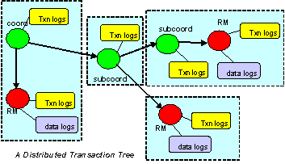In addition to failures we refer as centralized such system crashes, communication failures due for instance to network outages or message loss have to be considered during the recovery process of a distributed transaction.
In order to provide an efficient and optimized mechanism to deal with failure, modern transactional systems typically adopt a “presume abort” strategy, which simplifies the transaction management.
The presumed abort strategy can be stated as «when in doubt, abort». With this strategy, when the recovery mechanism has no information about the transaction, it presumes that the transaction has been aborted.
A particularity of the presumed-abort assumption allows a coordinator to not log anything before the commit decision and the participants do not to log anything before they prepare. Then, any failure which occurs before the 2pc starts lead to abort the transaction. Furthermore, from a coordinator point of view any communication failure detected by a timeout or exception raised on sending prepare is considered as a negative vote which leads to abort the transaction. So, within a distributed transaction a coordinator or a participant may fail in two ways: either it crashes or it times out for a message it was expecting. When a coordinator or a participant crashes and then restarts, it uses information on stable storage to determine the way to perform the recovery. As we will see it the presumed-abort strategy enable an optimized behavior for the recovery.The importance of common interfaces between participants, as well as the complexity of their implementation, becomes obvious in an open systems environment. For this aim various distributed transaction processing standards have been developed by international standards organizations. Among these organizations, We list three of them which are mainly considered in the product:
- The X/Open model and its successful XA interface
- The OMG with its CORBA infrastructure and the Object Transaction Service and finally
- The Jakarta Transactions specification process
- those assigned to the application which ties resources together in application- specific operations
- those assigned to the Resource manager which access physically to data stores
- functions performed by the Transaction Manager which manages transactions, and finally
- Communication Resource Managers which allow to exchange information with other transactional domains.
OTS is based on the Open Group's DTP model and is designed so that it can be implemented using a common kernel for both the OTS and Open Group APIs. In addition to the functions defined by DTP, OTS contains enhancements specifically designed to support the object environment. Nested transactions and explicit propagation are two examples.
The CORBA model also makes some of the functions in DTP unnecessary so these have been consciously omitted. Static registration and the communications resource manager are unnecessary in the CORBA environment.
A key feature of OTS is its ability to share a common transaction with XA compliant resource managers. This permits the incremental addition of objects into an environment of existing procedural applications.
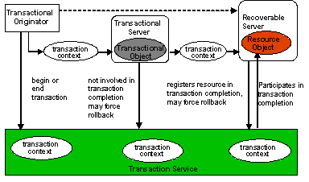
Figure 1 - OTS Architecture
The OTS architecture, shown in Figure 1, consists of the following components:
- Transaction Client: A program or object that invokes operations on transactional objects.
- Transactional Object : A CORBA object that encapsulates or refers to persistent data, and whose behavior depends on whether or not its operations are invoked during a transaction.
- Recoverable Object : A transactional object that directly maintains persistent data, and participates in transaction protocols.
- Transactional Server : A collection of one or more transactional objects.
- Recoverable Server: A collection of objects, of which at least one of which is recoverable.
- Resource Object : A resource object is an object in the transaction service that is registered for participation in the two-phase commit and recovery protocol.
- Nested Transactions : This allows an application to create a transaction that is embedded in an existing transaction. In this model, multiple subtransactions can be embedded recursively in a transaction. Subtransactions can be committed or rolled back without committing or rolling back the parent transaction. However, the results of a commit operation are contingent upon the commitment of all the transaction's ancestors. The main advantage of this model is that transactional operations can be controlled at a finer granularity. The application will have an opportunity to correct or compensate for failures at the subtransaction level, without actually attempting to commit the complete parent transaction.
- Application Synchronization : Using the OTS synchronization protocol, certain objects can be registered with the transaction service for notification before the start of and the completion of the two-phase commit process. This enables such application objects to synchronize transient state and data stored in persistent storage.
An object may require transactions to be either explicitly or implicitly propagated to its operations.
- Explicit propagation means that an application propagates a transaction context by passing objects defined by the Transaction Service as explicit parameters. This should typically be the PropagationContext structure.
- Implicit propagation means that requests are implicitly associated with the client's transaction; they share the client's transaction context. It is transmitted implicitly to the objects, without direct client intervention. Implicit propagation depends on indirect context management, since it propagates the transaction context associated with the Current pseudo object. An object that supports implicit propagation would not typically expect to receive any Transaction Service object as an explicit parameter.
- Direct Context Management/Explicit Propagation: the client application directly accesses the Control object, and the other objects which describe the state of the transaction. To propagate the transaction to an object, the client must include the appropriate Transaction Service object as an explicit parameter of an operation; typically this should be the PropagationContext structure.
- Indirect Context Management/Implicit Propagation: the client application uses operations on the Current pseudo object to create and control its transactions. When it issues requests on transactional objects, the transaction context associated with the current thread is implicitly propagated to the object.
- Indirect Context Management/Explicit Propagation: for an implicit model application to use explicit propagation, it can get access to the Control using the get_control operation on the Current pseudo object. It can then use a Transaction Service object as an explicit parameter to a transactional object; for efficiency reasons this should be the PropagationContext structure, obtained by calling get_txcontext on the appropriate Coordinator reference. This is explicit propagation.
- Direct Context Management/Implicit Propagation: a client that accesses the Transaction Service objects directly can use the resume pseudo object operation to set the implicit transaction context associated with its thread. This allows the client to invoke operations of an object that requires implicit propagation of the transaction context.
-
Indirect and Implicit
In the code fragments below, a transaction originator uses indirect context management and implicit transaction propagation; txn_crt is an example of an object supporting the Current interface. The client uses the begin operation to start the transaction whichbecomes implicitly associated with the originator's thread of control.
... txn_crt.begin(); // should test the exceptions that might be raised ... // the client issues requests, some of which involve // transactional objects; BankAccount.makeDeposit(deposit); ... txn_crt.commit(false)The program commits the transaction associated with the client thread. The report_heuristics argument is set to false so no report will be made by the Transaction Service about possible heuristic decisions.
-
Direct and Explicit
In the following example, a transaction originator uses direct context management and explicit transaction propagation. The client uses a factory object supporting the CosTransactions::TransactionFactory interface to create a new transaction and uses the returned Control object to retrieve the Ter mi nat or and Coordinator objects.
... CosTransactions::Control ctrl; CosTransactions::Terminator ter; CosTransactions::Coordinator coo; coo = TFactory.create(0); ter = ctrl.get_terminator(); ... transactional_object.do_operation(arg, c); ... t.commit(false);The client issues requests, some of which involve transactional objects, in this case explicit propagation of the context is used. The Control object reference is passed as an explicit parameter of the request; it is declared in the OMG IDL of the interface. The transaction originator uses the Terminator object to commit the transaction; the report_heuristics argument is set to false: so no report will be made by the Transaction Service about possible heuristic decisions.
The main difference between direct and indirect context management is the effect on the invoking thread's transaction context. If using indirect (i.e., invoking operations through the Current pseudo object), then the thread's transaction context will be modified automatically by the OTS, e.g., if begin is called then the thread's notion of the current transaction will be modified to the newly created transaction; when that is terminated, the transaction previously associated with the thread (if any) will be restored as the thread's context (assuming subtransactions are supported by the OTS implementation). However, if using direct management, no changes to the threads transaction context are performed by the OTS: the application programmer assumes responsibility for this.
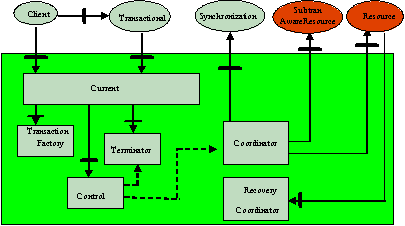
Figure 2 - OTS interfaces and their interactions
Table 1 - OTS Interfaces and their role.
| Interface | Role and operations |
| Current |
|
| TransactionFactory |
Explicit transaction creation
|
| Control |
Explicit transaction context management
|
| Terminator | Commit (commit) or rollback (rollback) a transaction in a direct transaction management mode |
| Coordinator |
|
| RecoveryCoordinator | Allows to coordinate recovery in case of failure ( replay_completion ) |
| Resource | Participation in two-phase commit and recovery protocol ( prepare, rollback, commit, commit_one_phase, forget ) |
| Synchronization | Application synchronization before beginning and after completion of two-phase commit ( before_completion, after_completion ) |
| SubtransactionAwareResource | Commit or rollback a subtransaction ( commit_subtransaction, rollback_subtransaction) |
| TransactionalObject | A marker interface to be implemented by all transactional objects (no operation defined) |
JTS specifies the implementation of a Java transaction manager. This transaction manager supports the JTA, using which application servers can be built to support transactional Java applications. Internally the JTS implements the Java mapping of the OMG OTS specifications.
The JTA specifies an architecture for building transactional application servers and defines a set of interfaces for various components of this architecture. The components are: the application, resource managers, and the application server, as shown in the slide.
The JTS thus provides a new architecture for transactional application servers and applications, while complying to the OMG OTS 1.1 interfaces internally. This allows the JTA compliant applications to interoperate with other OTS 1.1 complaint applications through the standard IIOP.
As shown in the Figure 1, in the Java transaction model, the Java application components can conduct transactional operations on JTA compliant resources via the JTS. The JTS acts as a layer over the OTS. The applications can therefore initiate global transactions to include other OTS transaction managers, or participate in global transactions initiated by other OTS compliant transaction managers.
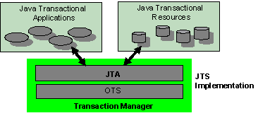
Figure 1 - The JTA/JTS transaction model
The Java Transaction Service is architected around an application server and a transaction manager. The architecture is shown in Figure 2.
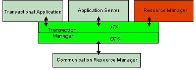
Figure 2 - The JTA/JTS Architecture
The JTS architecture consists of the following components:
- Transaction Manager : The transaction manager is the core component of this architecture and is provided by an implementation of the JTS. It provides interfaces to create transactions (including transaction demarcation and propagation of transaction context), allows enlistment and delistment of resources, provides interfaces for registering components for application synchronization, implements the synchronization protocol, and initiates and directs the two phase commit and recovery protocol with the resource managers.
- Application Server : One of the key features of the JTS architecture is that it allows an application server to be built on top of the transaction service and the resources. Application developers can develop and deploy application components onto the application server for initiating and managing transactions. The application server can therefore abstract all transactional semantics from the application programs.
- Application Components : These are the clients for the transactional resources and implement business transactions. These are deployed on the application server. Depending on the architecture of the application server, these components can directly or indirectly create transactions and operate on the transactional resources. For example, an Jakarta Enterprise Beans (EJB) server allows declarative transaction demarcation, in which case, the EJB components need not directly implement the transactions. However, a Java implementation of a CORBA OTS, requires the CORBA object to demarcate transactions explicitly.
- Resource Manager : A resource manager is an X/Open XA compliant component that manages a persistent and stable storage system, and participates in the two phase commit and recovery protocol with the transaction manager. The application manager also provides interfaces for the application server and the application components to operate on the data managed by it.
- Communication Resource Manager : This allows the transaction manager to participate in transactions initiated by other transaction managers. However, the JTS specification does not specify any protocol for this communication and assumes that an implementation of the communication resource manager supports the CORBA OTS and GIOP specifications.
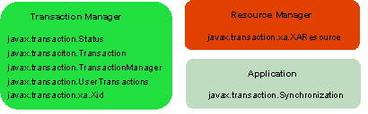
Figure 3 - JTA Interfaces
- jakarta.transaction.Status: Defines the following flags for the status of a transaction:
| Flag | Purpose |
| STATUS_ACTIVE | Transaction is active (started but not prepared) |
| STATUS_COMMITTED | Transaction is committed |
| STATUS_COMMITTING | Transaction is in the process of committing. |
| STATUS_MARKED_ROLLBACK | Transaction is marked for rollback. |
| STATUS_NO_TRANSACTION | There is no transaction associated with the current Transaction, UserTransaction or TransactionManager objects. |
| STATUS_PREPARED | Voting phase of the two phase commit is over and the transaction is prepared. |
| STATUS_PREPARING | Transaction is in the process of preparing. |
| STATUS_ROLLEDBACK | Outcome of the transaction has been determined as rollback. It is likely that heuristics exists. |
| STATUS_ROLLING_BACK | Transaction is in the process of rolling back. |
| STATUS_UNKNOWN | A transaction exists but its current status can not be determined. This is a transient condition |
Table 1: Transaction Status Flags
The jakarta.transaction.Transaction, jakarta.transaction.TransactionManager, and jakarta.transaction.UserTransaction interfaces provide a getStatus method that returns one of the above status flags.
- jakarta.transaction.Transaction: An object of this type is created for each global transaction. This interface provides methods for transaction completion(commit and rollback), resource enlistment (enlistResource) and delistment (delistResource), registration of synchronization objects (registerSynchronization), and query of status of the transaction (getStatus).
- jakarta.transaction.TransactionManager: This interface is implemented by the JTS and allows an application server to communicate with the transaction manager to demarcate transactions (begin, commit, rollback), suspending and resuming transactions (suspend and resume), set the transaction for rollback (setRollbackOnly), get the associated Transaction object (getTransaction), set the transaction timeout interval (setTransactionTimeout) and query the status of the transaction (getStatus).
- jakarta.transaction.UserTransaction: . This interface provides methods to begin and end transactions (begin, commit, and rollback), set the transaction for rollback (setRollbackOnly), set the transaction timeout interval (setTransactionTimeout), and get the status of the transaction (getStatus). Nested transactions are not supported, and begin throws the NotSupportedException when the calling thread is already associated with a transaction. UserTransaction automatically associates newly created transactions with the invoking thread.
- javax.transaction.xa.Xid: This interface is a Java mapping of the X/Open transaction identifier xid structure. The transaction manager uses an object of this type to associate a resource manager with a transaction.
- javax.transaction.xa.XAResource: This is a Java mapping of the X/Open XA interface, and is implemented by resource managers operating with the JTS. This interface provides methods to start (start) and end (end) work on behalf of a specified transaction, to prepare a transaction with the current resource (prepare), to end transactions with the current resource (commit, forget, recover, and rollback), to compare the current resource manager with another resource manager (isSameRM), and to get and set the transaction timeout (getTransactionTimeout, setTransactionTimeout).
- jakarta.transaction.Synchronization: An object intended to participate in a synchronization protocol with the transaction manager should implement this interface. This mechanism is based on the Observer pattern. This interface has two methods - beforeCompletion and afterCompletion to be called before starting and after completing, respectively, the two phase commit operation.
The application component can then use this object to begin, commit and rollback transactions. In this approach, association between the calling thread and the transaction, and transaction context propagation are handled transparently by the transaction manager.
Usage:
// Get a UserTransaction object
// Begin a transaction
userTransaction.begin();
// Transactional operations ...
// End the transaction
userTransaction.commit();
Usage
// Begin a transaction
Transaction t = TransactionManager.begin();
// Transactional operations ...
// End the transaction
TransactionManager.commit();
- Application Program Demarcation: The jakarta.transaction.UserTransaction interface provides methods for application components to begin and end transactions programmatically. The underlying application server should provide a mechanism to obtain a reference to this object. The Jakarta Transactions specification requires that the application servers use the JNDI for storing references to UserTransaction objects and for lookup.
- Application Server Controlled Demarcation In this approach, the jakarta.transaction.TransactionManager interface controls transaction demarcation on behalf of the application being managed. The transaction manager also maintains the transaction context and its association with the calling threads implicitly.
Jakarta Transactions is much more closely integrated with the XA concept of resources than the arbitrary objects. For each resource in-use by the application, the application server invokes the enlistResource method with an XAResource object which identifies the resource in use.
The enlistment request results in the transaction manager informing the resource manager to start associating the transaction with the work performed through the corresponding resource. The transaction manager is responsible for passing the appropriate flag in its XAResource.start method call to the resource manager.
The delistResource method is used to disassociate the specified resource from the transaction context in the target object. The application server invokes the method with the two parameters: the XAResource object that represents the resource, and a flag to indicate whether the operation is due to the transaction being suspended (TMSUSPEND), a portion of the work has failed (TMFAIL), or a normal resource release by the application (TMSUCCESS).
The de-list request results in the transaction manager informing the resource manager to end the association of the transaction with the target XAResource. The flag value allows the application server to indicate whether it intends to come back to the same resource whereby the resource states must be kept intact. The transaction manager passes the appropriate flag value in its XAResource.end method call to the underlying resource manager.
The application server can enlist and delist resource managers with the transaction manager using the jakarta.transaction.Transaction interface
UsageResource enlistment is in general done by the application server when an application requests it for a connection to a transactional resource.
// ... an implementation of the application server
// Get a reference to the underlying TransactionManager object.
...
// Get the current Transaction object from the TransactionManager.
transaction = transactionManager.getTransaction();
// Get an XAResource object from a transactional resource.
...
// Create a Transaction object.
...
// Enlist the resource
transaction.enlistResource(xaResource);...
// Return the connection to the application.
...
Resource delistment is done similarly after the application closes connections to transactional resources.
The jakarta.transaction.Transaction interface provides the registerSynchronization method to register jakarta.transaction.Synchronization objects with the transaction manager. The transaction manager then uses the synchronization protocol and calls the beforeCompletion and afterCompletion methods before and after the two phase commit process.
- The beforeCompletion method is called prior to the start of the two-phase transaction complete process. This call is executed in the same transaction context of the caller who initiates the TransactionManager.commit or the call is executed with no transaction context if Transaction.commit is used.
- The afterCompletion method is called after the transaction has completed. The status of the transaction is supplied in the parameter. This method is executed without a transaction context.
The EJB framework specifies construction, deployment and invocation of components called as enterprise beans. The EJB specification classifies enterprise beans into two categories: entity beans and session beans. While entity beans abstract persistent domain data, session beans provide for session specific application logic. Both types of beans are maintained by EJB compliant servers in what are called as containers. A container provides the run time environment for an enterprise bean. Figure 4 shows a simplified architecture of transaction management in EJB compliant application servers.
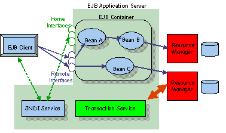
Figure 4 - EJB and Transactions
An enterprise bean is specified by two interfaces: the home interface and the remote interface. The home interface specifies how a bean can created or found. With the help of this interface, a client or another bean can obtain a reference to a bean residing in a container on an EJB server. The remote interface specifies application specific methods that are relevant to entity or session beans.
Clients obtain references to home interfaces of enterprise beans via the Java Naming and Directory Interface (JNDI) mechanism. An EJB server should provide a JNDI implementation for any naming and directory server. Using this reference to the home interface, a client can obtain a reference to the remote interface. The client can then access methods specified in the remote interface. The EJB specification specifies the Java Remote Method Invocation (RMI) as the application level protocol for remote method invocation. However, an implementation can use IIOP as the wire-level protocol.
In Figure 5, the client first obtains a reference to the home interface, and then a reference to an instance of Bean A via the home interface. The same procedure is applicable for instance of Bean A to obtain a reference and invoke methods on an instance of Bean B.
The EJB framework allows both programmatic and declarative demarcation of transactions. Declarative demarcation is needed for all enterprise beans deployed on the EJB. In addition, EJB clients can also initiative and end transactions programmatically.
The container performs automatic demarcation depending on the transaction attributes specified at the time of deploying an enterprise bean in a container. The following attributes determine how transactions are created.
- NotSupported : The container invokes the bean without a global transaction context.
- Required : The container invokes the bean within a global transaction context. If the invoking thread already has a transaction context associated, the container invokes the bean in the same context. Otherwise, the container creates a new transaction and invokes the bean within the transaction context.
- Supports : The bean is transaction-ready. If the client invokes the bean within a transaction, the bean is also invoked within the same transaction. Otherwise, the bean is invoked without a transaction context.
- RequiresNew : The container invokes the bean within a new transaction irrespective of whether the client is associated with a transaction or not.
- Mandatory : The container must invoke the bean within a transaction. The caller should always start a transaction before invoking any method on the bean.
- Declarative Demarcation : This is also called as container managed demarcation . The container demarcates transactions on behalf of the bean. The Required or RequiresNew attribute is specified in a deployment descriptor at the time of deploying the bean on an EJB server. The bean can use the jakarta.ejb.EJBContext.setRollbackOnly() method to mark the transaction for rollback.
- Bean Managed Demarcation : This is similar to the client-managed demarcation.
- Client Managed Demarcation : Java clients can use the jakarta.transaction.UserTransaction interface to demarcate transactions programmatically.
Java Data Base Connectivity, provide Java programs with a way to connect to and use relational databases. The JDBC API lets you invoke SQL commands from Java programming language methods. In simplest terms, JDBC allows to do three things
- Establish a connection with a database
- Send SQL statements
- Process the results
The following code fragment gives a simple example of these three steps:
Connection con = DriverManager.getConnection(
"jdbc:myDriver:wombat", "myLogin", "myPassword");
Statement stmt = con.createStatement();
ResultSet rs = stmt.executeQuery("SELECT a, b, c FROM Table1");
while (rs.next()) {
int x = rs.getInt("a");
String s = rs.getString("b");
float f = rs.getFloat("c");
}
Before the version 2.0 of JDBC, only local transactions controlled by the transaction manager of the DBMS is possible. To code a JDBC transaction, you invoke the commit and rollback methods of the java.sql.Connection interface. The beginning of a transaction is implicit. A transaction begins with the first SQL statement that follows the most recent commit, rollback, or connect statement. (This rule is generally true, but may vary with DBMS vendor.). The following example illustrates how transactions are managed by the JDBC API.
public void withdraw (double amount) {
try {
//A connection opened with JDBC is an AUTO COMMIT mode meaning
// that the commitment is automatically performed when the connection
// is closed
//setAutoCommit to false disable this feature
connection.setAutoCommit(false);
//perform an SQL update to Withdraw money from account
connection.commit();
} catch (Exception ex) {
try {
connection.rollback();
throw new Exception("Transaction failed: " + ex.getMessage());
} catch (Exception sqx) {
throw new Exception(...}
}
}
}From the version 2.0, a JDBC driver can be involved within a distributed transaction since it supports the XAResource interface that allows to participate to the 2PC protocol. An application that need to include more than one database can create a JTA transaction. To demarcate a JTA transaction, the application program invokes the begin, commit, and rollback methods of the jakarta.transaction.UserTransaction interface. The following code, that can be applied to a bean-managed transaction, demonstrates the UserTransaction methods. The begin and commit invocations delimit the updates to the database. If the updates fail, the code invokes the rollback method and throws an Exception.
public void transfer(double amount) {
UserTransaction ut = context.getUserTransaction();
try {
ut.begin();
// Perform SQL command to debit account 1
// Perform SQL command to debit account 2
ut.commit();
} catch (Exception ex) {
try {
ut.rollback();
} catch (Exception ex1) {
throw new Exception ("Rollback failed: " + ex1.getMessage());
}
throw new Exception ("Transaction failed: " + ex.getMessage());
}
}
This trail provides information on the way to configure environmental variables needed to define the behaviour of transactional applications managed with . Basically, the behaviour of the product is configurable through property attributes. Although these property attributes may be specified as command line arguments, it is more convenient to organise and initialise them through properties files.
The properties file named jbossts-properties.xml and located under the <ats_installation_directory>/etc directory is organised as a collection of property names.
<property> name="a_name" value="a_value" </property>
Some properties must be specified by the developer while others do not need to be defined and can be used with their default values. Basically the properties file that does not provide default values to all its properties is the jbossts-properties.xml.
The following table describes some properties in the jbossts-properties.xml, where:
- Name : indicates the name of the property
- Description : explain the aim of the property
- Possible Value : indicates possible value the property can have
- Default Value : shows the default value, if any, assigned to the property
| Name | Description | Possible Value | Default Value |
| com.arjuna.ats.arjuna.objectstore.localOSRoot | By default, all object states will be stored within the "defaultStore" subdirectory of the object store root. However, this subdirectory can be changed by setting the localOSRoot property variable accordingly | Directory name | defaultStore |
| com.arjuna.ats.arjuna.objectstore.objectStoreDir | Specify the location of the ObjectStore | Directory name | PutObjectStoreDirHere |
| com.arjuna.ats.arjuna.common.varDir | needs to be able to write temporary files to a well known location during execution. By default this location is var. However, by setting the varDir property variable this can be overridden. | Directory name | var/tmp |
The location of the ObjectStore is specified in via the properrty com.arjuna.ats.arjuna.objectstore.objectStoreDir that can be passed with the java flag "-D". For convenience this property is defined in the properties file jbossts-properties.xml, and its value is set during the installation. At any time, the location of the ObjectStore may be changed.
Sometimes it is desirable, mainly in case of debugging, to have some form of output during execution to trace internal actions performed. uses the logging tracing mechanism provided by the Arjuna Common Logging Framework (CLF) version 2.4, which provides a high level interface that hides differences that exist between logging APIs such Jakarta log4j, JDK 1.4 logging API or dotnet logging API.
With the CLF applications make logging calls on commonLogger objects. These commonLogger objects pass log messages to Handler for publication. Both commonLoggers and Handlers may use logging Levels to decide if they are interested in a particular log message. Each log message has an associated log Level, that gives the importance and urgency of a log message. The set of possible Log Levels are DEBUG, INFO, WARN, ERROR and FATAL. Defined Levels are ordered according to their integer values as follows: DEBUG < INFO < WARN < ERROR < FATAL.
The CLF provides an extension to filter logging messages according to finer granularity an application may define. That is, when a log message is provided to the commonLogger with the DEBUG level, additional conditions can be specified to determine if the log message is enabled or not.
Note : These conditions are applied if and only the DEBUG level is enabled and the log request performed by the application specifies debugging granularity.When enabled, Debugging is filtered conditionally on three variables:
- Debugging level: this is where the log request with the DEBUG Level is generated from, e.g., constructors or basic methods.
- Visibility level: the visibility of the constructor, method, etc. that generates the debugging.
- Facility code: for instance the package or sub-module within which debugging is generated, e.g., the object store.
According to these variables the Common Logging Framework defines three interfaces. A particular product may implement its own classes according to its own finer granularity. uses the default Debugging level and the default Visibility level provided by CLF, but it defines its own Facility Code. uses the default level assigned to its commonLoggers objects (DEBUG). However, it uses the finer debugging features to disable or enable debug messages. Finer values used by the are defined below:
- Debugging level – uses the default values defined in the class com.arjuna.common.util.logging.CommonDebugLevel
| Debug Level | Value | Description |
| NO_DEBUGGING | 0x0000 | A commonLogger object assigned with this values discard all debug requests |
| CONSTRUCTORS | 0x0001 | Diagnostics from constructors |
| DESTRUCTORS | 0x0002 | Diagnostics from finalizers. |
| CONSTRUCT_AND_DESTRUCT | CONSTRUCTORS | DESTRUCTORS | Diagnostics from constructors and finalizers |
| FUNCTIONS | 0x010 | Diagnostics from functions |
| OPERATORS | 0x020 | Diagnostics from operators, such as equals |
| FUNCS_AND_OPS | FUNCTIONS | OPERATORS | Diagnostics from functions and operations. |
| ALL_NON_TRIVIAL | CONSTRUCT_AND_DESTRUCT | FUNCTIONS | OPERATORS | Diagnostics from all non-trivial operations |
| TRIVIAL_FUNCS | 0x0100 | Diagnostics from trivial functions. |
| TRIVIAL_OPERATORS: | 0x0200 | Diagnostics from trivial operations, and operators. |
| ALL_TRIVIAL | TRIVIAL_FUNCS | TRIVIAL_OPERATORS | Diagnostics from all trivial operations |
| FULL_DEBUGGING | 0xffff | Full diagnostics. |
- Visibility level – uses the default values defined in the class com.arjuna.common.util.logging.CommonVisibilityLevel
| Debug Level | Value | Description |
| VIS_NONE | 0x0000 | No Diagnostic |
| VIS_PRIVATE | 0x0001 | only from private methods. |
| VIS_PROTECTED | 0x0002 | only from protected methods. |
| VIS_PUBLIC | 0x0004 | only from public methods. |
| VIS_PACKAGE | 0x0008 | only from package methods. |
| VIS_ALL | 0xffff | Full Diagnostic |
- Facility Code – uses the following values
| Facility Code Level | Value | Description |
| FAC_ATOMIC_ACTION | 0x00000001 | atomic action core module |
| FAC_BUFFER_MAN | 0x00000004 | state management (buffer) classes |
| FAC_ABSTRACT_REC | 0x00000008 | abstract records |
| FAC_OBJECT_STORE | 0x00000010 | object store implementations |
| FAC_STATE_MAN | 0x00000020 | state management and StateManager) |
| FAC_SHMEM | 0x00000040 | shared memory implementation classes |
| FAC_GENERAL | 0x00000080 | general classes |
| FAC_CRASH_RECOVERY | 0x00000800 | detailed trace of crash recovery module and classes |
| FAC_THREADING | 0x00002000 | threading classes |
| FAC_JDBC | 0x00008000 | JDBC 1.0 and 2.0 support |
| FAC_RECOVERY_NORMAL | 0x00040000 | normal output for crash recovery manager |
To ensure appropriate output, it is necessary to set some of the finer debug properties explicitly as follows:
<properties>
<!-- CLF 2.4 properties -->
<property
name="com.arjuna.common.util.logging.DebugLevel"
value="0x00000000"/>
<property
name="com.arjuna.common.util.logging.FacilityLevel"
value="0xffffffff"/>
<property
name="com.arjuna.common.util.logging.VisibilityLevel"
value="0xffffffff"/>
<property
name="com.arjuna.common.util.logger"
value="log4j"/>
</properties>By default, debugging messages are not enabled since the DebugLevel is set to NO_DEBUGGING (0x00000000). You can enable debugging by providing one of the appropriate value listed above - for instance with you wish to see all internal actions performed by the RecoveryManager to recover transactions from a failure set the DebugLevel to FULL_DEBUGGING (0xffffffff) and the FacilityCode Level FAC_CRASH_RECOVERY.
Note : To enable finger debug messages, the logging level should be set to the DEBUG level as described below.
From the program point of view a same API is used whatever the underlying logging mechanism, but from a configuration point of view is that the user is totally responsible for the configuration of the underlying logging system. Hence, the properties of the underlying log system are configured in a manner specific to that log system, e.g., a log4j.properties file in the case that log4j logging is used. To set the logging level to the DEBUG value, the log4j.properties file can be edited to set that value.
The property com.arjuna.common.util.logger allows to select the underlying logging system. Possible value are listed in the following table.
| Property Value | Description |
| log4j | Log4j logging (log4j classes must be available in the classpath); configuration through the log4j.properties file, which is picked up from the CLASSPATH or given through a System property: log4j.configuration |
| jdk14 | JDK 1.4 logging API (only supported on JVMs of version 1.4 or higher). Configuration is done through a file logging.properties in the jre/lib directory. |
| simple | Selects the simple JDK 1.1 compatible console-based logger provided by Jakarta Commons Logging |
| csf | Selects CSF-based logging (CSF embeddor must be available) |
| jakarta | Uses the default log system selection algorithm of the Jakarta Commons Logging framework |
| dotnet |
Selects a .net logging implementation
Since a dotnet logger is not currently implemented, this is currently identical to simple. Simple is a purely JDK1.1 console-based log implementation. |
| avalon | Uses the Avalon Logkit implementation |
| noop | Disables all logging |
Many ORBs currently in use support different versions of CORBA and/or the Java language mapping.
only supports the new Portable Object Adapter (POA) architecture described in the CORBA 2.3 specification as a replacement for the Basic Object Adapter (BOA). Unlike the BOA, which was weakly specified and led to a number of different (and often conflicting) implementations, the POA was deliberately designed to reduce the differences between ORB implementations, and thus minimise the amount of re-coding that would need to be done when porting applications from one ORB to another. However, there is still scope for slight differences between ORB implementations, notably in the area of threading. Note, instead of talking about the POA, this manual will consider the Object Adapter
(OA).
Because must be able to run on a number of different ORBs, we have developed an ORB portability interface which allows entire applications to be moved between ORBs with little or no modifications. This portability interface is available to the application programmer in the form of several Java classes.
The ORB class provided in the package com.arjuna.orbportability.ORB shown below provides a uniform way of using the ORB. There are methods for obtaining a reference to the ORB, and for placing the application into a mode where it listens for incoming connections. There are also methods for registering application specific classes to be invoked before or after ORB initialisation.
public class ORB
{
public static ORB getInstance(String uniqueId);
// given the various parameters,this method initialises the ORB and
// retains a reference to it within the ORB class.
public synchronized void initORB () throws SystemException;
public synchronized void initORB (Applet a, Properties p)
throws SystemException;
public synchronized void initORB (String[] s, Properties p)
throws SystemException;
//The orb method returns a reference to the ORB.
//After shutdown is called this reference may be null.
public synchronized org.omg.CORBA.ORB orb ();
public synchronized boolean setOrb (org.omg.CORBA.ORB theORB);
// If supported, this method cleanly shuts down the ORB.
// Any pre- and post- ORB shutdown classes which
//have been registered will also be called.
public synchronized void shutdown ();
public synchronized boolean addAttribute (Attribute p);
public synchronized void addPreShutdown (PreShutdown c);
public synchronized void addPostShutdown (PostShutdown c);
public synchronized void destroy () throws SystemException;
//these methods place the ORB into a listening mode,
//where it waits for incoming invocations.
public void run ();
public void run (String name);
};
Note, some of the methods are not supported on all ORBs, and in this situation, a suitable exception will be thrown. The ORB class is a factory class which has no public constructor. To create an instance of an ORB you must call the getInstance method passing a unique name as a parameter. If this unique name has not been passed in a previous call to getInstance you will be returned a new ORB instance. Two invocations of getInstance made with the same unique name, within the same JVM, will return the same ORB instance.
The OA classes shown below provide a uniform way of using Object Adapters (OA). There are methods for obtaining a reference to the OA. There are also methods for registering application specific classes to be invoked before or after OA initialisation. Note, some of the methods are not supported on all ORBs, and in this situation, a suitable exception will be thrown. The OA class is an abstract class and provides the basic interface to an Object Adapter. It has two sub-classes RootOA and ChildOA, these classes expose the interfaces specific to the root Object Adapter and a child Object Adapter respectively. From the RootOA you can obtain a reference to the RootOA for a given ORB by using the static method getRootOA. To create a ChildOA instance use the createPOA method on the RootOA.
As described below, the OA class and its sub-classes provide most operations provided by the POA as specified in the POA specification.
public abstract class OA
{
public synchronized static RootOA getRootOA(ORB associatedORB);
public synchronized void initPOA () throws SystemException;
public synchronized void initPOA (String[] args) throws SystemException;
public synchronized void initOA () throws SystemException;
public synchronized void initOA (String[] args) throws SystemException;
public synchronized ChildOA createPOA (String adapterName,
PolicyList policies) throws AdapterAlreadyExists, InvalidPolicy;
public synchronized org.omg.PortableServer.POA rootPoa ();
public synchronized boolean setPoa (org.omg.PortableServer.POA thePOA);
public synchronized org.omg.PortableServer.POA poa (String adapterName);
public synchronized boolean setPoa (String adapterName,
org.omg.PortableServer.POA thePOA);
...
};
public class RootOA extends OA
{
public synchronized void destroy() throws SystemException;
public org.omg.CORBA.Object corbaReference (Servant obj);
public boolean objectIsReady (Servant obj, byte[] id);
public boolean objectIsReady (Servant obj);
public boolean shutdownObject (org.omg.CORBA.Object obj);
public boolean shutdownObject (Servant obj);
};
public class ChildOA extends OA
{
public synchronized boolean setRootPoa (POA thePOA);
public synchronized void destroy() throws SystemException;
public org.omg.CORBA.Object corbaReference (Servant obj);
public boolean objectIsReady (Servant obj, byte[] id)
throws SystemException;
public boolean objectIsReady (Servant obj) throws SystemException;
public boolean shutdownObject (org.omg.CORBA.Object obj);
public boolean shutdownObject (Servant obj);
};
The following example illustrates how to use the ORB Portability API to create
import com.arjuna.orbportability.ORB;
import com.arjuna.orbportability.OA;
public static void main(String[] args)
{
try
{
// Create an ORB instance
ORB orb = ORB.getInstance("orb_test");
OA oa = OA.getRootOA( orb ); // Get the root POA
orb.initORB(args, null); // Initialize the ORB
oa.initOA(args); // Initialize the OA
// Do Work
oa.destroy(); // destroy the OA
orb.shutdown(); // Shutdown the ORB
}
catch(Exception e) {}
};
If using such a JDK (from its version 1.2.2) in conjunction with another ORB it is necessary to tell the JVM which ORB to use. This happens by specifying the org.omg.CORBA.ORBClass and org.omg.CORBA.ORBSingletonClass properties. If used, ORB Portability classes will ensure that these properties are automatically set when required, i.e., during ORB initialisation.
The ORB portability library attempts to detect which ORB is in use, it does this by looking for the ORB implementation class for each ORB it supports. This means that if there are classes for more than one ORB in the classpath the wrong ORB can be detected. Therefore it is best to only have one ORB in your classpath. If it is necessary to have multiple ORBs in the classpath then the property com.arjuna.orbportability.orbImplementation must be set to the value specified in the table below.
| ORB | Property Value |
| JacORB v2.0 | com.arjuna.orbportability.internal.orbspecific.jacorb.orb.implementations.jacorb_2_0 |
For additional details on the features provided by the ORB Portability API refer to the documentation provided by the distribution.
The failure recovery subsystem of will ensure that results of a transaction are applied consistently to all resources affected by the transaction, even if any of the application processes or the machine hosting them crash or lose network connectivity. In the case of machine (system) crash or network failure, the recovery will not take place until the system or network are restored, but the original application does not need to be restarted recovery responsibility is delegated to the Recovery Manager process (see below). Recovery after failure requires that information about the transaction and the resources involved survives the failure and is accessible afterward: this information is held in the ActionStore, which is part of the ObjectStore. If the ObjectStore is destroyed or modified, recovery may not be possible.
Until the recovery procedures are complete, resources affected by a transaction that was in progress at the time of the failure may be inaccessible. For database resources, this may be reported as tables or rows held by "in-doubt transactions".
The Recovery Manager functions by:
- Periodically scanning the Object Store for transactions that may have failed. Failed transactions are indicated by the presence of log data after a period of time that the transaction would have normally been expected to finish.
- Checking with the application process which originated the transaction whether the transaction is still in progress or not.
- Recovering the transaction by re-activating the transaction and then replaying phase two of the commit protocol.
java com.arjuna.ats.arjuna.recovery.RecoveryManager
java com.arjuna.ats.arjuna.recovery.RecoveryManager -test
Each recovery activator, which implements the com.arjuna.ats.arjuna.recovery.RecoveryActivator interface, is used to instantiate a recovery class related to the underlying communication protocol. Indeed, since the version 3.0 of , the Recovery Manager is not specifically tied to an Object Request Broker or ORB, which is to specify a recovery instance able to manage the OTS recovery protocol the new interface RecoveryActivator is provided to identify specific transaction protocol. For instance, when used with OTS, the RecoveryActivitor has the responsibility to create a RecoveryCoordinator object able to respond to the replay_completion operation.
All RecoveryActivator instances inherit the same interface. They are loaded via the following recovery extension property:
<property
name="com.arjuna.ats.arjuna.recovery.recoveryActivator_<number>"
value="RecoveryClass"/> For instance the RecoveryActivator provided in the distribution of JTS/OTS, which shall not be commented, is as follow :
<property
name="com.arjuna.ats.arjuna.recovery.recoveryActivator_1"
value="com.arjuna.ats.internal.jts.
orbspecific.recovery.RecoveryEnablement"/> Recovery consists of two separate passes/phases separated by two timeout periods. The first pass examines the object store for potentially failed transactions; the second pass performs crash recovery on failed transactions. The timeout between the first and second pass is known as the backoff period. The timeout between the end of the second pass and the start of the first pass is the recovery period. The recovery period is larger than the backoff period.
The Recovery Manager invokes the first pass upon each recovery module, applies the backoff period timeout, invokes the second pass upon each recovery module and finally applies the recovery period timeout before restarting the first pass again.
The recovery modules are loaded via the following recovery extension property:
com.arjuna.ats.arjuna.recovery.recoveryExtension<number>=<RecoveryClass>
<property name="com.arjuna.ats.arjuna.recovery.recoveryExtension1"
value="com.arjuna.ats.internal.
arjuna.recovery.AtomicActionRecoveryModule"/>
<property name="com.arjuna.ats.arjuna.recovery.recoveryExtension2"
value="com.arjuna.ats.internal.
txoj.recovery.TORecoveryModule"/>
<property name="com.arjuna.ats.arjuna.recovery.recoveryExtension3"
value="com.arjuna.ats.internal.
jts.recovery.transactions.TopLevelTransactionRecoveryModule"/>
<property name="com.arjuna.ats.arjuna.recovery.recoveryExtension4"
value="com.arjuna.ats.internal.
jts.recovery.transactions.ServerTransactionRecoveryModule"/>
com.arjuna.ats.arjuna.recovery.recoveryBackoffPeriod (default 10 secs)
com.arjuna.ats.arjuna.recovery.periodicRecovery (default 120 secs)
The RecoveryManager calls the scan() method on each loaded ExpiryScanner implementation at an interval determined by the property com.arjuna.ats.arjuna.recovery.expiryScanInterval. This value is given in hours default is 12. An EXPIRY_SCAN_INTERVAL value of zero will suppress any expiry scanning. If the value as supplied is positive, the first scan is performed when RecoveryManager starts; if the value is negative, the first scan is delayed until after the first interval (using the absolute value)
The default ExpiryScanner is:
<property
name="com.arjuna.ats.arjuna.recovery.
expiryScannerTransactionStatusManager"
value="com.arjuna.ats.internal.arjuna.recovery.
ExpiredTransactionStatusManagerScanner"/> The following table summarize properties used by the Recovery Manager. These properties are defined by default the properties file named RecoveryManager-properties.xml.
| Name | Description | Possible Value | Default Value |
| com.arjuna.ats.arjuna.recovery.periodicRecoveryPeriod | Interval in seconds between initiating the periodic recovery modules | Value in seconds | 120 |
| com.arjuna.ats.arjuna.recovery.recoveryBackoffPeriod | Interval in seconds between first and second pass of periodic recovery | Value in seconds | 10 |
| com.arjuna.ats.arjuna.recovery.recoveryExtensionX | Indicates a periodic recovery module to use. X is the occurence number of the recovery module among a set of recovery modules. These modules are invoked in sort-order of names | The class name of the periodic recovery module | provides a set classes given in the RecoveryManager-properties.xml file |
| com.arjuna.ats.arjuna.recovery.recoveryActivator_X | Indicates a recovery activator to use. X is the occurence number of the recovery activator among a set of recovery activators. | The class name of the periodic recovery activator | provide one class that manages the recovery protocol specified by the OTS specification |
| com.arjuna.ats.arjuna.recovery.expiryScannerXXX | Expiry scanners to use (order of invocation is random). Names must begin with "com.arjuna.ats.arjuna.recovery.expiryScanner" | Class name | provides one class given in the RecoveryManager-properties.xml file |
| com.arjuna.ats.arjuna.recovery.expiryScanInterval | Interval, in hours, between running the expiry scanners. This can be quite long. The absolute value determines the interval - if the value is negative, the scan will NOT be run until after one interval has elapsed. If positive the first scan will be immediately after startup. Zero will prevent any scanning. | Value in hours | 12 |
| com.arjuna.ats.arjuna.recovery.transactionStatusManagerExpiryTime | Age, in hours, for removal of transaction status manager item. This should be longer than any ts-using process will remain running. Zero = Never removed. | Value in Hours | 12 |
| com.arjuna.ats.arjuna.recovery.transactionStatusManagerPort | Use this to fix the port on which the TransactionStatusManager listens | Port number (short) | use a free port |
- /bin: this directory contains commands to run the OTS transaction manager server (if required) and the Recovery Manager, and scripts to configure environment variables needed to execute .
- /docs: this directory contains documentation on the way to installing, administering and programming ArjunaCore, JTA and JTS.
- /etc: this directory contains appropriate properties files that can be used to configure the behaviour of the .
- /htdocs: this directory describes all APIs defined by
- /idl: this directory contains the CORBA idl files that may be registered with your interface repository prior to running any applications.
- /jacorb: This directory contains the jacorb distribution.
- /lib: this directory contains the jar files that contains packages defined by the . These jar files shall be added in the CLASSPATH
- /services: this directory contains the appropriates scripts, jar and configuration files allowing to start and stop standalone Transaction Service and Recovery Manager
- /trail_map: contains examples applications
To ensure that your installation is fully operational, we will run the simple demo.
Please follow these steps before running the transactional applications
- Ensure you have the Ant build system installed. Ant is a Java build tool, similar to make. It is available for free from http://ant.apache.org/ The sample application requires version 1.5.1 or later.
- The PATH and CLASSPATH environment variables need to be set appropriately to use . To make this easier, we provide a shell script setup_env.sh (and for Windows a batch file setup_env.bat) in the directory <jbossts_install_root>/bin/
- From a command prompt, cd to the directory containing the build.xml file (<jbossts_install_root>/trail_map) and type 'ant'. This will compile a set of sources files located under <jbossts_install_root>/trail_map/src then create an application .jar file named jbossts-demo.jar. under the directory <jbossts_install_root>/trail_map/lib
- Add the generated jar file to the CLASSPATH environment variable.
- Ensure
that the jacorb is added in your CLASSPATH. Use only the patched version that ships with .
Ensure that jar files appear before jacorb jar files.
- Start the server. src/com/arjuna/demo/simple/HelloServer.java">(HelloServer.java) ( Note: The source code for the trailmap is fully documented and can often contain very useful tips and information that may not be reflected elsewhere in the trailmap )
java com.arjuna.demo.simple.HelloServer
- Open another command prompt, go to the same /trail_map directory and start the client src/com/arjuna/demo/simple/HelloClient.java">(HelloClient.java) . Be sure that the environment variable CLASSPATH is set with the same value as explained above.
java com.arjuna.demo.simple.HelloClient
In the client window you should see the following lines:
Creating a transaction !
Call the Hello Server !
Commit transaction
DoneIn the server, which must be stopped by hand, you should see:
Hello - called within a scope of a transactionMore details on the way to configure the behavior of can be found in the section on configuration.
JDK releases from 1.2.2 onwards include a minimum ORB implementation from Sun. If using such a JDK in conjunction with another ORB it is necessary to tell the JVM which ORB to use. This happens by specifying the org.omg.CORBA.ORBClass and org.omg.CORBA.ORBSingletonClass properties. In earlier versions of the it was necessary to specify these properties explicitly, either on the command line of in the properties file. However, it is no longer a requirement to do this, as the ORB Portability classes will ensure that these properties are automatically set when required. Of course it is still possible to specify these values explicitly (and necessary if not using the ORB initialization methods)
Transaction management is one of the most crucial requirements for enterprise application development. Most of the large enterprise applications in the domains of finance, banking and electronic commerce rely on transaction processing for delivering their business functionality.
Enterprise applications often require concurrent access to distributed data shared amongst multiple components, to perform operations on data. Such applications should maintain integrity of data (as defined by the business rules of the application) under the following circumstances:
- distributed access to a single resource of data, and
- access to distributed resources from a single application component.
In such cases, it may be required that a group of operations on (distributed) resources be treated as one unit of work. In a unit of work, all the participating operations should either succeed or fail and recover together. This problem is more complicated when
- a unit of work is implemented across a group of distributed components operating on data from multiple resources, and/or
- the participating operations are executed sequentially or in parallel threads requiring coordination and/or synchronization.
In either case, it is required that success or failure of a unit of work be maintained by the application. In case of a failure, all the resources should bring back the state of the data to the previous state ( i.e., the state prior to the commencement of the unit of work).
From the programmer's perspective a transaction is a scoping mechanism for a collection of actions which must complete as a unit. It provides a simplified model for exception handling since only two outcomes are possible:
- success - meaning that all actions involved within a transaction are completed
- failure - no actions complete
To illustrate the reliability expected by the application let’s consider the funds transfer example which is familiar to all of us.
The Money transfer involves two operations: Deposit and WithdrawalThe complexity of implementation doesn't matter; money moves from one place to another. For instance, involved accounts may be either located in a same relational table within a database or located on different databases.
A Simple transfer consists on moving money from savings to checking while a Complex transfer can be performed at the end- of- day according to a reconciliation between international banks
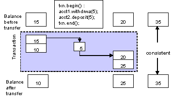The concept of a transaction, and a transaction manager (or a transaction processing service) simplifies construction of such enterprise level distributed applications while maintaining integrity of data in a unit of work.
A transaction is a unit of work that has the following properties:
- Atomicity – either the whole transaction completes or nothing completes - partial completion is not permitted.
- Consistency – a transaction transforms the system from one consistent state to another. In other words, On completion of a successful transaction, the data should be in a consistent state. For example, in the case of relational databases, a consistent transaction should preserve all the integrity constraints defined on the data.
-
Isolation:
Each transaction should appear to execute
independently of other transactions that may be
executing concurrently in the same environment.
The effect of executing a set of transactions
serially should be the same as that of running
them concurrently. This requires two things:
- During the course of a transaction, intermediate (possibly inconsistent) state of the data should not be exposed to all other transactions.
- Two concurrent transactions should not be able to operate on the same data. Database management systems usually implement this feature using locking.
- Durability: The effects of a completed transaction should always be persistent.
These properties, called as ACID properties, guarantee that a transaction is never incomplete, the data is never inconsistent, concurrent transactions are independent, and the effects of a transaction are persistent.
A collection of actions is said to be transactional if they possess the ACID properties. These properties are assumed to be ensured, in the presence of failures; if actions involved within the transaction are performed by a Transactional System. A transaction system includes a set of components where each of them has a particular role. Main components are described below.
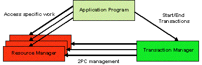Application Programs are clients for the transactional resources. These are the programs with which the application developer implements business transactions. With the help of the transaction manager, these components create global transactions and operate on the transactional resources with in the scope of these transactions. These components are not responsible for implementing mechanisms for preserving ACID properties of transactions. However, as part of the application logic, these components generally make a decision whether to commit or rollback transactions.
Application responsibilities could be summarized as follow:
- Create and demarcate transactions
- Operate on data via resource managers
A resource manager is in general a component that manages persistent and stable data storage system, and participates in the two phase commit and recovery protocols with the transaction manager.
A resource manager is typically a driver that provides two sets of interfaces: one set for the application components to get connections and operating, and the other set for participating in two phase commit and recovery protocols coordinated by a transaction manager. This component may also, directly or indirectly, register resources with the transaction manager so that the transaction manager can keep track of all the resources participating in a transaction. This process is called as resource enlistment.
Resource Manager responsibilities could be summarized as follow
- Enlist resources with the transaction manager
- Participate in two-phase commit and recovery protocol
The transaction manager is the core component of a transaction processing environment. Its main responsibilities are to create transactions when requested by application components, allow resource enlistment and delistment, and to manage the two-phase commit or recovery protocol with the resource managers.
A typical transactional application begins a transaction by issuing a request to a transaction manager to initiate a transaction. In response, the transaction manager starts a transaction and associates it with the calling thread. The transaction manager also establishes a transaction context. All application components and/or threads participating in the transaction share the transaction context. The thread that initially issued the request for beginning the transaction, or, if the transaction manager allows, any other thread may eventually terminate the transaction by issuing a commit or rollback request.
Before a transaction is terminated, any number of components and/or threads may perform transactional operations on any number of transactional resources known to the transaction manager. If allowed by the transaction manager, a transaction may be suspended or resumed before finally completing the transaction.
Once the application issues the commit request, the transaction manager prepares all the resources for a commit operation, and based on whether all resources are ready for a commit or not, issues a commit or rollback request to all the resources.
Resource Manager responsibilities could be summarized as follow:
- Establish and maintain transaction context
- Maintain association between a transaction and the participating resources.
- Initiate and conduct two-phase commit and recovery protocol with the resource managers.
- Make synchronization calls to the application components before beginning and after end of the two-phase commit and recovery process
A transaction that involves only one transactional resource, such a database, is considered as local transaction , while a transaction that involves more than one transactional resource that need to be coordinated to reach a consistent state is considered as a distributed transaction.
A transaction can be specified by what is known as transaction demarcation. Transaction demarcation enables work done by distributed components to be bound by a global transaction. It is a way of marking groups of operations to constitute a transaction.
The most common approach to demarcation is to mark the thread executing the operations for transaction processing. This is called as programmatic demarcation. The transaction so established can be suspended by unmarking the thread, and be resumed later by explicitly propagating the transaction context from the point of suspension to the point of resumption.
The transaction demarcation ends after a commit or a rollback request to the transaction manager. The commit request directs all the participating resources managers to record the effects of the operations of the transaction permanently. The rollback request makes the resource managers undo the effects of all operations on the transaction.
Since multiple application components and resources participate in a transaction, it is necessary for the transaction manager to establish and maintain the state of the transaction as it occurs. This is usually done in the form of transaction context.
Transaction context is an association between the transactional operations on the resources, and the components invoking the operations. During the course of a transaction, all the threads participating in the transaction share the transaction context. Thus the transaction context logically envelops all the operations performed on transactional resources during a transaction. The transaction context is usually maintained transparently by the underlying transaction manager.
Resource enlistment is the process by which resource managers inform the transaction manager of their participation in a transaction. This process enables the transaction manager to keep track of all the resources participating in a transaction. The transaction manager uses this information to coordinate transactional work performed by the resource managers and to drive two-phase and recovery protocol. At the end of a transaction (after a commit or rollback) the transaction manager delists the resources.
This protocol between the transaction manager and all the resources enlisted for a transaction ensures that either all the resource managers commit the transaction or they all abort. In this protocol, when the application requests for committing the transaction, the transaction manager issues a prepare request to all the resource managers involved. Each of these resources may in turn send a reply indicating whether it is ready for commit or not. Only The transaction manager issue a commit request to all the resource managers, only when all the resource managers are ready for a commit. Otherwise, the transaction manager issues a rollback request and the transaction will be rolled back.
Basically, the Recovery is the mechanism which preserves the transaction atomicity in presence of failures. The basic technique for implementing transactions in presence of failures is based on the use of logs. That is, a transaction system has to record enough information to ensure that it can be able to return to a previous state in case of failure or to ensure that changes committed by a transaction are properly stored.
In addition to be able to store appropriate information, all participants within a distributed transaction must log similar information which allow them to take a same decision either to set data in their final state or in their initial state.
Two techniques are in general used to ensure transaction's atomicity. A first technique focuses on manipulated data, such the Do/Undo/Redo protocol (considered as a recovery mechanism in a centralized system), which allow a participant to set its data in their final values or to retrieve them in their initial values. A second technique relies on a distributed protocol named the two phases commit, ensuring that all participants involved within a distributed transaction set their data either in their final values or in their initial values. In other words all participants must commit or all must rollback.
In addition to failures we refer as centralized such system crashes, communication failures due for instance to network outages or message loss have to be considered during the recovery process of a distributed transaction.
In order to provide an efficient and optimized mechanism to deal with failure, modern transactional systems typically adopt a “presume abort” strategy, which simplifies the transaction management.
The presumed abort strategy can be stated as «when in doubt, abort». With this strategy, when the recovery mechanism has no information about the transaction, it presumes that the transaction has been aborted.
A particularity of the presumed-abort assumption allows a coordinator to not log anything before the commit decision and the participants do not to log anything before they prepare. Then, any failure which occurs before the 2pc starts lead to abort the transaction. Furthermore, from a coordinator point of view any communication failure detected by a timeout or exception raised on sending prepare is considered as a negative vote which leads to abort the transaction. So, within a distributed transaction a coordinator or a participant may fail in two ways: either it crashes or it times out for a message it was expecting. When a coordinator or a participant crashes and then restarts, it uses information on stable storage to determine the way to perform the recovery. As we will see it the presumed-abort strategy enable an optimized behavior for the recovery.The importance of common interfaces between participants, as well as the complexity of their implementation, becomes obvious in an open systems environment. For this aim various distributed transaction processing standards have been developed by international standards organizations. Among these organizations, We list three of them which are mainly considered in the product:
- The X/Open model and its successful XA interface
- The OMG with its CORBA infrastructure and the Object Transaction Service and finally
- The Java Community Process leaded by Sun with its JTA/JTS specification
- those assigned to the application which ties resources together in application- specific operations
- those assigned to the Resource manager which access physically to data stores
- functions performed by the Transaction Manager which manages transactions, and finally
- Communication Resource Managers which allow to exchange information with other transactional domains.
assures complete, accurate business transactions for any Java based applications, including those written for the Jakarta EE and EJB frameworks.
is a 100% Java implementation of a distributed transaction management system based on the Jakarta EE Java Transaction Service (JTS) standard. Our implementation of the JTS utilizes the Object Management Group's (OMG) Object Transaction Service (OTS) model for transaction interoperability as recommended in the Jakarta EE and EJB standards. Although any JTS-compliant product will allow Java objects to participate in transactions, one of the key features of is it's 100% Java implementation. This allows to support fully distributed transactions that can be coordinated by distributed parties.
runs can be run both as an embedded distributed service of an application server (e.g. WildFly Application Server), affording the user all the added benefits of the application server environment such as real-time load balancing, unlimited linear scalability and unmatched fault tolerance that allows you to deliver an always-on solution to your customers. It is also available as a free-standing Java Transaction Service.
In addition to providing full compliance with the latest version of the JTS specification, leads the market in providing many advanced features such as fully distributed transactions and ORB portability with POA support.
works on a number of operating systems including Red Hat linux, Sun Solaris and Microsoft Windows XP. It requires a Java 5 or later environment.
The Java Transaction API support for comes in two flavours:
- a purely local implementation, that does not require an ORB, but obviously requires all coordinated resources to reside within the same JVM.
- a fully distributed implementation.
-
full compliant with the Jakarta Transactions 2.0
specification:
- Purely local (ORB-less) JTA offers the fastest JTA performance
- JDBC 3 support
- XA compliance
- JDBC drivers for database access with full transaction support
- Automatic crash recovery for XAResources
-
compliance with the JTS specification and
OTS 1.2 specification from the OMG
- Distributed JTA implementation
- support for distributed transactions (utilizing two-phase commit)
- POA ORB support
- interposition
- transaction heuristics
- distributed transaction manager (co-located with the transaction initiator) or transaction manager server
- checked/unchecked transaction behaviour
- supports both flat and nested transaction models, with nested-aware resources and resource adapters
- independent concurrency control system with support for type-specific concurrency control
- support for CosTransaction::Current
- direct and indirect transaction management
- synchronization interface
- explicit and implicit transaction context propagation
- automatic crash recovery
- multi-thread aware
- transactional objects (TO) for Java
- ORB independence via the ORB portability layer
The sample application consists of a banking application that involves a bank able to manage accounts on behalf of clients. Clients can obtain information on accounts and perform operations such credit, withdraw and transfer money from one account to an other.
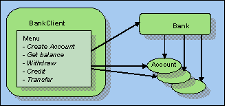
Figure 1 - The Banking Applications
- The client application:
- Initializes the banking object.
-
Choose an operation to be performed on the banking object. Possible operations are:
-
Create Account: this operation asks the bank to create a new account credit it with the
first amount provided in the request. The creation consists:
- to create an Account Object, then
-
Get Balance: this operation invokes the bank to obtain the balance of an account.
- the account is first returned by the bank, then
- the account is asked to return its balance
- Withdraw: this operation is invoked to withdraw money from an account. If the final balance is negative the withdraw is refused and the associated transaction aborted
- Credit: this operation is performed to credit an account
- Transfer: This operation is used to transfer money from an account to another. If the transfer leads to get a negative balance of the debited account, the transfer is refused and the associated transaction is aborted.
- Exit: This operation terminates the client
-
Create Account: this operation asks the bank to create a new account credit it with the
first amount provided in the request. The creation consists:
- Waits for a response.
- The Bank Object
- Creates Account Objects using name
- Maintains the list of created Accounts
- Returns, when asked, the Account Object requested by the client. If the Account doesn't exist an exception is returned to the client.
- An Account Object
-
Performs operations requested by the client
- credit,
- withdraw (debit), and
- return the current balance.
Each operation provided to the client leads to the creation of a transaction; therefore in order to commit or rollback changes made on an account, a resource is associated with the account to participate to the transaction commitment protocol. According to the final transaction decision, the resource is able to set the Account either to its initial state (in case of rollback) or to the final state (in case of commit). From the transactional view, Figure 2 depicts of transactional components.
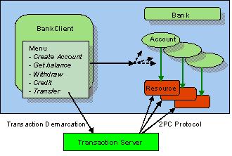
Figure 2 - The Banking Application and the transactional Component
Assuming that the product has been installed, this trail provides a set of examples that show how to build transactional applications. Two types of transactional applications are presented, those using the JTA interface and those accessing to the JTS (OTS) interfaces.
Please follow these steps before running the transactional applications
- Ensure you have the Ant build system installed. Ant is a Java build tool, similar to make. It is available for free from http://ant.apache.org/ The sample application requires version 1.5.1 or later.
- The PATH and CLASSPATH environment variables need to be set appropriately to use . To make this easier, we provide a shell script setup_env.sh (and for Windows a batch file setup_env.bat) in the directory <jbossts_install_root>/bin/
- From a command prompt, cd to the directory containing the build.xml file (<jbossts_install_root>/trail_map) and type 'ant', unless already done in the installation section . This will compile a set of sources files located under <jbossts_install_root>/trail_map/src then create an application .jar file named jbossts-demo.jar . under the directory <jbossts_install_root>/trail_map/lib
- Add the generated jar file to the CLASSPATH environment variable.
- The demo application is provided in several ways, accessing persistent data or not. When JDBC is used as a mean to access a database, Oracle 9i is used. For this aim the appropriate Oracle libraries (classes12.zip) should be add in the CLASSPATH environment variable.
<property
name="com.arjuna.ats.jta.jtaTMImplementation"
value="com.arjuna.ats.internal.jta.transaction.
arjunacore.TransactionManagerImple"/>
<property
name="com.arjuna.ats.jta.jtaUTImplementation"
value="com.arjuna.ats.internal.jta.transaction.
arjunacore.UserTransactionImple"/>
<property
name="com.arjuna.ats.jta.jtaTMImplementation"
value="com.arjuna.ats.internal.jta.transaction.
jts.TransactionManagerImple"/> <property
name="com.arjuna.ats.jta.jtaUTImplementation"
value="com.arjuna.ats.internal.jta.transaction.
jts.UserTransactionImple"/> Using JTA to create a distributed transaction need the creation of an ORB instance as done by a JTS application (see JTS versions of the banking application), the difference is in the interface used to demarcate and control transactions.
To illustrate the programming interfaces possibilities enabled by , the banking application is provided in several versions: a version that uses the JTA API and a second that uses JTS/OTS interfaces.
This trail focuses to understanding concepts related to the creation of transactions and the behavior of the commitment protocol, while the next trail illustrates the similar application with persistent data.
- Testing the Banking application with JTA
- Testing the Banking application with JTS
Program Applications that create transactions using te JTA interface may invoke as well local services as remote services. When a remote invocation need to be performed, the current transactional context need to be propagated to the remote service in order to involve it to the transaction in progress. allows the possibility to provide such feature using the facilities provided by JTS and ORB. More precisely need to be configured to determine in which type of transaction, local or distributed, the JTA interface is used.
To launch the JTA version of the Banking application, which creates only local transactions, execute the following java program:
java com.arjuna.demo.jta.localbank.BankClient
Once one of the program given above is launched the following lines are displayed:
------------------------------------------------- Bank client ------------------------------------------------- Select an option : 0. Quit 1. Create a new account. 2. Get an account information. 3. Make a transfer. 4. Credit an account. 5. Withdraw from an account Your choice :
After introducing your choice, the appropriate operation is performed by the Bank object, to get the requested account, and by the account to execute the credit or withdraw or to return the current balance. Let's consider the following execution.
Enter the number 1 as your choice, then give the name "Foo" as the account name and "1000" as an initial value of the account to create. You should get the following lines:
Your choice : 1 - Create a new account - ------------------------ Name : Foo Initial balance : 1000 Beginning a User transaction to create account XA_START[] Attempt to commit the account creation transaction XA_END[] XA_COMMIT (ONE_PHASE)[]
- The line XA_START indicates that the AccountResource object that implements the XAResource interface and enlisted to participate in the account creation transaction, receives the indication from the Transaction Manager that the transaction has started.
- The line XA_END indicates that the calling thread in which the AccountRessource object is associated shall be ended to enable the transaction completion as recommended by the X/Open specification.
- Since only one AccountResource then only one XAResource is involved in the account creation transaction, the two phases needed to get a consensus in the 2PC protocol are not mandatory. The one phase commit optimization, indicated by the "XA_COMMIT (ONE_PHASE)", is applied.
In the same way create a second account with the name "Bar" and the initial balance set to 500.
As a choice now, enter "3" to make a transfer (300) from "Foo" to "Bar".
Your choice : 3 - Make a transfer - ------------------- Take money from : Foo Put money to : Bar Transfert amount : 300 Beginning a User transaction to get balance XA_START[] XA_START[] XA_END[] XA_PREPARE[] XA_END[] XA_PREPARE[] XA_COMMIT[] XA_COMMIT[]
- Now two AccountResource objects, then two XAResource objects are enlisted with the transaction. The displayed lines show that the two phases, prepare and commit, are applied.
Any attempt to manipulate an account that it doesn't exist leads to throw the NotExistingAccount exception and to rollback the transaction in progress. For instance, let's withdraw money from an account FooBar not previously created.
Your choice : 5 - Withdraw from an Account - ---------------------------- Give the Account name : FooBar Amount to withdraw : 200 Beginning a User transaction to withdraw from an account The requested account does not exist! ERROR - jakarta.transaction.RollbackException
From an architectural point of view of JTA, the bank client is considered as an application program able to manage transactions via the jakarta.transaction.UserTransaction interface. The following portion of code illustrates how a JTA transaction is started and terminated when the client asks to transfer money from one account to another. This also describes what are packages that need to be used in order to obtain appropriate objects instances (such UserTransaction).
Note: The code below is a simplified view of the BankClient.java program. Only the transfer operation is illustrated; other operations manage transactions in the same way. (see for details the src/com/arjuna/demo/jta/localbank/BankClient.java)
package com.arjuna.demo.jta.localbank;
public class BankClient
{
private Bank _bank;
// This operation is used to make a transfer
//from an account to another account
private void makeTransfer()
{
System.out.print("Take money from : ");
String name_supplier = input();
System.out.print("Put money to : ");
String name_consumer = input();
System.out.print("Transfer amount : ");
String amount = input();
float famount = 0;
try
{
famount = new Float( amount ).floatValue();
}
catch ( java.lang.Exception ex )
{
System.out.println("Invalid float number, abort operation...");
return;
}
try
{
//the following instruction asks a specific
//class to obtain a UserTransaction instance
jakarta.transaction.UserTransaction userTran =
com.arjuna.ats.jta.UserTransaction.userTransaction();
System.out.println("Beginning a User transaction to get balance");
userTran.begin();
Account supplier = _bank.get_account( name_supplier );
Account consumer = _bank.get_account( name_consumer );
supplier.debit( famount );
consumer.credit( famount );
userTran.commit( );
}
catch (Exception e)
{
System.err.println("ERROR - "+e);
}
}
......
}
The Bank object has mainly two operations: creating an account, which is added in the account list, and returning an Account object. No transactional instruction is performed by the Bank object
package com.arjuna.demo.jta.localbank;
public class Bank {
private java.util.Hashtable _accounts;
public Bank()
{
_accounts = new java.util.Hashtable();
}
public Account create_account( String name )
{
Account acc = new Account(name);
_accounts.put( name, acc );
return acc;
}
public Account get_account(String name)
throws NotExistingAccount
{
Account acc = ( Account ) _accounts.get( name );
if ( acc == null )
throw new NotExistingAccount("The Account requested does not exist");
return acc;
}
}
The Account object provides mainly three methods balance, credit and withdraw. However, in order to provide the transactional behaviour, rather than to modify the current account directly (according to credit or withdraw) this task is delegated to an AccountResource object that is able, according to the transaction outcome, to set the account value either to its initial state or its final state.
The AccountResource object is in fact an object that implements the javax.transaction.xa.XAResource, then able to participate to the transaction commitment. For this aim, the Account object has to register or enlist the AccountResource object as a participant after having obtaining the reference of the jakarta.transaction.Transaction object via the jakarta.transaction.TransactionManager object
package com.arjuna.demo.jta.localbank;
public class Account
{
float _balance;
AccountResource accRes = null;
public Account(String name)
{
_name = name;
_balance = 0;
}
public float balance()
{
return getXAResource().balance();;
}
public void credit( float value )
{
getXAResource().credit( value );
}
public void debit( float value )
{
getXAResource().debit( value );
}
public AccountResource getXAResource()
{
try
{
jakarta.transaction.TransactionManager transactionManager =
com.arjuna.ats.jta.TransactionManager.transactionManager();
jakarta.transaction.Transaction currentTrans =
transactionManager.getTransaction();
if (accRes == null) {
currentTrans.enlistResource(
accRes = new AccountResource(this, _name) );
}
currentTrans.delistResource( accRes, XAResource.TMSUCCESS );
}
catch (Exception e)
{
System.err.println("ERROR - "+e);
}
return accRes;
}
...
}
The AccountResource class that implements the javax.transaction.xa.XAResource interface provides similar methods as the Account class (credit, withdraw and balance) but also all methods specified by the javax.transaction.xa.XAResource. The following portion of code describes how the methods prepare, commit and rollback are implemented.
public class AccountResource implements XAResource
{
public AccountResource(Account account, String name )
{
_name = name;
_account = account;
_initial_balance = account._balance;
_current_balance = _initial_balance;
}
public float balance()
{
return _current_balance;
}
public void credit( float value )
{
_current_balance += value;
}
public void debit( float value )
{
_current_balance -= value;
}
public void commit(Xid id, boolean onePhase) throws XAException
{
//The value of the associated Account object is modified
_account._balance = _current_balance;
}
public int prepare(Xid xid) throws XAException
{
if ( _initial_balance == _current_balance ) //account not modified
return (XA_RDONLY);
if ( _current_balance < 0 )
throw new XAException(XAException.XA_RBINTEGRITY);
//If the integrity of the account is corrupted then vote rollback
return (XA_OK); //return OK
}
public void rollback(Xid xid) throws XAException
{
//Nothing is done
}
private float _initial_balance;
private float _current_balance;
private Account _account;
}
}Full source code for the banking application with JTA is included to provide you with a starting point for experimentation.
- src/com/arjuna/demo/jta/localbank/BankClient.java
- src/com/arjuna/demo/jta/localbank/Bank.java">Bank.java
- src/com/arjuna/demo/jta/localbank/Account.java">Account.java
- src/com/arjuna/demo/jta/localbank/AccountResource.java
- src/com/arjuna/demo/jta/localbank/NotExistingAccount.java">NotExistingAccount.java
The JTS version of the Banking application means that the Object Request Broker will be used. The distribution is provided to work with the bundled JacORB version
To describe the possibilities provided by to build a transactional application according to the programming models defined by the OTS specification, the Banking Application is programmed in different ways.
- Local transactions: The Bank Client and the Bank server are collocated in the same process.
-
Distributed Transactions: The Bank Client and the Bank Server and located
on different process. To participate within a client's transaction, Account
Objects needed to access the transactional context. We describe the two of
context propagation.
- implicit context propagation, and
- explicit context propagation.
JTS Local Transactions>
JTS Distributed Transactions
The JTS version of the Banking application means that the Object Request Broker will be used. The distribution is provided to work with the bundled JacORB version
Note : Ensure that the jacorb jar files are added in your CLASSPATH
To launch the JTS version of the Banking application, execute the following java program
java com.arjuna.demo.jts.localbank.BankClient
Once one of the program given above is launched the following lines are displayed:
------------------------------------------------- Bank client ------------------------------------------------- Select an option : 0. Quit 1. Create a new account. 2. Get an account information. 3. Make a transfer. 4. Credit an account. 5. Withdraw from an account Your choice :
After introducing your choice, the appropriate operation is performed by the Bank object, to get the requested account, and by the account to execute the credit or withdraw or to return the current balance. Let's consider the following execution.
Enter the number 1 as your choice, then give the name "Foo" as the account name and "1000" as an initial value of the account to create. You should get the following lines:
Your choice : 1 - Create a new account - ------------------------ Name : Foo Initial balance : 1000 Beginning a User transaction to create account [ Connected to 192.168.0.2:4799 from local port 4924 ] Attempt to commit the account creation transaction /[ Resource for Foo : Commit one phase ]
- Since only one AccountResource then only one CosTransaction.Resource is involved in the account creation transaction, the two phases needed to get a consensus in the 2PC protocol are not mandatory. The one phase commit optimisation, indicated by the "Commit one phase", is applied.
In the same way create a second account with the name "Bar" and the initial balance set to 500.
As a choice now, enter "3" to make a transfer (300) from "Foo" to "Bar".
Your choice : 3 - Make a transfer - ------------------- Take money from : Foo Put money to : Bar Transfer amount : 300 Beginning a User transaction to Transfer money [ Resource for Foo : Prepare ] [ Resource for Bar : Prepare ] [ Resource for Foo : Commit ] [ Resource for Bar : Commit ]
- Now two AccountResource objects, then two CosTransactions.Resource objects are enlisted with the transaction. The displayed lines show that the two phases, prepare and commit, are applied.
Any attempt to manipulate an account that it doesn't exist leads to throw the NotExistingAccount exception and to rollback the transaction in progress. For instance, let's withdraw money from an account FooBar not previously created.
Your choice : 5 - Withdraw from an Account - ---------------------------- Give the Account name : FooBar Amount to withdraw : 200 Beginning a User transaction to withdraw from an account The requested account does not exist! ERROR - org.omg.CORBA.TRANSACTION_ROLLEDBACK: minor code: 50001 completed: No
By default does not use a separate transaction manager server: transaction managers are co-located with each application process to improve performance and improve application fault-tolerance. When running applications which require a separate transaction manager, you must set the com.arjuna.ats.jts.transactionManager property variable, in the "(jbossts_install_dir)/etc/jbossts-properties.xml file, to YES.
In a separate window, the stand-alone Transaction Server is launched as follow:
java com.arjuna.ats.jts.TransactionServer [-test]
The option -test allows to see the message "Ready" when the Transaction Server is started.
The Banking application presented above gives the same output.
The JTS version of the Banking application means that the Object Request Broker will be used. The distribution is provided to work with the bundled JacORB version
Note : Ensure that the jacorb jar files are added in your CLASSPATH
- In a separate window launch the Recovery Manager, as follow.
java com.arjuna.ats.arjuna.recovery.RecoveryManager
- Testing the distributed transaction with Implicit Propagation Context
- Start the Server
java com.arjuna.demo.jts.remotebank.BankServer
- In a separate window, start the client
java com.arjuna.demo.jts.remotebank.BankClient
- Testing the distributed transaction with Explicit Propagation Context
- Start the Server
java com.arjuna.demo.jts.explicitremotebank.BankServer
- In a separate window, start the client
java com.arjuna.demo.jts.explicitremotebank.BankClient
In both cases (implicit and explicit), the Bank Server, which can be stopped by hand, displays the following lines:
The bank server is now ready...
In both cases (implicit and Explicit), the Bank Client window displays the following lines:
------------------------------------------------- Bank client ------------------------------------------------- Select an option : 0. Quit 1. Create a new account. 2. Get an account information. 3. Make a transfer. 4. Credit an account. 5. Withdraw from an account Your choice :
After entering your choice, the appropriate operation is performed by the remote Bank object, to get the requested account, and by the account to execute the credit or withdraw or to return the current balance. Let's consider the following execution.
Enter the number 1 as your choice, then give the name "Foo" as the account name and "1000" as an initial value of the account to create. You should get in the server window a result that terminates with the following line
[ Resource for Foo : Commit one phase ]
- Since only one AccountResource then only one CosTransaction.Resource is involved in the account creation transaction, the two phases needed to get a consensus in the 2PC protocol are not mandatory. The one phase commit optimisation, indicated by the "Commit one phase", is applied.
In the same way create a second account with the name "Bar" and the initial balance set to 500.
As a choice now, enter in the client window "3" to make a transfer (300) from "Foo" to "Bar".
Your choice : 3 - Make a transfer - ------------------- Take money from : Foo Put money to : Bar Transfer amount : 300
In the Server window you should see a result with the following lines
[ Resource for Foo : Prepare ] [ Resource for Bar : Prepare ] [ Resource for Foo : Commit ] [ Resource for Bar : Commit ]
- Now two AccountResource objects, then two CosTransactions.Resource objects are enlisted with the transaction. The displayed lines show that the two phases, prepare and commit, are applied.
Any attempt to manipulate an account that it doesn't exist leads to throw the NotExistingAccount exception and to rollback the transaction in progress. For instance, let's withdraw money from an account FooBar not previously created.
Your choice : 5 - Withdraw from an Account - ---------------------------- Amount to withdraw : 200 Beginning a User transaction to withdraw from an account The requested account does not exist! ERROR - org.omg.CORBA.TRANSACTION_ROLLEDBACK: minor code: 50001 completed: No
By default does not use a separate transaction manager server: transaction managers are co-located with each application process to improve performance and improve application fault-tolerance. When running applications which require a separate transaction manager, you must set the com.arjuna.ats.jts.transactionManager property variable, in the jbossts-properties.xml file, to YES.
In a separate window, the stand-alone Transaction Server is launched as follow:
java com.arjuna.ats.jts.TransactionServer [-test]
The option -test allows to see the message "Ready" when the Transaction Server is started.
The Banking application presented above gives the same output.
It is possible to run the Transaction Service and recovery manager processes on a different machine and have clients access these centralized services in a hub-and-spoke style architecture.
All that must be done is to provide the clients with enough information to contact the transaction service (such as the ORB's NameService). However, configuring the ORB is beyond the remit of this trailmap and so we shall opt for a simpler mechanism wherby the transaction services IOR is shared by access to a common file.
This trailmap stage assumes that the transaction service has been appropriately installed and configured (the setenv.[bat|sh] script has been ran) onto two hosts (for the purpose of explanation we shall refer to these hosts as host1 and host2).
- Start the recovery manager in one command prompt terminal
java com.arjuna.ats.arjuna.recovery.RecoveryManager [-test]
- Start the transaction service in a second command prompt terminal
java com.arjuna.ats.jts.TransactionServer [-test]
- Start the transaction service and recovery manager on host1
Open a command prompt on host2 and copy the CosServices.cfg file from the <narayana-jts_install_root>/etc directory on host1.
For example, using the popular scp package, open a shell prompt and issue the following command:
scp user @ host1:<ats_root>/etc/CosServices.cfg <host2_ats_root>/etc/
- Share the transaction service IOR on host1 with host2
NOTE: See the section above entitled "Using a stand-alone Transaction Server" for more information on how to configure these application to use a remote transaction service.
- Testing the distributed transaction with Implicit Propagation Context
- Start the Server
java com.arjuna.demo.jts.remotebank.BankServer- In a separate window, start the client
java com.arjuna.demo.jts.remotebank.BankClient- Testing the distributed transaction with Explicit Propagation Context
- Start the Server
java com.arjuna.demo.jts.explicitremotebank.BankServer- In a separate window, start the client
java com.arjuna.demo.jts.explicitremotebank.BankClient- Start the Bank Server and Bank Client applications on host2
From an architectural point of view of JTS, the bank client is considered as an application program able to manage transactions either in a direct or indirect management mode, respectively with the interfaces org.omg.CosTransactions.TransactionFactory and org.omg.CosTransactions.Terminator or with the org.omg.CosTransactions.Current interface. Transactions created by the client in the Banking application are done in the indirect mode.
The following portion of code illustrates how a JTS transaction is started and terminated when the client asks to transfer money from one account to another. This also describes what are packages that need to be used in order to obtain appropriate objects instances (such Current).
Note: The code below is a simplified view of the BankClient.java program. Only the transfer operation is illustrated; other operations manage transactions in the same way. (see for details the ../src/com/arjuna/demo/jts/localbank/BankClient.java)
package com.arjuna.demo.jta.localbank; import com.arjuna.ats.jts.OTSManager; import com.arjuna.ats.internal.jts.ORBManager;public class BankClient { private Bank _bank; //Initialised on BankClient initializations .... // This operation is used to make a transfer from an account to another account private void makeTransfer() { System.out.print("Take money from : "); String name_supplier = input(); System.out.print("Put money to : "); String name_consumer = input(); System.out.print("Transfert amount : "); String amount = input(); float famount = 0; try { famount = new Float( amount ).floatValue(); } catch ( java.lang.Exception ex ) { System.out.println("Invalid float number, abort operation..."); return; } try { //the following instruction asks a specific class to obtain a Current instance Current current = OTSManager.get_current(); System.out.println("Beginning a User transaction to get balance"); current.begin(); Account supplier = _bank.get_account( name_supplier ); Account consumer = _bank.get_account( name_consumer ); supplier.debit( famount ); consumer.credit( famount ); current.commit( ); } catch (Exception e) { System.err.println("ERROR - "+e); } }Since JTS is used invocations against an ORB are needed, such ORB and Object Adapter instantiation and initialisation. To ensure a better portability, the ORB Portability API provides a set of methods that can be used as described below.
public static void main( String [] args ) { try { myORB = ORB.getInstance("test");// Create an ORB instance myOA = OA.getRootOA(myORB); //Obtain the Root POA myORB.initORB(args, null); //Initialise the ORB myOA.initOA(); //Initialise the POA // The ORBManager is a class provided by to facilitate the association // of the ORB/POA with the transaction service ORBManager.setORB(myORB); ORBManager.setPOA(myOA); .... } catch(Exception e) { e.printStackTrace(System.err); } }
The Bank object has mainly two operations: creating an account, which is added in the account list, and returning an Account object. No transactional instruction is performed by the Bank object
package com.arjuna.demo.jta.localbank; public class Bank { private java.util.Hashtable _accounts; public Bank() { _accounts = new java.util.Hashtable(); } public Account create_account( String name ) { Account acc = new Account(name); _accounts.put( name, acc ); return acc; } public Account get_account(String name) throws NotExistingAccount { Account acc = ( Account ) _accounts.get( name ); if ( acc == null ) throw new NotExistingAccount("The Account requested does not exist"); return acc; } }
The Account object provides mainly three methods balance, credit and withdraw. However, in order to provide the transactional behaviour, rather than to modify the current account directly (according to credit or withdraw) this task is delegated to an AccountResource object that is able, according to the transaction outcome, to set the account value either to its initial state or its final state.
The AccountResource object is in fact an object that implements the org.omg.CosTransactions.Resource, then able to participate to the transaction commitment. For this aim, the Account object has to register the AccountResource object as a participant, after having obtaining the reference of the org.omg.CosTransactions.Coordinator object , itself obtained via the org.omg.CosTransactions.Control object
package com.arjuna.demo.jta.localbank; public class Account { float _balance; AccountResource accRes = null; public Account(String name ) { _name = name; _balance = 0; } public float balance() { return getResource().balance();; } public void credit( float value ) { getResource().credit( value ); } public void debit( float value ) { getResource().debit( value ); } public AccountResource getResource() { try { if (accRes == null) { accRes = new AccountResource(this, _name) ; Resource ref = org.omg.CosTransactions.ResourceHelper.narrow(ORBManager.getPOA().corbaReference(accRes)); // Note above the possibilities provided by the ORBManager to access the POA then to obtain // the CORBA reference of the created AccountResource object RecoveryCoordinator recoverycoordinator = OTSManager.get_current().get_control(). get_coordinator().register_resource(ref); } } catch (Exception e) { System.err.println("ERROR - "+e); } return accRes; } ... }
To be considered as a org.omg.CosTransactions.Resource, the AccountResource class shall extends the class org.omg.CosTransactions.ResourcePOA generated by the CORBA IDL compiler. The AccountRessource provides similar methods as the Account class (credit, withdraw and balance) with the appropriate methods to participate to the 2PC protocol. The following portion of code describes how the methods prepare, commit and rollback are implemented.
public class AccountResource extends org.omg.CosTransactions.ResourcePOA { public AccountResource(Account account, String name ) { _name = name; _account = account; _initial_balance = account._balance; _current_balance = _initial_balance; } public float balance() { return _current_balance; } public void credit( float value ) { _current_balance += value; } public void debit( float value ) { _current_balance -= value; } public org.omg.CosTransactions.Vote prepare() throws org.omg.CosTransactions.HeuristicMixed, org.omg.CosTransactions.HeuristicHazard { if ( _initial_balance == _current_balance ) return org.omg.CosTransactions.Vote.VoteReadOnly; if ( _current_balance < 0 ) return org.omg.CosTransactions.Vote.VoteRollback; return org.omg.CosTransactions.Vote.VoteCommit; } public void rollback() throws org.omg.CosTransactions.HeuristicCommit, org.omg.CosTransactions.HeuristicMixed, org.omg.CosTransactions.HeuristicHazard { //Nothing to do } public void commit() throws org.omg.CosTransactions.NotPrepared, org.omg.CosTransactions.HeuristicRollback, org.omg.CosTransactions.HeuristicMixed, org.omg.CosTransactions.HeuristicHazard { _account._balance = _current_balance; } public void commit_one_phase() throws org.omg.CosTransactions.HeuristicHazard { _account._balance = _current_balance; } .....private float _initial_balance; private float _current_balance; private Account _account; }
Full source code for the banking application is included to provide you with a starting point for experimentation.
-
JTS Version
- src/com/arjuna/demo/jts/localbank/BankClient.java
- src/com/arjuna/demo/jts/localbank/Bank.java">Bank.java
- src/com/arjuna/demo/jts/localbank/Account.java">Account.java
- src/com/arjuna/demo/jts/localbank/AccountResource.java
- src/com/arjuna/demo/jts/localbank/NotExistingAccount.java">NotExistingAccount.java
The bank client is an application program able to manage transactions either in a direct or indirect management mode, respectively with the interfaces org.omg.CosTransactions.TransactionFactory and org.omg.CosTransactions.Terminator or with the org.omg.CosTransactions.Current interface. Transactions created by the client in the Banking application are done in the indirect mode.
Invoking a remote object within a CORBA environment means that the remote object implements a CORBA interface defined in a CORBA idl file. The following Bank.idl describes the interfaces then the possible kind of distributed CORBA objects involved in the banking application. There is no any interface that inherits the CosTransactions::TransactionalObject interface, which means that for any remote invocations the transactional context is normally not propagated. However, since the Account object may have to register Resource objects that participate to transaction completion, a context is needed. In the following Bank.idl file operations defined in the Account interface have explicitly in their signature the CosTransactions::Control argument meaning that it passed explicitly by the caller - in this case the Bank Client program.
module arjuna {
module demo {
module jts {
module explicitremotebank {
interface Account :
{
float balance(in CosTransactions::Control ctrl);
void credit( in CosTransactions::Control ctrl, in float value );
void debit( in CosTransactions::Control ctrl, in float value );
};
exception NotExistingAccount
{ };
interface Bank
{
Account create_account( in string name );
Account get_account( in string name )
raises( NotExistingAccount );
};
};
};
};
};
The following portion of code illustrates how a JTS transaction is started and terminated when the client asks to transfer money from one account to another. This also describes what are packages that need to be used in order to obtain appropriate objects instances (such Current).
Note: The code below is a simplified view of the BankClient.java program. Only the transfer operation is illustrated; other operations manage transactions in the same way. (see for details the src/com/arjuna/demo/jts/explicitremotebank/BankClient.java)
package com.arjuna.demo.jta.remotebank;
import com.arjuna.ats.jts.OTSManager;
public class BankClient
{
private Bank _bank;
....
// This operation is used to make a transfer
//from an account to another account
private void makeTransfer()
{
//get the name of the supplier(name_supplier) and
// the consumer(name_consumer)
// get the amount to transfer (famount)
...
try
{
//the following instruction asks a specific
// class to obtain a Current instance
Current current = OTSManager.get_current();
System.out.println("Beginning a User transaction to get balance");
current.begin();
Account supplier = _bank.get_account( name_supplier );
Account consumer = _bank.get_account( name_consumer );
supplier.debit( current.get_control(), famount );
//The Control is explicitly propagated
consumer.credit( current.get_control(), famount );
current.commit( );
}
catch (Exception e)
{
...
}
}Since JTS is used invocations against an ORB are needed, such ORB and Object Adapter instantiation and initialisation. To ensure a better portability, the ORB Portability API provides a set of methods that can be used as described below.
public static void main( String [] args )
{
....
myORB = ORB.getInstance("test");// Create an ORB instance
myORB.initORB(args, null); //Initialise the ORB
org.omg.CORBA.Object obj = null;
try
{
//Read the reference string from a file then convert to Object
....
obj = myORB.orb().string_to_object(stringTarget);
}
catch ( java.io.IOException ex )
{
...
}
Bank bank = BankHelper.narrow(obj);
....
}
The Bank object has mainly two operations: creating an account, which is added in the account list, and returning an Account object. No transactional instruction is performed by the Bank object. The following lines decribe the implementation of the Bank CORBA object
public class BankImpl extends BankPOA {
public BankImpl(OA oa)
{
_accounts = new java.util.Hashtable();
_oa = oa;
}
public Account create_account( String name )
{
AccountImpl acc = new AccountImpl(name);
_accounts.put( name, acc );
return com.arjuna.demo.jts.remotebank.AccountHelper.
narrow(_oa.corbaReference(acc));
}
public Account get_account(String name)
throws NotExistingAccount
{
AccountImpl acc = ( AccountImpl ) _accounts.get( name );
if ( acc == null )
throw new NotExistingAccount("The Account requested does not exist");
return com.arjuna.demo.jts.remotebank.AccountHelper.
narrow(_oa.corbaReference(acc));
}
private java.util.Hashtable _accounts;// Accounts created by the Bank
private OA _oa;
}After having defined an implementation of the Bank object, we should now create an instance and make it available for client requests. This is the role of the Bank Server that has the responsibility to create the ORB and the Object Adapater instances, then the Bank CORBA object that has its object reference stored in a file well known by the bank client. The following lines describe how the Bank server is implemented.
public class BankServer
{
public static void main( String [] args )
{
ORB myORB = null;
RootOA myOA = null;
try
{
myORB = ORB.getInstance("ServerSide");
myOA = OA.getRootOA(myORB);
myORB.initORB(args, null);
myOA.initOA();
....
BankImpl bank = new BankImpl(myOA);
String reference = myORB.orb().
object_to_string(myOA.corbaReference(bank));
//Store the Object reference in the file
...
System.out.println("The bank server is now ready...");
myOA.run();
}
}The Account object provides mainly three methods balance, credit and withdraw. However, in order to provide the transactional behaviour, rather than to modify the current account directly (according to credit or withdraw) this task is delegated to an AccountResource object that is able, according to the transaction outcome, to set the account value either to its initial state or its final state.
The AccountResource object is in fact an object that implements the org.omg.CosTransactions.Resource, then able to participate to the transaction commitment. For this aim, the Account object has to register the AccountResource object as a participant, after having obtaining the reference of the org.omg.CosTransactions.Coordinator object , itself obtained via the org.omg.CosTransactions.Control object
package com.arjuna.demo.jta.remotebank;
import org.omg.CosTransactions.*;
import ....
public class AccountImpl extends AccountPOA
{
float _balance;
AccountResource accRes = null;
public Account(String name )
{
_name = name;
_balance = 0;
}
public float balance(Control ctrl)
{
return getResource(ctrl).balance();;
}
public void credit(Control ctrl, float value )
{
getResource(ctrl).credit( value );
}
public void debit(Control ctrl, float value )
{
getResource(ctrl).debit( value );
}
public AccountResource getResource(Control control)
{
try
{
if (accRes == null) {
accRes = new AccountResource(this, _name) ;
//The invocation on the ORB illustrates the fact that the same
//ORB instance created by the Bank Server is returned.
ref = org.omg.CosTransactions.ResourceHelper.
narrow(OA.getRootOA(ORB.getInstance("ServerSide")).
corbaReference(accRes));
RecoveryCoordinator recoverycoordinator =
control.get_coordinator().register_resource(ref);
}
}
catch (Exception e){...}
return accRes;
}
...
}To be considered as a org.omg.CosTransactions.Resource, the AccountResource class shall extends the class org.omg.CosTransactions.ResourcePOA generated by the CORBA IDL compiler. The AccountRessource provides similar methods as the Account class (credit, withdraw and balance) with the appropriate methods to participate to the 2PC protocol. The following portion of code describes how the methods prepare, commit and rollback are implemented.
public class AccountResource extends org.omg.CosTransactions.ResourcePOA
{
public AccountResource(Account account, String name )
{
_name = name;
_account = account;
_initial_balance = account._balance;
_current_balance = _initial_balance;
}
public float balance()
{
return _current_balance;
}
public void credit( float value )
{
_current_balance += value;
}
public void debit( float value )
{
_current_balance -= value;
}
public org.omg.CosTransactions.Vote prepare()
throws org.omg.CosTransactions.HeuristicMixed,
org.omg.CosTransactions.HeuristicHazard
{
if ( _initial_balance == _current_balance )
return org.omg.CosTransactions.Vote.VoteReadOnly;
if ( _current_balance < 0 )
return org.omg.CosTransactions.Vote.VoteRollback;
return org.omg.CosTransactions.Vote.VoteCommit;
}
public void rollback()
throws org.omg.CosTransactions.HeuristicCommit,
org.omg.CosTransactions.HeuristicMixed,
org.omg.CosTransactions.HeuristicHazard
{
//Nothing to do
}
public void commit()
throws org.omg.CosTransactions.NotPrepared,
org.omg.CosTransactions.HeuristicRollback,
org.omg.CosTransactions.HeuristicMixed,
org.omg.CosTransactions.HeuristicHazard
{
_account._balance = _current_balance;
}
public void commit_one_phase()
throws org.omg.CosTransactions.HeuristicHazard
{
_account._balance = _current_balance;
}
..... private float _initial_balance;
private float _current_balance;
private Account _account;
}
Full source code for the banking application is included to provide you with a starting point for experimentation.
-
JTS Version
- src/com/arjuna/demo/jts/explicitremotebank/Bank.idl
- src/com/arjuna/demo/jts/explicitremotebank/BankClient.java
- src/com/arjuna/demo/jts/explicitremotebank/BankServer.java
- src/com/arjuna/demo/jts/explicitremotebank/BankImpl.java
- src/com/arjuna/demo/jts/explicitremotebank/AccountImpl.java">AccountImpl.java
- src/com/arjuna/demo/jts/explicitremotebank/AccountResource.java
The bank client is an application program able to manage transactions either in a direct or indirect management mode, respectively with the interfaces org.omg.CosTransactions.TransactionFactory and org.omg.CosTransactions.Terminator or with the org.omg.CosTransactions.Current interface. Transactions created by the client in the Banking application are done in the indirect mode.
Invoking a remote object within a CORBA environment means that the remote object implements a CORBA interface defined in a CORBA idl file. The following Bank.idl describes the interfaces then the possible kind of distributed CORBA objects involved in the banking application. Only the Account interface inherits the CosTransactions::TransactionalObject interface, this means that an Account CORBA object is expected to invoked within a scope of transaction and the transactional context is implicitly propagated.
module arjuna {
module demo {
module jts {
module remotebank {
interface Account : CosTransactions::TransactionalObject
{
float balance();
void credit( in float value );
void debit( in float value );
};
exception NotExistingAccount
{ };
interface Bank
{
Account create_account( in string name );
Account get_account( in string name )
raises( NotExistingAccount );
};
};
};
};
};The following portion of code illustrates how a JTS transaction is started and terminated when the client asks to transfer money from one account to another. This also describes what are packages that need to be used in order to obtain appropriate standard JTS API objects instances (such Current).
Note: The code below is a simplified view of the BankClient.java program. Only the transfer operation is illustrated; other operations manage transactions in the same way. (see for details the src/com/arjuna/demo/jts/localbank/BankClient.java)
package com.arjuna.demo.jta.remotebank;
import com.arjuna.ats.jts.OTSManager;
public class BankClient
{
private Bank _bank;
....
// This operation is used to make a transfer
// from an account to another account
private void makeTransfer()
{
//get the name of the supplier(name_supplier)
// and the consumer(name_consumer)
// get the amount to transfer (famount)
...
try
{
//the following instruction asks a
// specific class
// to obtain a Current instance
Current current = OTSManager.get_current();
System.out.println("Beginning a User
transaction to get balance");
current.begin();
Account supplier = _bank.get_account( name_supplier );
Account consumer = _bank.get_account( name_consumer );
supplier.debit( famount );
consumer.credit( famount );
current.commit( );
}
catch (Exception e)
{
...
}
}Since JTS is used invocations against an ORB are needed, such ORB and Object Adapter instantiation and initialisation. To ensure a better portability, the ORB Portability API provides a set of methods that can be used as described below.
public static void main( String [] args )
{ ....
myORB = ORB.getInstance("test");
myORB.initORB(args, null); //Initialise the ORB
org.omg.CORBA.Object obj = null;
try
{
//Read the reference string from
// a file then convert to Object
....
obj = myORB.orb().string_to_object(stringTarget);
}
catch ( java.io.IOException ex )
{
...
}
Bank bank = BankHelper.narrow(obj);
....
}
The Bank object has mainly two operations: creating an account, which is added in the account list, and returning an Account object. No transactional instruction is performed by the Bank object. The following lines decribe the implementation of the Bank CORBA object
public class BankImpl extends BankPOA {
public BankImpl(OA oa)
{
_accounts = new java.util.Hashtable();
_oa = oa;
}
public Account create_account( String name )
{
AccountImpl acc = new AccountImpl(name);
_accounts.put( name, acc );
return com.arjuna.demo.jts.remotebank.AccountHelper.
narrow(_oa.corbaReference(acc));
}
public Account get_account(String name)
throws NotExistingAccount
{
AccountImpl acc = ( AccountImpl ) _accounts.get( name );
if ( acc == null )
throw new NotExistingAccount("The Account requested
does not exist");
return com.arjuna.demo.jts.remotebank.AccountHelper.
narrow(_oa.corbaReference(acc));
}
private java.util.Hashtable _accounts;
// Accounts created by the Bank
private OA _oa;
}After having defined an implementation of the Bank object, we should now create an instance and make it available for client requests. This is the role of the Bank Server that has the responsibility to create the ORB and the Object Adapater instances, then the Bank CORBA object that has its object reference stored in a file well known by the bank client. The following lines describe how the Bank server is implemented.
public class BankServer
{
public static void main( String [] args )
{
ORB myORB = null;
RootOA myOA = null;
try
{
myORB = ORB.getInstance("ServerSide");
myOA = OA.getRootOA(myORB);
myORB.initORB(args, null);
myOA.initOA();
....
BankImpl bank = new BankImpl(myOA);
String reference = myORB.orb().
object_to_string(myOA.corbaReference(bank));
//Store the Object reference in the file
...
System.out.println("The bank server is now ready...");
myOA.run();
}
}The Account object provides mainly three methods balance, credit and withdraw. However, in order to provide the transactional behaviour, rather than to modify the current account directly (according to credit or withdraw) this task is delegated to an AccountResource object that is able, according to the transaction outcome, to set the account value either to its initial state or its final state.
The AccountResource object is in fact an object that implements the org.omg.CosTransactions.Resource, then able to participate to the transaction commitment. For this aim, the Account object has to register the AccountResource object as a participant, after having obtaining the reference of the org.omg.CosTransactions.Coordinator object , itself obtained via the org.omg.CosTransactions.Control object
package com.arjuna.demo.jta.remotebank;
import ....
public class AccountImpl extends AccountPOA
{
float _balance;
AccountResource accRes = null;
public Account(String name )
{
_name = name;
_balance = 0;
}
public float balance()
{
return getResource().balance();;
}
public void credit( float value )
{
getResource().credit( value );
}
public void debit( float value )
{
getResource().debit( value );
}
public AccountResource getResource()
{
try
{
if (accRes == null) {
accRes = new AccountResource(this, _name) ;
//The invocation on the ORB illustrates the
// fact that the same ORB instance created
// by the Bank Server is returned.
ref = org.omg.CosTransactions.ResourceHelper.
narrow(OA.getRootOA(ORB.getInstance("ServerSide")).
corbaReference(accRes));
RecoveryCoordinator recoverycoordinator = OTSManager.get_current().
get_control().get_coordinator().register_resource(ref);
}
}
catch (Exception e)
{....}
return accRes;
}
...
}To be considered as a org.omg.CosTransactions.Resource, the AccountResource class shall extends the class org.omg.CosTransactions.ResourcePOA generated by the CORBA IDL compiler. The AccountResource provides similar methods as the Account class (credit, withdraw and balance) with the appropriate methods to participate to the 2PC protocol. The following portion of code describes how the methods prepare, commit and rollback are implemented.
public class AccountResource
extends org.omg.CosTransactions.ResourcePOA
{
public AccountResource(Account account, String name )
{
_name = name;
_account = account;
_initial_balance = account._balance;
_current_balance = _initial_balance;
}
public float balance()
{
return _current_balance;
}
public void credit( float value )
{
_current_balance += value;
}
public void debit( float value )
{
_current_balance -= value;
}
public org.omg.CosTransactions.Vote prepare()
throws org.omg.CosTransactions.HeuristicMixed,
org.omg.CosTransactions.HeuristicHazard
{
if ( _initial_balance == _current_balance )
return org.omg.CosTransactions.Vote.VoteReadOnly;
if ( _current_balance < 0 )
return org.omg.CosTransactions.Vote.VoteRollback;
return org.omg.CosTransactions.Vote.VoteCommit;
}
public void rollback()
throws org.omg.CosTransactions.HeuristicCommit,
org.omg.CosTransactions.HeuristicMixed,
org.omg.CosTransactions.HeuristicHazard
{
//Nothing to do
}
public void commit()
throws org.omg.CosTransactions.NotPrepared,
org.omg.CosTransactions.HeuristicRollback,
org.omg.CosTransactions.HeuristicMixed,
org.omg.CosTransactions.HeuristicHazard
{
_account._balance = _current_balance;
}
public void commit_one_phase()
throws org.omg.CosTransactions.HeuristicHazard
{
_account._balance = _current_balance;
}
....
private float _initial_balance;
private float _current_balance;
private Account _account;
}
Full source code for the banking application is included to provide you with a starting point for experimentation.
-
JTS Version
- src/com/arjuna/demo/jts/remotebank/Bank.idl">Bank.idl
- src/com/arjuna/demo/jts/remotebank/BankClient.java
- src/com/arjuna/demo/jts/remotebank/BankServer.java">BankServer.java
- src/com/arjuna/demo/jts/remotebank/BankImpl.java
- src/com/arjuna/demo/jts/remotebank/AccountImpl.java">AccountImpl.java
- src/com/arjuna/demo/jts/remotebank/AccountResource.java
From an architectural point of view of JTS, the bank client is considered as an application program able to manage transactions either in a direct or indirect management mode, respectively with the interfaces org.omg.CosTransactions.TransactionFactory and org.omg.CosTransactions.Terminator or with the org.omg.CosTransactions.Current interface. Transactions created by the client in the Banking application are done in the indirect mode.
The following portion of code illustrates how a JTS transaction is started and terminated when the client asks to transfer money from one account to another. This also describes what are packages that need to be used in order to obtain appropriate objects instances (such Current).
Note: The code below is a simplified view of the BankClient.java program. Only the transfer operation is illustrated; other operations manage transactions in the same way. (see for details the src/com/arjuna/demo/jts/localbank/BankClient.java)
package com.arjuna.demo.jta.localbank; import com.arjuna.ats.jts.OTSManager; public class BankClient { private Bank _bank; .... // This operation is used to make //a transfer from an account to another account private void makeTransfer() { System.out.print("Take money from : "); String name_supplier = input(); System.out.print("Put money to : "); String name_consumer = input(); System.out.print("Transfert amount : "); String amount = input(); float famount = 0; try { famount = new Float( amount ).floatValue(); } catch ( java.lang.Exception ex ) { System.out.println("Invalid float number, abort operation..."); return; } try { //the following instruction asks a specific // class to obtain a Current instance Current current = OTSManager.get_current(); System.out.println("Beginning a User transaction to get balance"); current.begin(); Account supplier = _bank.get_account( name_supplier ); Account consumer = _bank.get_account( name_consumer ); supplier.debit( famount ); consumer.credit( famount ); current.commit( ); } catch (Exception e) { System.err.println("ERROR - "+e); } }Since JTS is used invocations against an ORB are needed, such ORB and Object Adapter instantiation and initialisation. To ensure a better portability, the ORB Portability API provides a set of methods that can be used as described below.
public static void main( String [] args ) { try { // Create an ORB instance myORB = ORB.getInstance("test"); //Obtain the Root POA myOA = OA.getRootOA(myORB); //Initialise the ORB myORB.initORB(args, null); //Initialise the POA myOA.initOA(); .... } catch(Exception e) { ....} }
The Bank object has mainly two operations: creating an account, which is added in the account list, and returning an Account object. No transactional instruction is performed by the Bank object
package com.arjuna.demo.jta.localbank;
public class Bank {
private java.util.Hashtable _accounts;
public Bank()
{
_accounts = new java.util.Hashtable();
}
public Account create_account( String name )
{
Account acc = new Account(name);
_accounts.put( name, acc );
return acc;
}
public Account get_account(String name)
throws NotExistingAccount
{
Account acc = ( Account ) _accounts.get( name );
if ( acc == null )
throw new NotExistingAccount("The Account
requested does not exist");
return acc;
}
}
The Account object provides mainly three methods balance, credit and withdraw. However, in order to provide the transactional behaviour, rather than to modify the current account directly (according to credit or withdraw) this task is delegated to an AccountResource object that is able, according to the transaction outcome, to set the account value either to its initial state or its final state.
The AccountResource object is in fact an object that implements the org.omg.CosTransactions.Resource, then able to participate to the transaction commitment. For this aim, the Account object has to register the AccountResource object as a participant, after having obtaining the reference of the org.omg.CosTransactions.Coordinator object , itself obtained via the org.omg.CosTransactions.Control object
package com.arjuna.demo.jta.localbank;
public class Account
{
float _balance;
AccountResource accRes = null;
public Account(String name )
{
_name = name;
_balance = 0;
}
public float balance()
{
return getResource().balance();;
}
public void credit( float value )
{
getResource().credit( value );
}
public void debit( float value )
{
getResource().debit( value );
}
public AccountResource getResource()
{
try
{
if (accRes == null) {
accRes = new AccountResource(this, _name) ;
Resource ref = org.omg.CosTransactions.ResourceHelper.
narrow(OA.getRootOA(ORB.getInstance("test")).corbaReference(accRes));
RecoveryCoordinator recoverycoordinator = OTSManager.get_current().
get_control().get_coordinator().register_resource(ref);
}
}
catch (Exception e)
{...}
return accRes;
}
...
}To be considered as a org.omg.CosTransactions.Resource, the AccountResource class shall extends the class org.omg.CosTransactions.ResourcePOA generated by the CORBA IDL compiler. The AccountRessource provides similar methods as the Account class (credit, withdraw and balance) with the appropriate methods to participate to the 2PC protocol. The following portion of code describes how the methods prepare, commit and rollback are implemented.
public class AccountResource extends org.omg.CosTransactions.ResourcePOA
{
public AccountResource(Account account, String name )
{
_name = name;
_account = account;
_initial_balance = account._balance;
_current_balance = _initial_balance;
}
public float balance()
{
return _current_balance;
}
public void credit( float value )
{
_current_balance += value;
}
public void debit( float value )
{
_current_balance -= value;
}
public org.omg.CosTransactions.Vote prepare()
throws org.omg.CosTransactions.HeuristicMixed,
org.omg.CosTransactions.HeuristicHazard
{
if ( _initial_balance == _current_balance )
return org.omg.CosTransactions.Vote.VoteReadOnly;
if ( _current_balance < 0 )
return org.omg.CosTransactions.Vote.VoteRollback;
return org.omg.CosTransactions.Vote.VoteCommit;
}
public void rollback()
throws org.omg.CosTransactions.HeuristicCommit,
org.omg.CosTransactions.HeuristicMixed,
org.omg.CosTransactions.HeuristicHazard
{
//Nothing to do
}
public void commit()
throws org.omg.CosTransactions.NotPrepared,
org.omg.CosTransactions.HeuristicRollback,
org.omg.CosTransactions.HeuristicMixed,
org.omg.CosTransactions.HeuristicHazard
{
_account._balance = _current_balance;
}
public void commit_one_phase()
throws org.omg.CosTransactions.HeuristicHazard
{
_account._balance = _current_balance;
}
.....
private float _initial_balance;
private float _current_balance;
private Account _account;
}
Full source code for the banking application is included to provide you with a starting point for experimentation.
-
JTS Version
- src/com/arjuna/demo/jts/localbank/BankClient.java
- src/com/arjuna/demo/jts/localbank/Bank.java">Bank.java
- src/com/arjuna/demo/jts/localbank/Account.java">Account.java
- src/com/arjuna/demo/jts/localbank/AccountResource.java
- src/com/arjuna/demo/jts/localbank/NotExistingAccount.java">NotExistingAccount.java
The way the banking application is built and deployed in the previous trail does not it make it persistent, in such way that any created account can be retrieved later after stopping the bank server or if the application crashes; moreover, it does not allow concurrent access to accounts without leading to inconsistent values.
Two ways will be presented in this trail on the way to build the banking application as a persistent and sharable application:
-
Using the
Object For Java
(TXOJ) mechanisms
- Overview of the Transactional Object For Java
- Deploying the Banking application with TXOJ mechanisms
-
Using the JDBC API by considering the banking
application as a relational database.
- Developing applications with JDBC and
- The banking application as a relational database accessed with JDBC
ArjunaCore exploits object-oriented techniques to present programmers with a toolkit of Java classes from which application classes can inherit to obtain desired properties, such as persistence and concurrency control. These classes form a hierarchy, part of which is shown below.
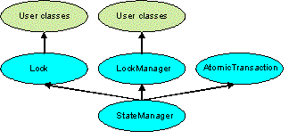
Figure 1 - ArjunaCore class hierarchy.
Apart from specifying the scopes of transactions, and setting appropriate locks within objects, the application programmer does not have any other responsibilities: ArjunaCore and Transactional Objects for Java (TXOJ) guarantee that transactional objects will be registered with, and be driven by, the appropriate transactions, and crash recovery mechanisms are invoked automatically in the event of failures.
Making an object persistent and recoverable means that we shall be able to store its final state or to retrieve its initial state according to the final status of a transaction even in the presence of failures. ArjunaCore provides a set of techniques to save to and to retrieve from the Object Store states of objects. All objects made persistent with these ArjunaCore mechanisms are assigned unique identifiers (instances of the Uid class), when they are created, and this is to identify them within the object store. Due to common functionality for persistency and recovery required by several applications, objects are stored and retrieved from the object store using the same mechanism: the classes OutputObjectState and InputObjecState.
At the root of the class hierarchy, given in Figure 1, is the class StateManager. This class is responsible for object activation and deactivation and object recovery. The simplified signature of the class is:
public abstract class StateManager { public boolean activate (); public boolean deactivate (boolean commit); public Uid get_uid (); // object’s identifier. // methods to be provided by a derived class public boolean restore_state (InputObjectState os); public boolean save_state (OutputObjectState os); protected StateManager (); protected StateManager (Uid id); };
Objects are assumed to be of three possible flavours. They may simply be recoverable, in which case StateManager will attempt to generate and maintain appropriate recovery information for the object. Such objects have lifetimes that do not exceed the application program that creates them. Objects may be recoverable and persistent, in which case the lifetime of the object is assumed to be greater than that of the creating or accessing application, so that in addition to maintaining recovery information StateManager will attempt to automatically load (unload) any existing persistent state for the object by calling the activate (deactivate) operation at appropriate times. Finally, objects may possess none of these capabilities, in which case no recovery information is ever kept nor is object activation/deactivation ever automatically attempted.
According to the its activation or deactivation a transactional object for Java move from a passive state to an active state and vice-versa. The fundamental life cycle of a persistent object in TXOJ is shown in Figure 2.
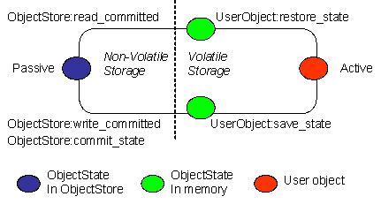
Figure 2 - The life cycle of a persistent object.
- The object is initially passive, and is stored in the object store as an instance of the class OutputObjectState.
- When required by an application the object is automatically activated by reading it from the store using a read_committed operation and is then converted from an InputObjectState instance into a fully-fledged object by the restore_state operation of the object.
- When the application has finished with the object it is deactivated by converting it back into an OutputObjectState instance using the save_state operation, and is then stored back into the object store as a shadow copy using write_uncommitted. This shadow copy can be committed, overwriting the previous version, using the commit_state operation. The existence of shadow copies is normally hidden from the programmer by the transaction system. Object de-activation normally only occurs when the top-level transaction within which the object was activated commits.
While deactivating and activating a transactional object for java, the operations save_state and restore_state are respectively invoked. These operations must be implemented by the programmer since StateManager cannot detect user level state changes. This gives the programmer the ability to decide which parts of an object’s state should be made persistent. For example, for a spreadsheet it may not be necessary to save all entries if some values can simply be recomputed. The save_state implementation for a class Example that has two integer member variables called A and B and one String member variable called C could simply be:
public boolean save_state(OutputObjectState o)
{
if (!super.save_state(o))
return false;
try
{
o.packInt(A);
o.packInt(B);
o.packString(C));
}
catch (Exception e)
{
return false;
}
return true;
}while, the corresponding restore_state implementation allowing to retrieve similar values is:
public boolean restore_state(InputObjectState o)
{
if (!super.restore_state(o))
return false;
try
{
A = o.unpackInt();
B = o.unpackInt();
S = o.unpackString());
}
catch (Exception e)
{
return false;
}
return true;
}
Classes OutputObjectState and InputObjectState provide respectively operations to pack and unpack instances of standard Java data types. In other words for a standard Java data type, for instance Long or Short, there are corresponding methods to pack and unpack, i.e., packLong or packShort and unpackLong or unpackShort.
Note: it is necessary for all save_state and restore_state methods to call super.save_state and super.restore_state. This is to cater for improvements in the crash recovery mechanisms.
The concurrency controller is implemented by the class LockManager which provides sensible default behaviour while allowing the programmer to override it if deemed necessary by the particular semantics of the class being programmed. The primary programmer interface to the concurrency controller is via the setlock operation. By default, the runtime system enforces strict two-phase locking following a multiple reader, single writer policy on a per object basis. However, as shown in Figure 1, by inheriting from the Lock class it is possible for programmers to provide their own lock implementations with different lock conflict rules to enable type specific concurrency control.
Lock acquisition is (of necessity) under programmer control, since just as StateManager cannot determine if an operation modifies an object, LockManager cannot determine if an operation requires a read or write lock. Lock release, however, is under control of the system and requires no further intervention by the programmer. This ensures that the two-phase property can be correctly maintained.
public abstract class LockManager extends StateManager
{
public LockResult setlock (Lock toSet, int retry, int timeout);
};The LockManager class is primarily responsible for managing requests to set a lock on an object or to release a lock as appropriate. However, since it is derived from StateManager, it can also control when some of the inherited facilities are invoked. For example, LockManager assumes that the setting of a write lock implies that the invoking operation must be about to modify the object. This may in turn cause recovery information to be saved if the object is recoverable. In a similar fashion, successful lock acquisition causes activate to be invoked.
The code below shows how we may try to obtain a write lock on an object:
public class Example extends LockManager
{
public boolean foobar ()
{
AtomicAction A = new AtomicAction;
/*
* The ArjunaCore AtomicAction class is here used to create
* a transaction. Any interface provided by the JTA or
* JTS interfaces that allow to create transactions can
* be used in association with the Locking mechanisms
* described in this trail.
*/
boolean result = false;
A.begin();
if (setlock(new Lock(LockMode.WRITE), 0) == Lock.GRANTED)
{
/*
* Do some work, and TXOJ will
* guarantee ACID properties.
*/
// automatically aborts if fails
if (A.commit() == AtomicAction.COMMITTED)
{
result = true;
}
}
else
A.rollback();
return result;
}
}
More details on Transactional Object For Java can be found in the ArjunaCore Programming Guide.
The banking application consists of a Bank object that contains a list of Account object, which in turn have a String (name) and a float (the value) as member variables. It appears clearly that from the persistent point of view, an Account Object need to store its name and its current balance or value, while the Bank Object need to store the list of accounts that it manages.
The banking application with Transactional Object for Java (TXOJ) is configured to use JTS interfaces as the API to create the transaction, then an ORB to deploy it. The distribution is provided to work with the bundled JacORB version
Note : Ensure that the jacorb jar files are added in your CLASSPATH
- Start the Server
java com.arjuna.demo.jts.txojbank.BankServer
- In a separate window, start the client
java com.arjuna.demo.jts.txojbank.BankClient
As for the demonstrations presented in the previous trails, the same menu is presented for the client with a set of operations such creating an account, credit/withdraw money to/from an account and making a transfer.
Building the banking application with TXOJ tools
Since a distributed version has been adopted to present the application with Transactional Object for Java, an IDL file named Bank.idl described below is needed. The difference with the Bank.idl presented in previous trails is the fact that the Bank interface inherits the CosTransactions::TransactionalObject interface. Since we consider now that a Bank object need to modify its list in a transactional, we consider now a Bank object as a CORBA transactional.
module arjuna {
module demo {
module jts {
module txojbank {
interface Account : CosTransactions::TransactionalObject
{
float balance();
void credit( in float value );
void debit( in float value );
};
exception NotExistingAccount
{ };
interface Bank : CosTransactions::TransactionalObject
{
Account create_account( in string name );
Account get_account( in string name )
raises( NotExistingAccount );
};
};
};
};
};-
The client program
Basically the client program (src/com/arjuna/demo/jts/txojbank/BankClient.java) is equivalent to the one described in the distributed jts version with implicit propagation, the difference is on the package name.
- Implementing the Account Interface
- Implementing the Bank Interface
- Implementing the Bank Server.
To take benefit from the persistency and locking mechanism provided by ArjunaCore, a user class can inherit from the appropriate class (StateManager for recovery, and LockManager for recovery and concurrency control). The AccountImpl class that implements the Account interface inherits the LockManager and implements the AccountOperations interface generated by the CORBA IDL compiler. Since multiple inheritance is not allowed in Java, inheriting the AccountPOA class, as made in simple jts remote version, in addition to the LockManager is not possible. That we use in this version a CORBA TIE mechanism to associate a servant to an CORBA object reference.
The Java interface definition of the AccountImpl class is given below:
public class AccountImpl extends LockManager implements AccountOperations
{
float _balance;
String _name;
public AccountImpl(String name );
public AccountImpl(Uid uid);
public void finalize ();
public float balance();
public void credit( float value );
public void debit( float value );
public boolean save_state (OutputObjectState os, int ObjectType);
public boolean restore_state (InputObjectState os, int ObjectType);
public String type();
}public void finalize ()
{
super.terminate();
}
public String type ()
{
return "/StateManager/LockManager/BankingAccounts";
}-
Constructors and Destructor
To use an existing persistent object requires the use of a special constructor that is required to take the Uid of the persistent object; the implementation of such a constructor is given below:
public AccountImpl(Uid uid) { super(uid); // Invoking super will lead to invoke the //restore_state method of this AccountImpl class }There is no particular behaviour applied by the Constructor with the Uid parameter The following constructor is used for a new Account creation.
public AccountImpl(String name ) { super(ObjectType.ANDPERSISTENT); _name = name; _balance = 0; }The destructor of the queue class is only required to call the terminate operation of LockManager.
-
save_state, restore_state and type
The implementations of save_state and restore_state are relatively simple for this example:
public boolean save_state (OutputObjectState os, int ObjectType) { if (!super.save_state(os, ObjectType)) return false; try { os.packString(_name); os.packFloat(_balance); return true; } catch (Exception e) { return false; } }public boolean restore_state (InputObjectState os, int ObjectType) { if (!super.restore_state(os, ObjectType)) return false; try { _name = os.unpackString(); _balance = os.unpackFloat(); return true; } catch (Exception e) { return false; } }Because the AccountImpl class is derived from the LockManager class, the operation type should be:
-
account management operations
public float balance() { float result = 0; if (setlock(new Lock(LockMode.READ), 0) == LockResult.GRANTED) { result = _balance; } ... return result; }Since the balance operation consists only to get the current balance, acquiring a lock in READ mode is enough. This is not the case of the credit and debit methods that need to modify the current balance, that is a WRITE mode is needed.
public void credit( float value ) { if (setlock(new Lock(LockMode.WRITE), 0) == LockResult.GRANTED) { _balance += value; } ... } public void debit( float value ) { if (setlock(new Lock(LockMode.WRITE), 0) == LockResult.GRANTED) { _balance -= value; } ... }
Full source code for the src/com/arjuna/demo/jts/txojbank/AccountImpl.java">AccountImpl class is included to provide you with a starting point for experimentation.
To take benefit from the persistency and locking mechanism provided by ArjunaCore, a user class can inherit from the appropriate class (StateManager for recovery, and LockManager for recovery and concurrency control). The BankImpl class that implements the Bank interface inherits the LockManager and implements the BankOperations interface generated by the CORBA IDL compiler. Since multiple inheritance is not allowed in Java, inheriting the BankPOA class, as made in simple jts remote version, in addition to the LockManager is not possible. That we use in this version a CORBA TIE mechanism to associate a servant to an CORBA object reference.
The Java interface definition of the BankImpl class is given below:
public class BankImpl extends LockManager implements BankOperations
{
public BankImpl(OA oa);
public BankImpl(Uid uid, OA oa);
public BankImpl(Uid uid);
public Account create_account( String name );
public Account get_account( String name );
public boolean save_state (OutputObjectState os, int ObjectType);
public boolean restore_state (InputObjectState os, int ObjectType);
public String type();
public static final int ACCOUNT_SIZE = 10;
// ACCOUNT_SIZE is the maximum number of accounts
private String [] accounts;
private int numberOfAccounts;
private ORB _orb;
private OA _oa;
private java.util.Hashtable _accounts; //The list of accounts
}-
Constructors and Destructor
To use an existing persistent object requires the use of a special constructor that is required to take the Uid of the persistent object; the implementation of such a constructor is given below:
public BankImpl(Uid uid) { super(uid); _accounts = new java.util.Hashtable(); numberOfAccounts = 0; accounts = new String[ACCOUNT_SIZE]; }The following constructor is invoked during the first creation of the Bank Object.
public BankImpl(OA oa) { super(ObjectType.ANDPERSISTENT); _accounts = new java.util.Hashtable(); _oa = oa; numberOfAccounts = 0; accounts = new String[ACCOUNT_SIZE]; }The following constructor is invoked on successive BankServer restart. A bank already exists and should be recreated. Invoking super or the constructor of the inherited class leads to execute the restore_state method, described below, of the BankImpl class to rebuild the list of accounts previously created, if any.
public BankImpl(Uid uid, OA oa) { super(uid); _accounts = new java.util.Hashtable(); _oa = oa; numberOfAccounts = 0; accounts = new String[ACCOUNT_SIZE]; }The destructor of the queue class is only required to call the terminate operation of LockManager.
public void finalize () { super.terminate(); }
-
account management operations
public Account create_account( String name ) { AccountImpl acc; AccountPOA account = null; //Attempt to obtain the lock for change if (setlock(new Lock(LockMode.WRITE), 0) == LockResult.GRANTED) { //Check if the maximum number of accounts is not reached if (numberOfAccounts < ACCOUNT_SIZE) { acc = new AccountImpl(name); //Create a new account //Use the TIE mechanism to create a CORBA object account = new AccountPOATie(acc); //Add the account to the list of accounts that //facilitate to retrieve accounts _accounts.put( name, acc); //The Uid of the created account is put in the array accounts[numberOfAccounts] = acc.get_uid().toString(); numberOfAccounts++; } } return com.arjuna.demo.jts.txojbank. AccountHelper.narrow(_oa.corbaReference(account)); } public Account get_account(String name) throws NotExistingAccount { // Only the hashtable list is used to retrieve the account AccountImpl acc = ( AccountImpl ) _accounts.get( name ); AccountPOA account = new AccountPOATie(acc); if ( acc == null ) throw new NotExistingAccount("The Account requested does not exist"); return com.arjuna.demo.jts.txojbank. AccountHelper.narrow(_oa.corbaReference(account)); }
-
save_state, restore_state and type
public boolean save_state (OutputObjectState os, int ObjectType) { if (!super.save_state(os, ObjectType)) return false; try { os.packInt(numberOfAccounts); if (numberOfAccounts > 0) { // All Uid located in the array will be saved for (int i = 0; i < numberOfAccounts; i++) os.packString(accounts[i]); } return true; } catch (Exception e) { return false; } }public boolean restore_state (InputObjectState os, int ObjectType) { if (!super.restore_state(os, ObjectType)) { return false; } try { numberOfAccounts = os.unpackInt(); if (numberOfAccounts > 0) { for (int i = 0; i < numberOfAccounts; i++) { accounts[i] = os.unpackString(); //each stored Uid is re-used to recreate //a stored account object AccountImpl acc = new AccountImpl(new Uid(accounts[i])); acc.activate(); //Once recreated the account object //is activated and added to the list. _accounts.put( acc.getName(), acc); } } return true; } catch (Exception e) { return false; } }public String type () { return "/StateManager/LockManager/BankServer"; }
Full source code for the src/com/arjuna/demo/jts/txojbank/BankImpl.java">BankImpl class is included to provide you with a starting point for experimentation.
The role of the BankServer class is mainly to initialise the ORB and the Object Adapter and to create the default Bank object responsible to create banking accounts.
Globally the BankServer has the following structure.
... myORB = ORB.getInstance("ServerSide"); myOA = OA.getRootOA(myORB); myORB.initORB(args, null); myOA.initOA(); ...
-
Initialise the ORB
This done using the ORB Portability API
-
Create the BankImpl object, an instance that implements the Bank interface.
Two ways are provided to build such Bank object according to the fact it's
the first time we create such object or not. This depends on the existence
or not of the file named "
... java.io.FileInputStream file = new java.io.FileInputStream("UidBankFile"); java.io.InputStreamReader input = new java.io.InputStreamReader(file); java.io.BufferedReader reader = new java.io.BufferedReader(input); String stringUid = reader.readLine(); file.close(); _bank = new BankImpl(new Uid(stringUid), myOA); boolean result =_bank.activate(); ...- If the file does not exist, a new BankImpl object is created, then the Uid of the created object is stored in the file named "UidBankFile"
... _bank = new BankImpl(myOA); java.io.FileOutputStream file = new java.io.FileOutputStream("UidBankFile"); java.io.PrintStream pfile=new java.io.PrintStream(file); pfile.println(_bank.get_uid().toString()); file.close(); ... - Store the CORBA object reference of the BankImpl object in a file in such way the client can retrieve it from that file.
JTS supports the construction of both local and distributed transactional applications which access databases using the JDBC APIs. JDBC supports two-phase commit of transactions, and is similar to the XA X/Open standard. The JDBC support is found in the com.arjuna.ats.jdbc package.
The JTS approach to incorporating JDBC connections within transactions is to provide transactional JDBC drivers through which all interactions occur. These drivers intercept all invocations and ensure that they are registered with, and driven by, appropriate transactions. There is a single type of transactional driver through which any JDBC driver can be driven; obviously if the database is not transactional then ACID properties cannot be guaranteed. This driver is com.arjuna.ats.jdbc.TransactionalDriver, which implements the java.sql.Driver interface.
The driver may be directly instantiated and used within an application. For example:
TransactionalDriver arjunaJDBC2Driver = new TransactionalDriver(); It can be registered with the JDBC driver manager (java.sql.DriverManager) by adding them to the Java system properties. The jdbc.drivers property contains a list of driver class names, separated by colons, that are loaded by the JDBC driver manager when it is initialised, for instance:
jdbc.drivers=foo.bar.Driver:mydata.sql.Driver:bar.test.myDriverOn running an application, it is the DriverManager's responsibility to load all the drivers found in the system property jdbc.drivers. For example, this is where the driver for the Oracle database may be defined. When opening a connection to a database it is the DriverManager' s role to choose the most appropriate driver from the previously loaded drivers.
A program can also explicitly load JDBC drivers at any time. For example, the my.sql.Driver is loaded with the following statement:
Class.forName("my.sql.Driver"); Calling Class.forName() will automatically register the driver with the JDBC driver manager. It is also possible to explicitly create an instance of the JDBC driver using the registerDriver method of the DriverManager. This is the case for instance for the TransactionalDriver that can be registered as follow:
TransactionalDriver arjunaJDBC2Driver = new TransactionalDriver();
DriverManager.registerDriver(arjunaJDBC2Driver);When you have loaded a driver, it is available for making a connection with a DBMS.
Once a driver is loaded and ready for a connection to be made, instances of a Connection class can be created using the getConnection method on the DriverManager, as follow:
Connection con = DriverManager.getConnection(url, username, password);From its version 2.0, the JDBC API has introduced a new way to obtain instances of the Connection class. This is the case of the interfaces DataSource and XADataSource that creates transactional connections. When using a JDBC 2.0 driver, will use the appropriate DataSource whenever a connection to the database is made. It will then obtain XAResources and register them with the transaction via the JTA interfaces. It is these XAResources which the transaction service will use when the transaction terminates in order to drive the database to either commit or rollback the changes made via the JDBC connection.
There are two ways in which the JDBC 2.0 support can obtain XADataSources. These will be explained in the following sections. Note, for simplicity we shall assume that the JDBC 2.0 driver is instantiated directly by the application.
-
Java Naming and Directory Interface (JNDI)
To get the ArjunaJDBC2Driver class to use a JNDI registered XADataSource it is first necessary to create the XADataSource instance and store it in an appropriate JNDI implementation. Details of how to do this can be found in the JDBC 2.0 tutorial available at JavaSoft. An example is show below:
XADataSource ds = MyXADataSource(); Hashtable env = new Hashtable(); String initialCtx = PropertyManager. getProperty("Context.INITIAL_CONTEXT_FACTORY"); env.put(Context.INITIAL_CONTEXT_FACTORY, initialCtx); initialContext ctx = new InitialContext(env); ctx.bind("jdbc/foo", ds);Where the Context.INITIAL_CONTEXT_FACTORY property is the JNDI way of specifying the type of JNDI implementation to use.
Then the application must pass an appropriate connection URL to the JDBC 2.0 driver:
Properties dbProps = new Properties(); dbProps.setProperty(TransactionalDriver.userName, "user"); dbProps.setProperty(TransactionalDriver.password, "password"); TransactionalDriver arjunaJDBC2Driver = new TransactionalDriver(); Connection connection = arjunaJDBC2Driver. connect("jdbc:arjuna:jdbc/foo", dbProps);The JNDI URL must be pre-pended with jdbc:arjuna: in order for the ArjunaJDBC2Driver to recognise that the DataSource must participate within transactions and be driven accordingly.
-
Dynamic class instantiation
Many JDBC implementations provide proprietary implementations of XADataSources that provide non-standard extensions to the specification. In order to allow the application to remain isolated from the actual JDBC 2.0 implementation it is using and yet continue to be able to use these extensions, hides the details of these proprietary implementations using dynamic class instantiation. In addition, the use of JNDI is not required when using this mechanism because the actual implementation of the XADataSource will be directly instantiated, albeit in a manner which will not tie an application or driver to a specific implementation. therefore has several classes which are for specific JDBC implementations, and these can be selected at runtime by the application setting the dynamicClass property appropriately:
Database Type Property Name Cloudscape 3.6 com.arjuna.ats.internal.jdbc.drivers.cloudscape_3_6 Sequelink 5.1 com.arjuna.ats.internal.jdbc.drivers.sequelink_5_1 Oracle 8.1.6 com.arjuna.ats.internal.jdbc.drivers.oracle_8_1_6 SQL Server 2000 com.arjuna.ats.internal.jdbc.drivers.sqlserver_2_2
The application code must specify which dynamic class the TransactionalDriver should instantiate when setting up the connection:
Properties dbProps = new Properties();
dbProps.setProperty(TransactionalDriver.userName, "user");
dbProps.setProperty(TransactionalDriver.password, "password");
dbProps.setProperty(TransactionalDriver.dynamicClass,
"com.arjuna.ats.internal.jdbc.drivers.sequelink_5_0");
TransactionalDriver arjunaJDBC2Driver = new TransactionalDriver();
Connection connection = arjunaJDBC2Driver.connect("jdbc:arjuna:
sequelink://host:port;databaseName=foo",dbProperties);
Note on properties used by the com.arjuna.ats.jdbc.TransactionalDriver class
- userName : the user name to use when attempting to connect to the database.
- password : the password to use when attempting to connect to the database.
- createDb : if set to true, the driver will attempt to create the database when it connects. This may not be supported by all JDBC 2.0 implementations.
- dynamicClass : this specifies a class to instantiate to connect to the database, rather than using JNDI.
Once the connection has been established (for example, using the java.sql.DriverManager.getConnection method), all operations on the connection will be monitored by . Once created, the driver and any connection can be used in the same way as any other JDBC driver or connection.
connections can be used within multiple different transactions simultaneously, i.e., different threads, with different notions of the current transaction, may use the same JDBC connection. does connection pooling for each transaction within the JDBC connection. So, although multiple threads may use the same instance of the JDBC connection, internally this may be using a different connection instance per transaction. With the exception of close, all operations performed on the connection at the application level will only be performed on this transaction-specific connection.
will automatically register the JDBC driver connection with the transaction via an appropriate resource . When the transaction terminates, this resource will be responsible for either committing or rolling back any changes made to the underlying database via appropriate calls on the JDBC driver.
More details on the way to manage applications using the JDBC API can be found in the Programming Guide.
In regards to the its structure in the previous trails, the banking application described here has been slightly simplified. In this version creating local JTA transactions, accounts managed by a bank object are in fact instances or tuples within a SQL relational table named "accounts". When the Bank object is requested for instance to create an account or to get information on an account, the Bank object performs SQL statement such SQL INSERT or SQL SELECT.
Executing the demonstration consists to launch the folowing program
java com.arjuna.demo.jta.jdbcbank.BankClient -host <hostName>
-port portNumber -username <userName> -dbName <DBName>
-password <password> -clean|-create- hostName - the name of the machine where is located the database
- userName - the user name used to access the database
- password - the password used to access to database
- DBName - the database name
- clean - the existing relational table will be deleted then created
- create - a new relational table will be created
Note Due to an issue with Oracle, it is possible that an XA exception is thrown when attempting to perform this test (see Release Notes). If an xa error is returned you can use the following property property com.arjuna.ats.jdbc.isolationLevel set to TRANSACTION_READ_COMMITTED .
This property can be added in previous command as follow:
java -Dcom.arjuna.ats.jdbc.isolationLevel=TRANSACTION_READ_COMMITTED
com.arjuna.demo.jta.jdbcbank.BankClient -host <hostName>
-port portNumber -userName <userName>
-password <password> -clean|-createThe following Banking application illustrates some methods that use the JDBC API. In this application, the way to create a jdbc connection is made via an XADataSource obtained with JNDI operations, es explained in the previous trail jdbc introduction The BankClient class instantiates an XADataSource and bind it to a jndi naming in order to be retrieved to create transactional connections. This portion of code illustrates how this made against oracle (tested on version 9i). A similar code could tested against an other database by providng the appropriate XADataSource implementation. Details of the BankClient class can be found in the file src/com/arjuna/demo/jta/jdbcbank/BankClient.java
package com.arjuna.demo.jta.jdbcbank;
import javax.naming.*;
import java.util.Hashtable;
import oracle.jdbc.xa.client.OracleXADataSource;
import com.arjuna.ats.jdbc.common.jdbcPropertyManager;
public class BankClient
{
.....
public static void main(String[] args)
{
//Provide the apporopriate information to access the database
for (int i = 0; i < args.length; i++)
{
if (args[i].compareTo("-host") == 0)
host = args[i + 1]
if (args[i].compareTo("-port") == 0)
port = args[i + 1];
if (args[i].compareTo("-username") == 0)
user = args[i + 1];
if (args[i].compareTo("-password") == 0)
password = args[i + 1];
if (args[i].compareTo("-dbName") == 0)
dbName = args[i + 1];
....
}
try
{
// create DataSource
OracleXADataSource ds = new OracleXADataSource();
ds.setURL("jdbc:oracle:thin:@"+host+":"+port+":"+dbName);
// now stick it into JNDI
Hashtable env = new Hashtable();
env.put (Context.INITIAL_CONTEXT_FACTORY,
"com.sun.jndi.fscontext.RefFSContextFactory");
env.put (Context.PROVIDER_URL, "file:/tmp/JNDI");
InitialContext ctx = new InitialContext(env);
ctx.rebind("jdbc/DB", ds);
}
catch (Exception ex)
{ }
//Set the jndi information to be user by the Arjuna JDBC Property Manager
jdbcPropertyManager.propertyManager.setProperty("Context.INITIAL_CONTEXT_FACTORY",
"com.sun.jndi.fscontext.RefFSContextFactory");
jdbcPropertyManager.propertyManager.setProperty("Context.PROVIDER_URL",
"file:/tmp/JNDI");
Bank bank = new Bank();
BankClient client = new BankClient(bank);
}
While the BankClient class is responsible to obtain information to access the database, tocreate the XADataSource and bind it to jndi, and also to get order from a user (create_account, debit, transfer, ..), the Bank class is resposnible to create jdbc connections to perform user's requests. The Bank class is illustarted below where. All methods are not illusrated here but have a similar behavior; they could be found in details in the src/com/arjuna/demo/jta/jdbcbank/Bank.java">Bank.java program. Note that for simplicity, much error checking code has been removed.
public Bank()
{
try
{
DriverManager.registerDriver(new TransactionalDriver());
dbProperties = new Properties();
dbProperties.put(TransactionalDriver.userName, user);
dbProperties.put(TransactionalDriver.password, password);
arjunaJDBC2Driver = new TransactionalDriver(); //
create_table();
}
catch (Exception e)
{
e.printStackTrace();
System.exit(0);
}
_accounts = new java.util.Hashtable();
reuseConnection = true;
}
public void create_account( String _name, float _value )
{
try
{
Connection conne = arjunaJDBC2Driver.connect("jdbc:arjuna:jdbc/DB", dbProperties);
Statement stmtx = conne.createStatement(); // tx statement
stmtx.executeUpdate
("INSERT INTO accounts (name, value)
VALUES ('"+_name+"',"+_value+")");
}
catch (SQLException e)
{
e.printStackTrace();
}
}
public float get_balance(String _name)
throws NotExistingAccount
{
float theBalance = 0;
try
{
Connection conne = arjunaJDBC2Driver.connect("jdbc:arjuna:jdbc/DB", dbProperties);
Statement stmtx = conne.createStatement(); // tx statement
ResultSet rs = stmtx.executeQuery
("SELECT value from accounts
WHERE name = '"+_name+"'");
while (rs.next()) {
theBalance = rs.getFloat("value");
}
}
catch (SQLException e)
{
e.printStackTrace();
throw new NotExistingAccount("The Account requested does not exist");
}
return theBalance;
}
...
}
Recovery is the mechanism which preserves the transaction atomicity in presence of failures. The basic technique for implementing transactions in presence of failures is based on the use of logs. That is, a transaction system has to record enough information to ensure that it can be able to return to a previous state in case of failure or to ensure that changes committed by a transaction are properly stored.
ensures that results of a transaction are applied consistently to all resources involved in a transaction, even in the presence of failure. To recover from failure, relies on its Recovery Manager.
Basically, the Recovery Manager is a daemon process that invokes a set of well known Recovery Modules periodically in two steps; a first to determine transactions in doubt state and a second step to continue the completion of those transactions found in the first step. Since different type of resources may be involved in a transaction, different type of Recovery Modules may exist. provides several type of modules that manage resources according to their position in the transaction tree (root, subordinate, leaf) or the nature of the data itself, transactional object for java or XAResource as seen in the previous trail.
Whatever the nature of the involved resource, recovery is based on information or logs held in the Object Store, which contains specific subdirectory holding information according to the nature of the participant.
This section provides only brief information on running the recovery manager from provided scripts. For complete information on the recovery manager (including how to configure it), see the recovery information.
To run the Recovery Manager as a Windows service, simply:
- Open a command prompt
- cd to the directory <jbossts_install_root>\services\bin\windows
- Type InstallRecoveryManagerService-NT.bat
Note: This directory also contains the uninstall script which is ran in the same manner.
To launch the Recovery Manager as a Windows process, simply:
- Open a command prompt
- cd to the directory <jbossts_install_root>\services\bin\windows
- Type recoverymanagerservice.bat
The recovery manager provides support for recovering XAResources whether or not they are Serializable. XAResources that do implement the Serializable interface are handled without requiring additional programmer defined classes. For those XAResources that need to recover but which cannot implement Serializable, it is possible to provide a small class which is used to help recover them.
This example shows the recovery manager recovering a Serializable XAResource and a non-Serializable XAResource.
- The code of the main class that controls the application (src/com/arjuna/demo/recovery/xaresource/TestXAResourceRecovery.java">TestRecoveryModule.java), allows the user to specify a number of options: [-waitForRecovery] [-useExternalRecoveryManager]
- Programmer-defined support of the Serializable XAResource is only required in the XAResource implementation class src/com/arjuna/demo/recovery/xaresource/ExampleXAResource.java">ExampleXAResource.java
- Programmer-defined support of the non-Serializable XAResource is required both in the XAResource implementation class src/com/arjuna/demo/recovery/xaresource/NonSerializableExampleXAResource.java">NonSerializableExampleXAResource, and in a class that implements a helper for the recovery process src/com/arjuna/demo/recovery/xaresource/NonSerializableExampleXAResourceRecovery.java">NonSerializableExampleXAResourceRecovery.java
When recovering from failures, requires the ability to reconnect to the resource managers that were in use prior to the failures in order to resolve any outstanding transactions. In order to recreate those connections for non-Serializable XAResources it is necessary to provide implementations of the following interface com.arjuna.ats.jta.recovery.XAResourceRecovery.
To inform the recovery system about each of the XAResourceRecovery instances, it is necessary to specify their class names through property variables in the jbossts-properties.xml file. Any property variable which starts with the name XAResourceRecovery will be assumed to represent one of these instances, and its value should be the class name.
When running XA transaction recovery it is necessary to tell which types of Xid it can recover. Each Xid that creates has a unique node identifier encoded within it and will only recover transactions and states that match a specified node identifier. The node identifier to use should be provided to via a property that starts with the name com.arjuna.ats.jta.xaRecoveryNode (multiple values may be provided). A value of * will force to recover (and possibly rollback) all transactions irrespective of their node identifier and should be used with caution.
The recovery module for the non-Serializable XAResource must be deployed in order to provide support to recover the non-Serializable XAResource. If this step was missed out the Serializable XAResource would recover OK but would have no knowledge of the non-Serializable XAResource and so it could not recover it. To register the non-Serializable XAResource XAResourceRecovery module, add an entry to the jbossts-properties.xml.
Under the element <properties depends="jts" name="jta">, add:
<property name="com.arjuna.ats.jta.recovery.XAResourceRecovery1" value= "com.arjuna.demo.recovery.xaresource.NonSerializableExampleXAResourceRecovery"/> <property name="com.arjuna.ats.jta.xaRecoveryNode" value="*"/>
By default, the recovery manager is configured to perform a pass over resources to be recovered every two minutes. It will then wait for ten seconds before re-checking the resources. Although the test will run OK with this configuration, it is possible to configure the recovery manager scan times to reduce the time waiting. To configure the intervals, edit the jbossts-properties.xml as follows:
- Edit the property "com.arjuna.ats.arjuna.recovery.periodicRecoveryPeriod" to change the value from 120 to 5.
- Edit the property "com.arjuna.ats.arjuna.recovery.recoveryBackoffPeriod" to change the value from 10 to 5.
The recovery manager will work in the same manner for either the JTA or JTS implementation. By default is configured to use a JTS transaction manager, in order to configure it to use a JTA transaction manager a change must again be made to the jbossts-properties.xml. See "Testing JTA" for more information on how to configure the transaction manager to use JTA rather than JTS.
If you do change the transaction manager type remember to reconfigure the recovery manager as follows:
If you are using the ArjunaCore (raw JTA) transaction manager implementation comment out the element in jbossts-properties.xml containing the following text:
internal.jta.recovery.jts.XARecoveryModule
If you are using the JTS transaction manager implementation comment out the element in jbossts-properties.xml containing the following text:
internal.jta.recovery.arjunacore.XARecoveryModule
To launch the Test Recovery Module, execute the following java program
- Open a command prompt
- cd to the directory <jbossts_install_root>\trail_map
- Type java com.arjuna.demo.recovery.xaresource.TestXAResourceRecovery
- View the output noting the crash during commit.
- Inspect the current working directory to note that the applications have created several log files which you may like to review.
- Type java com.arjuna.demo.recovery.xaresource.TestXAResourceRecovery -waitForRecovery
- Wait for the two resources to be recovered and committed.
- Re-review the log files from the working directory, if wanted.
Note: As you can see, the Serializable XAResource does not need it's recover() method called as the transaction manager is aware of all the information about this resource.
WARNING: Implementing a RecoveryModule and AbstractRecord is a very advanced feature of the transaction service. It should only be performed by users familiar with the all the concepts used in the product. Please see the ArjunaCore guide for more information about RecoveryModules and AbstractRecords.
The following sample gives an overview how the Recovery Manager invokes a module to recover from failure. This basic sample does not aim to present a complete process to recover from failure, but mainly to illustrate the way to implement a recovery module. More details can be found in "Failure Recovery Guide".
The application used here consists to create an atomic transaction, to register a participant within the created transaction and finally to terminate it either by commit or abort. A set of arguments are provided:- to decide committing or aborting the transaction,
- to decide generating a crash during the commitment process.
- The code of the main class that control the application (src/com/arjuna/demo/recoverymodule/TestRecoveryModule.java">TestRecoveryModule.java), which consists to give the choice to either commit or abort the transaction and also to generate a crash.
- The
registered participant
(src/com/arjuna/demo/recoverymodule/SimpleRecord.java">SimpleRecord.java) has the
following behaviour:
- During the prepare phase, it writes a simple message - "I'm prepared" - on the disk such The message is written in a well known file - During the commit phase, it writes another message - "I'm committed" - in the same file used during prepare - If it receives an abort message, it removes from the disk the file used for prepare if any. - if a crash has been decided for the test, then it crashes during the commit phase - the file remains with the message "I'm prepared". - A Recovery Module (src/com/arjuna/demo/recoverymodule/SimpleRecoveryModule.java">SimpleRecoveryModule.java) that consists to read the content of the file used to store the status of the participant, to determine that status and print a message indicating if a recovery action is needed or not.
<property name="com.arjuna.ats.arjuna.recovery.recoveryExtension<i>" value="com.arjuna.demo.recoverymodule.SimpleRecoveryModule"/>
java com.arjuna.ats.arjuna.recovery.RecoveryManager -test
The failure recovery subsystem of
ensure that results of a transaction are applied
consistently to all
resources affected by the transaction, even if any of the application
processes or the hardware hosting them crash
or lose network connectivity. In the case of
hardware crashes or network failures, the recovery does not take place
until the system or
network are restored, but the original application does not need to be restarted. Recovery is
handled by the Recovery Manager process. For recover to take place, information about the
transaction and the
resources involved needs to survive the failure and be accessible afterward.
This information is held in the
ActionStore
, which is part of the
ObjectStore
. If the
ObjectStore
is destroyed or modified, recovery may not be possible.
Until the recovery procedures are complete, resources affected by a transaction which was in progress at the time of the failure may be inaccessible. Database resources may report this as as tables or rows held by in-doubt transactions . For TXOJ resources, an attempt to activate the Transactional Object, such as when trying to get a lock, fails.
Although some ORB-specific configuration is necessary to configure the ORB sub-system, the
basic settings are ORB-independent.
The configuration which applies to
is in the
RecoveryManager-properties.xml
file and
the
orportability-properties.xml
file. Contents of each file are below.
Example 3.27. RecoverManager-properties.xml
<entry key="RecoveryEnvironmentBean.recoveryActivatorClassNames">
com.arjuna.ats.internal.jts.orbspecific.recovery.RecoveryEnablement
</entry>
Example 3.28. orportability-properties.xml
<entry key="com.arjuna.orbportability.orb.PostInit2">com.arjuna.ats.internal.jts.recovery.RecoveryInit</entry>
These entries cause instances of the named classes to be loaded. The named classes then load
the ORB-specific
classes needed and perform other initialization. This enables failure recovery
for transactions initiated by or
involving applications using this property file. The default
RecoveryManager-properties.xml
file and
orportability-properties.xml
with the distribution include these entries.
Important
Failure recovery is NOT supported with the JavaIDL ORB that is part of JDK. Failure recovery is supported for JacOrb only.
To disable recovery, remove or comment out the
RecoveryEnablement
line in the property file.
Recovery of XA resources accessed via JDBC is handled by the
XARecoveryModule
. This
module includes both
transaction-initiated
and
resource-initiated
recovery.
-
Transaction-initiated recovery is possible where the particular transaction branch progressed far enough for a
JTA_ResourceRecordto be written in the ObjectStore. The record contains the information needed to link the transaction to information known by the rest of in the database. -
Resource-initiated recovery is necessary for branches where a failure occurred after the database made a persistent record of the transaction, but before the
JTA_ResourceRecordwas written. Resource-initiated recovery is also necessary for datasources for which it is impossible to hold information in theJTA_ResourceRecordthat allows the recreation in the RecoveryManager of theXAConnectionorXAResourceused in the original application.
Transaction-initiated recovery is automatic. The
XARecoveryModule
finds the
JTA_ResourceRecord
which needs recovery, using the two-pass mechanism described
above. It then uses the normal
recovery mechanisms to find the status of the transaction the resource was
involved in, by
running
replay_completion
on the
RecoveryCoordinator
for the transaction branch. Next, it creates or recreates the
appropriate
XAResource
and issues
commit
or
rollback
on it as appropriate. The
XAResource
creation uses the
same database name, username, password, and other information as the
application.
Resource-initiated recovery must be specifically configured, by supplying the
RecoveryManager
with the appropriate information for it to interrogate all the
XADataSources
accessed by any
application. The access to each
XADataSource
is handled by a class that implements the
com.arjuna.ats.jta.recovery.XAResourceRecovery
interface. Instances of this class
are dynamically loaded, as controlled by property
JTAEnvironmentBean.xaResourceRecoveryInstances
.
The
XARecoveryModule
uses the
XAResourceRecovery
implementation to
get an
XAResource
to the target datasource. On each invocation of
periodicWorkSecondPass
, the recovery module issues an
XAResource.recover
request. This request returns a list of the transaction identifiers
that are known to the
datasource and are in an in-doubt state. The list of these in-doubt Xids is compared
across
multiple passes, using
periodicWorkSecondPass-es
. Any Xid that appears in both
lists, and for which no
JTA_ResourceRecord
is found by the intervening
transaction-initiated recovery, is assumed to belong to a
transaction involved in a crash before any
JTA_Resource_Record
was written, and a
rollback
is issued for
that transaction on the
XAResource
.
This double-scan mechanism is used because it is possible the Xid was obtained from the datasource just as the original application process was about to create the corresponding JTA_ResourceRecord. The interval between the scans should allow time for the record to be written unless the application crashes (and if it does, rollback is the right answer).
An
XAResourceRecovery
implementation class can contain all the information needed to
perform recovery to a specific
datasource. Alternatively, a single class can handle multiple datasources which
have some
similar features. The constructor of the implementation class must have an empty parameter
list,
because it is loaded dynamically. The interface includes an
initialise
method, which
passes in further information as a
string
. The content of the string is taken from the property
value that provides the class name.
Everything after the first semi-colon is passed as the value of the
string. The
XAResourceRecovery
implementation class determines how to use the string.
An
XAResourceRecovery
implementation class,
com.arjuna.ats.internal.jdbc.recovery.BasicXARecovery
, supports resource-initiated recovery for any XADataSource. For this class, the string
received in method
initialise
is assumed to contain the number of connections to recover, and the name of the
properties
file containing the dynamic class name, the database username, the database password and the
database
connection URL. The following example is for an Oracle 8.1.6 database accessed via
the Sequelink 5.1 driver:
XAConnectionRecoveryEmpay=com.arjuna.ats.internal.jdbc.recovery.BasicXARecovery;2;OraRecoveryInfo
This implementation is only meant as an example, because it relies upon usernames and
passwords appearing in
plain text properties files. You can create your own implementations
of
XAConnectionRecovery
. See the javadocs and the example
com.arjuna.ats.internal.jdbc.recovery.BasicXARecovery
.
Example 3.29. XAConnectionRecovery implementation
/*
* Copyright (C) 2000, 2001,
*
* Hewlett-Packard,
* Arjuna Labs,
* Newcastle upon Tyne,
* Tyne and Wear,
* UK.
*
*/
package com.arjuna.ats.internal.jdbc.recovery;
import com.arjuna.ats.jdbc.TransactionalDriver;
import com.arjuna.ats.jdbc.common.jdbcPropertyManager;
import com.arjuna.ats.jdbc.logging.jdbcLogger;
import com.arjuna.ats.internal.jdbc.*;
import com.arjuna.ats.jta.recovery.XAConnectionRecovery;
import com.arjuna.ats.arjuna.common.*;
import com.arjuna.common.util.logging.*;
import java.sql.*;
import javax.sql.*;
import jakarta.transaction.*;
import javax.transaction.xa.*;
import java.util.*;
import java.lang.NumberFormatException;
/**
* This class implements the XAConnectionRecovery interface for XAResources.
* The parameter supplied in setParameters can contain arbitrary information
* necessary to initialise the class once created. In this instance it contains
* the name of the property file in which the db connection information is
* specified, as well as the number of connections that this file contains
* information on (separated by ;).
*
* IMPORTANT: this is only an *example* of the sorts of things an
* XAConnectionRecovery implementor could do. This implementation uses
* a property file which is assumed to contain sufficient information to
* recreate connections used during the normal run of an application so that
* we can perform recovery on them. It is not recommended that information such
* as user name and password appear in such a raw text format as it opens up
* a potential security hole.
*
* The db parameters specified in the property file are assumed to be
* in the format:
*
* DB_x_DatabaseURL=
* DB_x_DatabaseUser=
* DB_x_DatabasePassword=
* DB_x_DatabaseDynamicClass=
*
* DB_JNDI_x_DatabaseURL=
* DB_JNDI_x_DatabaseUser=
* DB_JNDI_x_DatabasePassword=
*
* where x is the number of the connection information.
*
* @since JTS 2.1.
*/
public class BasicXARecovery implements XAConnectionRecovery
{
/*
* Some XAConnectionRecovery implementations will do their startup work
* here, and then do little or nothing in setDetails. Since this one needs
* to know dynamic class name, the constructor does nothing.
*/
public BasicXARecovery () throws SQLException
{
numberOfConnections = 1;
connectionIndex = 0;
props = null;
}
/**
* The recovery module will have chopped off this class name already.
* The parameter should specify a property file from which the url,
* user name, password, etc. can be read.
*/
public boolean initialise (String parameter) throws SQLException
{
int breakPosition = parameter.indexOf(BREAKCHARACTER);
String fileName = parameter;
if (breakPosition != -1)
{
fileName = parameter.substring(0, breakPosition -1);
try
{
numberOfConnections = Integer.parseInt(parameter.substring(breakPosition +1));
}
catch (NumberFormatException e)
{
//Produce a Warning Message
return false;
}
}
PropertyManager.addPropertiesFile(fileName);
try
{
PropertyManager.loadProperties(true);
props = PropertyManager.getProperties();
}
catch (Exception e)
{
//Produce a Warning Message
return false;
}
return true;
}
public synchronized XAConnection getConnection () throws SQLException
{
JDBC2RecoveryConnection conn = null;
if (hasMoreConnections())
{
connectionIndex++;
conn = getStandardConnection();
if (conn == null)
conn = getJNDIConnection();
if (conn == null)
//Produce a Warning message
}
return conn;
}
public synchronized boolean hasMoreConnections ()
{
if (connectionIndex == numberOfConnections)
return false;
else
return true;
}
private final JDBC2RecoveryConnection getStandardConnection () throws SQLException
{
String number = new String(""+connectionIndex);
String url = new String(dbTag+number+urlTag);
String password = new String(dbTag+number+passwordTag);
String user = new String(dbTag+number+userTag);
String dynamicClass = new String(dbTag+number+dynamicClassTag);
Properties dbProperties = new Properties();
String theUser = props.getProperty(user);
String thePassword = props.getProperty(password);
if (theUser != null)
{
dbProperties.put(ArjunaJDBC2Driver.userName, theUser);
dbProperties.put(ArjunaJDBC2Driver.password, thePassword);
String dc = props.getProperty(dynamicClass);
if (dc != null)
dbProperties.put(ArjunaJDBC2Driver.dynamicClass, dc);
return new JDBC2RecoveryConnection(url, dbProperties);
}
else
return null;
}
private final JDBC2RecoveryConnection getJNDIConnection () throws SQLException
{
String number = new String(""+connectionIndex);
String url = new String(dbTag+jndiTag+number+urlTag);
String password = new String(dbTag+jndiTag+number+passwordTag);
String user = new String(dbTag+jndiTag+number+userTag);
Properties dbProperties = new Properties();
String theUser = props.getProperty(user);
String thePassword = props.getProperty(password);
if (theUser != null)
{
dbProperties.put(ArjunaJDBC2Driver.userName, theUser);
dbProperties.put(ArjunaJDBC2Driver.password, thePassword);
return new JDBC2RecoveryConnection(url, dbProperties);
}
else
return null;
}
private int numberOfConnections;
private int connectionIndex;
private Properties props;
private static final String dbTag = "DB_";
private static final String urlTag = "_DatabaseURL";
private static final String passwordTag = "_DatabasePassword";
private static final String userTag = "_DatabaseUser";
private static final String dynamicClassTag = "_DatabaseDynamicClass";
private static final String jndiTag = "JNDI_";
/*
* Example:
*
* DB2_DatabaseURL=jdbc\:arjuna\:sequelink\://qa02\:20001
* DB2_DatabaseUser=tester2
* DB2_DatabasePassword=tester
* DB2_DatabaseDynamicClass=
* com.arjuna.ats.internal.jdbc.drivers.sequelink_5_1
*
* DB_JNDI_DatabaseURL=jdbc\:arjuna\:jndi
* DB_JNDI_DatabaseUser=tester1
* DB_JNDI_DatabasePassword=tester
* DB_JNDI_DatabaseName=empay
* DB_JNDI_Host=qa02
* DB_JNDI_Port=20000
*/
private static final char BREAKCHARACTER = ';'; // delimiter for parameters
}
Multiple recovery domains and resource-initiated recovery
XAResource.recover
returns the list of all transactions that are in-doubt with in the
datasource. If multiple
recovery domains are used with a single datasource, resource-initiated recovery sees
transactions from other domains. Since it does not have a
JTA_ResourceRecord
available, it rolls back the transaction in the database, if the Xid appears in successive
recover calls. To
suppress resource-initiated recovery, do not supply an
XAConnectionRecovery
property, or
confine it to one recovery domain.
Property
OTS_ISSUE_RECOVERY_ROLLBACK
controls whether the
RecoveryManager
explicitly issues a rollback request when
replay_completion
asks for the status of a transaction that is unknown. According to
the
presume-abort
mechanism used by OTS and JTS, the transaction can be assumed to have
rolled back, and this
is the response that is returned to the
Resource
, including a
subordinate coordinator, in this case. The
Resource
should then apply that result to the
underlying resources. However, it is also legitimate for
the superior to issue a rollback, if
OTS_ISSUE_RECOVERY_ROLLBACK
is set to
YES
.
The OTS transaction identification mechanism makes it possible for a transaction coordinator
to hold a
Resource
reference that will never be usable. This can occur in two cases:
-
The process holding the
Resourcecrashes before receiving the commit or rollback request from the coordinator. -
The
Resourcereceives the commit or rollback, and responds. However, the message is lost or the coordinator process has crashed.
In the first case, the
RecoveryManager
for the
Resource
ObjectStore
eventually reconstructs a new
Resource
(with a
different CORBA object reference (IOR), and issues a
replay_completion
request
containing the new
Resource
IOR. The
RecoveryManager
for the
coordinator substitutes this in place of the original, useless one, and issues
commit
to the new reconstructed
Resource
. The
Resource
has to have been
in a commit state, or there would be no transaction intention list. Until
the
replay_completion
is received, the
RecoveryManager
tries to send
commit
to its
Resource
reference.–This will fail with a CORBA
System Exception. Which exception depends on the ORB
and other details.
In the second case, the
Resource
no longer exists. The
RecoveryManager
at the coordinator will never get through, and will receive System
Exceptions forever.
The
RecoveryManager
cannot distinguish these two cases by any protocol mechanism. There
is a perceptible cost in
repeatedly attempting to send the commit to an inaccessible
Resource
. In particular, the timeouts involved will extend the recovery iteration time,
and thus
potentially leave resources inaccessible for longer.
To avoid this, the
RecoveryManager
only attempts to send
commit
to a
Resource
a limited number of times. After that, it considers the transaction
assumed complete
. It retains the information about the transaction, by changing the object type
in the
ActionStore
, and if the
Resource
eventually does wake up
and a
replay_completion
request is received, the
RecoveryManager
activates the transaction and issues the commit request to the new Resource IOR. The number
of times the
RecoveryManager
attempts to issue
commit
as part of the periodic
recovery is controlled by the property variable
COMMITTED_TRANSACTION_RETRY_LIMIT
, and
defaults to
3
.
The operation of the recovery subsystem causes some entries to be made in the
ObjectStore
that are not removed in normal progress. The
RecoveryManager
has a facility for scanning
for these and removing items that are very old. Scans and
removals are performed by implementations of the
>com.arjuna.ats.arjuna.recovery.ExpiryScanner
. Implementations of this interface
are loaded by giving the class names as the value of the
property
RecoveryEnvironmentBean.expiryScannerClassNames
. The
RecoveryManager
calls the
scan
method on each loaded
ExpiryScanner
implementation at an
interval determined by the property
RecoveryEnvironmentBean.expiryScanInterval
. This value is
given in hours, and defaults to
12
. A property value of
0
disables any
expiry scanning. If the value as supplied is positive, the first scan is
performed when
RecoveryManager
starts. If the value is negative, the first scan is delayed until after
the first interval,
using the absolute value.
There are two kinds of item that are scanned for expiry:
| Contact items |
One contact item is created by every application process that uses .
They
contain the
information that the
|
| Assumed complete transactions |
The expiry time is counted from when the transactions were assumed to be complete.
A
|
Example 3.30. ExpiryScanner properties
<entry key="RecoveryEnvironmentBean.expiryScannerClassNames">
com.arjuna.ats.internal.arjuna.recovery.ExpiredTransactionStatusManagerScanner
com.arjuna.ats.internal.jts.recovery.contact.ExpiredContactScanner
com.arjuna.ats.internal.jts.recovery.transactions.ExpiredToplevelScanner
com.arjuna.ats.internal.jts.recovery.transactions.ExpiredServerScanner
</entry>
There are two
ExpiryScannner
s for the assumed complete transactions, because there are
different types in the
ActionStore.
A key part of the recovery subsystem is that the
RecoveryManager
hosts the OTS
RecoveryCoordinator
objects that handle recovery for transactions initiated in
application processes. Information
passes between the application process and the
RecoveryManager
in one of three ways:
-
RecoveryCoordinatorobject references (IORs) are created in the application process. They contain information identifying the transaction in the object key. They pass the object key to theResourceobjects, and theRecoveryManagerreceives it. -
The application process and the
RecoveryManageraccess the samejbossts-properties.xml, and therefore use the sameObjectStore. -
The
RecoveryCoordinatorinvokes CORBA directly in the application, using information in the contact items. Contact items are kept in theObjectStore.
Multiple recovery domains may useful if you are doing a migration, and separate
ObjectStores
are useful. However, multiple RecoveryManagers can cause problems with XA
datasources if
resource-initiated recovery is active on any of them.
When a transaction successfully commits, the transaction log is removed from the system. The
log is no longer
required, since all registered Resources have responded successfully to the
two-phase commit sequence. However, if
a
Resource
calls
replay_completion
on the
RecoveryCoordinator
after the transaction it represents commits, the status returned is
StatusRolledback
. The transaction system does not keep a record of committed transactions,
and assumes that in
the absence of a transaction log, the transaction must have rolled back. This is in line with
the
presumed abort protocol
used by the OTS.
This guide describes how to use the JTA interfaces for purely local transactions. This is a high-performance implementation, but you can only use it to execute transactions within the same process. If you need support for distributed transactions, the JTA needs to use the JTS. Another advantage of this approach is interoperability with other JTS-compliant transaction systems.
Note
If you use the JTS and JTA interfaces to manage the same transactions, the JTA needs to be configured to be aware of the JTS. Otherwise, local transactions will be unaware of their JTS counterparts.
You need to do this configuration manually, because some applications may be using in a purely local manner, or may need to differentiate between transactions managed by JTS and JTA.
Take care to use only the patched version of JacORB shipped with .
Correct functioning of the transaction
system, particularly with regard to crash recovery, is unlikely to work with an unpatched JacORB. For each
deployment of JacORB, ensure that the
jacorb.implname
in the
jacorb.properties
file is unique.
This part of the guide contains information on how to use the ORB Portability Layer. Although the CORBA specification is a standard, it is written in such a way that allows for a wide variety of implementations. Unless writing extremely simple applications, differences between ORB implementations tend to produce code which cannot easily be moved between ORBs. This is especially true for server-side code, which suffers from the widest variation between ORBs. There have also been a number of revisions of the Java language mapping for IDL and for CORBA itself. Many ORBs currently in use support different versions of CORBA and/or the Java language mapping.
The Narayana only supports the new Portable Object Adapter (POA) architecture described in the CORBA 2.3 specification as a replacement for the Basic Object Adapter (BOA). Unlike the BOA, which was weakly specified and led to a number of different (and often conflicting) implementations, the POA was deliberately designed to reduce the differences between ORB implementations, and thus minimize the amount of re-coding that would need to be done when porting applications from one ORB to another. However, there is still scope for slight differences between ORB implementations, notably in the area of threading. Note, instead of talking about the POA, this manual will consider the Object Adapter (OA).
Because the Narayana
must be able to run on a number of different ORBs, we have developed an ORB portability
interface which allows entire
applications to be moved
between ORBs with little or no
modifications. This portability interface is available to the application programmer in
the form
of several Java
classes. Note, the classes to be described in this document are located in the
com.arjuna.orbportability
package.
The
ORB
class shown below provides a uniform way of using the ORB. There are methods for obtaining a
reference to the ORB, and for placing the
application into a mode where it listens for incoming
connections. There are also methods for registering application specific classes to be
invoked
before or after ORB initialisation. Note, some of the methods are not supported on all ORBs,
and in this situation, a suitable exception
will be thrown. The ORB class is a factory class
which has no public constructor. To create an instance of an ORB you must call the getInstance
method passing a unique name as a parameter. If this unique name has not been passed in a
previous call to getInstance you will be returned a
new ORB instance. Two invocations of
getInstance made with the same unique name, within the same JVM, will return the same ORB
instance.
Example 3.31.
ORB.java
public class ORB {
public static ORB getInstance(String uniqueId);
public synchronized void initORB()
throws SystemException;
public synchronized void initORB(Applet a, Properties p)
throws SystemException;
public synchronized void initORB(String[] s,
Properties p) throws SystemException;
public synchronized org.omg.CORBA.ORB orb();
public synchronized boolean setOrb(
org.omg.CORBA.ORB theORB);
public synchronized void shutdown();
public synchronized boolean addAttribute(Attribute p);
public synchronized void addPreShutdown(PreShutdown c);
public synchronized void addPostShutdown(PostShutdown c);
public synchronized void destroy()
throws SystemException;
public void run();
public void run(String name);
}
We shall now describe the various methods of the ORB class.
-
initORB: given the various parameters, this method initialises the ORB and retains a reference to it within the ORB class. This method should be used in preference to the raw ORB interface since the requires a reference to the ORB. If this method is not used, setOrb must be called prior to using . -
orb: this method returns a reference to the ORB. After shutdown is called this reference may be null. -
shutdown: where supported, this method cleanly shuts down the ORB. Any pre- and post- ORB shutdown classes which have been registered will also be called. See the section titled ORB and OA Initialisation. This method must be called prior to application termination. It is the application programmer’s responsibility to ensure that no objects or threads continue to exist which require access to the ORB. It is ORB implementation dependant as to whether or not outstanding references to the ORB remain useable after this call. -
addAttribute: this method allows the application to register classes with which will be called either before, or after the ORB has been initialised. See the section titled ORB and OA Initialisation. If the ORB has already been initialised then the attribute object will not be added, and false will be returned. -
run: these methods place the ORB into a listening mode, where it waits for incoming invocations.
The OA classes shown below provide a uniform way of using Object Adapters (OA). There are methods for obtaining a reference to the OA. There are also methods for registering application specific classes to be invoked before or after OA initialisation. Note, some of the methods are not supported on all ORBs, and in this situation, a suitable exception will be thrown. The OA class is an abstract class and provides the basic interface to an Object Adapter. It has two sub-classes RootOA and ChildOA, these classes expose the interfaces specific to the root Object Adapter and a child Object Adapter respectively. From the RootOA you can obtain a reference to the RootOA for a given ORB by using the static method getRootOA. To create a ChildOA instance use the createPOA method on the RootOA.
Example 3.32.
OA.java
public abstract class OA {
public synchronized static RootOA getRootOA(
ORB associatedORB);
public synchronized void initPOA()
throws SystemException;
public synchronized void initPOA(String[] args)
throws SystemException;
public synchronized void initOA()
throws SystemException;
public synchronized void initOA(String[] args)
throws SystemException;
public synchronized ChildOA createPOA(
String adapterName, PolicyList policies)
throws AdapterAlreadyExists, InvalidPolicy;
public synchronized org.omg.PortableServer.POA rootPoa();
public synchronized boolean setPoa(
org.omg.PortableServer.POA thePOA);
public synchronized org.omg.PortableServer.POA poa(
String adapterName);
public synchronized boolean setPoa(String adapterName,
org.omg.PortableServer.POA thePOA);
public synchronized boolean addAttribute(OAAttribute p);
public synchronized void addPreShutdown(OAPreShutdown c);
public synchronized void addPostShutdown(
OAPostShutdown c);
}
public class RootOA extends OA {
public synchronized void destroy()
throws SystemException;
public org.omg.CORBA.Object corbaReference(Servant obj);
public boolean objectIsReady(Servant obj, byte[] id);
public boolean objectIsReady(Servant obj);
public boolean shutdownObject(org.omg.CORBA.Object obj);
public boolean shutdownObject(Servant obj);
}
public class ChildOA extends OA {
public synchronized boolean setRootPoa(POA thePOA);
public synchronized void destroy()
throws SystemException;
public org.omg.CORBA.Object corbaReference(Servant obj);
public boolean objectIsReady(Servant obj, byte[] id)
throws SystemException;
public boolean objectIsReady(Servant obj)
throws SystemException;
public boolean shutdownObject(org.omg.CORBA.Object obj);
public boolean shutdownObject(Servant obj);
}
We shall now describe the various methods of the OA class.
-
initPOA: this method activates the POA, if this method is called on the RootPOA the POA with the name RootPOA will be activated. -
createPOA: if a child POA with the specified name for the current POA has not already been created then this method will create and activate one, otherwise AdapterAlreadyExists will be thrown. This method returns a ChildOA object. -
initOA: this method calls the initPOA method and has been retained for backwards compatibility. -
rootPoa: this method returns a reference to the root POA. After destroy is called on the root POA this reference may be null. -
poa: this method returns a reference to the POA. After destroy is called this reference may be null. -
destroy: this method destroys the current POA, if this method is called on a RootPOA instance then the root POA will be destroyed along with its children. -
shutdown: this method shuts down the POA. -
addAttribute: this method allows the application to register classes with which will be called either before or after the OA has been initialised. See below. If the OA has already been initialised then the attribute object will not be added, and false will be returned.
It is possible to register application specific code with the ORB portability library which
can be executed either before or after the ORB or
OA are initialised. Application programs
can inherit from either
com.arjuna.orbportability.orb.Attribute
or
com.arjuna.orbportability.oa.Attribute
and pass these instances to the addAttribute method of the ORB/OA classes respectively:
Example 3.33.
Attribute.java
package com.arjuna.orbportability.orb;
public abstract class Attribute {
public abstract void initialise(String[] params);
public boolean postORBInit();
};
package com.arjuna.orbportability.oa;
public abstract class OAAttribute {
public abstract void initialise(String[] params);
public boolean postOAInit();
};
By default, the
postORBInit/postOAInit
methods return true, which means that any
instances of derived classes will be invoked after
either
the ORB or OA have been
initialised. By redefining this to return false, a particular
instance will be invoked
before either the ORB or OA
have been initialised.
When invoked, each registered instance will be provided with the exact String parameters passed to the initialise method for the ORB/OA.
It is possible to register application specific code (via the
addPreShutdown/addPostShutdown
methods) with the ORB portability library which will be
executed prior to, or after, shutting
down the ORB. The pre/post interfaces which are to be
registered have a single work method,
taking no parameters and returning no results. When
the ORB and OA are being shut down (using
shutdown/destroy
), each registered class will have
its work method invoked.
Example 3.34.
Shutdown.java
public abstract class PreShutdown {
public abstract void work();
}
public abstract class PostShutdown {
public abstract void work();
}
JDK releases from 1.2.2 onwards include a minimum ORB implementation from Sun. If using
such
a JDK in conjunction with another ORB it is necessary to tell the JVM which ORB to use.
This
happens by specifying the
org.omg.CORBA.ORBClass
and
org.omg.CORBA.ORBSingletonClass
properties. The ORB Portability classes will ensure that these properties are automatically
set when required, i.e., during ORB initialisation. Of course it is still possible to
specify these values explicitly (and necessary if not using the ORB initialisation methods).
Note: if you do not use the ORB Portability classes for ORB initialisation then it will
still be necessary to set these properties. The ORB portability library attempts to detect
which ORB is in use, it does this by looking for the ORB implementation class for each ORB
it supports. This means that if there are classes for more than one ORB in the classpath the
wrong ORB can be detected. Therefore it is best to only have one ORB in your classpath. If
it is necessary to have multiple ORBs in the classpath then the property
OrbPortabilityEnvironmentBean.orbImplementation
must be set to the value specified in the
table below.
| ORB | Property Value |
|---|---|
|
JacORB v2 |
|
|
JDK miniORB |
|
The requires specialised code to be instantiated before and after the ORB and the OA are initialised. This code can be provided at runtime through the use of OrbPortabilityEnvironmentBean.orbInitializationProperties This mechanism is also available to programmers who can register arbitrary code which the ORB Portability will guarantee to be instantiated either before or after ORB/OA initialisation. For each application (and each execution of the same application) the programmer can simultaneously provide multiple Java classes which are instantiated before and after the ORB and or OA is initialised. There are few restrictions on the types and numbers of classes which can be passed to an application at execution time. All classes which are to be instantiated must have a public default constructor, i.e., a constructor which takes no parameters. The classes can have any name. The property names used must follow the format specified below:
-
com..orbportability.orb.PreInit – this property is used to specify a global pre-initialisation routine which will be run before any ORB is initialised.
-
com..orbportability.orb.PostInit – this property is used to specify a global post-initialisation routine which will be run after any ORB is initialised.
-
com..orbportability.orb.<ORB NAME>.PreInit – this property is used to specify a pre-initialisation routine which will be run when an ORB with the given name is initialised.
-
com..orbportability.orb.<ORB NAME>.PostInit – this property is used to specify a post-initialisation routine which will be run after an ORB with the given name is initialised.
-
com..orbportability.oa.PreInit – this property is used to specify a global pre-initialisation routine which will be run before any OA is initialised.
-
com..orbportability.oa.PostInit – this property is used to specify a global post-initialisation routine which will be run after any OA is initialised,
-
com..orbportability.oa.<ORB NAME>.PreInit – this property is used to specify a pre-initialisation routine which will be run before an OA with the given name is initialised
-
com..orbportability.oa.<ORB NAME>.PostInit – this property is used to specify a pre-initialisation routine which will be run after an OA with the given name is initialised
Pre and post initialisation can be arbitrarily combined, for example:
java –DorbPortabilityEnvironmentBean.orbInitializationProperties=”com..orbportability.orb.PreInit=org.foo.AllORBPreInit com..orbportability.orb.MyORB.PostInit=org.foo.MyOrbPostInit com..orbportability.oa.PostInit=orb.foo.AllOAPostInit” org.foo.MyMainClass
Locating and binding to distributed objects within CORBA can be ORB specific. For example, many ORBs provide implementations of the naming service, whereas some others may rely upon proprietary mechanisms. Having to deal with the many possible ways of binding to objects can be a difficult task, especially if portable applications are to be constructed. ORB Portability provides the Services class in order to provide a more manageable, and portable binding mechanism. The implementation of this class takes care of any ORB specific locations mechanisms, and provides a single interface to a range of different object location implementations.
Example 3.35.
Services.java
public class Services {
/**
* The various means used to locate a service.
*/
public static final int RESOLVE_INITIAL_REFERENCES = 0;
public static final int NAME_SERVICE = 1;
public static final int CONFIGURATION_FILE = 2;
public static final int FILE = 3;
public static final int NAMED_CONNECT = 4;
public static final int BIND_CONNECT = 5;
public static org.omg.CORBA.Object getService(
String serviceName, Object[] params,
int mechanism) throws InvalidName,
CannotProceed, NotFound, IOException;
public static org.omg.CORBA.Object getService(
String serviceName, Object[] params)
throws InvalidName, CannotProceed, NotFound,
IOException;
public static void registerService(
org.omg.CORBA.Object objRef,
String serviceName, Object[] params,
int mechanism) throws InvalidName, IOException,
CannotProceed, NotFound;
public static void registerService(
org.omg.CORBA.Object objRef,
String serviceName, Object[] params)
throws InvalidName, IOException, CannotProceed,
NotFound;
}
There are currently several different object location and binding mechanisms supported by Services (not all of which are supported by all ORBs, in which case a suitable exception will be thrown):
-
RESOLVE_INITIAL_REFERENCES : if the ORB supported resolve_initial_references, then Services will attempt to use this to locate the object.
-
NAME_SERVICE : Services will contact the name service for the object. The name service will be located using
resolve_initial_references. -
CONFIGURATION_FILE : as described in the Using the OTS Manual, the supports an initial reference file where references for specific services and objects can be stored and used at runtime. The file, CosServices.cfg, consists of two columns: the service name (in the case of the OTS server TransactionService) and the IOR, separated by a single space. CosServices.cfg is located at runtime by the OrbPortabilityEnvironmentBean properties initialReferencesRoot (a directory, defaulting to the current working directory) and initialReferencesFile (a name relative to the directory,'CosServices.cfg' by default).
-
FILE : object IORs can be read from, and written to, application specific files. The service name is used as the file name.
-
NAMED_CONNECT : some ORBs support proprietary location and binding mechanisms.
-
BIND_CONNECT : some ORBs support the bind operation for locating services.
We shall now describe the various methods supported by the Services class:
-
getService : given the name of the object or service to be located (serviceName), and the type of mechanism to be used (mechanism), the programmer must also supply location mechanism specific parameters in the form of params. If the name service is being used, then params[0] should be the String kind field.
-
getService : the second form of this method does not require a location mechanism to be supplied, and will use an ORB specific default. The default for each ORB is shown in Table 2.
-
registerService : given the object to be registered, the name it should be registered with, and the mechanism to use to register it, the application programmer must specify location mechanism specific parameters in the form of params. If the name service is being used, then params[0] should be the String kind field.
The following table summarises the different location mechanisms that ORB Portability supports for each ORB via the Services class:
| Location Mechanism | ORB |
|---|---|
|
CONFIGURATION_FILE |
All available ORBs |
|
FILE |
All available ORBs |
|
BIND_CONNECT |
None |
If a location mechanism isn’t specified then the default is the configuration file.
This chapter will briefly cover the key features required to construct a basic OTS application using the raw OTS interfaces defined by the OMG specification. It is assumed that the reader is familiar with the concepts of the JTS/OTS and has read the relevant ORB specific portions of the Narayana Programmer’s Guide. Further topics and the advanced facilities provided by Narayana will be described in subsequent sections of this manual; references to chapters in the other manuals of the document set will be given in the relevant sections.
The key Java packages (and corresponding jar files) for writing basic OTS applications are:
-
com.arjuna.orbportability: this package contains the classes which constitute the ORB portability library and other useful utility classes.
-
org.omg.CosTransactions: this package contains the classes which make up the CosTransactions.idl module.
-
com.arjuna.ats.jts: this package contains the Narayana implementations of the JTS and JTA.
-
com.arjuna.ats.arjuna: this package contains further classes necessary for the Narayana implementation of the JTS.
-
com.arjuna.ats.jta: this package contains local and remote JTA implementation support.
-
com.arjuna.ats.jdbc: this package contains transactional JDBC support.
All of these packages appear in the lib directory of the Narayana installation, and should be added to the programmer’s CLASSPATH.
In order to fully utilize all of the facilities available within Narayana, it will be necessary to add the some additional jar files to your classpath. See bin/setup-env.sh or bin\setup-env.bat for details.
Narayana has been designed to be highly configurable at runtime through the use of various property attributes, which will be described in subsequent sections. Although these attributes can be provided at runtime on the command line, it is possible (and may be more convenient) to specify them through the single properties file Narayana-properties.xml. At runtime Narayana looks for its property file in the following order:
-
a location specified by a system property, allowing the normal search path to be overridden.
-
the current working directory, i.e., where the application was executed from.
-
the user’s home directory.
-
java.home
-
the CLASSPATH, which normally includes the installations etc dir
-
A default set of properties embedded in the .jar file.
Where properties are defined in both the system properties e.g. -Dfoo=bar and in the properties file, the value from the system property takes precedence. This facilitates overriding individual properties easily on the command line.
It is important that Narayana is correctly initialized prior to any application object being created. In order to guarantee this, the programmer must use the initORB and initBOA/initPOA methods of the ORBInterface class described in the ORB Portability Manual. Using the ORB_init and BOA_init/create_POA methods provided by the underlying ORB will not be sufficient, and may lead to incorrectly operating applications. For example:
Example 3.36. Initialize ORB
public static void main (String[] args) {
ORBInterface.initORB(args, null);
ORBInterface.initOA();
// . . .
}
The ORBInterface class has operations orb() and boa()/poa()/rootPoa() for returning references to the orb and boa/child POA/root POA respectively after initialization has been performed. If the ORB being used does not support the BOA (e.g., Sun’s JDK 1.2) then boa() does not appear in the class definition, and initBOA will do nothing.
In addition, it is necessary to use shutdownOA and shutdownORB (in that order) prior to terminating an application to allow Narayana to perform necessary cleanup routines. shutdownOA routine will either shutdown the BOA or the POA depending upon the ORB being used.
Example 3.37. Shutdown ORB
public static void main (String[] args) {
// . . .
ORBInterface.shutdownOA();
ORBInterface.shutdownORB();
}
No further CORBA objects should be used once shutdown has been called. It will be necessary to re-initialise the BOA/POA and ORB in such an event.
Note
In the rest of this document we shall use the term Object Adapter to mean either the Basic Object Adapter (BOA) or the Portable Object Adapter (POA). In addition, where possible we shall use the ORB Portability classes which attempt to mask the differences between POA and BOA.
Narayana requires an object store in order to persistently record the outcomes of transactions in the event of failures. In order to specify the location of the object store it is necessary to specify the location when the application is executed; for example:
java –DObjectStoreEnvironmentBean.objectStoreDir=/var/tmp/ObjectStore myprogram
The default location is a directory under the current execution directory.
By default, all object states will be stored within the defaultStore subdirectory of the object store root, e.g., /usr/local/Arjuna/TransactionService/ObjectStore/defaultStore. However, this subdirectory can be changed by setting the ObjectStoreEnvironmentBean.localOSRoot property variable accordingly.
Transactions can be created within one domain (e.g., process) and used within another. Therefore, information about a transaction (the transaction context) needs to be propagated between these domains. This can be accomplished in two ways:
-
Explicit propagation means that an application propagates a transaction context by passing context objects (instances of the Control interface or the PropagationContext structure) defined by the Transaction Service as explicit parameters. Note, for efficiency reasons it is recommended that the PropagationContext be passed, rather than the Control.
-
Implicit propagation means that requests on objects are implicitly associated with the client’s transaction; they share the client’s transaction context. The context is transmitted implicitly to the objects, without direct client intervention.
OTS objects supporting the Control interface are standard CORBA objects. When the interface is passed as a parameter in some operation call to a remote server only an object reference is passed. This ensures that any operations that the remote object performs on the interface (such as registering resources as participants within the transaction) are performed on the real object. However, this can have substantial penalties for the application if it frequently uses these interfaces due to the overheads of remote invocation. To avoid this overhead Narayana supports interposition, whereby the server creates a local object which acts as a proxy for the remote transaction and fields all requests that would normally have been passed back to the originator. This surrogate registers itself with the original transaction coordinator to enable it to correctly participate in the termination of the transaction. Interposed coordinators effectively form a tree structure with their parent coordinators. This is shown in the figure below.

Note
implicit transaction propagation does not imply interposition will be used at the server, but (typically) interposition requires implicit propagation.
If implicit context propagation and interposition are required, then the programmer must ensure that Narayana is correctly initialised prior to objects being created; obviously it is necessary for both client and server to agree on which, if any, protocol (implicit or interposition) is being used. Implicit context propagation is only possible on those ORBs which either support filters/interceptors, or the CosTSPortability interface. Currently this is JacORB and the JDK miniORB. Depending upon which type of functionality is required, the programmer must perform the following:
-
Implicit context propagation:
set the JTSEnvironmentBean.contextPropMode property variable to CONTEXT.
-
Interposition:
set the JTSEnvironmentBean.contextPropMode property variable to INTERPOSITION.
If using the Narayana advanced API then interposition is required .
The Current pseudo object can be obtained from the com.arjuna.ats.jts.OTSManager class using its get_current() method.
It is implementation dependant as to how long a Control remains able to access a transaction after it terminates. In Narayana, if using the Current interface then all information about a transaction is destroyed when it terminates. Therefore, the programmer should not use any Control references to the transaction after issuing the commit/rollback operations.
However, if the transaction is terminated explicitly using the Terminator interface then information about the transaction will be removed when all outstanding references to it are destroyed. However, the programmer can signal that the transaction information is no longer required using the destroyControl method of the OTS class in the com.arjuna.CosTransactions package. Once the program has indicated that the transaction information is no longer required, the same restrictions to using Control references apply as described above.
By default, Narayana does not use a separate transaction manager when creating transactions through the Current interface. Each transactional client essentially has its own transaction manager (TransactionFactory) which is co-located with it. By setting the com.arjuna.ats.jts.transactionManager property variable to YES this can be overridden at runtime. The transaction factory is located in the bin directory of the Narayana distribution, and should be started by executing the start-transaction-service script located in <ats_root>/bin.
Typically Current locates the factory using the CosServices.cfg file. This file is similar to resolve_initial_references, and is automatically updated (or created) when the transaction factory is started on a particular machine. This file must be copied to the installation of all machines which require to share the same transaction factory. CosServices.cfg is located at runtime by the OrbPortabilityEnvironmentBean properties initialReferencesRoot (a directory, defaulting to the current working directory) and initialReferencesFile (a name relative to the directory,'CosServices.cfg' by default).
It is possible to override the default location mechanism by using the OrbPortabilityEnvironmentBean.resolveService property variable. This can have one of the following values:
-
CONFIGURATION_FILE: the default, this causes the system to use the CosServices.cfg file.
-
NAME_SERVICE: Narayana will attempt to use a name service to locate the transaction factory. If this is not supported, an exception will be thrown.
-
BIND_CONNECT: Narayana will use the ORB-specific bind mechanism. If this is not supported, an exception will be thrown.
If OrbPortabilityEnvironmentBean.resolveService is specified when the transaction factory is run, then the factory will register itself with the specified resolution mechanism.
The XML Transaction Service (XTS) component of Narayana supports the coordination of private and public Web Services in a business transaction. Therefore, to understand XTS, you must be familiar with Web Services, and also understand something about transactions. This chapter introduces XTS and provides a brief overview of the technologies that form the Web Services standard. Additionally, this chapter explores some of the fundamentals of transactioning technology and how it can be applied to Web Services. Much of the content presented in this chapter is detailed throughout this guide. However, only overview information about Web Services is provided. If you are new to creating Web services, please consult your Web Services platform documentation.
Narayana provides the XTS component as a transaction solution for Web Services. Using XTS, business partners can coordinate complex business transactions in a controlled and reliable manner. The XTS API supports a transactional coordination model based on the WS-Coordination , WS-Atomic Transaction , and WS-Business Activity specifications.
Protocols Included in XTS
-
WS-Coordination (WS-C) is a generic coordination framework developed by IBM, Microsoft and BEA.
-
WS-Atomic Transaction (WS-AT) and WS-Business Activity (WS-BA) together comprise the WS-Transaction (WS-T) transaction protocols that utilize this framework.
Narayana implements versions 1.1, and 1.2 of these three specifications. Version specifications are available from http://www.oasis-open.org/specs/ .
Note
The 1.1, and 1.2 specifications only differ in a small number of details. The rest of this document employs version 1.1 of these specifications when providing explanations and example code. On the few occasions where the modifications required to adapt these to the 1.1 specifications are not obvious, an explanatory note is provided.
Web Services are modular, reusable software components that are created by exposing business functionality through a Web service interface. Web Services communicate directly with other Web Services using standards-based technologies such as SOAP and HTTP. These standards-based communication technologies enable customers, suppliers, and trading partners to access Web Services, independent of hardware operating system, or programming environment. The result is a vastly improved collaboration environment as compared to today's EDI and business-to-business (B2B) solutions; an environment where businesses can expose their current and future business applications as Web Services that can be easily discovered and accessed by external partners.
Web Services, by themselves, are not fault-tolerant. In fact, some of the reasons that the Web Services model is an attractive development solution are also the same reasons that service-based applications may have drawbacks.
Properties of Web Services:
-
Application components that are exposed as Web Services may be owned by third parties, which provides benefits in terms of cost of maintenance, but drawbacks in terms of having exclusive control over their behavior.
-
Web Services are usually remotely located, increasing risk of failure due to increased network travel for invocations.
Applications that have high dependability requirements need a method of minimizing the effects of errors that may occur when an application consumes Web Services. One method of safeguarding against such failures is to interact with an application’s Web Services within the context of a transaction . A transaction is a unit of work which is completed entirely, or in the case of failures is reversed to some agreed consistent state. The goal, in the event of a failure, is normally to appear as if the work had never occurred in the first place. With XTS, transactions can span multiple Web Services, meaning that work performed across multiple enterprises can be managed with transactional support.
XTS allows you to create transactions that drive complex business processes, spanning multiple Web Services. Current Web Services standards do not address the requirements for a high-level coordination of services. This is because in today’s Web Services applications, which use single request/receive interactions, coordination is typically not a problem. However, for applications that engage multiple services among multiple business partners, coordinating and controlling the resulting interactions is essential. This becomes even more apparent when you realize that you generally have little in the way of formal guarantees when interacting with third-party Web Services.
XTS provides the infrastructure for coordinating services during a business process. By organizing processes as transactions, business partners can collaborate on complex business interactions in a reliable manner, insuring the integrity of their data - usually represented by multiple changes to a database – but without the usual overheads and drawbacks of directly exposing traditional transaction-processing engines directly onto the web. An Evening On the Town demonstrates how an application may manage service-based processes as transactions:
An Evening On the Town. The application in question allows a user to plan a social evening. This application is responsible for reserving a table at a restaurant, and reserving tickets to a show. Both activities are paid for using a credit card. In this example, each service represents exposed Web Services provided by different service providers. XTS is used to envelop the interactions between the theater and restaurant services into a single (potentially) long-running business transaction. The business transaction must insure that seats are reserved both at the restaurant and the theater. If one event fails the user has the ability to decline both events, thus returning both services back to their original state. If both events are successful, the user’s credit card is charged and both seats are booked. As you may expect, the interaction between the services must be controlled in a reliable manner over a period of time. In addition, management must span several third-party services that are remotely deployed.
Without the backing of a transaction, an undesirable outcome may occur. For example, the user credit card may be charged, even if one or both of the bookings fail.
An Evening On the Town describes the situations where XTS excels at supporting business processes across multiple enterprises. This example is further refined throughout this guide, and appears as a standard demonstrator (including source code) with the XTS distribution.
The WS-Coordination, WS-Atomic Transaction, and WS-Business Activity protocols are based on one-way interactions of entities rather than traditional synchronous request/response RPC-style interactions. One group of entities, called transaction participants, invoke operations on other entities, such as the transaction coordinator, in order to return responses to requests. The programming model is based on peer-to-peer relationships, with the result that all services, whether they are participants, coordinators or clients, must have an active component that allows them to receive unsolicited messages.
In XTS, the active component is achieved through deployment of JaxWS endpoints. Each XTS endpoint that is reachable through SOAP/XML is published via JaxWS, without developer intervention. The only requirement is that transactional client applications and transactional web services must reside within a domain capable of hosting JaxWS endpoints, such as an application server. WildFly Application Server can provide this functionality.
SOAP has emerged as the de facto message format for XML-based communication in the Web Services arena. It is a lightweight protocol that allows the user to define the content of a message and to provide hints as to how recipients should process that message.
Web Services Description Language (WSDL) is an XML-based language used to define Web service interfaces. An application that consumes a Web service parses the service’s WSDL document to discover the location of the service, the operations that the service supports, the protocol bindings the service supports (SOAP, HTTP, etc), and how to access them. For each operation, WSDL describes the format that the client must follow.
Note
This chapter deals with the theory of transactional Web Services. If you are familiar with these principles, consider this chapter a reference.
Transactions have emerged as the dominant paradigm for coordinating interactions between parties in a distributed system, and in particular to manage applications that require concurrent access to shared data. Much of the XTS API is based on contemporary transaction APIs whose familiarity will enhance developer productivity and lessen the learning curve. While the following section provides the essential information that you should know before starting to use XTS for building transactional Web Services, it should not be treated as a definitive reference to all transactional technology.
A transaction is a unit of work that encapsulates multiple database actions such that that either all the encapsulated actions fail or all succeed.
Transactions ensure data integrity when an application interacts with multiple datasources.
The main components involved in using and defining transactional Web Services using XTS are illustrated in Figure 4.1, “Components Involved in an XTS Transaction” .
Every transaction is associated with a coordinator, which is responsible
for governing the outcome of the transaction. When a client begins a Web
Service transaction it posts a
create
request to
a coordination service, which creates the coordinator and returns its
details to the client. This service may be located in its own container or
may be colocated with the application client or with one of the
transactional web services for improved performance. The coordination
service is typically responsible for managing many transactions in
parallel, so each coordinator is identified by a unique transaction
identifier.
The coordinator is responsible for ensuring that the web services invoked by the client arrive at a consistent outcome. When the client asks the coordinator to complete the transaction, the coordinator ensures that each web service is ready to confirm any provisional changes it has made within the scope of the transaction. It then asks them all to make their changes permanent. If any of the web services indicates a problem at the confirmation stage, the coordinator ensures that all web services reject their provisional changes, reverting to the state before the transaction started. The coordinator also reverts all changes if the client asks it to cancel the transaction.
The negotiation between the coordinator and the web services is organized to ensure that all services will make their changes permanent, or all of them will revert to the previous state, even if the coordinator or one of the web services crashes part of the way through the transaction."
In order for a transaction to span a number of services, certain information has to be shared between those services, to propagate information about the transaction. This information is known as the Context . The coordination service hands a context back to the application client when it begins a transaction. This context is passed as an extra, hidden parameter whenever the client invokes a transactional web service. The XTS implementation saves and propagates this context automatically with only minimal involvement required on the part of the client. However, it is still helpful to understand what information is captured in a context. This information is listed in the following section.
Contents of a Context
- Transaction Identifier
-
Guarantees global uniqueness for an individual transaction.
- Transaction Coordinator Location
-
The endpoint address participants contact to enroll.

The coordinator cannot know the details of how every transactional service is implemented. In fact this knowledge is not even necessary for it to negotiate a transactional outcome. It treats each service taking part in a transaction as a participant and communicates with it according to some predefined participant coordination models appropriate to the type of transaction. When a web service receives its first service request in some given transaction, it enrolls with the coordinator as a participant, specifying the participant model it wishes to follow. The context contains a URL for the endpoint of the coordination service which handles enrollment requests. So, the term participant merely refers a transactional service enrolled in a specific transaction using a specific participant model.
Traditionally, transaction processing systems support ACID properties. ACID is an acronym for A tomic, C onsistent, I solated, and D urable. A unit of work has traditionally been considered transactional only if the ACID properties are maintained, as describe in ACID Properties .
ACID Properties
- Atomicity
-
The transaction executes completely, or not at all.
- Consistency
-
The effects of the transaction preserve the internal consistency of an underlying data structure.
- Isolated
-
The transaction runs as if it were running alone, with no other transactions running, and is not visible to other transactions.
- Durable
-
The transaction's results are not lost in the event of a failure.
The classical two-phase commit approach is the bedrock of Narayana, and more generally of Web Services transactions. Two-phase commit provides coordination of parties that are involved in a transaction. The general flow of a two-phase commit transaction is described in Figure 4.3, “Two-Phase Commit Overview” .

Note
During two-phase commit transactions, coordinators and resources keep track of activity in non-volatile data stores so that they can recover in the case of a failure.
Besides the two-phase commit protocol, traditional transaction processing systems employ an additional protocol, often referred to as the synchronization protocol . With the original ACID properties, Durability is important when state changes need to be available despite failures. Applications interact with a persistence store of some kind, such as a database, and this interaction can impose a significant overhead, because disk access is much slower to access than main computer memory.
One solution to the problem disk access time is to cache the state in main memory and only operate on the cache for the duration of a transaction. Unfortunately, this solution needs a way to flush the state back to the persistent store before the transaction terminates, or risk losing the full ACID properties. This is what the synchronization protocol does, with Synchronization Participants .
Synchronizations are informed that a transaction is about to commit. At that point, they can flush cached state, which might be used to improve performance of an application, to a durable representation prior to the transaction committing. The synchronizations are then informed about when the transaction completes and its completion state.
Procedure 4.1. The "Four Phase Protocol" Created By Synchronizations
Synchronizations essentially turn the two-phase commit protocol into a four-phase protocol:
-
Step 1
Before the transaction starts the two-phase commit, all registered Synchronizations are informed. Any failure at this point will cause the transaction to roll back.
-
Steps 2 and 3
The coordinator then conducts the normal two-phase commit protocol.
-
Step 4
Once the transaction has terminated, all registered Synchronizations are informed. However, this is a courtesy invocation because any failures at this stage are ignored: the transaction has terminated so there’s nothing to affect.
The synchronization protocol does not have the same failure requirements as the traditional two-phase commit protocol. For example, Synchronization participants do not need the ability to recover in the event of failures, because any failure before the two-phase commit protocol completes cause the transaction to roll back, and failures after it completes have no effect on the data which the Synchronization participants are responsible for.
There are several variants to the standard two-phase commit protocol that are worth knowing about, because they can have an impact on performance and failure recovery. Table 4.1, “Variants to the Two-Phase Commit Protocol” gives more information about each one.
Table 4.1. Variants to the Two-Phase Commit Protocol
|
Variant |
Description |
|---|---|
|
Presumed Abort |
If a transaction is going to roll back, the coordinator may record this information
locally and tell
all enlisted participants. Failure to contact a participant has no effect on the transaction outcome. The
coordinator is informing participants only as a courtesy. Once all participants have
been contacted, the
information about the transaction can be removed. If a subsequent request for the status of the transaction
occurs, no information will be available and the requester can assume that the transaction has aborted. This
optimization has the benefit that no information about participants need be made
persistent until the transaction
has progressed to the end of the
|
|
One-Phase |
If only a single participant is involved in the transaction, the coordinator does not
need to drive
it through the
|
|
Read-Only |
When a participant is asked to prepare, it can indicate to the coordinator that no information or data that it controls has been modified during the transaction. Such a participant does not need to be informed about the outcome of the transaction since the fate of the participant has no affect on the transaction. Therefore, a read-only participant can be omitted from the second phase of the commit protocol. |
Note
The WS-Atomic Transaction protocol does not support the one-phase commit optimization.
In order to guarantee atomicity, the two-phase commit protocol is blocking . As a result of failures, participants may remain blocked for an indefinite period of time, even if failure recovery mechanisms exist. Some applications and participants cannot tolerate this blocking.
To break this blocking nature, participants that are past the
prepare
phase are allowed
to make autonomous decisions about whether to commit or rollback. Such a participant must record its decision, so
that it can complete the original transaction if it eventually gets a request to do so. If the coordinator
eventually informs the participant of the transaction outcome, and it is the same as the choice the participant
made, no conflict exists. If the decisions of the participant and coordinator are different, the situation is
referred to as a non-atomic outcome, and more specifically as a
heuristic outcome
.
Resolving and reporting heuristic outcomes to the application is usually the domain of complex, manually driven system administration tools, because attempting an automatic resolution requires semantic information about the nature of participants involved in the transactions.
Precisely when a participant makes a heuristic decision depends on the specific implementation. Likewise, the choice the participant makes about whether to commit or to roll back depends upon the implementation, and possibly the application and the environment in which it finds itself. The possible heuristic outcomes are discussed in Table 4.2, “Heuristic Outcomes” .
Table 4.2. Heuristic Outcomes
|
Outcome |
Description |
|---|---|
|
Heuristic Rollback |
The commit operation failed because some or all of the participants unilaterally rolled back the transaction. |
|
Heuristic Commit |
An attempted rollback operation failed because all of the participants unilaterally
committed. One
situation where this might happen is if the coordinator is able to successfully
|
|
Heuristic Mixed |
Some participants committed, while others were rolled back. |
|
Heuristic Hazard |
The disposition of some of the updates is unknown. For those which are known, they have either all been committed or all rolled back. |
Heuristic decisions should be used with care and only in exceptional circumstances, since the decision may possibly differ from that determined by the transaction service. This type of difference can lead to a loss of integrity in the system. Try to avoid needing to perform resolution of heuristics, either by working with services and participants that do not cause heuristics, or by using a transaction service that provides assistance in the resolution process.
Interposition is a scoping mechanism which allows coordination of a transaction to be delegated across a hierarchy of coordinators. See Figure 4.4, “Interpositions” for a graphical representation of this concept.
Interposition is particularly useful for Web Services transactions, as a way of limiting the amount of
network
traffic required for coordination. For example, if communications between the top-level coordinator and a web
service are slow because of network traffic or distance, the web service might benefit from executing in a
subordinate transaction which employs a local coordinator service. In
Figure 4.4, “Interpositions”
,to
prepare
, the top-level coordinator only needs to send one
prepare
message to the subordinate coordinator, and receive one
prepared
or
aborted
reply. The subordinate coordinator forwards
a
prepare
locally to each participant and combines the results to decide whether to send
a single
prepared
or
aborted
reply.
Many component technologies offer mechanisms for coordinating ACID transactions based on two-phase commit semantics. Some of these are CORBA/OTS, JTS/JTA, and MTS/MSDTC. ACID transactions are not suitable for all Web Services transactions, as explained in the following section.
Reasons ACID is Not Suitable for Web Services
-
Classic ACID transactions assume that an organization that develops and deploys applications owns the entire infrastructure for the applications. This infrastructure has traditionally taken the form of an Intranet. Ownership implies that transactions operate in a trusted and predictable manner. To assure ACIDity, potentially long-lived locks can be kept on underlying data structures during two-phase commit. Resources can be used for any period of time and released when the transaction is complete.
In Web Services, these assumptions are no longer valid. One obvious reason is that the owners of data exposed through a Web service refuse to allow their data to be locked for extended periods, since allowing such locks invites denial-of-service attacks.
-
All application infrastructures are generally owned by a single party. Systems using classical ACID transactions normally assume that participants in a transaction will obey the directives of the transaction manager and only infrequently make unilateral decisions which harm other participants in a transaction.
Web Services participating in a transaction can effectively decide to resign from the transaction at any time, and the consumer of the service generally has little in the way of quality of service guarantees to prevent this.
Extended transaction models which relax the ACID properties have been proposed over the years. WS-T provides a new transaction protocol to implement these concepts for the Web Services architecture. XTS is designed to accommodate four underlying requirements inherent in any loosely coupled architecture like Web Services. These requirements are discussed in the following section.
Requirements of Web Services
-
Ability to handle multiple successful outcomes to a transaction, and to involve operations whose effects may not be isolated or durable.
-
Coordination of autonomous parties whose relationships are governed by contracts, rather than the dictates of a central design authority.
-
Discontinuous service, where parties are expected to suffer outages during their lifetimes, and coordinated work must be able to survive such outages.
-
Interoperation using XML over multiple communication protocols. XTS uses SOAP encoding carried over HTTP.
This section discusses fundamental concepts associated with the WS-Coordination, WS-Atomic Transaction and WS-Business Activity protocols, as defined in each protocol's specification. Foundational information about these protocols is important to understanding the remaining material covered in this guide.
Note
If you are familiar with the WS-Coordination, WS-Atomic Transaction, and WS-Business Activity specifications you may only need to skim this chapter.
In general terms, coordination is the act of one entity, known as the coordinator, disseminating information to a number of participants for some domain-specific reason. This reason could be to reach consensus on a decision by a distributed transaction protocol, or to guarantee that all participants obtain a specific message, such as in a reliable multicast environment. When parties are being coordinated, information, known as the coordination context , is propagated to tie together operations which are logically part of the same coordinated work or activity. This context information may flow with normal application messages, or may be an explicit part of a message exchange. It is specific to the type of coordination being performed.
The fundamental idea underpinning WS-Coordination (WS-C) is that a coordination infrastructure is needed in a Web Services environment. The WS-C specification defines a framework that allows different coordination protocols to be plugged in to coordinate work between clients, services, and participants, as shown in Figure 4.5, “WS-C Architecture” .
Whatever coordination protocol is used, and in whatever domain it is deployed, the same generic requirements are present.
Generic Requirements for WS-C
-
Instantiation, or activation, of a new coordinator for the specific coordination protocol, for a particular application instance.
-
Registration of participants with the coordinator, such that they will receive that coordinator’s protocol messages during (some part of) the application’s lifetime.
-
Propagation of contextual information between Web Services that comprise the application.
-
An entity to drive the coordination protocol through to completion.
The first three of the points in Generic Requirements for WS-C are the direct responsibility of WS-C, while the fourth is the responsibility of a third-party entity. The third-party entity is usually the client component of the overall application. These four WS-C roles and their relationships are shown in Figure 4.6, “Four Roles in WS-C” .
The WS-C framework exposes an Activation Service which supports the creation of coordinators for
specific
coordination protocols and retrieval of associated contexts. Activation services are invoked synchronously using an
RPC style exchange. So, the service WSDL defines a single port declaring a
CreateCoordinationContext
operation. This operation takes an input specfying the details of
the transaction to be created, including the type of coordination required, timeout, and other relevant
information. It returns an output containing the details of the newly-created transaction context: the transaction
identifier, coordination type, and registration service URL.
Example 4.1.
<!-- Activation Service portType Declaration -->
<wsdl:portType name="ActivationCoordinatorPortType">
<wsdl:operation name="CreateCoordinationContext">
<wsdl:input message="wscoor:CreateCoordinationContext"/>
<wsdl:output message="wscoor:CreateCoordinationContextResponse"/>
</wsdl:operation>
</wsdl:portType>
The context returned by the activation service includes the URL of a Registration Service. When a web service receieves a service request accompanied by a transaction context, it contacts the Registration Service to enroll as a participant in the transaction. The registration request includes a participant protocol defining the role the web service wishes to take in the transaction. Depending upon the coordination protocol, more than one choice of participant protocol may be available.
Like the activation service, the registration service assumes synchronous communication. Thus, the
service WSDL
exposes a single port declaring a
Register
operation. This operation takes an input
specifying the details of the participant which is to be registered, including the participant protocol type. It
returns a corresponding output response.
Example 4.2. Registration ServiceWSDL Interface
<!-- Registration Service portType Declaration -->
<wsdl:portType name="RegistrationCoordinatorPortType">
<wsdl:operation name="Register">
<wsdl:input message="wscoor:Register"/>
<wsdl:output message="wscoor:RegisterResponse"/>
</wsdl:operation>
</wsdl:portType>
Once a participant is registered with a coordinator through the registration service, it receives coordination messages from the coordinator. Typical messages include such things as “prepare to complete” and “complete” messages, if a two-phase protocol is used. Where the coordinator’s protocol supports it, participants can also send messages back to the coordinator.
The role of terminator is generally filled by the client application. At an appropriate point, the client asks the coordinator to perform its particular coordination function with any registered participants, to drive the protocol through to its completion. After completion, the client application may be informed of an outcome for the activity. This outcome may take any form along the spectrum from simple success or failure notification, to complex structured data detailing the activity’s status.
WS-Transaction (WS-T) comprises the pair of transaction coordination protocols, WS-Atomic Transaction (WS-AT) and WS-Business Activity (WS-BA) , which utilize the coordination framework provided by WS-Coordination (WS-C) .
WS-Transactions was developed to unify existing traditional transaction processing systems, allowing them to communicate reliably with one another without changes to the systems' own function.
WS-Transaction is layered upon the WS-Coordination protocol, as shown in Figure 4.7, “WS-Coordination, WS-Transaction, and WS-Business Activity” .
WS-C provides a generic framework for specific coordination protocols, like WS-Transaction, used in a modular fashion. WS-C provides only context management, allowing contexts to be created and activities to be registered with those contexts. WS-Transaction leverages the context management framework provided by WS-C in two ways.
-
It extends the WS-C context to create a transaction context.
-
It augments the activation and registration services with a number of additional services (Completion, Volatile2PC, Durable2PC, BusinessAgreementWithParticipantCompletion, and BusinessAgreementWithCoordinatorCompletion) and two protocol message sets (one for each of the transaction models supported in WS-Transaction), to build a fully-fledged transaction coordinator on top of the WS-C protocol infrastructure.
-
An important aspect of WS-Transaction that differs from traditional transaction protocols is that a synchronous request/response model is not assumed. Sequences of one way messages are used to implement communications between the client/participant and the coordination services appropriate to the transaction's coordination and participant protocols. This is significant because it means that the client and participant containers must deploy XTS service endpoints to receive messages from the coordinator service.
This requirement is visible in the details of the
RegisterandRegisterResponsemessages declared in the Registration Service WSDL in Example 4.2, “Registration ServiceWSDL Interface” . TheRegistermessage contains the URL of an endpoint in the client or web service container. This URL is used when a WS-Transaction coordination service wishes to dispatch a message to the client or web service. Similarly, theRegisterResponsemessage contains a URL iendtifying an endpoint for the protocol-specific WS-Transaction coordination service for which the client/web service is registered, allowing messages to be addressed to the transaction coordinator.
WS-Transaction distinguishes the transaction-aware web service in its role executing business-logic, from the web service acting as a participant in the transaction, communicating with and responding to its transaction coordinator. Transaction-aware web services deal with application clients using business-level protocols, while the participant handles the underlying WS-Transaction protocols, as shown in Figure 4.8, “WS-Transaction Global View” .
A transaction-aware web service encapsulates the business logic or work that needs to be conducted within the scope of a transaction. This work cannot be confirmed by the application unless the transaction also commits. Thus, control is ultimately removed from the application and given to the transaction.
The participant is the entity that, under the dictates of the transaction coordinator, controls the outcome of the work performed by the transaction-aware Web service. In Figure 4.8, “WS-Transaction Global View” , each web service is shown with one associated participant that manages the transaction protocol messages on behalf of its web service. Figure 4.9, “WS-Transaction Web Services and Participants” , however, shows a close-up view of a single web service, and a client application with their associated participants.
The transaction-aware web service employs a back end database accessed via a JDBC driver, which sends SQL statements to the database for processing. However, those statements should only commit if the enclosing web service transaction does. For this to work, the web service must employ transaction bridging. Transaction bridging registers a participant with the coordinator for the web service transaction and creates a matching XA transaction within which it can invoke the driver to make tentative changes to the database. The web service ensures that service requests associated with a specific web service transaction are executed in the scope of the corresponding XA transaction, grouping changes common to a given transaction while isolating changes belonging to different transactions. The participant responds to prepare, commit, or rollback requests associated from the web service transaction coordinator by forwarding the same operations to the underlying XA transaction coordinator, ensuring that the local outcome in the database corresponds with the global outcome of the web service transaction as a whole.
Things are less complex for the client. Through its API, the client application registers a participant with the transaction, and uses this participant to control termination of the transaction.
It has been established that traditional transaction models are not appropriate for Web Services. No one specific protocol is likely to be sufficient, given the wide range of situations where Web service transactions are likely to be used. The WS-Transaction specification proposes two distinct models, where each supports the semantics of a particular kind of B2B interaction.
The following discussion presents the interactions between the client, web service and the transaction coordinator in great detail for expository purposes only. Most of this activity happens automatically behind the scenes. The actual APIs used to initiate and complete a transaction and to register a participant and drive it through the commit or abort process are described in ??? .
An atomic transaction (AT) is similar to traditional ACID transactions, and is designed to support short-duration interactions where ACID semantics are appropriate. Within the scope of an AT, web services typically employ bridging to allow them to access XA resources, such as databases and message queues, under the control of the web service transaction. When the transaction terminates, the participant propagates the outcome decision of the AT to the XA resources, and the appropriate commit or rollback actions are taken by each.
All services and associated participants are expected to provide ACID semantics, and it is expected that any use of atomic transactions occurs in environments and situations where ACID is appropriate. Usually, this environment is a trusted domain, over short durations.
Procedure 4.2. Atomic Transaction Process
-
To begin an atomic transaction, the client application first locates a WS-C Activation Coordinator web service that supports WS-Transaction.
-
The client sends a WS-C
CreateCoordinationContextmessage to the service, specifying http://schemas.xmlsoap.org/ws/2004/10/wsat as its coordination type. -
The client receives an appropriate WS-Transaction context from the activation service.
-
The response to the
CreateCoordinationContextmessage, the transaction context, has itsCoordinationTypeelement set to the WS-Atomic Transaction namespace, http://schemas.xmlsoap.org/ws/2004/10/wsat . It also contains a reference to the atomic transaction coordinator endpoint, the WS-C Registration Service, where participants can be enlisted. -
The client normally proceeds to invoke Web Services and complete the transaction, either committing all the changes made by the web services, or rolling them back. In order to be able to drive this completion activity, the client must register itself as a participant for the
Completionprotocol, by sending aRegistermessage to the Registration Service whose endpoint was returned in the Coordination Context. -
Once registered for Completion, the client application then interacts with Web Services to accomplish its business-level work. With each invocation of a business Web service, the client inserts the transaction context into a SOAP header block, such that each invocation is implicitly scoped by the transaction. The toolkits that support WS-Atomic Transaction-aware Web Services provide facilities to correlate contexts found in SOAP header blocks with back-end operations. This ensures that modifications made by the Web service are done within the scope of the same transaction as the client and subject to commit or rollback by the transaction coordinator.
-
Once all the necessary application-level work is complete, the client can terminate the transaction, with the intent of making any changes to the service state permanent. The completion participant instructs the coordinator to try to commit or roll back the transaction. When the commit or roll-back operation completes, a status is returned to the participant to indicate the outcome of the transaction.
Although this description of the completion protocol seems straightforward, it hides the fact that in order to resolve the transaction to an outcome, several other participant protocols need to be followed.
- Volatile2pc
-
The first of these protocols is the optional Volatile2PC (2PC is an abbreviation referring to the two-phase commit). The Volatile2PC protocol is the WS-Atomic Transaction equivalent of the synchronization protocol discussed earlier. It is typically executed where a Web service needs to flush volatile (cached) state, which may be used to improve performance of an application, to a database prior to the transaction committing. Once flushed, the data is controlled by a two-phase aware participant.
When the completion participant initiates a
commitoperation, all Volatile2PC participants are informed that the transaction is about to complete, via thepreparemessage. The participants can respond with one of three messages:prepared,aborted, orreadonly. A failure at this stage causes the transaction to roll back. - Durable2PC
-
The next protocol in the WS-Atomic Transaction is Durable2PC . The Durable2PC protocol is at the core of WS-Atomic Transaction. It brings about the necessary consensus between participants in a transaction, so the transaction can safely be terminated.
The Durable2PC protocol ensures atomicity between participants, and is based on the classic technique of two-phase commit with presumed abort .
Procedure 4.3. Durable2PC Procedure
-
During the first phase, when the coordinator sends the prepare message, a participant must make durable any state changes that occurred during the scope of the transaction, so these changes can either be rolled back or committed later. None of the original state information can be lost at this point, since the atomic transaction may still roll back. If the participant cannot
prepare, it must inform the coordinator, by means of theabortedmessage. The transaction will ultimately roll back. If the participant is responsible for a service that did not change any of the transaction's data, it can return thereadonlymessage, causing it to be omitted from the second phase of the commit protocol. Otherwise, thepreparedmessage is sent by the participant. -
If no failures occur during the first phase, Durable2PC proceeds to the second phase, in which the coordinator sends the
commitmessage to participants. Participants then make permanent the tentative work done by their associated services, and send acommittedmessage to the coordinator. If any failures occur, the coordinator sends therollbackmessage to all participants, causing them to discard tentative work done by their associated services, and delete any state information saved to persistent storage atprepare, if they have reached that stage. Participants respond to a rollback by sending anabortedmessage to the coordinator.
Note
The semantics of the WS-Atomic Transaction protocol do not include the one-phase commit optimization. A full two-phase commit is always used, even where only a single participant is enlisted.
-
Figure 4.10, “WS-Atomic Two-Phase Participant State Transitions” shows the state transitions of a WS-Atomic Transaction and the message exchanges between coordinator and participant. Messages generated by the coordinator are represented by solid lines, while the participants' messages use dashed lines.
Once the Durable2PC protocol completes, the
Completion
protocol that originally began the
termination of the transaction can complete, and inform the client application whether the transaction was
committed or rolled back. Additionally, the Volatile2PC protocol may complete.
Like the
prepare
phase of Volatile2PC, the final phase is optional and can be used to
inform participants about the transaction's completion, so that they can release resources such as database
connections.
Any registered Volatile2PC participants are invoked after the transaction terminates, and are informed about the transaction's completion state by the coordinator. Since the transaction has terminated, any failures of participants at this stage are ignored, since they have no impact on outcomes.
Figure 4.11, “” illustrates the intricate interweaving of individual protocols comprising the AT as a whole.
Most B2B applications require transactional support in order to guarantee consistent outcome and correct execution. These applications often involve long-running computations, loosely coupled systems, and components that do not share data, location, or administration. It is difficult to incorporate atomic transactions within such architectures.
For example, an online bookshop may reserve books for an individual for a specific period of time. However, if the individual does not purchase the books within that period, they become available again for purchase by other customers. Because it is not possible to have an infinite supply of stock, some online shops may seem, from the user's perspective, to reserve items for them, while actually allow others to preempt the reservation. A user may discover, to his disappointment, that the item is no longer available.
A Business Activity (BA) is designed specifically for these kinds of long-duration interactions, where it is impossible or impractical to exclusively lock resources.
Procedure 4.4. BA Process Overview
-
Services are requested to do work.
-
Where those services have the ability to undo any work, they inform the BA, in case the BA later decides the cancel the work. If the BA suffers a failure. it can instruct the service to execute its
undobehavior.
The key to BA is that how services do their work and provide compensation mechanisms is not the responsibility of the WS-BA specification. It is delegated to the service provider.
The WS-BA defines a protocol for Web Services-based applications to enable existing business processing and work-flow systems to wrap their proprietary mechanisms and interoperate across implementations and business boundaries.
Unlike the WS-AT protocol model, where participants inform the coordinator of their state only when asked, a child activity within a BA can specify its outcome to the coordinator directly, without waiting for a request. A participant may choose to exit the activity or may notify the coordinator of a failure at any point. This feature is useful when tasks fail, since the notification can be used to modify the goals and drive processing forward, without the need to wait until the end of the transaction to identify failures. A well-designed Business Activity should be proactive.
The BA protocols employ a compensation-based transaction model. When a participant in a business activity completes its work, it may choose to exit the activity. This choice does not allow any subsequent rollback. Alternatively, the participant can complete its activity, signaling to the coordinator that the work it has done can be compensated if, at some later point, another participant notifies a failure to the coordinator. In this latter case, the coordinator asks each non-exited participant to compensate for the failure, giving them the opportunity to execute whatever compensating action they consider appropriate. For instance, the participant might credit a bank account which it previously debited. If all participants exit or complete without failure, the coordinator notifies each completed participant that the activity has been closed.
Underpinning all of this are three fundamental assumptions, detailed in Assumptions of WS-BA .
Assumptions of WS-BA
-
All state transitions are reliably recorded, including application state and coordination metadata (the record of sent and received messages).
-
All request messages are acknowledged, so that problems are detected as early as possible. This avoids executing unnecessary tasks and can also detect a problem earlier when rectifying it is simpler and less expensive.
-
As with atomic transactions, a response is defined as a separate operation, not as the output of the request. Message I/O implementations typically have timeout requirements too short for BA responses. If the response is not received after a timeout, it is re-sent, repeatedly, until a response is received. The receiver discards all but one identical request received.
The BA model has two participant protocols:
BusinessAgreementWithParticipantCompletion
and
BusinessAgreementWithCoordinatorCompletion
. Unlike the AT protocols which are driven from
the coordinator down to participants, this protocol takes the opposite approach.
- BusinessAgreementWithParticipantCompletion
-
-
A participant is initially created in the Active state.
-
If it finishes its work and it is no longer needed within the scope of the BA (such as when the activity operates on immutable data), the participant can unilaterally decide to exit, sending an
exitedmessage to the coordinator. However, if the participant finishes and wishes to continue in the BA, it must be able to compensate for the work it has performed. In this case, it sends acompletedmessage to the coordinator and waits for the coordinator to notify it about the final outcome of the BA. This outcome is either aclosemessage, meaning the BA has completed successfully, or acompensatemessage indicating that the participant needs to reverse its work.
-
- BusinessAgreementWithCoordinatorCompletion
-
The
BusinessAgreementWithCoordinatorCompletiondiffers from theBusinessAgreementWithParticipantCompletionprotocol in that the participant cannot autonomously decide to complete its participation in the BA, even if it can be compensated.-
Instead, the completion stage is driven by the client which created the BA, which sends a
completedmessage to the coordinator. -
The coordinator sends a
completemessage to each participant, indicating that no further requests will be sent to the service associated with the participant. -
The participant continues on in the same manner as in the BusinessAgreementWithParticipantCompletion protocol.
-
The advantage of the BA model, compared to the AT model, is that it allows the participation of services that cannot lock resources for extended periods.
While the full ACID semantics are not maintained by a BA, consistency can still be maintained through compensation. The task of writing correct compensating actions to preserve overall system consistency is the responsibility of the developers of the individual services under control of the BA. Such compensations may use backward error recovery, but forward recovery is more common.
Figure 4.12, “”
shows the state transitions of a WS-BA
BusinessAgreementWithParticipantCompletion
participant and the message exchanges between
coordinator and participant. Messages generated by the coordinator are shown with solid lines, while the
participants' messages are illustrated with dashed lines.
Figure 4.13, “”
shows the state transitions of a WS-BA
BusinessAgreementWithCoordinatorCompletion
participant and the message exchanges between
coordinator and participant. Messages generated by the coordinator are shown with solid lines, while the
participants' messages are illustrated with dashed lines.
Application messages are the requests and responses sent between parties, that constitute the work of a business process. Any such messages are considered opaque by XTS, and there is no mandatory message format, protocol binding, or encoding style. This means that you are free to use any appropriate Web Services protocol. In XTS, the transaction context is propagated within the headers of SOAP messages.
XTS ships with support for service developers building WS-Transactions-aware services on the WildFly Application Server. Interceptors are provided for automatic context handling at both client and service, which significantly simplifies development, allowing you to concentrate on writing the business logic without being sidetracked by the transactional infrastructure. The interceptors add and remove context elements to application messages, without altering the semantics of the messages themselves. Any service which understands what to do with a WS-C context can use it. Services which are not aware of WS-C, WS-Atomic Transaction and WS-Business Activity can ignore the context. XTS manages contexts without user intervention.
Although the application or service developer is rarely interested in the messages exchanged by the transactional infrastructure, it is useful to understand what kinds of exchanges occur so that the underlying model can be fitted in to an overall architecture.
WS-Coordination, WS-Atomic Transaction and WS-Business Activity-specific messages are transported
using SOAP
messaging over HTTP. The types of messages that are propagated include instructions to perform standard transaction
operations like
begin
and
prepare
.
Note
XTS messages do not interfere with messages from the application, an application need not use the same transport as the transaction-specific messages. For example, a client application might deliver its application-specific messages using SOAP RPC over SMTP, even though the XTS messages are delivered using a different mechanism.
XTS provides a coordination infrastructure which allows transactions to run between services owned by different businesses, across the Internet. That infrastructure is based on the WS-C, WS-Atomic Transaction and WS-Business Activity specifications. It supports two kinds of transactions: atomic transactions and business activities, which can be combined in arbitrary ways to map elegantly onto the transactional requirements of the underlying problem. The use of the whole infrastructure is simple, because its functionality is exposed through a simple transactioning API. XTS provides everything necessary to keep application and transactional aspects of an application separate, and to ensure that a system's use of transactions does not interfere with the functional aspects of the system itself.
This guide describes the Naryana implementation, or Naryana LRA for short, of the MicroProfile LRA specification https://github.com/eclipse/microprofile-lra/blob/master/spec/src/main/asciidoc/microprofile-lra-spec.adoc The specification introduces annotations and APIs for services to coordinate long running activities whilst still maintaining loose coupling and doing so in such a way as to guarantee a globally consistent outcome without the need to take locks on data for extended periods. The specification has similarities to WS-BA except that it uses a simplified compensation model and as such it can expose certain failure conditions that are not present in WS-BA. Please refer to https://github.com/eclipse/microprofile-lra/blob/master/spec/src/main/asciidoc/microprofile-lra-spec.adoc#the-model for details of the state model used by the LRA specification.
The basic idea is to group a collection of compensatable JAX-RS service interactions within a context, called a Long Running Action (LRA). The context is propagated on JAX-RS service requests and responses using a JAX-RS header. The implementation automatically adds the header to requests and responses before and after service method invocation (using JAX-RS filters as an implementation technique). An attribute of the @LRA annotation determines how the LRA is started and/or ended.
A service may join the context by, in the case of a JAX-RS resource, providing REST endpoints (via annotations) that the implementation should invoke when the LRA is later closed or cancelled. The specification is transactional in the sense that all the endpoints involved in the interaction are informed about the decision to close or cancel the context regardless of system failures.
Primary support is for JAX-RS based services to participate in transactional Long Running Actions (LRAs). Full details are available in the MP-LRA specification document https://github.com/eclipse/microprofile-lra/blob/master/spec/src/main/asciidoc/microprofile-lra-spec.adoc. Also look in the examples section Section 5.4, “Examples” below and in the MP-LRA TCK.
We also support POJO style participants, details of which are available in the specification and TCK available on the MP-LRA github repository https://github.com/eclipse/microprofile-lra
There are some quickstarts with README.md files for using LRAs in the quickstart repository: https://github.com/jbosstm/quickstart/tree/master/rts/lra-examples and https://github.com/jbosstm/quickstart/tree/master/rts/lra
The following code snippet shows the basic steps for writing service methods (and associated participant resource) that will result in the registration of a participant in a new or an existing LRA.
@LRA(value = LRA.Type.REQUIRED, // if there is no incoming context a new one is created
cancelOn = {
Response.Status.INTERNAL_SERVER_ERROR // cancel on a 500 code
},
cancelOnFamily = {
Response.Status.Family.CLIENT_ERROR // cancel on any 4xx code
},
end = false) // the LRA will continue to run when the method finishes
@Path("/book")
@POST
public Response bookTrip(@HeaderParam(LRA_HTTP_CONTEXT_HEADER) URI lraId,
@HeaderParam(LRA_HTTP_PARENT_CONTEXT_HEADER) URI parentLRA) {
if (parentLRA != null) { // is the context nested
// code which is sensitive to executing with a nested context goes here
}
...
}
@LRA(LRA.Type.MANDATORY, // requires an active context before method can be executed
end = true) // end the LRA started by the bookTrip method
@Path("/confirm")
@PUT
public Booking confirmTrip(@HeaderParam(LRA_HTTP_CONTEXT_HEADER) URI lraId,
@HeaderParam(LRA_HTTP_PARENT_CONTEXT_HEADER) URI parentLRA,
Booking booking) throws BookingException {
if (parentLRA != null) { // is the context nested
// code which is sensitive to executing with a nested context goes here
}
// lookup data associated with the incoming LRA (lraId)
...
}
@Complete
@Path("/complete")
@PUT
public Response completeWork(@HeaderParam(LRA_HTTP_CONTEXT_HEADER) URI lraId)
{
/*
* Free up resources allocated in the context of the LRA identified by the
* value in the injected JAX-RS header.
*
* Since there is no @Status method in this class, completeWork MUST be
* idempotent and MUST return the status.
*/
return Response.ok(ParticipantStatus.Completed.name()).build();
}
@Compensate
@Path("/compensate")
@PUT
public Response compensateWork(@HeaderParam(LRA_HTTP_CONTEXT_HEADER) URI lraId)
{
/*
* The LRA identified by the value in the injected JAX-RS header was
* cancelled so the business logic should compensate for any actions
* that have been performed while running in its context.
*
* Since there is no @Status method in this class, compensateWork MUST be
* idempotent and MUST return the status
*/
return Response.ok(ParticipantStatus.Compensated.name()).build();
}
According to the specification the LRA context (https://download.eclipse.org/microprofile/microprofile-lra-2.0-RC1/microprofile-lra-spec-2.0-RC1.html#_setting_the_context_on_outgoing_jax_rs_requests) is implicitly propagated to outgoing requests. The Narayana implementation enforces this requirement by storing the LRA context with the thread used to service the incoming request and then reading it if the service methods makes outgoing requests and adds the context to the outgoing headers. Although exhaustive testing of the implementation indicates that this requirement is met there is still a concern because the JAX-RS specification does not mandate that the same thread is used for the incoming and outgoing requests. We therefore recommend that the service writer explicitly set the context on outgoing requests as shown in the following code snippet:
@LRA(value = LRA.Type.REQUIRED)
@PUT
public Response addContextHeader(@HeaderParam(LRA_HTTP_CONTEXT_HEADER) URI lraId) {
// some business logic
// create an invocation builder for a remote service
Invocation.Builder builder = ClientBuilder.newClient()
.target(context.getBaseUri())
.path(resource)
.path(path)
.request();
// explicitly set the context
builder.header(LRA_HTTP_CONTEXT_HEADER, lraId); // lraId must be valid
Response response = builder.put(Entity.text("bodyText"));
// more business logic
return Response.ok().entity(lraId.toASCIIString()).build();
}
...
This guide covers the REST interfaces to the Narayana Transaction Manager. The actual protocol implemented by RESTAT described in this book is taken from the draft RESTAT specification https://github.com/jbosstm/documentation/blob/master/rest-tx/docs/RESTAT-v2-latest.pdf . The specification is still evolving but has reached a stability level such that it can be used in real world environments.
Atomic transactions are a well-known technique for guaranteeing consistency in the presence of failures. The ACID properties of atomic transactions (Atomicity, Consistency, Isolation, Durability) ensure that even in complex business applications consistency of state is preserved, despite concurrent accesses and failures. This is extremely useful fault-tolerance technique, especially when multiple, possibly remote resources are involved.
Consistency is especially important in a web application with dynamic servers. When users navigate a web application, they are viewing snapshots of the server state. If the snapshot is computed within a transaction, the state returned to the user is consistent. For many applications this is important for otherwise the inconsistent view of the data could be confusing to the user. Many developers have the incorrect perception that they do not need transactions if all they are doing is reading a database. However, if you are doing multiple reads and you want them to be consistent, then you need to do them within a transaction.
Furthermore, even in the simplest of system, a single user environment where all operations are idempotent, retrying requires the capability to remember the list of participating resources as well as the operations that must be re-transmitted, potentially many times. As we shall see, fortunately this is an inherent part of a transaction system, provided in a reliable manner such that it can tolerate its own failures as well as those that occur elsewhere within the environment.
Although the Web and REST have progressed well without the need for transactions there are a class of applications where the use of transactions, or at least atomicity, would be beneficial. To support this need, we have created a RESTful interface to the Narayana transaction manager.
The REST Atomic Transaction (RESTAT) model uses a traditional two-phase commit protocol with the following optimizations:
-
Presumed rollback: the transaction coordinator need not record information about the participants in stable storage until it decides to commit, i.e., until after the prepare phase has completed successfully. A definitive answer that a transaction does not exist can be used to infer that it rolled back.
-
One-phase: if the coordinator discovers that only a single participant is registered then it may omit the prepare phase.
-
Read-only: a participant that is responsible for a service that did not modify any transactional data during the course of the transaction can indicate to the coordinator during prepare that it is a read-only participant and the coordinator can omit it from the second phase of the commit protocol.
The diagram below illustrates the various resources defined within the RESTAT protocol. We shall discuss each of these in the following sections.
These components are enumerated below and discussed in the following sections:
-
Transaction Manager: this is a factory resource that is responsible for creating new transactions. Once created, the transaction manager has no further role to play in the life of the transaction.
-
Transaction Coordinator: this is a specific resource for the transaction. It drives the two-phase commit protocol and manages interactions with participants.
-
Client: the user of transactions.
-
Service: a transaction-aware service that performs work that may need to be coordinated with other such services elsewhere.
-
Participant: a resource that manages the state changes performed by the service in the context of a transaction. The participant is driven through two-phase commit by the coordinator.
A transaction coordinator and two-phase participant go through the state transitions shown:
As such, all of the resources in the protocol have statuses that can be represented as one of these values. Asking a resource to change its state from, say, Active to Committed, may drive it through all of the intermediate states and as a result trigger protocol specific events, such as driving the two-phase commit protocol.
The transaction manager is represented by a URI (referred to as the
transaction-manager
URI). It enables clients to create new transaction resources and to query the list of current
transactions.
The actual URI depends upon how RESTAT is deployed and will be discussed later.
The RESTAT client is responsible for creating and terminating transaction resources.
Performing a POST on the
transaction-manager
URI with header as shown below will start a new transaction with a default timeout. A successful
invocation
returns a 201 HTTP status code and the Location header contains the URI of the newly created
transaction
resource, which we refer to as transaction-coordinator in the rest of this book. At least
two related URLs
will also be returned, one for use by the transaction terminator (typically referred to
as the client) and
one used for registering durable participation in the transaction (typically referred
to as the server).
These URIs are referred to as the transaction-terminator and
transaction-enlistment
URIs, respectively. Although uniform URL structures are used in the examples, these linked URLs can be
of
arbitrary format.
POST /transaction-manager HTTP/1.1
From: foo@bar.com
The corresponding response would be:
HTTP 1.1 201 Created
Location: /transaction-coordinator/1234
Link:</transaction-coordinator/1234/terminator>; rel=”terminator”,
</transaction-coordinator/1234/participant>; rel=”durable-participant”,
</transaction-coordinator/1234/vparticipant>; rel=”volatile-participant”
The lifetime of the transaction resource can be controlled by including a timeout in milliseconds in the body of the POST request
POST /transaction-manager HTTP/1.1
From: foo@bar.com
Content-Type: text/plain
Content-Length: --
timeout=1000
Performing a HEAD on the
transaction-coordinator
URI returns the same link information.
Performing a DELETE on the
transaction-coordinator
or
transaction-enlistment
URIs are not allowed (and an attempt to do so will result in a 403 status code).
Performing a GET on the
transaction-coordinator
URI returns the current status of the transaction:
GET /transaction-coordinator/1234 HTTP/1.1
Accept: application/txstatus
With an example response:
HTTP/1.1 200 OK
Content-Length: --
Content-Type: application/txstatus
Link:</transaction-coordinator/1234/terminator>; rel=”terminator”,
</transaction-coordinator/1234/participant>; rel=”durable-participant”,
</transaction-coordinator/1234/vparticipant>; rel=”volatile-participant”
txstatus=TransactionActive
Additional information about the transaction, such as the number of participants and their individual URIs, is returned if the client specifies the application/txstatusext+xml media type. For full details of this extended media type please refer to the specification and to the xsd in the restat-util jar packaging ( https://github.com/jbosstm/narayana/tree/master/rts/at/util/src/main/resources/restat.xsd ).
When making an invocation on a resource that needs to participate in a transaction, either the
transaction-coordinator
URI or the
transaction-enlistment
URI (/transaction-coordinator/1234/participant in the previous example) needs to be transmitted to the
resource.
Alternatively, if the client knows which endpoints the service will use to cancel or commit its
work, it can
do the registration and skip this requirement to propagate the context).
If the context is to be propagated then the mechanism is private to the service writer but the following
OPTIONAL approach is recommended:
-
The URI is passed as a Link header with the relevant service interaction.
If the RESTAT user follows this convention then we can provide tools to the service writer to automate transaction handling. For example, if the client wishes to make a transactional service request then it should include a link to the URI used for enlisting into a transaction (which the client may have obtained when it first created the transaction) as follows:
Link:</transaction-coordinator/1234/participant>; rel=”durable-participant”
or
Link:</transaction-coordinator/1234>; rel=”transaction-coordinator”
and similarly if the client wants to pass the volatile participant URI to the invoked REST service.
Performing a GET on the
transaction-manager
URI with media type
application/txlist
returns a list of all
transaction-coordinator
URIs known to the coordinator (active and in recovery). The returned response includes a link header
with
rel
attribute
statistics
linking to a resource that contains statistical information such as the number of transactions that have
committed and aborted.
Performing a GET on the
transaction-manager
URI with media type
application/txstatusext+xml
returns extended information about the transaction-manager resource such as how long it has been up and
all
transaction-coordinator
URIs.
The client can PUT a document containing the desired transaction status to the
transaction-terminator
URI in order to control the outcome of the transaction. Upon termination, the resource and all
associated
resources are implicitly deleted. If the client wishes to commit the transaction it sends the
following
resource update request:
PUT /transaction-coordinator/1234/terminator HTTP/1.1
From: foo@bar.com
Content-Type: application/txstatus
Content-Length: --
txstatus=TransactionCommitted
The response body contains the transaction outcome. The state of the transaction resource must be
TransactionActive
for this operation to succeed otherwise a 412 status code is returned.
The transaction may be told to rollback with the following PUT request:
PUT /transaction-coordinator/1234/terminator HTTP/1.1
From: foo@bar.com
Content-Type: application/txstatus
Content-Length: --
txstatus=TransactionRolledBack
Once a resource has the transaction or enlistment URI, it can register participation in the transaction (or,
alternatively, as mentioned earlier it is possible for the client to register the service directly with the
coordinator if it knows the services cancel and commit endpoints). Each participant must be uniquely
identified to the transaction coordinator in order that the protocol can guarantee consistency and atomicity
in the event of failure and recovery. The participant is free to use whatever URI structure it desires for
uniquely identifying itself; in the rest of this manual we shall assume it is /participant-resource and
refer to it as the
participant-resource
URI.
A participant is registered with the
transaction-coordinator
using POST on the
participant-enlistment
URI obtained when the transaction was originally created. The request must include two link headers:
one to uniquely identify the participant to the coordinator and one to provide a terminator resource
(referred to as the
participant-terminator
URI) that the coordinator will use to terminate the participant. If the
rel
attributes of the link are not participant and terminator the implementation will return 400. Note,
the following URIs are only examples, and an implementation is free to use whatever structure/format
it likes:
POST /transaction-coordinator/1234/participant
HTTP/1.1
From: foo@bar.com
Link:</participant-resource>; rel=”participant”,
</participant-resource/terminator>; rel=”terminator”
Content-Length: 0
Performing a HEAD on the
participant-resource
URI will return the terminator reference, as shown below:
HEAD /participant-resource HTTP/1.1
From: foo@bar.com
HTTP/1.1 200 OK
Link:</participant-resource/terminator>; rel=”terminator”
If the transaction is not
TransactionActive
when registration is attempted, then the implementation returns a 412 status code. If the
implementation has seen this participant URI before then it returns 400. Otherwise the operation is
considered a success and the implementation will return 201 and uses the Location header to give a
participant specific URI that the participant may use later during prepare or for recovery purposes.
The lifetime of this URI is the same as the
transaction-coordinator
URI. In the rest of this specification we shall refer to this as the
participant-recovery
URI (not to be confused with the
participant-resource
URI). An example response from the
transaction-coordinator
to a successful enlistment request is:
HTTP/1.1 201 Created
Location: /participant-recovery/1234
In order for a participant to be enlisted with a transaction it must be transaction aware to fulfill the requirements placed on it to ensure data consistency in the presence of failures or concurrent access. However, it is not necessary that a participant be modified such that it has a terminator resource as outlined previously: it simply needs a way to tell the coordinator which resource(s) to communicate with when driving the two-phase protocol. This type of participant will be referred to as Two-Phase Unaware, though strictly speaking such a participant or service does need to understand the protocol as mentioned earlier.
Note
enlisting two-phase unaware participants is not a mandatory requirement on service writers.
During enlistment a service must provide URIs for prepare, commit, rollback and optionally a commit-one-phase URI:
POST /transaction-coordinator/1234/participant
HTTP/1.1
From: foo@bar.com
Link:</participant-resource>; rel=”participant”,
</participant-resource/prepare>; rel=”prepare”,
</participant-resource/commit>; rel=”commit”,
</participant-resource/rollback>; rel=”rollback”,
</participant-resource/commit-one-phase>; rel=”commit-one-phase”
Content-Length: 0
Performing a HEAD on a registered participant URI must return these references, as shown below:
HEAD /participant-resource HTTP/1.1
From: foo@bar.com
HTTP/1.1 200 OK
Link:</participant-resource/prepare>; rel=”prepare”,
</participant-resource/commit>; rel=”commit”,
</participant-resource/rollback>; rel=”rollback”,
</participant-resource/commit-one-phase>; rel=”commit-one-phase”A service that registers a participant must therefore either define a terminator relationship for the participant or the relationships/resources needed for the two-phase commit protocol.
Performing an HTTP GET request on the
participant-resource
URI must return the current status of the participant in the same way as for the
transaction-coordinator
URI discussed earlier. Determining the status of a participant whose URI has been removed is similar
to that discussed for the
transaction-coordinator
URI:
GET /participant-resource HTTP/1.1
Accept: application/txstatus
With an example response:
HTTP/1.1 200 OK
Content-Length: --
Content-Type: application/txstatus
txstatus=TransactionActive
A participant can leave the transaction at any time by sending a DELETE request to the coordinator using
the URI it obtained during registration (i.e., the
participant-recovery
URI). Alternatively, it can respond to a prepare request from the coordinator with content body
containing
txstatus=TransactionReadOnly
(in which case the transaction coordinator will remove it from further participation in the
transaction). Otherwise it is the participants responsibility to participate in the
transaction termination protocol
.
The coordinator drives the participant through the two-phase commit protocol by sending a PUT request to
the
participant-terminator
URI, provided to the coordinator during enlistment, with the desired transaction outcome as the content
(
TransactionPrepared
,
TransactionCommitted
,
TransactionRolledBack
or
TransactionCommittedOnePhase
). For instance, here is how the prepare phase would be driven:
PUT /participant-resource/terminator HTTP/1.1
From: foo@bar.com
Content-Type: application/txstatus
Content-Length: --
txstatus=TransactionPrepared
If PUT is successful then the implementation returns 200. A subsequent GET on the URI will return the current status of the participant as described previously. It is not always necessary to enquire as to the status of the participant once the operation has been successful.
If PUT fails, e.g., the participant cannot be prepared, then the service writer must return 409.
Depending upon the point in the two-phase commit protocol where such a failure occurs the transaction
will roll back, e.g., because we use presumed abort semantics, failures prior to the end of the prepare
phase
always
result in a rollback. If the participant is not in the correct state for the requested operation, e.g.,
TransactionPrepared
when it has already been prepared, then the service writer will return 412.
If the transaction coordinator receives any response other than 200 then the transaction always rolls back.
After a request to change the resource state using
TransactionRolledBack
,
TransactionCommitted
or
TransactionCommittedOnePhase
, any subsequent PUT request will return a 409 or 410 code.
The usual rules of heuristic decisions apply here (i.e., the participant cannot forget the choice it made until it is told to by the coordinator).
Performing a DELETE on the
participant-resource
URI will cause the participant to forget any heuristic decision it made on behalf of the transaction. If
the operation succeeds then 200 will be returned and the implementation will delete the resource; a
subsequent PUT or GET request returns 410. Any other response means the coordinator will keep retrying.
In general it is assumed that failed actors in this protocol, i.e., coordinator or participants, will recover on the same URI as they had prior to the failure. HTTP provides a number of options to support temporary or permanent changes of address, including 301 (Moved Permanently) and 307 (Temporary Redirect), if the actor is unable to recover on the same URI then requests to the original endpoints should return an HTTP status code of 301 (Moved Permanently), 307 (Temporary Redirect) is also acceptable.
However, sometimes it is possible that a participant may crash and recover on a different URI, e.g., the original machine is unavailable, or that for expediency it is necessary to move recovery to a different machine. In that case it may be the case that the transaction coordinator is unable to complete the transaction, even during recovery. As a result this protocol defines a way for a recovering server to update the information maintained by the coordinator on behalf of these participants.
If the recovering participant uses the
participant-recovery
URI returned by the coordinator during enlistment then a GET on the
participant-recovery
URI will return the participant resource and terminator as link headers that the participant used during
the original registration.
Performing a PUT on the
participant-recovery
URI will overwrite the old participant URI with the new one supplied. This operation is equivalent to
re-enlisting the participant. This will also trigger off a recovery attempt on the associated
transaction using the new participant URI. For example to update location URIs, a two phase aware
participant would PUT the following document:
PUT /participant-recovery/1234 HTTP/1.1
From: foo@bar.com
Link:</new-participant-resource>; rel=”participant”,
</participant-resource/new-terminator>; rel=”terminator”
Content-Length: 0
Similarly for a two phase unaware participant.
If, after performing the PUT request to the
participant-recovery
URI, the participant is not asked to complete (within an implementation dependent period) then the
protocol requires that the participant re-issue the PUT request.
Most modern transaction processing systems allow the creation of participants that do not take part in the two-phase commit protocol, but are informed before it begins and after it has completed. They are called Synchronizations, and are typically employed to flush volatile (cached) state, which may be being used to improve performance of an application, to a recoverable object or database prior to the transaction committing.
This additional protocol is accomplished by supporting an additional two-phase commit protocol that encloses the protocol already discussed. This will be termed the Volatile Two Phase Commit protocol, as the participants involved in it are not required to be durable for the purposes of data consistency, whereas the other protocol will be termed the Durable Two Phase Commit protocol. The coordinator will not record any durable information on behalf of Volatile participants.
In this enclosing protocol the Volatile prepare phase executes prior to the Durable prepare. The
transaction-coordinator
sends a PUT request to the registered
volatile-participant
: only if this prepare succeeds will the Durable protocol be executed. The
volatile-participant
has to indicate success by returning a 200 status code (any other code indicates failure). If the
Durable protocol completes then this may be communicated to the Volatile participants through the commit
or rollback phases.
In this case the
transaction-coordinator
sends a PUT request to the registered
volatile-participant
with the outcome in the request body (using content type
application/txstatus
). However, because the coordinator does not maintain any information about these participants and the
Durable protocol has completed, this is a best-effort approach only, i.e., such participants should not
assume they will be informed about the transaction outcome. If that is a necessity then they should
register with the Durable protocol instead.
The primary difference between the Volatile and Durable protocols is that there is no recovery
associated with the Volatile protocol so enlistment of volatile participants does not return a
participant-recovery
URI. In addition there can be no heuristic outcomes associated with the Volatile protocol. Once the
Durable protocol has started no more registration in the Volatile protocol are allowed. And finally,
there is no one-phase commit optimization for the Volatile protocol.
The RESTAT protocol described here is implemented as a JAX-RS service, deploys as a Servlet 3.0 application and depends on the Narayana TM as the back-end transaction engine. JAX-RS is the Java language support for building REST based applications - it is both an annotation-based API for defining resources and a run-time for mapping HTTP requests to Java methods. Thus any container supporting these two requirements (servlet 3.0 and the Narayana TM) can be used.
The RESTAT coordinator is integrated with the 8.0.0.Alpha3 and subsequent releases of the Wildfly application server ( http://www.wildfly.org/download/ ) as a subsystem (called RTS) so you do not have to explicitly deploy it. You do, however, need to start the application server using an optional server configuration:
change directory to where the application server is installed
Linux: ./bin/standalone.sh --server-config=../../docs/examples/configs/standalone-rts.xml
Windows: bin\standalone.bat --server-config=..\..\docs\examples\configs\standalone-rts.xml
For this mode of deployment the
transaction-manager
URI is
http://<host>:<port>/rest-at-coordinator/tx/transaction-manager
For other versions of the application server you will need to deploy the coordinator as a war archive using the standard war deployment mechanism appropriate to your particular container. The archive is contained in the bin folder of the narayana download (restat-web.war). If you are building from source the archive is located in rts/at/webservice/target/restat-web-<version>.war.
For this mode of deployment the
transaction-manager
URI is
http://<host>:<port>/rest-tx/tx/transaction-manager
The quickstarts contained in the release bundles or in the quickstart repo ( https://github.com/jbosstm/quickstart ) contain examples of all the features provided by RESTAT. The unit tests in the source bundle are also a good resource for further examples.
For REST services written in Java there is a Utility class called org.jboss.jbossts.star.util.TxSupport in the source bundle (or is available at https://github.com/jbosstm/narayana ) which contains a variety of methods which help service writers to conform to the specification. The majority of the RESTAT quickstarts use this utility API.
Alternatively, there is a RESTAT integration API for service writers. This API takes care of transaction enlistment and handles the responsibility for listening for transaction completion requests on HTTP endpoints from the transaction coordinator. Normally when a services wishes to join an existing transaction it sends a message to the coordinator containing HTTP endpoints on which it will be notified when the transaction progresses through its prepare and commit stages. The integration API simplifies this task and instead the service enlists a participant which implements a callback interface (org.jboss.narayana.rest.integration.api.ParticipantsManager). The API will then invoke the callback transparently (to the service) when the completion protocol begins executing. This makes managing participants much cleaner for the service writer. The service writer should implement the interface org.jboss.narayana.rest.integration.api.Participant:
public interface Participant {
Vote prepare();
void commit() throws HeuristicException;
void commitOnePhase();
void rollback() throws HeuristicException;
}
and register this implementation with the participant service manager:
ParticipantsManagerFactory.getInstance().enlist(...);
The getInstance method on the ParticipantsManagerFactory returns an instance of the interface ParticipantsManager which is global to the (JAX-RS) application:
public interface ParticipantsManager {
...
String enlist(String applicationId,
String participantEnlistmentURL,
Participant participant);
void registerDeserializer(String applicationId,
ParticipantDeserializer deserializer);
void reportHeuristic(String participantId,
HeuristicType heuristicType);
}
The participantEnlistmentURL in the enlist method corresponds to a running REST transaction which the service acquires during normal interactions with service clients. To register for completion callbacks the service writer registers an interface using the enlist method and passes in an implementation of Participant. For full details of this interface please refer to the javadoc for org.jboss.narayana.rest.integration.api.ParticipantsManager
Note
Now when a service client terminates a transaction the services' callback methods will be invoked by the RESTAT coordinator which may or may not be running locally (since these are distributed transactions). It is interesting to note that the wildfly application server is a modular container so subsystems and applications run in their own class loaders. In the event of failures a recovery system will need to recreate participant callback registrations in order to complete any pending transaction and therefore will no longer have access to the original class. The service writer must help the recovery system in this task via the registerDeserializer call. The final method on the interface (reportHeuristic) is to allow services to independently abort or commit work before being asked to via the callback interface.
For full details of this interface please refer to the javadoc for org.jboss.narayana.rest.integration.api.ParticipantsManager
The accessibility of the ParticipantsManagerFactory from your application depends upon whether the container contains the RTS subsystem. Versions of the wildfly application server from 8.0.0.Alpha3 onwards contain this subsystem so your manifest should declare a dependency on it by adding the line "Dependencies: org.jboss.narayana.rts" to the MANIFEST.MF file in your archive. For other containers you should register the dependency programatically. The quickstarts contain examples of how to do this for the embedded Resteasy and Jersey JAX-RS containers (look for classes called JaxrsServer in the quickstart source for rts/at/service/service2 and rts/at/recovery/recovery2).
Narayana in general supports a number of different transaction models other than the one described in this book. Of particular importance are the standard ones supported by the standards, namely JTA and Web Services Transactions.
REST-AT to JTA bridge (also called inbound bridge) allows JTA resources to be enlisted in REST-AT transaction. Therefore, tools such as JPA and JMS can be used by JAX-RS endpoints and their XA resources will participate in the REST-AT transaction together with RESTful participants.
This functionality is provided by Wildfly RTS subsytem. Therefore, modular dependency on org.jboss.narayana.rts has to be defined in deployment’s manifest file. In order to enable bridging, service writer has to annotate either JAX-RS resource class or specific JAX-RS resource method with one of two annotations: jakarta.ejb.TransactionAttribute, jakarta.transaction.Transactional.
@Path("/")
public class JAXRSResource {
@GET
public void get() {
// Do work witout JTA.
}
@POST
@TransactionAttribute
public void post() {
// Do work with JTA.
}
}
@Path("/")
@Transactional
public class JAXRSResource {
@GET
public void get() {
// Do work with JTA.
}
@POST
public void post() {
// Do work with JTA.
}
}
REST-AT transaction context does not provide timeout. When REST-AT transaction is bridged to JTA then the bridged JTA transaction is created with the default timeout defined by the container.
WS includes two transaction models referred to as WSAT and WSBA. WSAT integration with JTA is documented in the Transaction Bridging section of the product guide ( http://narayana.io/docs/product/index.html#txbridge ). By using this bridge in conjunction with the RESTAT JTA bridge full interoperability between RESTAT and WSAT can be realised.
Note
RESTAT outbound bridging is not currently supported so interoperability is one way only.
In this chapter we shall look at the Software Transactional Memory (STM) implementation that ships as part of Narayana. Software Transactional Memory (STM) has been around in research environments since the late 1990’s and has relatively recently started to appear in products and various programming languages. We won’t go into all of the details behind STM but the interested reader could look at this paper (https://groups.csail.mit.edu/tds/papers/Shavit/ShavitTouitou-podc95.pdf). However, suffice it to say that STM offers an approach to developing transactional applications in a highly concurrent environment with some of the same characteristics of ACID transactions, which you’ve probably already used through JTA. Importantly though, the Durability property is relaxed (removed) within STM implementations, or at least made optional. This is not the situation with JTA, where state changes are made durable to a relational database which supports the X/Open XA standard.
Now you may be asking yourself "Why STM instead of JTA?" or "What are the benefits to STM that I don’t get from JTA?" We will try to answer those and similar questions:
-
The goal of STM is to simplify object reads and writes from multiple threads/protect state from concurrent updates. The Narayana STM implementation will safely manage any conflicts between these threads using whatever isolation model has been chosen to protect that specific state instance. In STM, there are two isolation implementations, pessimistic (the default), which would cause conflicting threads to be blocked until the original has completed its updates (committed or aborted the transaction); then there is the optimistic approach which allows all of the threads to proceed and checks for conflicts at commit time, where one or more of the threads may be forced to abort if there have been conflicting updates.
-
STM objects have state but it does not need to be persistent (durable). In fact the default behaviour is for objects managed within transactional memory to be volatile, such that if the service or microservice within which they are being used crashes or is spawned elsewhere, e.g., by a scheduler, all state in memory is lost and the objects start from scratch. But surely you get this and more with JTA (and a suitable transactional datastore) and do not need to worry about restarting your application? Not quite. There is a trade-off here: we are doing away with persistent state and the overhead of reading from and then writing (and sync-ing) to the datastore during each transaction. This makes updates to (volatile) state very fast but you still get the benefits of atomic updates across multiple STM objects (e.g., objects your team wrote then calling objects you inherited from another team and requiring them to make all-or-nothing updates), as well as consistency and isolation in the presence of concurrent threads/users (common in distributed microservices architectures). Furthermore, not all stateful applications need to be durable - even when JTA transactions are used, they tend to be the exception and not the rule.
-
Another benefit of STM is composability and modularity. You can write concurrent objects/services that can be easily composed with any other services built using STM, without exposing the details of how the objects/services are implemented. As we discussed earlier, this ability to compose objects you wrote with those other teams may have written weeks, months or years earlier, and have A, C and I properties can be hugely beneficial. Furthermore, some STM implementations, including the Narayana version, support nested transactions and these allow changes made within the context of a nested (sub) transaction to later be rolled back by the parent transaction.
-
Although the default for STM object state is volatile, it is possible to configure the STM implementation such that an object’s state is durable. Although it’s possible to configure Narayana such that different backend datastores can be used, including relational databases, the default is the local operating system file system, which means you don’t need to configure anything else, such as a database.
-
Many STM implementations allow "plain old language objects" to be made STM-aware with little or no changes to the application code. You can build, test and deploy applications without wanting them to be STM-aware and then later add those capabilities if they become necessary and without much development overhead at all.
The Narayana STM implementation builds on the Transactional Objects for Java (TXOJ) framework which has offered building blocks for the construction of transactional objects via inheritence. The interested reader should look at the text on TXOJ within the ArjunaCore documentation for more in depth details. However, within TXOJ an application class can inherit from the LockManager class to obtain persistence (D) and concurrency (I), whilst at the same time having the flexibility to change some of these capabilities. For example, an object could be volatile, i.e., no durability, and yet still maintain the other transactional properties.
If you look at the abilities that TXOJ offers to developers then it shares many aspects with STM. However, the downside is that developers need to modify their classes through class inheritence (something which is not always possible), add suitable extension methods (for saving and restoring state), set locks etc. None of this is entirely unreasonable, but it represents a barrier to some and hence is one of the reasons we decided to provide a separate STM implementation.
In order to illustrate the Narayana STM implementation we shall use a worked example throughout the rest of this chapter. We'll make it simple to start with, just a atomic integer that supports set, get and increment methods:
public interface Atomic
{
public void incr (int value) throws Exception;
public void set (int value) throws Exception;
public int get () throws Exception;
}We'll throw exceptions from each method just in case, but obviously you could just as easily catch any problems which occur and return booleans or some other indicator from the increment and set methods.
In this example we'll next create an implementation class:
public class ExampleInteger implements Atomic
{
public int get () throws Exception
{
return state;
}
public void set (int value) throws Exception
{
state = value;
}
public void incr (int value) throws Exception
{
state += value;
}
private int state;
}The implementation is pretty straightforward and we won't go into it here. However, so far apart from inheriting from our Atomic interface there's nothing to call this implementation out as being atomic. That's because we haven't actually done anything STM related to the code yet.
Now let's start to modify it by adding in STM specific elements.
Note
All class scope annotations should be applied to the interface whereas method scope annotations should be applied to the implementation class.
Let's start by looking at the Atomic interface. First of all any transactional objects must be instrumented as such for the underyling STM implementation to be able to differentiate them from non-transactional objects. To do that you use the Transactional annotation on the class. Next we need to ensure that our transactional object(s) is free from conflicts when used in a concurrent environment, so we have to add information about the type of operation, i.e., whether or not the method modifies the state of the object. You do this using either the ReadLock or WriteLock annotations.
Note
If you do not add locking annotations to the methods on your Transactional interface then Narayana will default to assuming they all potentially modify the object's state.
At this stage we end up with a modified interface:
@Transactional
public interface Atomic
{
public void incr (int value) throws Exception;
public void set (int value) throws Exception;
public int get () throws Exception;
}And class:
public class ExampleInteger implements Atomic
{
@ReadLock
public int get () throws Exception
{
return state;
}
@WriteLock
public void set (int value) throws Exception
{
state = value;
}
@WriteLock
public void incr (int value) throws Exception
{
state += value;
}
private int state;
}As you can see, these are fairly straightfoward (and hopefully intuitive) changes to make. Everything else is defaulted, though will we will discuss other annotations later once we go beyond the basic example.
Note
We are contemplating allowing method annotations to be applied on the interface and then overridden on the implementation class. For now if you follow the above conventions you will continue to be compatible if this change is eventually supported. https://issues.jboss.org/browse/JBTM-2172
Now we have a transactional class, by virtue of its dependency on the Atomic interface, how we go about creating instances of the corresponding STM object and use it (them) within transactions?
Container<Atomic> theContainer = new Container<Atomic>(); ExampleInteger basic = new ExampleInteger();
Atomic obj = theContainer.create(basic);
AtomicAction a = new AtomicAction();
a.begin();
obj.set(1234);
a.commit();
if (obj.get() == 1234)
System.out.println("State changed ok!");
else
System.out.println("State not changed!");
a = new AtomicAction();
a.begin();
obj.change(1);
a.abort();
if (obj.get() == 1234)
System.out.println("State reverted to 1234!");
else
System.out.println("State is wrong!");For clarity we've removed some of the error checking code in the above example, but let's walk through exactly what is going on.
Note
Some of the discussions around AtomicAction etc. are deliberately brief here because you can find more information in the relevant ArjunaCore documentation.
In order for the STM subsystem to have knowledge about which classes are to be managed within the context of transactional memory it is necessary to provide a minimal level of instrumentation. This occurs by categorising STM-aware and STM-unaware classes through an interface boundary; specifically all STM-aware objects must be instances of classes which inherit from interfaces that themselves have been annotated to identify them as STM-aware. Any other objects (and their classes) which do not follow this rule will not be managed by the STM subsystem and hence any of their state changes will not be rolled back, for example. Therefore, the first thing we need to do is create an STM Container. We need to tell each Container about the type of objects for which it will be responsible. Then we create an instance of our ExampleInteger. However, we can't use it directly because at this stage its operations aren't being monitored by the Container. Therefore, we pass the instance to the Container and obtain a reference to an Atomic object through which we can operate on the STM object.
At this point if we called the operations such as incr on the Atomic instance we wouldn't see any difference in behaviour: there are no transactions in flight to help provide the necessary properties. Let's change that by creating an AtomicAction (transaction) and starting it. Now when we operate on the STM object all of the operations, such as set, will be performed within the scope of that transaction because it is associated with the thread of control. At this point if we commit the transaction object the state changes will be made permanent (well not quite, but that's a different story and one you can see when we discuss the Container in more detail later.)
The rest of the example code simply repeats the above, except this time instead of committing the transaction we roll it back. What happens in this case is that any state changes which were performed within the scope of the transaction are automatically undone and we get back the state of the object(s) as it existed prior to the operations being performed.
Pretty simple and not too much additional work on the part of the developer. Most of the ways in which you will use the Narayana STM implementation come down to similar approaches to what we've seen in the example. Where things may differ are in the various advanced options available to the developer. We'll discuss those next as we look at all of the user classes and annotations that are available.
Note
All of the classes, interfaces and annotations that you should be using can be located within the org.jboss.stm and org.jboss.stm.annotations packages. All other classes etc. located within org.jboss.stm.internal are private implementation specific aspects of the framework and subject to change without warning.
The following annotations are available for use on STM interfaces or classes.
@Transactional: Used on the interface. Defines that implementations of the interface are to be managed within a transactional container. Unless specified using other annotations, all public methods will be assumed to modify the state of the object, i.e., require write locks. All state variables will be saved and restored unless marked explicitly using the @State annotation or SaveState/RestoreState. This assumes currently that all state modification and locking occurs through public methods, which means that even if there are private, protected or package scope methods that would change the state, they will not be tracked. Therefore, the implementation class should not modify state unless by calling its own public methods. All methods should either be invoked within a transactional context or have the Nested annotation applied, wherein the system will automatically create a new transaction when the method is invoked.
@Optimistic: Used on the interface. Specifies that the framework should use optimistic concurrency control for managing interactions on the instances. This may mean that a transaction is forced to abort at the end due to conflicting updates made by other users. The default is @Pessimistic.
@Pessimistic. Used on the interface. Specifies that pessimistic concurrency control should be used. This means that a read or write operation may block or be rejected if another user is manipulating the same object in a conflicting manner. If no other annotation appears to override this, then pessimistic is the default for a transactional object.
@Nested: Used on the interface or class. Defines that the container will create a new transaction for each method invocation, regardless of whether there is already a transaction associated with the caller. These transactions will then either be top-level transactions or nested automatically depending upon the context within which they are created.
@NestedTopLevel: Used on the interface or class. Defines that the container will create a new transaction for each method invocation, regardless of whether there is already a transaction associated with the caller. These transactions will always be top-level transactions even if there is a transaction already associated with the invoking thread.
@ReadLock: Used on the class method. The framework will grab a read lock when the method is invoked.
@WriteLock: Used on the class method. The framework will grab a write lock then the method is invoked.
@LockFree: Used on the class method. No locks will be obtained on this method, though any transaction context will still be on the thread when the method is invoked.
@TransactionFree: Used on the class method. This means that the method is not transactional, so no context will exist on the thread or locks acquired/released when the method is invoked.
@Timeout: Used on the class method. If pessimistic concurrency control is being used then a conflict will immediately cause the operation to fail and the application can do something else. If instead the developer wants the system to retry getting the lock before returning, then this annotation defines the time between each retry attempt in milliseconds.
@Retry: Used on the class method. If pessimistic concurrency control is being used then a conflict will immediately cause the operation to fail and the application can do something else. If instead the developer wants the system to retry getting the lock before returning, then this annotation defines the number of retry attempts.
@State: Used on the class member variables to define which state will be saved and restored by the transaction system. By default, all member variables (non-static, non-volatile) will be saved.
@NotState: Used on the class member variables to define which state to ignore when saving/restoring instance data. Note that any member variable that is not annotated with NotState will be saved and restored by the transaction system, irrespective of whether or not it has the State annotation. You should use these annotations cautiously because if you limit the state which is saved (and hence restored) you may allow dirty data to cross transaction boundaries.
@SaveState: Used on the class method to define the specific save_state method for the class. This is used in preference to any @State indications on the class state. This is the case no matter where in the class hierarchy it occurs. So if you have a base class that uses save/restore methods the inherited classes must have them too if their state is to be durable. In future we may save/restore specifically for each class in the inheritance hierarchy.
@RestoreState: Used on the class method to define the specific restore_state method for the class. This is used in preference to any @State indications on the class state.
By default objects created within STM do not possess the Durable aspect of traditional ACID transactions, i.e., they are volatile instances. This has an obvious performance benefit since there is no disk or replicated in-memory data store involved. However, it has disadvantages. If the objects are Pessimitic or Optimistic then they can be shared between threads in the same address space (JVM instance). At the time of writing Optimistic objects cannot be shared between address spaces.
Most of the time you will want to create volatile STM objects, with the option of using optimistic of pessimistic concurrency control really down to the type of application you are developing. As such you use of Containers will be very similar to that which we have seen already:
TestContainer<Sample> theContainer = new TestContainer<Sample>();
SampleLockable tester = new SampleLockable();
Sample proxy = theContainer.enlist(tester);However, the Container class has a number of extensibility options available for the more advanced user and requirements, which we shall discuss in the rest of this section.
By default when you create a Container it is used to manage volatile objects. In STM language we call these objects recoverable due to the fact their state can be recovered in the event of a transaction rolling back, but not if there is a crash. The Container therefore supports two types:
public enum TYPE { RECOVERABLE, PERSISTENT };You can therefore use the TYPE constructore to create a Container of either type. You can always determine the type of a Container later by calling the type() method.
All Containers can be named with a String. We recommend uniquely naming your Container instances and in fact if you do not give your Container a name when it is created using the default constructure then the system will assign a unique name (an instance of a Narayana Uid). If you want to give you Container a name then you can use the constructor that takes a String and you can get the name of any Container instance by calling the name() method. The default type of a Container is RECOVERABLE.
The Container also supports two sharing models for objects created:
public enum MODEL { SHARED, EXCLUSIVE };SHARED means the instance may be used within multiple processes. It must be PERSISTENT too; if not then the framework. EXCLUSIVE means that the instance will only be used within a single JVM, though it can be PERSISTENT or RECOVERABLE. You can get the model used by your container by calling the model() method. The default model for a Container is EXCLUSIVE.
Given the above information, you should now be able to understand what the various constructors of the Container class do, since they provide the ability to modify the behaviour of any created instance through combinations of the above three parameters. Where a given parameter is not available in a specific constructor, the default value discussed previously is used.
Once a Container is created, you can use the create() method to create objects (handles) within the STM. As shown in the previous example, you pass in an unmodified (with the possible exception of annotations) class instance which corresponds to the interface type given to the Container when it was created and the Container will return a reference to an instance of the same type:
Sample1 obj1 = theContainer.create(new Sample1Imple(10));All objects thus created are uniquely identified by the system. You can obtain their identifier (an instance of the Uid class) at any time by calling the getIdentifier method of the corresponding Container:
Uid id = theContainer.getIdentifier(obj1)This can be useful for debugging purposes. However, it can also be useful if you want to create a duplicate handle to the object for another thread to use. This is not strictly necessary when using the default Pessimistic concurrency control, but is a requirement when using Optimistic (MVCC) (see relevant section).
Warning
Do not share the same reference for an Optimistic object with multiple threads. You must use the clone() operation for each thread.
There are two variants of the clone() operation. Both of them require an empty instance of the original non-STM class to clone the data in to (this does not actually happen for Pessimistic instances, but is still required at present for uniformity):
public synchronized T clone (T member, T proxy)This version requires a reference to the STM object that is being cloned as the second parameter:
Sample1 obj2 = theContainer.clone(new Sample1Imple(), obj1);The second version is similar:
public synchronized T clone (T member, Uid id)This time instead of a reference you can provide the object's identifier:
Sample1 obj2 = theContainer.clone(new Sample1Imple(), theContainer.getIdentifier(obj1));You are free to use either clone() operation depending upon what information your program has available.
Earlier in this chapter we discussed how you can instrument your implementation class member variables with the State and NotState annotations to indicate what state should be saved and restored by the transaction system. In some situations you may want even more control over this process and this is where the @SaveState and @RestoreState annotations come in. These annotations let you define a method which will be called when the system needs to save your objec's state and likewise when it needs to restore it.
Note
You must use SaveState and RestoreState annotations together, i.e., you cannot just define one without the other.
Your methods can be called whatever you want but they must have the following signatures.
@SaveState
public void save_state (OutputObjectState os) throws IOException@RestoreState
public void restore_state (InputObjectState os) throws IOExceptionEach operation is then given complete control over which state variables are saved and restored at the appropriate time. Any state-related annotations on member instance variables are ignored by the framework so you must ensure that all state which can be modified within the scope of a transaction must be saved and restored if you want it to be manipulated appropriately by the transaction.
For instance, look at the following example:
public class DummyImple implements Dummy
{
public DummyImple ()
{
_isNotState = false;
_saved = 1234;
}
@ReadLock
public int getInt ()
{
return _saved;
}
@WriteLock
public void setInt (int value)
{
_saved = value;
}
@ReadLock
public boolean getBoolean ()
{
return _isNotState;
}
@WriteLock
public void setBoolean (boolean value)
{
_isNotState = value;
}
@SaveState
public void save_state (OutputObjectState os) throws IOException
{
os.packInt(_saved);
}
@RestoreState
public void restore_state (InputObjectState os) throws IOException
{
_saved = os.unpackInt();
}
public int _saved;
public boolean _isNotState;
}In this example, only the int member variable is saved and restored. This means that any changes made to the other member variable(s) within the scope of any transaction, in this case the boolean, will not be undone in the event the transaction(s) rolls back.
Warning
Use the SaveState and RestoreState annotations with care as you could cause dirty data to be visible between transactions if you do not save and restore all of the necessary state.
Per object concurrency control is done through locks and type specific concurrency control is available. You can define locks on a per object and per method basis, and combined with nested transactions this provides for a flexible way of structuring applications that would typically not block threads unless there is really high contention. All but the @Transactional annotation are optional, with sensible defaults taken for everything else including locks and state.
However, the locking strategy we had originally was pessimistic. Most transaction systems utilize what is commonly referred to as pessimistic concurrency control mechanisms: in essence, whenever a data structure or other transactional resource is accessed, a lock is obtained on it as described earlier. This lock will remain held on that resource for the duration of the transaction and the benefit of this is that other users will not be able to modify (and possibly not even observe) the resource until the holding transaction has terminated. There are a number of disadvantages of this style: (i) the overhead of acquiring and maintaining concurrency control information in an environment where conflict or data sharing is not high, (ii) deadlocks may occur, where one user waits for another to release a lock not realizing that that user is waiting for the release of a lock held by the first.
The obvious alternative to this approach is optimistic or MVCC. Therefore, optimistic concurrency control assumes that conflicts are not high and tries to ensure locks are held only for brief periods of time: essentially locks are only acquired at the end of the transaction when it is about to terminate. This kind of concurrency control requires a means to detect if an update to a resource does conflict with any updates that may have occurred in the interim and how to recover from such conflicts. Typically detection will happen using timestamps, whereby the system takes a snapshot of the timestamps associated with resources it is about to use or modify and compares them with the timestamps available when the transaction commits.
As discussed previously, there are two annotations: @Optimistic and @Pessimistic, with Pessimistic being the default, i.e., if no annotation is present, then the STM framework will assume you want pessimistic concurrency control. These are defined on a per interface basis and define the type of concurrency control implementation that is used whenever locks are needed.
@Transactional
@Optimistic
public class SampleLockable implements Sample
{
public SampleLockable (int init)
{
_isState = init;
}
@ReadLock
public int value ()
{
return _isState;
}
@WriteLock
public void increment ()
{
_isState++;
}
@WriteLock
public void decrement ()
{
_isState--;
}
@State
private int _isState;
}And that's it. No other changes are needed to the interface or to the implementation. However, at present there is a subtle change in the way in which you create your objects. Recall how that was done previously and then compare it with the style necessary when using optimistic concurrency control:
Container theContainer = new Container();
Sample obj1 = theContainer.create(new SampleLockable(10));
Sample obj2 = theContainer.clone(new SampleLockable(10),obj1);In the original pessimistic approach the instance obj1 can be shared between any number of threads and the STM implementation will ensure that the state is manipulated consistently and safely. However, with optimistic concurrency we need to have one instance of the state per thread. So in the above code we first create the object (obj1) and then we create a copy of it (obj2), passing a reference to the original to the container.
Warning
Remember that the same reference to Optimistic (MVCC) objects cannot be shared between different threads: you must use the clone() operation on the corresponding Container for each thread which wishes to use the object.
In this chapter we have considered all of the publicly available interfaces and classes for the STM framework within Narayana. There is deliberately a lot of flexibility on offer but much of it will only be needed by more advanced users and use cases. In this section we shall consider the most typical way in which we believe users will want to use the STM implementation. Let's consider the interface first:
@Transactional
public interface Sample
{
public void increment ();
public void decrement ();
public int value ();
}Whilst MVCC (optimistic concurrency control) is available, it is most useful in environments with a high degree of contention. Even then, with the ability to control the timeout and retry values of the locking used by the pessimistic concurrency control option, the surety of making progress in a longer running transaction and not being forced to roll back later can be an advantage. Therefore, pessimistic (the default) is probably the approach you will want to take initially.
Now let's look at the implementation class:
public class MyExample implements Sample
{
public MyExample ()
{
this(0);
}
public MyExample (int init)
{
_isState = init;
}
@ReadLock
public int value ()
{
return _isState;
}
@WriteLock
public void increment ()
{
_isState++;
}
@WriteLock
public void decrement ()
{
_isState--;
}
private int _isState;
}By this point it should look fairly straightforward. We've kept it simple deliberately, but it can be as complex as your application requires. There are no nested transactions at work here, but you can easily add them using the Nested annotation. Remember that they give you improved modularity as well as the ability to better control failures.
Because STM implementations typically relax or remove the durability aspect, you are more likely to want to create volatile objects, i.e., objects that do not survive the crash and repair of the JVM on which they are created. Therefore, you should use the default Container constructor, unless you want to control the name of the instance and in which case you can pass in an arbitrary string. Then all that is left is the creation and manipulation of AtomicActions as you invoke the relevant methods on your object(s).
MyExample ex = new MyExample(10);
Container<Sample> theContainer = new Container<Sample>(); Sample obj1 = theContainer.create(ex);
AtomicAction act = new AtomicAction();
act.begin();
obj1.increment();
act.commit();Compensating transactions are acknowledged as a good fit for long lived transactions. The idea comes out of (the Sagas paper, Princeton University, 1987). The concept of the original paper talks about a single node database but the concepts described can readily be applied to distributed transactions.
Structurally, applications utilising Sagas may consist of several atomic transactions each working with a separate system and with corresponding compensation handlers to deal with failures. The Saga as a whole then presents an atomic work of unit where changes made by atomic transactions are visible immediately but in the case of failure a recovery handling is employed. As such, saga transactions can cooperate with, but don’t mandate full ACID - within that model, they would be considered as relaxing the isolation property. You can read a bit more in the blogpost http://jbossts.blogspot.cz/2017/06/sagas-and-how-they-differ-from-two.html.
Compensating transaction fall within backward recovery. The compensation transaction is defined as a work of unit that consists from one or more actions. Each action processes some work and up to that provides compensation handler with the definition of the undo-like operation. When a failure occurs the transaction manager invokes the compensating handlers (the undo operation) to allow the application to reconcile work processed by the proper action.
With regards to Narayana, and when considering its impact on the CAP theorem CAP theorem which dictates us that because of network can’t be considered reliable we need to choose between one of availability or consistency, our compensations approach relaxes some degree of availability.
Compensating transactions are currently implemented in Narayana in way of
-
Compensation framework (more below)
-
WS-BA transactions in XTS module
-
REST-JDI in plans https://issues.jboss.org/browse/JBTM-1488
Narayana contains a compensations framework to assist users with developing transactional applications which require the use of compensating transactions. The compensating transaction behaviour can be expressed using either CDI annotations or via a programmatic API.
Application developer annotates methods with the CDI annotations to define actions and undo operations which are managed by Transaction Manager. Narayana handles the state of the compensating transaction and drives undo operation if necessary. The manner how the annotations are used is pretty similar to standard CDI transaction annotations (e.g. in Jakarta EE).
For the better understanding we recommend to check the compensating transactions quickstart.
The “entry point” is marking a method with @Compensatable annotation. This defines demarcation for the compensating transaction
to start a new one, to join to an existing one or to throw exception if a compensating transaction context does not yet exist
- the behaviour is the same as you can know from with the Jakarta EE
@TransactionAttribute.
On top of that the @Compensatable annotation permits you to define which exception type made the transaction to be cancelled
or not cancelled.
When the compensating transaction context exists there you can call methods marked with @TxCompensate and @TxConfirm
annotations. Both expected to be parameterized with a handler class. That’s a class implementing either
org.jboss.narayana.compensations.api.CompensationHandler
(with definition of one method called compensate) or org.jboss.narayana.compensations.api.ConfirmationHandler
(with definition of one method called confirm). Handlers intercepts the execution when the transaction reaches a specific state
- the compensate method is called when it fails or is cancelled, the confirm method is called when it ends successfully.
The CDI bean marking a method with @TxCompensate/@TxConfirm and the handlers can inject
(@Inject)
a POJO object (a DTO) marked as @CompensationScoped. This annotation defines the data being set to this object
in the bean in the scope of the specific compensating transaction will be available in the handlers
(@TxCompensate/@TxConfirm) intercepting the compensating transaction.
It’s important the @CompensationScoped POJOs being implemented as
Serializable
as they are saved during transaction processing to the transaction log store. Let’s imagine a situation where some part
of the compensating transaction work is processed and JVM, where Narayana transaction manager resides, is crashed.
After the restart Narayana needs to understand the state before the crash. That information is persisted in the transaction log store.
Narayana loads the POJO state and passes it to handlers - to get proceed with confirmation or compensation.
-
@Compensatable- declaratively control compensation transaction boundaries on CDI managed beans. This is similar to what is known from Jakarta EE world, how @TransactionAttribute drives the global transaction behaviour. Compensatable framework uses CDI (you can define how interacts with other compensating transaction in the scope - you can use the type as known from Jakarta EE, which meansMANDATORY,SUPPORTS,REQUIREDetc.) -
@TxConfirm- callback handler for confirming any work done within this annotated method, implementingorg.jboss.narayana.compensations.api.ConfirmationHandler. -
@TxCompensate- callback handler for compensating work which was done, implementingorg.jboss.narayana.compensations.api.CompensationHandler. -
@CompensationScoped- CDI bean is to be scoped to the current active compensation-based transaction. -
@CancelOnFailure- states that the compensation-based transaction must cancel, if aRuntimeExceptionis thrown. A similar effect could be achieved by setting parametercancelOnof@Compensatableset withRuntimeException. There is no timeout associated with compensatable units of work which implies that they must either run to completion or fail. -
org.jboss.narayana.compensations.api.CompensationManager- compensation manager could be @Injected for being able to mark the context assetCompensateOnly.
The compensation framework provides a declarative API to add compensatable work and let it processed by framework.
The application programmer injects the interface org.jboss.narayana.compensations.api.CompensatableAction
(@Inject CompensatableAction). This interface contains methods to add work to the action (addWork)
and then execute the action execute).
Programmer then adds work items to the CompensatableAction one by one.
The addWork methods offers ability to specify work item, which is instance of CompensatableWork that declares
only that the work has to define method to execute the work, and assign to the work item
its CompensationHandler and/or ConfirmationHandler.
The programmer then declares the instant when CompensatableAction should be executed by calling the method executes.
Execution means that work items will be executed one by one. All work items then belong under the the same compensation
and in the case of failure of one item others will be compensated (of a compensation handler was declared).
Implementation of recovery for compensating transaction is not yet part of the Narayana codebase, see https://issues.jboss.org/browse/JBTM-1099 however the implementation is under the review.
The recovery works in the following way. The state of participant is saved to Narayana object store
(org.jboss.narayana.compensations.internal.ParticipantImpl). The content of the store regarding of the participant
of the compensating transaction is transactionId, participantId, compensationHandler
and confirmationHandler. For handler could be persisted it needs to implement java.io.Serializable interface.
When crash of the Narayana occurs these data is restored and used during standard periodic recovery process.
For restoring handlers user has to register an implementation of interface org.jboss.narayana.compensations.api.Deserializer.
The implementation is then used for getting implementation of the handler class which could be later used during recovery.
For tracking state is used standard Narayana object store and its handling of com.arjuna.ats.arjuna.StateManager
methods save_state. Narayana manages serializing and deserializing but programmer has to implement
and registered the Deserializer interface to get handlers restored from the object store.
You can find more valuable information in the wiki article XTS Recovery Internals.
Currently there is one limitation which is needed to be emphasized. If you are used to work with XTS AT transactions you probably take advantage of transaction bridge functionality - ability of smoothly join XTS transaction with app server container transaction under one transparent global transaction. This is not possible for compensating transaction. The lack of the bridge functionality for the compensating transactions is addressed under jira https://issues.jboss.org/browse/JBTM-1099.
This is our blog series which is valuable to check out
-
Compensating Transactions: When ACID is too much (Part 1: Introduction)
-
Compensating Transactions: When ACID is too much (Part 2: Non-Transactional Resources)
-
Compensating Transactions: When ACID is too much (Part 3: Cross-Domain Distributed Transactions)
-
Compensating Transactions: When ACID is too much (Part 4: Long Lived Transactions)
-
Compensations framework directly depends on Weld as a result of JBTM-2704
The Narayana has been introduced in the Karaf 4.1.0-SNAPSHOT. You need to build from https://github.com/apache/karaf.
The narayana configuration file could be found in <karaf-4.1.0-SNAPSHOT>/etc/org.jboss.nararayana.cfg
Table 9.1. Configuration
| Key | Value |
|---|---|
| ObjectStoreEnvironmentBean.objectStoreDir | ${karaf.data}/narayana |
| ObjectStoreEnvironmentBean.communicationStore.objectStoreDir | ${karaf.data}/narayana |
| HornetqJournalEnvironmentBean.storeDir | ${karaf.data}/narayana/hornetq |
You could use the more keys in the jbossts-properties.xml
You could build and run the Karaf osgi-jta Quicksart
We support the following commands in the karaf console
Table 9.2. Admin Command Cli
| Command | Description |
|---|---|
| narayana:refresh | Refresh the view of the object store |
| narayana:types | List record types |
| narayana:select type | Select a particular transaction type |
| narayana:ls [type] | List the transactions |
| narayana:attach id | Attach to a transaction log |
| narayana:detach id | Detach to the transaction log |
| narayana:forget idx | Move the specified heuristic participant back to the prepared list |
| narayana:delete idx | Delete the specified heuristic participant |
- A. Object store implementations
- B. Core Class Definitions
- C. IDL definitions
- D. REST-AT Transaction Statuses
- E. QA Testsuite
- E.1. JDBCResources 01 & 02
- E.1.1. Overview
- E.1.2. JDBCResources 01 & 02 Summary
- E.1.3. JDBCResources 01 & 02 Interfaces
- E.1.4. JDBCResources 01 & 02 Implementations
- E.1.5. JDBCResources 01 & 02 Server
- E.1.6. JDBCResources 01 & 02 Setups
- E.1.7. JDBCResources 01 & 02 Clients
- E.1.8. JDBCResources 01 & 02 Outcomes
- E.1.9. JDBCResources 01 & 02 Cleanups
- E.1.10. JDBCResources 01 & 02 Configurations
- E.2. JDBCResources 03 & 04
- E.2.1. Overview
- E.2.2. JDBCResources 03 & 04 Summary
- E.2.3. JDBCResources 03 & 04 Interfaces
- E.2.4. JDBCResources 03 & 04 Implementations
- E.2.5. JDBCResources 03 & 04 Server
- E.2.6. JDBCResources 03 & 04 Setups
- E.2.7. JDBCResources 03 & 04 Clients
- E.2.8. JDBCResources 03 & 04 Outcomes
- E.2.9. JDBCResources 03 & 04 Cleanups
- E.2.10. JDBCResources 03 & 04 Configurations
- E.3. CurrentTests
- E.4. OTSServer
- E.5. AITResources
- E.6. CrashRecovery
This appendix examines the various ArjunaCore object store implementations and gives guidelines for creating other implementations and plugging into an application.
This release of Narayana
contains several different implementations of a basic object store. Each
serves a particular purpose and is generally optimized for that purpose. Each of the implementations implements
the
ObjectStoreAPI
interface, which defines the minimum operations which must be
provided for an object store implementation to be used by the Transaction Service. You can override the default
object store implementation at runtime by setting the
com.arjuna.ats.arjuna.objectstore.objectStoreType
property variable to one of the types
described below.
Example A.1.
Class
StateStatus
/*
* This is the base class from which all object store types are derived.
* Note that because object store instances are stateless, to improve
* efficiency we try to only create one instance of each type per process.
* Therefore, the create and destroy methods are used instead of new
* and delete. If an object store is accessed via create it *must* be
* deleted using destroy. Of course it is still possible to make use of
* new and delete directly and to create instances on the stack.
*/
public class StateStatus
{
public static final int OS_ORIGINAL;
public static final int OS_SHADOW;
public static final int OS_UNCOMMITTED;
public static final int OS_UNCOMMITTED_HIDDEN;
public static final int OS_UNKNOWN;
}
public class StateType
{
public static final int OS_COMMITTED;
public static final int OS_COMMITTED_HIDDEN;
public static final int OS_HIDDEN;
public static final int OS_INVISIBLE;
}
public abstract class ObjectStore implements BaseStore, ParticipantStore,
RecoveryStore, TxLog
{
public ObjectStore (String osRoot);
public synchronized boolean allObjUids (String s, InputObjectState buff)
throws ObjectStoreException;
public synchronized boolean allObjUids (String s, InputObjectState buff,
int m) throws ObjectStoreException;
public synchronized boolean allTypes (InputObjectState buff)
throws ObjectStoreException;
public synchronized int currentState(Uid u, String tn)
throws ObjectStoreException;
public synchronized boolean commit_state (Uid u, String tn)
throws ObjectStoreException;
public synchronized boolean hide_state (Uid u, String tn)
throws ObjectStoreException;
public synchronized boolean reveal_state (Uid u, String tn)
throws ObjectStoreException;
public synchronized InputObjectState read_committed (Uid u, String tn)
throws ObjectStoreException;
public synchronized InputObjectState read_uncommitted (Uid u, String tn)
throws ObjectStoreException;
public synchronized boolean remove_committed (Uid u, String tn)
throws ObjectStoreException;
public synchronized boolean remove_uncommitted (Uid u, String tn)
throws ObjectStoreException;
public synchronized boolean write_committed (Uid u, String tn,
OutputObjectState buff)
throws ObjectStoreException;
public synchronized boolean write_uncommitted (Uid u, String tn,
OutputObjectState buff)
throws ObjectStoreException;
public static void printState (PrintStream strm, int res);
};
Narayana
programmers do not usually need to interact with any of the object store implementations
directly, apart from possibly creating them in the first place. Even this is not necessary if the default store
type is used, since Narayana
creates stores as necessary. All stores manipulate instances of the
class
ObjectState
. These instances are named using a
type
(via the
object's
type()
operation) and a
Uid
.
For atomic actions purposes, object states in the store can be principally in two distinct states:
OS_COMMITTED
or
OS_UNCOMMITTED
. An object state starts in the
OS_COMMITTED
state, but when it is modified under the control of an atomic action, a new second
object state may be written that is in the
OS_UNCOMMITTED
state. If the action commits, this
second object state replaces the original and becomes
OS_COMMITTED
. If the action aborts, this
second object state is discarded. All of the implementations provided with this release handle these state
transitions by making use of shadow copies of object states. However, any other implementation that maintains this
abstraction is permissible.
Object states may become hidden, and thus inaccessible, under the control of the crash recovery system.
You can browse the contents of a store through the
allTypes
and
allObjUids
operations.
allTypes
returns
an
InputObjectState
containing all of the type names of all objects in a store, terminated by a null
name.
allObjUids
returns an
InputObjectState
containing all of the Uids of all objects of a given type,
terminated by the special
Uid.nullUid()
.
This section briefly describes the characteristics and optimizations of each of the supplied implementations of the persistent object store. Persistent object states are mapped onto the structure of the file system supported by the host operating system.
In addition to the features mentioned earlier, all of the supplied persistent object stores obey the following rules:
-
Each object state is stored in its own file, which is named using the Uid of the object.
-
The type of an object, as given by the
type()operation, determines the directory into which the object is placed. -
All of the stores have a common root directory that is determined when Narayana is configured. This directory name is automatically prepended to any store-specific root information.
-
All stores also have the notion of a localized root directory that is automatically prepended to the type of the object to determine the ultimate directory name. The localized root name is specified when the store is created. The default name is
defaultStore.
<ObjectStore root Directory from configure> <filename>/JBossTS/ObjectStore/</filename>
<ObjectStore Type1> <filename>FragmentedStore/</filename>
<Default root> <filename>defaultStore/</filename>
<StateManager> <filename>StateManager</filename>
<LockManager> <filename>LockManager/</filename>
<User Types>
<Localised root 2> <filename>myStore/</filename>
<StateManager> <filename>StateManager/</filename>
<ObjectStore Type2> <filename>ActionStore/</filename>
<Default root> <filename>defaultStore/</filename>
The shadowing store s the original version of the object store, which was provided in prior
releases. It is
implemented by the class
ShadowingStore
. It is simple but slow. It uses pairs of files
to represent objects. One file is the shadow version and the other is the committed version. Files are opened,
locked, operated upon, unlocked, and closed on every interaction with the object store. This causes
a lot of
I/O overhead.
If you are overriding the object store implementation, the type of this object store is
ShadowingStore
.
Since transactional objects are concurrency-controlled through
LockManager,
you do not
need to impose additional locking at the file level. The basic ShadowingStore implementation handles
file-level locking. Therefore, the default object store implementation for Narayana,
ShadowNoFileLockStore
, relies upon user-level locking. This enables it to provide
better performance than the
ShadowingStore
implementation.
If you are overriding the object store implementation, the type of this object store is
ShadowNoFileLockStore
.
The HashedStore has the same structure for object states as the ShadowingStore, but has an alternate
directory
structure that is better suited to storing large numbers of objects of the same type. Using this store,
objects are scattered among a set of directories by applying a hashing function to the object's Uid. By
default, 255 sub-directories are used. However, you can override this by setting the
ObjectStoreEnvironmentBean.hashedDirectories
environment variable accordingly.
If you are overriding the object store implementation, the type of this object store is
HashedStore
.
The JDBCStore uses a JDBC database to save persistent object states. When used in conjunction with
the
Transactional Objects for Java API, nested transaction support is available. In the current implementation,
all object states are stored as
Binary Large Objects (BLOBs)
within the same table. The
limitation on object state size imposed by using BLOBs is
64k
. If you try to store an
object state which exceeds this limit, an error is generated and the state is not stored. The transaction is
subsequently forced to roll back.
When using the JDBC object store, the application must provide an implementation of the
JDBCAccess
interface, located in the com.arjuna.ats.arjuna.objectstore package:
Example A.2.
Interface
JDBCAccess
public interface JDBCAccess
{
public Connection getConnection () throws SQLException;
public void putConnection (Connection conn) throws SQLException;
public void initialise (Object[] objName);
}
The implementation of this class is responsible for providing the
Connection
which the
JDBC ObjectStore uses to save and restore object states:
-
getConnection -
Returns the Connection to use. This method is called whenever a connection is required, and the implementation should use whatever policy is necessary for determining what connection to return. This method need not return the same
Connectioninstance more than once. - putConnection
-
Returns one of the
Connectionsacquired fromgetConnection. Connections are returned if any errors occur when using them. - initialise
-
Used to pass additional arbitrary information to the implementation.
The JDBC object store initially requests the number of
Connections
defined in the
ObjectStoreEnvironmentBean.jdbcPoolSizeInitial
property and will use no more than defined
in the
ObjectStoreEnvironmentBean.jdbcPoolSizeMaximum property
.
The implementation of the
JDBCAccess
interface to use should be set in the
ObjectStoreEnvironmentBean.jdbcUserDbAccessClassName
property variable.
If overriding the object store implementation, the type of this object store is JDBCStore .
A JDBC object store can be used for managing the transaction log. In this case, the transaction log
implementation should be set to
JDBCActionStore
and the
JDBCAccess
implementation must be provided via the
ObjectStoreEnvironmentBean.jdbcTxDbAccessClassName property
variable. In this case, the default table name is
JBossTSTxTable
.
You can use the same
JDBCAccess
implementation for both the user object store and the
transaction log.
This object store uses the hashed object store, but does not read or write states to the persistent backing store immediately. It maintains the states in a volatile memory cache and either flushes the cache periodically or when it is full. The failure semantics associated with this object store are different from the normal persistent object stores, because a failure could result in states in the cache being lost.
If overriding the object store implementation, the type of this object store is CacheStore .
Configuration Properties
- ObjectStoreEnvironmentBean.cacheStoreHash
-
sets the number of internal stores to hash the states over. The default value is 128.
- ObjectStoreEnvironmentBean.cacheStoreSize
-
the maximum size the cache can reach before a flush is triggered. The default is 10240 bytes.
- ObjectStoreEnvironmentBean.cacheStoreRemovedItems
-
the maximum number of removed items that the cache can contain before a flush is triggered. By default, calls to remove a state that is in the cache will simply remove the state from the cache, but leave a blank entry (rather than remove the entry immediately, which would affect the performance of the cache). When triggered, these entries are removed from the cache. The default value is twice the size of the hash.
- ObjectStoreEnvironmentBean.cacheStoreWorkItems
-
the maximum number of items that are allowed to build up in the cache before it is flushed. The default value is 100.
ObjectStoreEnvironmentBean.cacheStoreScanPeriodsets the time in milliseconds for periodically flushing the cache. The default is 120 seconds. - ObjectStoreEnvironmentBean.cacheStoreSync
-
determines whether flushes of the cache are sync-ed to disk. The default is
OFF. To enable, set toON.
This implementation is based on a traditional transaction log. All transaction states within the
same process
(VM instance) are written to the same log (file), which is an append-only entity. When transaction data would
normally be deleted, at the end of the transaction, a
delete
record is added to the
log instead. Therefore, the log just keeps growing. Periodically a thread runs to prune the log of entries
that have been deleted.
A log is initially given a maximum capacity beyond which it cannot grow. After it reaches this size, the system creates a new log for transactions that could not be accommodated in the original log. The new log and the old log are pruned as usual. During the normal execution of the transaction system, there may be an arbitrary number of log instances. These should be garbage collected by the system,(or the recovery sub-system, eventually.
Check the Configuration Options table for how to configure the LogStore.
This appendix contains an overview of those classes that the application programmer will typically use. The aim of this appendix is to provide a quick reference guide to these classes for use when writing applications in ArjunaCore. For clarity only the public and protected interfaces of the classes will be given.
Example B.1.
Class
LockManager
public class LockResult
{
public static final int GRANTED;
public static final int REFUSED;
public static final int RELEASED;
};
public class ConflictType
{
public static final int CONFLICT;
public static final int COMPATIBLE;
public static final int PRESENT;
};
public abstract class LockManager extends StateManager
{
public static final int defaultRetry;
public static final int defaultTimeout;
public static final int waitTotalTimeout;
public final synchronized boolean releaselock (Uid lockUid);
public final synchronized int setlock (Lock toSet);
public final synchronized int setlock (Lock toSet, int retry);
public final synchronized int setlock (Lock toSet, int retry, int sleepTime);
public void print (PrintStream strm);
public String type ();
public boolean save_state (OutputObjectState os, int ObjectType);
public boolean restore_state (InputObjectState os, int ObjectType);
protected LockManager ();
protected LockManager (int ot);
protected LockManager (int ot, int objectModel);
protected LockManager (Uid storeUid);
protected LockManager (Uid storeUid, int ot);
protected LockManager (Uid storeUid, int ot, int objectModel);
protected void terminate ();
};
Example B.2.
Class
StateManager
public class ObjectStatus
{
public static final int PASSIVE;
public static final int PASSIVE_NEW;
public static final int ACTIVE;
public static final int ACTIVE_NEW;
};
public class ObjectType
{
public static final int RECOVERABLE;
public static final int ANDPERSISTENT;
public static final int NEITHER;
};
public abstract class StateManager
{
public boolean restore_state (InputObjectState os, int ot);
public boolean save_state (OutputObjectState os, int ot);
public String type ();
public synchronized boolean activate ();
public synchronized boolean activate (String rootName);
public synchronized boolean deactivate ();
public synchronized boolean deactivate (String rootName);
public synchronized boolean deactivate (String rootName, boolean commit);
public synchronized int status ();
public final Uid get_uid ();
public void destroy ();
public void print (PrintStream strm);
protected void terminate ();
protected StateManager ();
protected StateManager (int ot);
protected StateManager (int ot, int objectModel);
protected StateManager (Uid objUid);
protected StateManager (Uid objUid, int ot);
protected StateManager (Uid objUid, int ot, int objectModel);
protected synchronized final void modified ();
};
Example B.3.
Classes
OutputObjectState
and
InputObjectState
class OutputObjectState extends OutputBuffer
{
public OutputObjectState (Uid newUid, String typeName);
public boolean notempty ();
public int size ();
public Uid stateUid ();
public String type ();
};
class InputObjectState extends ObjectState
{
public OutputObjectState (Uid newUid, String typeName, byte[] b);
public boolean notempty ();
public int size ();
public Uid stateUid ();
public String type ();
};
Example B.4.
Classes
OutputBuffer
and
InputBuffer
public class OutputBuffer
{
public OutputBuffer ();
public final synchronized boolean valid ();
public synchronized byte[] buffer();
public synchronized int length ();
/* pack operations for standard Java types */
public synchronized void packByte (byte b) throws IOException;
public synchronized void packBytes (byte[] b) throws IOException;
public synchronized void packBoolean (boolean b) throws IOException;
public synchronized void packChar (char c) throws IOException;
public synchronized void packShort (short s) throws IOException;
public synchronized void packInt (int i) throws IOException;
public synchronized void packLong (long l) throws IOException;
public synchronized void packFloat (float f) throws IOException;
public synchronized void packDouble (double d) throws IOException;
public synchronized void packString (String s) throws IOException;
};
public class InputBuffer
{
public InputBuffer ();
public final synchronized boolean valid ();
public synchronized byte[] buffer();
public synchronized int length ();
/* unpack operations for standard Java types */
public synchronized byte unpackByte () throws IOException;
public synchronized byte[] unpackBytes () throws IOException;
public synchronized boolean unpackBoolean () throws IOException;
public synchronized char unpackChar () throws IOException;
public synchronized short unpackShort () throws IOException;
public synchronized int unpackInt () throws IOException;
public synchronized long unpackLong () throws IOException;
public synchronized float unpackFloat () throws IOException;
public synchronized double unpackDouble () throws IOException;
public synchronized String unpackString () throws IOException;
};
Example B.5.
Class
Uid
public class Uid implements Cloneable
{
public Uid ();
public Uid (Uid copyFrom);
public Uid (String uidString);
public Uid (String uidString, boolean errorsOk);
public synchronized void pack (OutputBuffer packInto) throws IOException;
public synchronized void unpack (InputBuffer unpackFrom) throws IOException;
public void print (PrintStream strm);
public String toString ();
public Object clone () throws CloneNotSupportedException;
public synchronized void copy (Uid toCopy) throws UidException;
public boolean equals (Uid u);
public boolean notEquals (Uid u);
public boolean lessThan (Uid u);
public boolean greaterThan (Uid u);
public synchronized final boolean valid ();
public static synchronized Uid nullUid ();
};
Example B.6.
Class
AtomicAction
public class AtomicAction
{
public AtomicAction ();
public void begin () throws SystemException, SubtransactionsUnavailable,
NoTransaction;
public void commit (boolean report_heuristics) throws SystemException,
NoTransaction, HeuristicMixed,
HeuristicHazard,TransactionRolledBack;
public void rollback () throws SystemException, NoTransaction;
public Control control () throws SystemException, NoTransaction;
public Status get_status () throws SystemException;
/* Allow action commit to be supressed */
public void rollbackOnly () throws SystemException, NoTransaction;
public void registerResource (Resource r) throws SystemException, Inactive;
public void registerSubtransactionAwareResource (SubtransactionAwareResource sr)
throws SystemException, NotSubtransaction;
public void registerSynchronization (Synchronization s) throws SystemException,
Inactive;
};
Because of differences between ORBs, and errors in certain ORBs, the idl available with may differ from that shown below. You should always inspect the idl files prior to implementation to determine what, if any, differences exist.
Example C.1. CosTransactions.idl
#ifndef COSTRANSACTIONS_IDL_
#define COSTRANSACTIONS_IDL_
module CosTransactions
{
enum Status { StatusActive, StatusMarkedRollback, StatusPrepared,
StatusCommitted, StatusRolledback, StatusUnknown,
StatusPreparing, StatusCommitting, StatusRollingBack,
StatusNoTransaction };
enum Vote { VoteCommit, VoteRollback, VoteReadOnly };
// Standard exceptions - some Orb supports them
exception TransactionRequired {};
exception TransactionRolledBack {};
exception InvalidTransaction {};
// Heuristic exceptions
exception HeuristicRollback {};
exception HeuristicCommit {};
exception HeuristicMixed {};
exception HeuristicHazard {};
// Exception from ORB
exception WrongTransaction {};
// Other transaction related exceptions
exception SubtransactionsUnavailable {};
exception NotSubtransaction {};
exception Inactive {};
exception NotPrepared {};
exception NoTransaction {};
exception InvalidControl {};
exception Unavailable {};
exception SynchronizationUnavailable {};
// Forward references for later interfaces
interface Control;
interface Terminator;
interface Coordinator;
interface Resource;
interface RecoveryCoordinator;
interface SubtransactionAwareResource;
interface TransactionFactory;
interface TransactionalObject;
interface Current;
interface Synchronization;
// Formally part of CosTSInteroperation
struct otid_t
{
long formatID;
long bequal_length;
sequence <octet> tid;
};
struct TransIdentity
{
Coordinator coord;
Terminator term;
otid_t otid;
};
struct PropagationContext
{
unsigned long timeout;
TransIdentity currentTransaction;
sequence <TransIdentity> parents;
any implementation_specific_data;
};
interface Current : CORBA::Current
{
void begin () raises (SubtransactionsUnavailable);
void commit (in boolean report_heuristics) raises (NoTransaction, HeuristicMixed, HeuristicHazard, TransactionRolledBack);
void rollback () raises (NoTransaction);
void rollback_only () raises (NoTransaction);
Status get_status ();
string get_transaction_name ();
void set_timeout (in unsigned long seconds);
Control get_control ();
Control suspend ();
void resume (in Control which) raises (InvalidControl);
};
interface TransactionFactory
{
Control create (in unsigned long time_out);
Control recreate (in PropagationContext ctx);
};
interface Control
{
Terminator get_terminator () raises (Unavailable);
Coordinator get_coordinator () raises (Unavailable);
};
interface Terminator
{
void commit (in boolean report_heuristics) raises (HeuristicMixed, HeuristicHazard, TransactionRolledBack);
void rollback ();
};
interface Coordinator
{
Status get_status ();
Status get_parent_status ();
Status get_top_level_status ();
boolean is_same_transaction (in Coordinator tc);
boolean is_related_transaction (in Coordinator tc);
boolean is_ancestor_transaction (in Coordinator tc);
boolean is_descendant_transaction (in Coordinator tc);
boolean is_top_level_transaction ();
unsigned long hash_transaction ();
unsigned long hash_top_level_tran ();
RecoveryCoordinator register_resource (in Resource r) raises (Inactive);
void register_synchronization (in Synchronization sync) raises (Inactive, SynchronizationUnavailable);
void register_subtran_aware (in SubtransactionAwareResource r) raises (Inactive, NotSubtransaction);
void rollback_only () raises (Inactive);
string get_transaction_name ();
Control create_subtransaction () raises (SubtransactionsUnavailable, Inactive);
PropagationContext get_txcontext () raises (Unavailable);
};
interface RecoveryCoordinator
{
Status replay_completion (in Resource r) raises (NotPrepared);
};
interface Resource
{
Vote prepare () raises (HeuristicMixed, HeuristicHazard);
void rollback () raises (HeuristicCommit, HeuristicMixed, HeuristicHazard);
void commit () raises (NotPrepared, HeuristicRollback, HeuristicMixed, HeuristicHazard);
void commit_one_phase () raises (HeuristicHazard);
void forget ();
};
interface SubtransactionAwareResource : Resource
{
void commit_subtransaction (in Coordinator parent);
void rollback_subtransaction ();
};
interface TransactionalObject
{
};
interface Synchronization : TransactionalObject
{
void before_completion ();
void after_completion (in Status s);
};
};
#endif
Example C.2. ArjunaOTS.IDL
#ifndef ARJUNAOTS_IDL_
#define ARJUNAOTS_IDL_
#include <idl/CosTransactions.idl>
module ArjunaOTS
{
exception ActiveTransaction {};
exception BadControl {};
exception Destroyed {};
exception ActiveThreads {};
exception InterpositionFailed {};
interface UidCoordinator : CosTransactions::Coordinator
{
readonly attribute string uid;
readonly attribute string topLevelUid;
};
interface ActionControl : CosTransactions::Control
{
CosTransactions::Control getParentControl ()
raises (CosTransactions::Unavailable,
CosTransactions::NotSubtransaction);
void destroy () raises (ActiveTransaction, ActiveThreads, BadControl,
Destroyed);
};
interface ArjunaSubtranAwareResource :
CosTransactions::SubtransactionAwareResource
{
CosTransactions::Vote prepare_subtransaction ();
};
interface ArjunaTransaction : UidCoordinator, CosTransactions::Terminator
{
};
interface OTSAbstractRecord : ArjunaSubtranAwareResource
{
readonly attribute long typeId;
readonly attribute string uid;
boolean propagateOnAbort ();
boolean propagateOnCommit ();
boolean saveRecord ();
void merge (in OTSAbstractRecord record);
void alter (in OTSAbstractRecord record);
boolean shouldAdd (in OTSAbstractRecord record);
boolean shouldAlter (in OTSAbstractRecord record);
boolean shouldMerge (in OTSAbstractRecord record);
boolean shouldReplace (in OTSAbstractRecord record);
};
};
Resources return the following status values in response to GET requests on the appropriate
transaction-coordinator or
participant-resource
URI:
- TransactionRollbackOnly
-
the status of the endpoint is that it will roll back eventually.
- TransactionRollingBack
-
the endpoint is in the process of rolling back. If the recipient has already rolled back then it must return a 410 error code.
- TransactionRolledBack
-
the endpoint has rolled back.
- TransactionCommitting
-
the endpoint is in the process of committing. This does not mean that the final outcome will be Committed. If the recipient has already committed then it must return a 410 error code.
- TransactionCommitted
-
the endpoint has committed.
- TransactionCommittedOnePhase
-
the recipient has committed the transaction without going through a prepare phase. If the recipient has previously been asked to prepare then it must return a 412 error code. If the recipient has already terminated, then it must return a 410 error code.
- TransactionHeuristicRollback
-
all of the participants rolled back when they were asked to commit.
- TransactionHeuristicCommit
-
all of the participants committed when they were asked to rollback.
- TransactionHeuristicHazard
-
some of the participants rolled back, some committed and the outcome of others is indeterminate.
- TransactionHeuristicMixed
-
some of the participants rolled back whereas the remainder committed.
- TransactionPreparing
-
the endpoint is preparing.
- TransactionPrepared
-
the endpoint has prepared.
- TransactionActive
-
the transaction is active, i.e., has not begun to terminate.
- TransactionStatusUnknown
-
the status of the transaction is unknown
In the source git repository we maintain a testsuite for integration testing.
-
Tests
- JDBC Support
-
Series
- JTSResources01: Implicit context propagation
- JTSResources02: Explicit context propagation
-
Sub-series
- _ibmdb2_jndi
- _mssqlserver_jndi
- _mysql_jndi
- _oracle_thin_jndi
- _pgsql_jndi
- _sybase_jndi
-
Building blocks:
- Interfaces: 1
- Implementations: 2
- Servers: 2
- Setups: 2
- Clients: 16
- Outcomes: 4
- Cleanups: 1
-
Tests:
- Configurations: 32
-
InfoTable
- insert(in string name, in string value)
- update(in string name, in string value)
- select(in string name, out string value)
- delete(in string name)
-
JDBCInfoTableImpl01
- Creates a single JDBC connection for all operations
-
JDBCInfoTableImpl02
- Creates a JDBC connection per operation
- Server01: 1 x JDBCInfoTableImpl01
- Server02: 1 x JDBCInfoTableImpl02
-
Setup01
- Creates Table InfoTable (Name VARCHAR(64), Value VARCHAR(64))
- Inserts 10 entries ("Name_’X’", "Value_’X’") [Where X is 0 … 9]
- Creates Table InfoTable (Name VARCHAR(64), Value VARCHAR(64))
-
Setup02
- Creates Table InfoTable (Name VARCHAR(64), Value VARCHAR(64))
- Inserts 10 entries ("Name_’X’", "Value_’X’") [Where X is 0 … 9]
- Creates Table InfoTable (Name VARCHAR(64), Value VARCHAR(64))
-
Client01
- Obtains an InfoTable object
- Inserts 10 entries, no transaction
- Verify existence of inserted entries, no transaction
-
Client02
- Obtains an InfoTable object
- Inserts 10 entries, within transaction
- Verify existence of inserted entries, within transaction
-
Client03
- Obtains an InfoTable object
- Inserts 10 entries, within transaction
- Update entry, with transaction which rolls back
- Verify existence of inserted entries, within transaction
-
Client04
- Obtains an InfoTable object
- Inserts 10 entries, within transaction
- Delete entry, with transaction which rolls back
- Verify existence of inserted entries, within transaction
-
Client05
- Obtains an InfoTable object
- Inserts 10 entries, within transaction
- Update entry, within transaction
- Update same entry with old value, no transaction
- Verify existence of inserted entries, within transaction
-
Client06
- Obtains an InfoTable object
- Inserts 10 entries, within transaction
- Update entry, no transaction
- Update same entry with old value, within transaction
- Verify existence of inserted entries, within transaction
-
Client07
- Obtains two InfoTable objects
- Update 10 entries, split alternatively, over each object
- Name_’X’", "Value_’9-X’") [Where X is 0 … 9]
- No transaction
-
Client08
- Obtains two InfoTable objects
- Update 10 entries, split alternatively, over each object
- Name_’X’", "Value_’9-X’") [Where X is 0 … 9]
- Within transaction
-
Client09
- Obtains two InfoTable objects
- Update 10 entries, split alternatively, over each object
- Name_’X’", "Value_’9-X’") [Where X is 0 … 9]
- Within transaction, per update
-
Client10
- Obtains two InfoTable objects
- Update 10 entries, split alternatively, over each object
- Name_’X’", "Value_’9-X’") [Where X is 0 … 9]
- Within transaction, which rolls back
-
Client11
- Obtains two InfoTable objects
- Update 10 entries, split alternatively, over each object
- Name_’X’", "Value_’9-X’") [Where X is 0 … 9]
- Within transaction, per update, which rolls back
-
Client12
- Obtains two InfoTable objects
- Update 10 entries, in each object
- Name_’X’", "Value_’9-X’") [Where X is 0 … 9]
- No transaction
-
Client13
- Obtains two InfoTable objects
- Update 10 entries, in each object
- Name_’X’", "Value_’9-X’") [Where X is 0 … 9]
- Within transaction
-
Client14
- Obtains two InfoTable objects
- Update 10 entries, in each object
- Name_’X’", "Value_’9-X’") [Where X is 0 … 9]
- Within transaction, per update
-
Client15
- Obtains two InfoTable objects
- Update 10 entries, in each object
- Name_’X’", "Value_’9-X’") [Where X is 0 … 9]
- Within transaction, which rolls back
-
Client16
- Obtains two InfoTable objects
- Update 10 entries, in each object
- Name_’X’", "Value_’9-X’") [Where X is 0 … 9]
- Within transaction, per update, which rolls back
-
Outcome01
- Verify existence and values of inserted entries
-
Outcome02
- Verify existence and values [reverse] of inserted entries
-
Outcome03
- Verify existence and values of inserted entries, in two InfoTables
-
Outcome04
- Verify existence and values [reverse] of inserted entries, in two InfoTables
- Test001: 1 x Server01 + 1 x Client01
- Test002: 1 x Server01 + 1 x Client02
- Test003: 1 x Server01 + 1 x Client03
- Test004: 1 x Server01 + 1 x Client04
- Test005: 1 x Server01 + 1 x Client05
- Test006: 1 x Server01 + 1 x Client06
- Test007: 1 x Server02 + 1 x Client01
- Test008: 1 x Server02 + 1 x Client02
- Test009: 1 x Server02 + 1 x Client03
- Test010: 1 x Server02 + 1 x Client04
- Test011: 1 x Server02 + 1 x Client05
- Test012: 1 x Server02 + 1 x Client06
- Test013: 2 x Server01 + 1 x Client07 + Outcome02
- Test014: 2 x Server01 + 1 x Client08 + Outcome02
- Test015: 2 x Server01 + 1 x Client09 + Outcome02
- Test016: 2 x Server01 + 1 x Client10 + Outcome01
- Test017: 2 x Server01 + 1 x Client11 + Outcome01
- Test018: 2 x Server02 + 1 x Client07 + Outcome02
- Test019: 2 x Server02 + 1 x Client08 + Outcome02
- Test020: 2 x Server02 + 1 x Client09 + Outcome02
- Test021: 2 x Server02 + 1 x Client10 + Outcome01
- Test022: 2 x Server02 + 1 x Client11 + Outcome01
- Test023: 2 x Server01 + 1 x Client12 + Outcome04
- Test024: 2 x Server01 + 1 x Client13 + Outcome04
- Test025: 2 x Server01 + 1 x Client14 + Outcome04
- Test026: 2 x Server01 + 1 x Client15 + Outcome03
- Test027: 2 x Server01 + 1 x Client16 + Outcome03
- Test028: 2 x Server02 + 1 x Client12 + Outcome04
- Test029: 2 x Server02 + 1 x Client13 + Outcome04
- Test030: 2 x Server02 + 1 x Client14 + Outcome04
- Test031: 2 x Server02 + 1 x Client15 + Outcome03
- Test032: 2 x Server02 + 1 x Client16 + Outcome03
-
Tests
- JDBC Support – Conflict over resource
- May fail: Depending on DB’s behaviour
-
Series
- JTSResources03: Implicit context propagation
- JTSResources04: Explicit context propagation
-
Sub-series
- _ibmdb2_jndi
- _mssqlserver_jndi
- _mysql_jndi
- _oracle_thin_jndi
- _pgsql_jndi
- _sybase_jndi
-
Building blocks:
- Interfaces: 1
- Implementations: 2
- Servers: 2
- Setups: 1
- Clients: 1
- Outcomes: 1
- Cleanups: 1
-
Tests:
- Configurations: 4
-
NumberTable
- get(in string name, out long value)
- set(in string name, in long value)
- increase(in string name)
-
JDBCNumberTableImpl01
- Creates a single JDBC connection for all operations
-
JDBCNumberTableImpl02
- Creates a JDBC connection per operation
- Server01: 1 x JDBCNumberTableImpl01
- Server02: 1 x JDBCNumberTableImpl02
-
Setup01
- Creates Table NumberTable
- Name VARCHAR(64), Value INTEGER)
- Inserts n entries
- Name_’X’", "0") [Where X is 0 … n - 1]
- Creates Table NumberTable
-
Client01
- Operation
- Obtains an NumberTable object
- Begin transaction
- Gets Values for "Name_0" and "Name_1"
- Increase value associated with "Name_0"
- Sleeps 15 sec.
- Increase value associated with "Name_1"
- Gets Values for "Name_0" and "Name_1"
- Commit(true) transaction
- Passes if:
- New values are the same, and equals old values plus one, or
- InvocationException thrown with Reason "ReasonCantSerializeAccess"
- Operation
-
Building blocks:
- Interfaces: 0
- Implementations: 0
- Servers: 0
- Clients: 34
- Outcomes: 0
-
Tests:
- Configurations: 34
- TestXX.java maps to Test0XX.conf
- Tests 01 through 16: Complete transaction and then check that a further operation throws NoTransaction:
-
Test17
- Create a series if 1000 transactions, terminated with commit(true)
- Checks all names (get_transaction_name) are unique
-
Test18
- Create a series if 1000 transactions, terminated with commit(false)
- Checks all names (get_transaction_name) are unique
-
Test19
- Create a series if 1000 transactions, terminated with rollback()
- Checks all names (get_transaction_name) are unique
-
Test20
- Create and suspends 1000 transactions
- Resumes transactions in series
- Checks names (get_transaction_name) correspond
-
Test21
- Preamble: None
- Checks if suspend return null, then not transaction
-
Test22
- Preamble: begin(), commit(true)
- Checks if suspend return null, then not transaction
-
Test23
- Preamble: begin(), commit(false)
- Checks if suspend return null, then not transaction
-
Test24
- Preamble: begin(), rollback()
- Checks if suspend return null, then not transaction
-
Test25
- Checks resume(null) does not throw InvalidControl
-
Test26
- Checks that resume() of transaction terminated with commit(true) throws InvalidControl
-
Test27
- Checks that resume() of transaction terminated with commit(false) throws InvalidControl
-
Test28
- Checks that resume() of transaction terminated with rollback() throws InvalidControl
-
Test29
- Preamble: None
- Checks that get_status() when no transaction returns StatusNoTransaction
-
Test30
- Preamble: begin(), commit(true)
- Checks that get_status() when no transaction returns StatusNoTransaction
-
Test31
- Preamble: begin(), commit(false)
- Checks that get_status() when no transaction returns StatusNoTransaction
-
Test32
- Preamble: begin(), rollback()
- Checks that get_status() when no transaction returns StatusNoTransaction
-
Test33
- Checks that get_status() when in transaction returns StatusActive
-
Test34
- Checks that get_status() when in transaction marked roll back only returns StatusMarkedRollback
-
Tests
- Tests OTSServer (a TransactionFactory interface implementation)
- Test001 to Test006 (Test003 to Test006 requires "DYNAMIC") - ClientXX.java maps to Test0XX.conf
- Test007 to Test012 - ClientXX.java maps to Test0XX.conf with args 1000
- Test013 to Test016 - Client13: x1, x2 with args 4 250 and x3, x4 with args 4 100
- Test017 to Test020 - Client13: x1, x2 with args 4 250 and x3, x4 with args 4 100
-
Building blocks:
- Interfaces: 0
- Implementations: 0
- Servers: 1 (OTS_Server)
- Clients: 14
- Outcomes: 0
-
Tests:
- Configurations: 20
-
Test01
- Creates a transaction via transactionFactory.create(0)
- Check its status is StatusActive
- Check commit(true) does not throw exception
-
Test02
- Creates a transaction via transactionFactory.create(0)
- Check its status is StatusActive
- Check rollback() does not throw exception
-
Test03
- Creates a transaction via transactionFactory.create(4)
- Check its status is StatusRolledBack, after 8 seconds
-
Test04
- Creates a transaction via transactionFactory.create(4)
- Check commit(true) throws INVALID_TRANSACTION or BAD_OPERATION, after 8 seconds
-
Test05
- Creates a transaction via transactionFactory.create(4)
- Check commit(false) throws INVALID_TRANSACTION or BAD_OPERATION, after 8 seconds
-
Test06
- Creates a transaction via transactionFactory.create(4)
- Check commit(true) throws INVALID_TRANSACTION or BAD_OPERATION, after 8 seconds
-
Test07
- Creates a transaction via transactionFactory.create(0)
- Check its status is StatusActive
- Check commit(true) does not throw exception, repeat n times
-
Test08
- Creates a transaction via transactionFactory.create(0)
- Check its status is StatusActive
- Check commit(false) does not throw exception, repeat n times
-
Test09
- Creates a transaction via transactionFactory.create(0)
- Check its status is StatusActive
- Check rollback() does not throw exception, repeat n times
-
Test10
- Creates a transaction via transactionFactory.create(0), repeat n times
- Check each status is StatusActive
- Check each commit(true) does not throw exception
-
Test11
- Creates a transaction via transactionFactory.create(0), repeat n times
- Check each status is StatusActive
- Check each commit(false) does not throw exception
-
Test12
- Creates a transaction via transactionFactory.create(0), repeat n times
- Check each status is StatusActive
- Check each rollback() does not throw exception
-
Test13
- Create n threads which does m times
- Creates a transaction via transactionFactory.create(0)
- Check its status is StatusActive
- Checks commit(true), commit(false), rollback(), alternatively, does not throw an exception
- Create n threads which does m times
-
Test14
- Create n threads which does
- Creates a transaction via transactionFactory.create(0) m times
- Check each status is StatusActive
- Checks each commit(true), commit(false), rollback(), alternatively, does not throw an exception
- Create n threads which does
-
AIT
- Advanced(/Arjuna) Integrated(/Interface) Transactions
- Transactional Objects for Java
-
Series
- AITResources01: Implicit context propagation
- AITResources02: Explicit context propagation
-
Tests
- Transaction Engine
- AIT support
- Context propagation
- Memory problems
-
Building blocks:
- Interfaces: 2 (Counter & PingPong)
- Implementations: 4 (3 Counter, 1 PingPong)
- Servers: 10
- Clients: 17
- Outcomes: 2
-
Tests:
- Functional: 44
- Memory: 14
- Configurations: 58
-
Counter
- get()
- set()
- increase()
- getMemory()
-
PingPong
- hit(count, ping, pong)
- If count != 0, call hit on ping, with count-1, and ping and pong swapped
- If count == 0, increase a value in object
- bad_hit(count, bad_count, ping, pong)
- similar to hit(), except if bad_count == 0, abort transaction
- get()
- getMemory()
- hit(count, ping, pong)
- AITCounterImpl01 - Operations create [nested] transactions (AtomicTransaction)
- AITCounterImpl02 - Operations create [nested] transactions (OTS.current)
- AITCounterImpl03 - Operations do not create transactions
- AITPingPongImpl01 - Operations create [nested] transactions (AtomicTransaction)
- Server01: 1 x AITCounterImpl01
- Server02: 4 x AITCounterImpl01
- Server03: 1 x AITCounterImpl02
- Server04: 4 x AITCounterImpl02
- Server05: 1 x AITCounterImpl01, 1 x AITCounterImpl02
- Server06: 2 x AITCounterImpl01, 2 x AITCounterImpl02
- Server07: 1 x AITPingPongImpl01
- Server08: 2 x AITPingPongImpl01
- Server09: 1 x AITCounterImpl03
- Server10: 4 x AITCounterImpl03
-
Client01
- Performs 1000 increase(), no client transaction
- Does get() to check counter value now 1000
-
Client02
- Performs 1000 increase(), each with own transaction
- Transactions are alternatively committed/rolled back
- Does get() to check counter value now 500
-
Client03
- Memory check version of Client01
-
Client04
- Memory check version of Client02
-
Client05
- Performs 10 hit(), with count 0,1,2 … 9, ping and pong same, no client transaction
- Does get() to check value now 10
-
Client06
- Performs 10 hit(), with count 0,1,2 … 9, ping and pong different, no client transaction
- Does get(), on both ping and pong, to check values are now 5
-
Client07
- Memory check version of Client05
-
Client08
- Memory check version of Client06
-
Client09
- Performs 1000 successful increase(), no client transaction
-
Client10
- Performs 10 bad_hit(), with count 0,1,2 … 9, for each bad_count 0 … count, ping and pong same, no client transaction
- Does get() to check value now 0
-
Client11
- Performs 10 bad_hit(), with count 0,1,2 … 9 , for each bad_count 0 … count, ping and pong different, no client transaction
- Does get(), on both ping and pong, to check values are now 0
-
Client12
- Memory check version of Client10
-
Client13
- Memory check version of Client11
-
Client14
- Creates n threads, which each performs m successful increase(), no client transaction
- Does get() to check counter value now n * m
-
Client15
- Memory check version of Client14
-
Client16
- Creates n threads, which each performs m successful increase(), each with own transaction, commits if increase() was successful, rolls bask if increase() was unsuccessful
- Does get() to check counter value now n * m
-
Client17
- Memory check version of Client16
- Outcome01
- Checks if a counter has an "expected value"
- Outcome02
- Checks if two counters has an "expected value"
-
General form:
- Perform test pattern (reduced)
- Make sure all classes loaded
- Caches full
- Get memory of all Clients and Servers
- Repeat: run GC, get memory until no further decreases
- Perform test pattern
- Get memory of all Clients and Servers
- Repeat: run GC, get memory until no further decreases
- Perform check
- Perform test pattern (reduced)
-
CrashRecovery01
- Tests replay_completion (Implicit context propagation)
-
CrashRecovery02 (_1: One resource & _2: Two resource)
- Tests behaviour server crash (Implicit context propagation)
-
CrashRecovery03
- Tests replay_completion called with null (Implicit context propagation)
-
CrashRecovery04
- Tests replay_completion (Explicit context propagation)
-
CrashRecovery05 (_1: One resource & _2: Two resource)
- Tests behaviour server crash (Explicit context propagation)
-
CrashRecovery06
- Tests replay_completion called with null (Explicit context propagation)
-
CrashRecovery07
- Tests behaviour client crash (Implicit context propagation)
-
CrashRecovery08
- Tests behaviour client crash (Explicit context propagation)
-
CrashRecovery09
- Tests automatic TO (AIT) resource initiated crash recovery (Implicit context propagation)
- Not supported by system, if passes caused by recovery manager initiated crash recovery ]
-
CrashRecovery10
- Tests automatic TO (AIT) resource initiated crash recovery (Explicit context propagation)
- Not supported by system, if passes caused by recovery manager initiated crash recovery ]